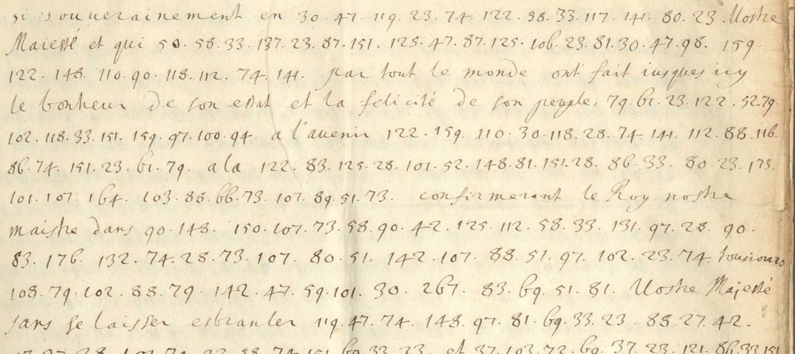

At a glanceKey from adjacent plaintext · partial (72% of the cipher)
- The documents
- A memorial in French from the Swedish envoys at Paris, Carl Bonde and Nils Lillieroot, to Louis XIV, headed “6 Oct: 1676” (Old Style), the enclosure to their despatch of 6/16 October 1676; and the cipher runs of a Swedish despatch of Carl Bonde to Charles XI of 24 November / 4 December 1677. Long passages of both are in numbers, inside clear text. Ten more of Bonde’s despatches of 1676–1678 in the same volume were decoded with later states of the key (section 05); they do not change the figures above.
- Where
- Riksarkivet, Stockholm, Diplomatica Gallica, SE/RA/2105/I/A/24/54, “Envoyén Carl Bonde, Brev till Kungl. Maj:t 1674–1678” (image series R0003797): the memorial on images 321R–326R, the despatch on 488R–490L with its cipher on 489R. Catalogue 2317 (narrowed). Not on DECODE.
- The cipher
- Numbers 19 to 178, one number a letter with up to seven numbers for e, f and n, a few for ss, st, ff, and word codes from about 240; signs 173–178 and the single digits 3, 4, 8 look like nulls, which nothing proves. The same table serves both texts.
- How it was read
- The table was first read off the interlinear Swedish decipherment of a despatch of 1675 in the same volume, corrected on one page of the memorial, frozen, and applied unchanged to nine pages with no gloss. About two fifths of its letter rows (52 of 119) are taken from context, not from the gloss. Shuffled keys never reached the true score (0 of 5,000).
- What it says
- The envoys press Louis XIV to turn his arms on Denmark and, failing that, to ready a squadron “pour le commencement du printemps” to reach Gothenburg and join the ten ships there, to keep Sweden’s places in any peace, and to grant an extraordinary subsidy. In 1677 Bonde reports that the French court is displeased at a delay in Livonia and wants a prompt diversion.
- Still open
- Both texts are under the 95% bar: 546 of 764 words (71.47%) and 24 of 30 (80.00%). Word codes, 17 numbers with no value, 68 words with a numeral cut at the gutter, and a 30-word test that is too short to show much. No person has compared the transcriptions with the images. Of the ten later despatches one is read in part (12/22 August 1676, 70.07%, already paraphrased in print by Wimarson in 1903, by the contributor’s record) and nine are decoded, not read (41–64%).
- Credit
- Malcolm McBratney, with AI agents (issues #453 and #476, pull requests #486, #485 and #525): the transcriptions, the key states, the decoders, the readings and the controls. The key rests on the Swedish chancery’s own decipherment of 1675. Priority is not established.
01 The documents
The volume is the file of Carl Bonde’s despatches from Paris to the Swedish king, 1674–1678, during the Scanian War (This background is not from the sources and was not checked here.) In 1675 the chancery wrote the Swedish decipherment over many coded runs of the despatches (images 102–106 and later). Parts of the file carry cipher with no decipherment.
The memorial opens on f.306r (image 321R) with “Sire, Dans l’estat où sont les affaires de Suede”, is signed “C.B. N.L.” on f.311r (image 326R), and runs over eleven pages. The nine held-out pages are f.306r–308r and f.309v–311r. The despatch of 1677 has one page of cipher, image 489R, in 17 runs of 169 numbers between clear Swedish sentences.

02 The table and its key
The contributor made the key in steps, all on 12 November 2026. Key v1 aligns the 488 numbers of a coded passage of the 1675 despatch (image 102R) with the 566 letters of the Swedish decipherment written over them (EM alignment). Key v2 corrects it from a control (ten rows of the bare image 107L, decoded once and, by the contributor’s account, found word for word in the gloss on image 105L) and fixes values 100–176 from 14 lines of image 324. Those lines are the training lines.
The first test of key v2, on the other 30 lines of image 324, failed the bar the contributor had set: 44 of 103 words (42.72%) against a 65% bar. Key v3 was then made by adding 23 values read off those same lines and correcting one number, and was frozen. Image 324 is therefore in-sample for v3 and carries no count. The nine remaining pages are the test of v3.
v3 has 128 rows. Of its 119 letter rows 57 come from the 1675 gloss, 6 from the control, 29 from the training lines and 23 from the test lines of image 324; four weak guesses are shown in capitals and never counted. So 52 letter rows are taken from context in the memorial itself. On the nine held-out pages 3,407 of 3,599 cipher numbers carry a letter value; 56.5% of those values come from the gloss and 43.5% from context.
The one fact on time that does not rest on the contributor’s word: a time-stamp of 02:54:07 GMT on 12 November 2026 (RFC 3161, checked here) covers a file byte-identical to key v3, earlier than any stamp that holds a held-out page (03:10 and 03:53). That the pages were transcribed after the key and decoded once is by the contributor’s record.
The same table in 1677
The despatch of 1677 was decoded with key v9, a later state of the same table: v4 to v7 add values read from context in Bonde’s despatches of October 1676 and the post-hoc values of the memorial, v8 and v9 values read off the chancery’s glosses of 1676–1677. Seven rows of v3 changed (66 from å to y and 89 from n to l among them) and 36 were added; none was dropped. Because it is one table, both texts are one entry here. The memorial is decoded with v3 only, the despatch with v9 only. By the contributor’s record v9 was frozen at 06:08:58 and the transcription at 06:24:26, before the single decode; the one stamp (06:25:27) came after the decode.
03 What the key reads
| Page | Image | Words | Read (strict) |
|---|---|---|---|
| f.306r | 321R | 47 | 33 (70.21%) |
| f.306v | 322L | 120 | 73 (60.83%) |
| f.307r | 322R | 111 | 94 (84.68%) |
| f.307v | 323L | 100 | 71 (71.00%) |
| f.308r | 323R | 104 | 83 (79.81%) |
| f.309v | 325L | 82 | 50 (60.98%) |
| f.310r | 325R | 83 | 62 (74.70%) |
| f.310v | 326L | 72 | 47 (65.28%) |
| f.311r | 326R | 45 | 33 (73.33%) |
| Memorial, nine pages | 764 | 546 (71.47%) | |
| Despatch of 1677 | 489R | 30 | 24 (80.00%) |
A word counts as read only when every number in it gives its frozen key value and the word is spelt. Word codes (even 314, which the 1675 gloss gives as Danmarck), unvalued numbers, numerals cut at the gutter, weak values and emended words are holes. Together 570 of 794 words, 71.8%. The contributor’s first figure for six of the memorial’s pages, 358 of 486 (73.66%), counted 12 words in which number 66 gives å where French needs y; his own correction is 346 of 486 (71.19%) for those pages, and 546 of 764 for all nine. His looser figures (95.42% for the nine pages, 100% for the despatch) count every word that has a code or a cut as placed and do not measure a share of the text deciphered. Of the despatch’s 24 read words, 22 use at least one value read from context (58 of the 149 numbers in them).
Shuffled keys: 0 of 5,000 reach the true score of a French four-gram model on any page or on the nine pooled (true −2.1534, best shuffle −4.6480 and −4.5698, two seeds); for the despatch a Swedish model gives true −3.1451 against best −4.0151 and −3.9637, a weaker test on 165 scored numbers. A second transcription of f.307v and f.309v by a separate session agrees on 860 of 863 full numerals, and one of the despatch on 168 of 169 (61 against 67 in “alarme”); decoded blind, the despatch gives 23 of 30 (76.67%).
04 The readings
The memorial thanks Louis XIV for his declaration of war on Denmark under the guarantee of the Northern treaties and for Pomponne’s assurance that France will not abandon Charles XI, and reports the victory near Halmstad and the raising of the siege of Bohus. It then presses him: the allies, having lost hope of retaking what France has won, will throw their weight on Sweden. Since Pomponne says that sending troops and ships now is impossible, let France ready a squadron for the start of spring 1677 to reach Gothenburg and join the ten ships there, and keep it secret. The allies will make no peace until France returns its conquests and count on Pomerania; any French peace should restore Charles XI’s places; and Charles XI, with ruined provinces, needs an extraordinary subsidy, part for stores bought in England and Holland for Stralsund and Gothenburg, part for Pomerania, and Hamburg should be won with freedom of trade.
The despatch of 1677 reads, around two word codes, as Swedish that fits the clear text between the runs (“man här wid Hofwet mycket” before the run that decodes illa tilfredt; “kommandes till Lijfland och förnimmandes” before Paez’ opposition): the French court is much displeased that someone coming to Livonia and learning of Pac’s opposition would delay the [418] until the matter with Pac is settled, in the form of a vain negotiation; the French want the plans, with a prompt diversion into [435], carried out, and the King’s Field Marshal to bring the [418] to ripeness so that the suspicions are dropped. The contributor identifies Pac as the Lithuanian grand hetman Michał Kazimierz Pac, his own inference. A later key state gives 418 = march and 435 = Preussen; it was made after the decode and is not used.
Readings with the holes in place and English translations are in the full texts below. They are the contributor’s, read again here as sentences; the repository’s sentence score is 0.753 for the memorial and 0.5 for the despatch (clear text only partly transcribed).
05 Ten more despatches, with later key states
After the memorial the contributor carried the same table through every unglossed cipher despatch of Bonde in the volume that uses it, by the contributor’s survey (pull request #525). Before each new stretch of text a key state was frozen: v4 to v7 add values read from context (the memorial’s post-hoc values, then the October 1676 despatches), v8 to v10 add values read off the chancery’s glosses in the same volume (v10, the last, takes 17 word codes and one letter from glosses of January 1678, images 504, 517–519, 522 and 523). Each page was then transcribed, frozen and decoded once with the key frozen before it; that first pass is the figure of record. The order is by the contributor’s record only (the session logs: v10 frozen at 07:22:14 UTC, before the first page freeze of February and August 1676 at 07:27:55); no time-stamp covers v4 to v10 before the decodes. Each despatch is counted on its own, by the same strict rule as the memorial, and none is pooled with the memorial’s figure.
| Despatch | Images | Key | Words read (strict, first pass) | Class |
|---|---|---|---|---|
| Bonde, 12/22 Feb 1676 | 161R–165L | v10 | 384 of 603 (63.68%) | decoded, not read |
| Bonde and Lillieroot, 12/22 Aug 1676 | 278R–282R | v10 | 494 of 705 (70.07%) | read in part; not first |
| Bonde and Lillieroot, 6/16 Oct 1676 | 317R–320R | v7; v8 | 108 of 262 (41.22%); 78 of 185 (42.16%) | decoded, not read |
| Bonde and Lillieroot, 13/23 Oct 1676 | 327R–330R | v4; v5; v6 | 10 of 23; 11 of 26; 161 of 315 (51.11%) | decoded, not read |
| Bonde, 3/13 Nov 1677 | 471R–473L | v9 | 75 of 131 (57.25%) | decoded, not read; short |
| Bonde, 17/27 Nov 1677 | 479R–481R | v9 | 62 of 100 (62.00%) | decoded, not read; short |
| Bonde, French copy, 24 Nov/4 Dec 1677 | 490R–491L | v3 | 34 of 70 (48.57%) | decoded, not read; short |
| Bonde, 1/11 Dec 1677 | 491R–493L | v9 | 66 of 104 (63.46%) | decoded, not read; short |
| Bonde, 29 Dec 1677/8 Jan 1678 | 507L–511L | v9 | 214 of 377 (56.76%) | decoded, not read |
| Bonde, 5/15 Jan 1678 | 513L–516L | v9 | 112 of 194 (57.73%) | decoded, not read |
Only the despatch of 12/22 August 1676 passes the contributor’s own 65% line, and it is not a first: by the contributor’s record (his reading of the Royal Library’s OCR; the book could not be opened here), Wimarson’s Sveriges krig i Tyskland II (1903), p.176 n.3 and p.305 n.1, gives the substance of its subsidy and peace passages; only the passage on orders to Feuquières (an extraordinary subsidy) is not in his paraphrase. The envoys press Pomponne for more money and for French help by sea and land; he gives no hope of money, but the envoys are told that orders are to go to Feuquières to assure Charles XI of an extraordinary subsidy. The despatch of 12/22 February 1676 rises to 385 of 593 (64.92%) on a decode-blind second transcription of its gutter pages, still under the line; the gutter digits are lost in the binding.
Later keys were also run over pages already decoded (v8 on the October 1676 pages, v10 on 1/11 Dec 1677, 29 Dec 1677 and 5/15 Jan 1678, reaching 67–70% on the last three). Those are re-scores of seen pages, not held-out tests, and are not figures. In every despatch most read words use at least one value read from context rather than from a gloss (12/22 Aug 1676: 362 of 494), so no figure here is a gloss-only reading; the word codes of v10, read off glosses of 1678, are applied up to two years earlier; one of its letters, 144 = b, gives a misspelling in August 1676. Counting words resting on a glossed word code as holes, 12/22 Aug 1676 falls to 439 of 705 (62.27%). Shuffled keys (5,000, two seeds) never reach the true score on any despatch’s first pass, but three single-page tests failed: 165L (4,843 of 5,000 shuffles scored as well), 493L (116 of 5,000) and 515L (1 of 5,000), all short pages. Readings, translations and per-page counts are in the full texts below and in despatches/.
06 Checks made here
The contributor’s decoders, tallies, blind comparisons and shuffle controls were re-run and every filed figure reproduced. A decoder written here from the key file alone decodes all 284 cipher lines of the nine pages and of image 489R identically to the contributor’s decryptions. About 400 groups were compared with the Riksarkivet images (all 17 runs of 489R, lines 1–6 and 18–22 of f.307r, lines 4–12 of f.309v) with no disagreement. These are AI checks; no person has compared any transcription with the images, and the other seven pages and image 324 were not sampled.
For the ten later despatches the contributor’s build script was re-run and reproduces every figure in section 05 byte for byte. A decoder written here from key v10 alone decodes the 17 first-pass pages of February and August 1676 identically. On the images, 222 of 222 groups of image 279R agree with the transcription, and 151 of 153 on the gutter page 163L (two numerals, 59 and 130, read 89 and 136 here, as the decode-blind second transcription also reads them). The prior-art search in Wimarson for these despatches is the contributor’s and was not repeated here.
07 What remains uncertain
- Word codes 240, 245, 267, 324, 463 (one word each) and 314 (two); senses from context only (267 alliance, 324 discours, 463 reputation, all uncertain). In 1677 the codes 418 (twice) and 435.
- Seventeen numbers have no value in v3 (99, 44, 109, 120, 129 and others); values proposed after the decodes are not counted, and fresh text in this table would be needed to test them.
- Numerals cut at the gutter: 68 words of the memorial hold one.
- Probable nulls 173–178 and the digits 3, 4, 8, and the despatch’s words illa and inställa (spelt short by the key) and Paez (46 a weak value), counted not read.
- A 30-word text is too short to test the key; the evidence for it is the memorial.
- Prior art: not found in LIBRIS, archive.org full text, Runeberg, Litteraturbanken, the Recueil des instructions (Suède), Varenius’s review of Trolle-Bonde D.2 (1901), Wimarson (1903 and Sveriges krig i Tyskland, who cites other despatches of Bonde); a web search made here found nothing. Not seen: Trolle-Bonde, Kongliga rådet och ambassadören grefve Carl Bonde D.1 (Lund 1910), Höjer (1875), Grauers (1926) and the French foreign ministry archives, where the memorial as handed over may be in clear. Priority is not established.
- The ten later despatches: word codes with no value in the key state used, gutter losses on the left pages of February 1676, four despatches too short to test (under 150 words), and holes in most sentences of the October 1676 letters. More values could be taken from the volume’s chancery glosses, but a new decode of pages already seen would not be a held-out test. Höjer (1875) is a prior-art risk for the despatches of late 1677 and January 1678 and was not seen.
- Catalogue 2317 stays open: the Swedish letter with Lillieroot (images 327–330) is decoded but not read (first pass 42–51% under keys v4–v6), image 114 left uses another code.
Full texts
The transcription and the decryption of every document on this page, so that the reading can be used and checked. Short files are shown here; all are in the repository.
Bonde and Lillieroot to Louis XIV, memorial, [Paris, 6/16 Oct 1676], f.306r-311r read in part
The Swedish envoys thank Louis XIV for declaring war on Denmark under the guarantee of the Northern treaties and report Charles XI's victory at Halmstad, then press him: turn his arms on Denmark and send troops and ships under the treaty; as Pomponne says that cannot be done, ready a squadron to reach Gothenburg early in spring 1677 and join the ten ships there; the allies will make no peace until France returns its conquests and count on taking Pomerania; any French peace must restore Sweden's lost places; pay an extraordinary subsidy for stores from England and Holland for Stralsund and Gothenburg and for Pomerania; win Hamburg with free trade. Context: the Scanian War (1675-79), with Sweden's German provinces under attack, while the Nijmegen peace talks went on.
Builds coherent sentences, but under the read bar of 95% of words read as sense (71% here); the holes are marked in the reading.
Transcription
# R0003797 image 321 right (f.306r, headed '6 Oct: 1676'), the true opening of Bonde and Lillieroot's French memorial to Louis XIV ('Sire, Dans l'estat où sont les affaires de Suede ...'). Lines before R1 are clear French. HELD-OUT for KEY_v3. Clear French in quotes.
R1: "Les trouppes qui ont agi en ces occasions" 118 33 151 48 23 101 118 28 33 76
R2: 142 141 99 121 23 159 117 64 116 23 141 164 119 148 150 "l'asseurance"
R3: 24 42 33 119 102 34 88 132 151 101 79 81 58 97 121 73 "pour" 23 124 37 79
R4: 85 62 69 164 81 27 119 159 48 90 23 164 106 79 119 58 69 37 101 97 28
R5: 126 74 141 245 105 23 41 151 141 156 28 31 151 86 64 102 141 173 23 151
R6: "de tout entreprendre sous le commandement d'un Roy qui a"
R7: "toutes les parties d'un bon General, car nous esperons qu'avec l'assistance"
R8: "de Dieu" 101 27 60 83 64 141 99 23 122 107 121 27 82 28 79 33 151
R9: 58 99 51 33 23 124 27 151 119 27 74 90 23 116 86 66 23 33 106 141
R10: 81 23 101 141 105 86 69 74 122 "de chasser les ennemis de son"
R11: "royaume," 142 51 122 23 81 58 97 74 28 37 30 159 119 34 88 107 102
R12: 148 33 28 23 141 151 80 79 121 23 99 27 104 90 28 74 151 86 97 70 80
R13: 97 33 81 34 126 119 90 23 73 159 21 47 28 102 141 122 106 23 178
R14: 101 97 23 106 141 23 41 60 47 31 141 116 103 20 33 141 "Pour le moins"Transcription
# R0003797 image 322 left (f.306v), Bonde and Lillieroot's French memorial to Louis XIV, page before #453's first page (f.307v on image 323). HELD-OUT for KEY_v3. Clear French in quotes. '~' = numeral cut at the gutter. R1: "nous sommes persuadés que" 90 34 99 74 23 88 27 64 141 40 7~ R2: 117 23 240 156 34 69 50 37 86 23 151 119 27 122 "avoir" 22 83 112 R3: 147 59 97 151 28 90 79 88 23 33 125 80 51 122 50 23 81 90 148 74 27 15~ R4: 118 33 101 118 97 173 73 27 110 62 118 112 74 23 141 151 164 86 33 147 R5: 70 51 74 141 99 86 33 151 98 148 33 70 "de part et qu'elle nous en" R6: 22 51 74 27 104 112 141 33 151 58 40 126 58 28 74 144 23 73 141 77 23 81 4~ R7: "Il n'est pas seulement" 131 126 23 99 28 86 117 "Sire" 80 79 44 2~ R8: 105 97 125 107 74 126 33 151 121 148 28 70 98 23 "et de faire" 97 2~ R9: 62 34 64 74 "en mesme temps" 90 159 147 97 99 28 81 141 79 151 8~ R10: 103 52 34 102 81 23 "de nos" 148 150 138 160 164 148 175 126 118 122 R11: 103 88 28 101 "et à nos ennemis mais aussy de" 122 79 81 58 97 121 28 ~ R12: 97 33 119 121 147 33 105 141 138 148 30 111 23 97 74 141 126 44 "d'empescher" R13: 90 27 80 23 99 121 97 81 151 64 34 117 142 107 73 23 122 107 99 103 12~ R14: "dont il est" 138 141 33 27 81 79 119 34 42 74 "avoir" 119 121 112 122 90 51 ~ R15: 148 74 88 51 122 "pour l'interest" 106 160 97 58 99 74 141 88 27 112 23 4~ R16: 80 79 121 23 30 79 69 141 74 "les affaires" 105 34 88 138 42 33 23 122 ~ R17: 60 23 70 151 74 79 "nos suiets" 27 176 105 58 126 97 23 74 151 142 47 ~ R18: 42 74 141 37 97 58 101 81 86 33 84 126 23 99 141 101 23 79 80 2~ R19: 77 107 74 116 28 150 70 34 69 98 "a la fois" 126 86 40 150 141 135 ~ R20: 34 28 74 79 23 107 30 148 463 106 160 "nos armes." R21: "Il nous est" 20 30 133 37 147 23 126 67 80 51 108 148 112 121 107 "nos" R22: 70 58 69 151 141 30 23 69 74 58 119 79 "que l'on ne peut pas" 69 R23: 58 30 141 74 28 88 119 42 33 23 116 79 33 151 30 107 101 125 74 1~ R24: 161 125 98 23 101 "dont nous" 23 99 141 101 90 79 20 27 74 148 33 ~ R25: "il est de" 90 27 119 74 69 80 23 87 105 141 106 23 119 74 23 42 14~ R26: 137 28 121 30 23 81 58 97 119 "que l'on" 97 58 69 101 119 74 23 119 ~ R27: 121 169 "et il est de la" 64 97 71 28 81 79 24 107 30 47 110 160 5~ R28: 102 133 73 28 70 51 23 41 80 107 30 47 144 58 33 117 23 52 86 ~ R29: 41 118 97 98 "ensemble de ne" 35 118 28 33 151 144 27 112 39 23 7~ R30: 148 81 25 47 104 30 141 121 97 86 101 103 61 28 107 122 "ny" R31: 104 83 33 106 118 33 165 79 74 97 87 102 118 94 "qui a tout" 97 58 ~ R32: 144 126 122 159 81 74 161 105 28 107 37 119 34 97 37 "Vostre Majesté." R33: "Si ces" 97 23 74 151 42 122 131 69 112 150 23 110 59 141 33 15~
Transcription
# R0003797 image 322 right (f.307r), Bonde and Lillieroot's French memorial to Louis XIV; #453's first page (f.307v) follows. HELD-OUT for KEY_v3. Clear French in quotes. R1: "si souverainement en" 30 47 119 23 74 122 58 33 117 141 80 23 "Vostre" R2: "Majesté et qui" 50 58 33 137 23 87 151 125 47 87 125 106 23 81 30 47 98 159 R3: 122 148 110 90 118 112 74 141 "par tout le monde ont fait iusques icy" R4: "le bonheur de son estat et la felicité de son peuple," 79 61 23 122 52 79 R5: 102 118 33 151 159 97 100 94 "a l'avenir" 122 159 110 30 118 28 74 141 112 88 116 R6: 86 74 151 23 61 79 "a la" 122 83 125 28 101 52 148 81 151 28 86 33 80 23 173 R7: 101 107 164 103 88 66 73 107 89 51 73 "confirmeront le Roy nostre" R8: "maistre dans" 90 148 150 107 73 58 90 42 125 112 58 33 131 97 28 90 R9: 83 176 132 74 28 73 107 80 51 142 107 88 51 97 102 23 74 "tousiours" R10: 108 79 102 88 79 142 47 59 101 30 267 83 69 51 81 "Vostre Majesté" R11: "sans se laisser esbranler" 119 47 74 148 97 81 69 33 23 88 27 42 R12: 97 27 28 101 79 22 58 74 151 69 33 23 "et" 37 103 72 69 37 23 121 86 33 151 R13: 101 23 122 148 31 161 107 73 "dans la pensée qu'ils ont que l'on" 59 23 R14: 132 23 42 151 112 47 88 27 28 122 73 23 176 150 141 119 23 33 125 112 74 R15: 106 27 97 58 28 74 107 88 104 121 27 72 23 "l'interest de Vostre Majesté." R16: "Il est inutile de faire" 156 33 90 58 33 20 324 101 97 74 "une chose" R17: "dont personne ne peut douter, et nous sommes trespersuadés que" R18: "Vostre Majesté trouvera" 64 69 28 90 141 40 70 23 88 119 122 142 23 R19: 73 118 33 110 23 74 38 141 74 112 23 42 101 79 116 23 33 151 "soit à faire" R20: 90 159 20 126 23 121 74 107 101 27 33 122 81 74 83 64 33 151 141 80 107 R21: 122 97 81 105 118 88 48 23 74 122 86 28 151 159 174 125 74 27 28 70 151 R22: 107 74 106 23 30 27 119 47 64 67 148 97 23 81 107 73 119 23 R23: 121 159 33 81 79 106 23 73 42 81 105 23 101 R24: "Il est certain que le Roy nostre maistre" 87 51 101 49 159 69 74 R25: 58 23 151 102 23 101 64 71 79 121 144 86 33 20 70 79 88 119 101 159 R26: 90 51 77 86 74 151 142 23 151 103 33 151 142 51 33 117 141 88 28 122 R27: "sans" 79 40 102 23 73 107 81 118 97 121 69 "et que" 49 23 101 141 33 87 R28: 79 88 28 122 "ayant perdu l'esperance" 142 167 121 107 81 R29: 34 33 126 42 107 150 147 74 101 42 150 69 86 40 74 141 138 148 R30: 28 79 71 23 144 79 73 119 90 47 81 79 122 131 69 23 31 79 90 23 42 R31: 150 27 173 119 74 64 101 23 122 23 117 "cette guerre sont convenus" R32: "de faire" 98 58 88 104 51 74 142 23 101 28 20 74 83 33 80 101 23 21 R33: 118 74 41 122 101 97 150 90 103 38 69 23 106 141 "pour" 51 33 R34: 50
Transcription
# R0003797 image 323 left (f.307v), all cipher lines. FRESH text, transcribed without decoding. '~' = numeral cut at the gutter. CLEAR words in quotes. The page opens mid-sentence: the memorial starts on an earlier leaf (image 322, not fetched). R1: 50 23 80 58 88 116 27 54 141 121 "Quand ils en seront venus à bout, il ne faut pas douter qu'ils ne" R2: 74 27 72 103 88 104 90 7~ R3: 33 151 90 23 42 74 122 148 74 88 23 73 "pour les" 107 88 119 9~ R4: 58 66 23 74 151 58 97 70 23 101 143 58 33 151 121 79 126 58 71 74 ~ R5: 60 27 112 79 40 23 "et s'ils ne trouvent leur" 81 58 33 70 141 15~ R6: 69 67 81 133 33 80 147 151 28 34 33 101 142 97 59 23 119 74 118 88 R7: 85 41 141 119 27 28 95 "qu'ils ne" 121 23 55 148 126 123 107 117 151 R8: 90 51 97 121 73 119 74 79 151 107 33 122 28 34 87 101 "et au lieu de se" R9: 105 86 33 70 27 33 151 141 74 88 27 64 33 151 141 33 159 59 12~ R10: "de regaigner" 81 23 131 42 161 90 73 34 33 151 119 23 74 80 69 "qu'ils" R11: 119 74 23 151 141 33 142 79 33 151 159 119 74 79 101 "ce qu'ils se" 81 74 R12: 58 28 150 86 33 125 79 40 74 23 107 33 23 71 27 151 24 79 119 74 23 33 106 74 2~ R13: "Voila Sire ce qui" 23 40 81 79 74 151 27 64 87 "mais il est" 28 3~ R14: 81 79 37 151 148 161 117 119 34 42 37 84 69 64 "la" 78 86 74 151 42 33 ~ R15: 101 23 142 51 81 90 27 74 107 37 159 "et si la valeur et la puissance de vostre Majesté" R16: 122 23 74 58 33 151 41 34 69 73 28 58 42 37 101 12~ R17: 23 105 34 59 50 79 164 119 27 74 "le mesme bonheur qui a" 164 R18: 69 28 97 64 73 79 164 148 102 138 51 122 147 42 101 131 97 23 1~ R19: 28 81 94 "et dont elle s'est" 150 23 33 106 69 51 106 28 110 33 141 119 27 ~ R20: "tant de" 144 79 31 23 101 79 151 110 90 118 74 28 141 42 101 23 ~ R21: 159 105 151 28 162 33 164 "Il n'en faut pas douter pourveu que Vostre Majesté trouve" R23: 48 58 33 142 107 151 34 42 74 59 79 37 73 23 101 47 37 88 23 101 R24: 81 58 33 125 74 107 30 23 121 118 66 106 23 314 "et" 106 23 33 97 11~ R25: 66 23 74 142 23 "bonne heure" 159 126 73 107 81 34 42 37 101 106 R26: 90 148 101 69 79 50 23 "le nombre" 80 23 151 74 58 97 119 57 ~ R27: 23 151 142 107 97 27 28 100 51 27 42 155 "qui soit" 119 74 133 35 8~ R28: 125 147 86 33 137 107 47 30 27 20 74 148 33 106 141 42 74 2~ R29: 106 27 33 76 23 74 "suivant le contenu du traitté, car ce n'[est]" R30: "que par" 81 23 88 34 66 23 117 101 161 "toutes choses" 33 23 117 133 ~ R31: 151 74 118 88 119 23 33 151 "que l'on puisse" 150 23 99 47 26 9~ R32: 121 62 23 101 27 77 47 64 121 141 101 106 51 30 47 81 159 97 7~ R33: 105 58 88 138 42 33 51 "et" 119 74 23 85 47 121 141 74 90 16~
Transcription
# R0003797 image 323 right (f.308r), all lines. FRESH text, transcribed without decoding. '~' = numeral at the page edge, doubtful/cut. CLEAR words in quotes. R1: 105 75 23 88 64 59 159 "une paix iuste et honorable. C'est sur quoy nous avons desia eu l'honneur d'expliquer à Vostre Majesté les sentimens du Roy nostre maistre, et d'en entretenir souvent Monsieur de Pompone, qui nous a fait connoistre de la part de Vostre Majesté" R5: 90 28 88 119 34 100 64 104 112 30 28 151 141 56 42 23 31 79 151 74 R6: 86 42 126 23 47 176 22 47 28 74 141 30 148 20 42 107 74 37 51 103 97 R7: 121 118 94 50 79 314 "et a donner" 90 79 122 23 81 58 97 74 101 103 90 2~ R8: 101 97 23 106 141 117 23 137 34 42 101 47 66 148 33 151 145 103 28 100 23 148 R9: 97 81 42 33 79 23 101 119 79 74 148 33 81 23 117 94 80 79 90 42 33 33 66 R10: 142 107 30 148 42 151 74 141 R11: "Nous" 59 34 42 101 81 118 33 151 141 33 125 79 74 28 118 33 101 "sans doute" R12: 142 23 81 23 41 151 141 74 141 101 119 34 33 122 79 "si nous estions" R13: 138 34 28 117 101 73 23 33 101 28 26 30 79 101 148 42 44 88 159 30 R14: 19 23 42 74 101 142 42 117 74 34 129 148 42 116 23 159 109 30 64 20 79 R15: "et aux" 106 79 119 30 47 64 101 28 74 122 80 97 102 34 45 137 58 40 R16: 150 51 88 148 28 71 74 23 "Mais" 30 79 93 23 90 79 120 42 23 "nous" R17: "avons pour" 101 34 33 122 141 74 42 64 81 79 "ioint à" 145 159 117 23 R18: 81 79 100 28 151 23 106 23 101 79 122 148 22 47 28 74 23 122 "et" 159 R19: 90 79 38 119 79 74 47 33 81 23 "d'une" 138 51 64 31 23 97 121 79 R20: 108 86 102 98 126 117 23 "a l'avenir nous" 133 104 90 28 20 23 159 R21: 150 79 64 151 141 74 23 102 33 58 122 161 33 99 103 117 81 23 101 R22: "et nous donne" 90 23 119 74 64 97 112 90 79 20 141 106 23 74 23 R23: 119 74 23 101 79 33 151 141 74 98 74 23 101 19 42 88 144 30 79 116 23 R24: 33 151 159 156 34 99 74 23 138 27 64 23 99 79 "plus d'une fois combien" R25: 101 27 116 47 161 23 124 79 105 86 33 151 141 101 42 74 122 118 33 103 116 R26: 28 151 64 79 23 151 105 34 116 48 28 23 33 "il importe a l'interest" R27: "commun" 50 79 90 27 101 23 81 118 97 74 112 150 R28: "Il est vray qu'il est" 106 28 77 112 81 64 30 79 142 23 108 47 28 R29: 121 23 119 47 100 23 74 49 79 101 23 81 34 42 74 101 60 47 28 122 R30: "nous esperons que Vostre Majesté ne trouvera pas" 143 23 151 125 141 R31: 80 64 109 28 105 69 30 98 23 147 33 126 28 117 81 28 48 30 141 "laquelle" R32: "peut estre" 101 42 74 88 58 33 70 23 79 119 47 74 97 33 79 109 118 74 70 R33: 138 23 106 28 34 81 74 141 79 98 85 47 150 "des mesures iustes."
Transcription
f308v_324L_lines1-14_training.txt
# R0003797 image 324 left (f.308v), lines 1-14. TRAINING text: read with KEY_v1 two-digit values plus context to fix the values 100-176. Not part of any test. # CLEAR words in quotes. '~' = numeral cut at the gutter. l1: "Vostre Majesté qui a fait tant de belles actions en sa vie, sçait" l2: "mieux que personne qu'il n'y" 167 137 159 119 34 64 33 151 101 27 33 12~ l3: 51 135 74 47 33 106 79 101 51 33 151 74 141 119 74 28 101 23 164 "lesquelles" l4: "ne" 150 79 42 100 161 39 23 33 151 135 97 23 74 141 122 164 159 33 164 14~ l5: 161 77 28 81 97 90 151 141 137 94 122 159 33 73 119 141 121 28 90 "Tous" l6: "les ennemis" 23 33 101 118 137 41 142 58 42 151 141 97 67 106 159 104 11~ l7: 121 142 "Mais Vostre Majesté a accoustumé" 106 79 119 102 51 33 14~ l8: 37 79 101 23 122 119 74 23 81 47 42 151 28 34 59 101 23 125 "ou il n'y" l9: "a point eu de" 119 74 58 132 86 102 151 28 34 117 107 33 125 74 79 30 l10: 119 23 37 151 141 141 151 30 79 20 27 64 87 "elle n'a iamais balancé" l11: 159 19 148 93 83 74 142 23 74 119 23 42 119 86 42 121 20 148 28 54 3~ l12: 141 74 104 23 47 156 81 118 97 132 l13: "Le plus" 101 79 97 121 107 40 142 23 176 151 141 33 64 74 90 27 81 1~ l14: 58 101 79 122 107 143 102 23 125 141 "et comme la saison est trop"
Transcription
# R0003797 image 324 (f.308v lines 15-30, f.309r lines 1-22). HELD-OUT text: transcribed without decoding, frozen before the single decode with KEY_v2. # CLEAR words in quotes. '~' = numeral cut at the gutter or page edge. Not yet read: f.309r lines 23 on, images 325-326. R15: "avancée" 119 133 97 74 52 47 28 102 79 119 47 39 79 74 144 107 142 28~ R16: 122 79 105 118 156 74 101 81 51 70 98 160 148 33 117 23 107 "nous" R17: "esperons qu'il plaira à Vostre Majesté de" 144 107 119 74 23 132 47 74 2~ R18: 85 58 97 74 144 79 "commencement" 142 97 119 74 28 33 151 141 88 119 101~ R19: 37 118 81 19 27 28 117 "afin qu'il" 132 126 161 72 141 107 33 151 74 23 ~ R20: 24 141 48 118 33 137 141 "heure au" 119 58 121 151 106 141 20 118 1~ R21: 107 33 144 133 97 121 110 "et" 28 118 64 33 142 121 141 90 23 101 ~ R22: 67 97 148 161 100 27 42 95 34 97 28 "y sont pour" 108 133 121 88 ~ R23: 156 33 23 140 90 118 70 151 107 49 148 119 27 82 30 23 "de faire" R24: 126 33 23 50 161 97 23 74 101 64 34 33 49 118 165 122 147 R25: 142 167 150 159 104 144 160 "Cependant les Plenipotentiaires qui sont assemblés à Nimmegue ne negligeront pas les negotiations de la paix, à laquelle Vostre Majesté a tousjours declaré avec beaucoup de generosité de vouloir apporter toute la facilité imaginable. Mais si elle avoit" 148 20~ R29: 141 159 104 30 160 142 79 33 118 42 126 102 28 150 119 90 126 16~ R30: "particulierement" 122 23 101 38 51 33 70 28 88 23 33 101 148 15~ R31: 150 133 94 117 86 40 74 79 88 42 64 71 102 79 "Sa Majesté" 119 74~ R32: 86 22 64 151 141 37 118 28 151 106 79 "cette confiance pour faire" R33: 159 20 28 74 122 107 101 132 30 23 33 64 119 58 151 141 33 151 28 47 1~ R34: 121 23 164 106 23 81 34 59 105 79 74 151 "et pour leur donner tous" R35: "les ordres necessaires" 119 86 69 74 108 159 28 74 141 121 79 42 100 28 7~ R36: 90 79 60 107 38 116 23 142 51 100 79 28 137 "Nous prevoyons bien que cette negotiation sera beaucoup" R38: "traversée par" 90 47 88 27 42 97 148 28 101 23 112 33 151 79 59 41 28~ R39: 118 59 142 51 101 148 31 112 79 73 "qui ont" 74 23 101 34 30 42 23 3~ R40: 70 74 23 141 42 128 "de ne point faire" 24 79 119 148 28 95 56 69 2~ R41: 97 34 40 74 23 88 47 28 79 71 23 33 79 30 141 42 74 121 107 33 5~ R42: 79 30 107 101 105 34 59 84 97 23 71 23 122 131 97 23 61 79 159 176 R43: 108 148 64 70 23 101 "sur eux" 79 33 81 23 151 41 141 20 42 23 74 R44: 37 79 "et ils témoignent tant d'opiniâtreté en ce point, qu'il n'y a point d'apparence qu'ils s'en veuillent demordre. Ils ont pris des" R46: "mesures ensemble pour" 138 51 70 151 74 141 30 148 101 42 23 80 1~ R47: 80 148 33 101 30 64 116 119 34 100 28 82 64 90 28 151 141 24 79 22~ R48: 159 28 74 79 "la guerre avec succes et ils se promettent" 90 148~ R49: 102 23 80 42 81 151 64 34 117 106 23 90 159 119 86 138 23 74 148 33~ R50: 64 141 "devant qu'il soit peu" 90 159 131 126 23 61 79 30 23 42 74 R51: 141 40 159 39 23 42 37 79 141 164 64 79 31 51 33 79 40 119 148 101~ R52: 101 23 81 58 97 102 69 23 "Ils sont enflés de la conqueste de Breme"
Transcription
# R0003797 image 325 left (f.309v), all lines. FRESH text, transcribed without decoding. '~' = numeral cut at the gutter. CLEAR words in quotes. # Note: image 324 right (f.309r) lines 23-30 hold NO cipher (all clear French), so there is nothing to transcribe there. R1: "prochaine contre la France. C'est par ces moyens qu'ils pretendent de reduire Vostre Majesté à la necessité de leur ceder le droit de faire la paix telle que bon leur semblera," R4: 30 79 84 97 23 90 173 79 89 141 101 23 99 110 30 1~ R5: 121 28 23 42 101 79 88 107 33 98 159 81 120 126 147 101 "partant" R6: 142 79 106 64 109 23 102 141 137 98 79 101 97 161 105 70 34 64 150 R7: 38 "Mais il ne" 151 64 23 33 142 74 148 131 97 159 107 139 141 80 ~ R8: 150 86 116 132 102 23 90 79 42 102 122 138 79 101 97 121 107 16~ R9: "soit par le" 150 107 40 148 26 144 112 39 141 88 160 33 151 142 51 ~ R10: 159 77 148 112 74 23 101 142 23 122 42 79 106 51 164 118 147 12~ R11: 119 159 74 156 33 107 110 23 33 107 121 160 97 122 141 106 160 81 R12: 103 74 159 70 28 118 87 119 86 97 102 90 103 119 159 28 44 17~ R13: "L'un et l'autre est glorieux à Vostre Majesté, et tous les deux ont apparence de succés." R15: "Si" 79 61 23 119 74 107 33 118 64 151 90 27 150 51 101 34 90 97 125 2~ R16: 86 33 103 57 121 107 73 "une si heureuse campagne et au" R17: "milieu de ses victoires" 106 23 132 74 79 97 23 33 28 37 90 R18: 142 79 100 51 64 33 142 23 101 107 33 117 79 116 28 122 51 117 3~ R19: 47 81 102 28 108 147 103 33 151 105 23 101 49 58 87 120 97 23 71 7~ R20: 83 97 121 79 119 86 164 "de la Chrestienté, le Roy nostre maistre" R21: 107 38 132 23 74 79 131 69 107 89 23 137 23 156 58 97 80 74 ~ R22: 112 70 119 148 101 90 51 22 159 161 74 51 "sans y mettre une" R23: 105 58 87 106 28 70 161 58 117 131 97 28 90 79 119 97 40 150 R24: 138 51 41 70 150 141 141 33 119 133 39 23 100 28 162 59 80 51 73 10~ R25: 119 90 83 105 51 164 144 79 122 118 64 137 "que vostre Majesté" R26: "auroit en ce rencontre" 106 79 122 133 165 147 33 151 141 74 23 ~ R27: "trouveroit des" 144 58 97 159 59 20 23 101 119 159 74 125 34 42 7~ R28: 144 23 42 74 118 132 141 "et un tel exemple" 106 23 110 141 33 16~ R29: 150 133 73 112 70 79 103 126 74 133 161 41 "du moins et avant" R30: "que ceux qui publient que" 144 23 122 70 102 47 28 151 41 1~ R31: 131 126 23 30 34 117 159 177 148 97 23 81 69 86 157 121 14~
Transcription
# R0003797 image 325 right (f.310r), all cipher lines. FRESH text, transcribed without decoding. CLEAR words in quotes. R1: 138 159 28 141 99 79 59 107 122 118 87 70 "que de" 22 118 147 R2: 104 30 141 101 20 148 74 47 33 80 101 142 107 90 103 122 79 97 121 79 R3: 70 79 106 23 122 79 101 148 115 64 23 122 107 137 73 51 121 118 28 R4: 141 33 151 142 51 125 102 118 138 132 107 73 "C'est pourquoy" R5: "Vostre Majesté veut bien que le Roy nostre maistre" 78 103 100 23 R6: 108 133 117 24 101 69 150 145 103 74 98 64 81 30 51 "du traitté qui" R7: "porte qu'elle" 108 51 121 148 62 27 110 126 23 121 150 23 159 97 67 79 87 R8: 117 107 138 112 73 106 51 73 148 116 83 147 51 71 79 80 23 151 58 69 R9: 70 23 38 101 23 164 108 58 74 81 23 122 "et qu'elle ne desistera" R10: "pas" 56 69 141 31 23 33 79 30 42 66 141 117 148 129 79 119 121 58 49 69 R11: 150 23 101 83 151 64 101 52 103 81 151 64 86 33 79 59 70 28 23 74 107 R12: "dont il a plu à Vostre Majesté de nous faire donner de nouvelles asseurances." R14: "Il est constant" 56 42 97 33 23 125 141 61 79 106 51 81 30 148 74 R15: 83 70 64 86 33 132 86 69 74 90 103 119 159 28 95 "surprendroit" 41 34 R16: 97 122 144 51 38 148 89 112 79 101 "L'Empereur et l'Espagne" R17: "ne sçauroient s'empescher" 50 23 101 66 121 23 33 142 121 79 117 129 R18: 144 79 101 111 58 61 159 33 142 86 28 122 23 151 "la pluspart des estats" R19: "de l'Empire" 50 79 30 148 119 132 90 103 42 142 28 74 "si bien" R20: "qu'infailliblement" 64 30 178 101 79 33 164 69 64 97 74 58 112 151 R21: 118 42 175 156 33 79 119 74 133 138 119 41 79 132 148 28 44 162 156 R22: 97 33 23 50 112 100 23 33 151 28 133 33 79 87 98 121 23 90 23 101 R23: 159 89 112 107 73 "et à la fin" 49 51 97 95 131 69 161 "n'y trouveroient" R24: "pas" 144 23 42 74 81 118 33 151 141 122 107 121 118 64 51 33 151 143 R25: 86 33 70 121 159 64 33 70 164 80 66 81 34 87 122 23 33 151 28 74 R26: 119 86 97 121 137 23 40 121 79 119 47 38 159 26 103 117 142 133 R27: 117 33 79 164 80 141 "leurs amys. La connoissance que nous en avons ne nous permet non plus de douter de cette verité que la precaution et la prudence de fonder la dessus des esperances si certaines, que l'on en neglige les preparatifs qu'il est necessaire de faire pour la campagne prochaine. C'est pourquoy il n'y aura sorte de soin que le Roy nostre maistre"
Transcription
# R0003797 image 326 left (f.310v), all cipher lines. FRESH text, transcribed without decoding. '~' = numeral cut at the gutter. CLEAR words in quotes. Single-digit groups (8, 4) are written as seen. R1: "ne veuille prendre de son costé pour raccommoder les affaires, pour equipper sa flotte, pour renforcer son armée et pour pourvoir à la seureté de ses estats et a celle de ses places, affin se mettre en estat d'agir utilement pour le bien commun. Sa Majesté ne" R5: 105 55 159 87 110 23 121 148 119 47 101 142 51 122 141 R6: 98 28 88 23 33 122 119 58 42 74 159 97 34 64 37 79 71 107 88 10~ R7: 90 19 23 42 74 79 126 101 23 "elle a le coeur trop grand pour s'en laisser accabler, il reste à ses trouppes quelque chose de l'ancienne vigueur et de l'envie de bien faire, et il n'a point de suiet qui luy sacrifie de bon coeur sa vie et son bien." R11: 138 47 64 73 105 58 88 116 107 33 66 90 23 97 121 104 64 51 11~ R12: 137 66 90 23 74 79 42 107 33 97 106 51 90 103 49 58 97 74 118 R13: 117 79 "qui est extremement" 80 161 138 64 59 97 107 119 27 150 R14: 62 112 33 70 79 74 102 42 132 70 28 118 33 80 97 105 118 88 116 28 ~ R15: 81 23 "de plusieurs années, beaucoup de ses" 132 102 34 97 28 33 81 ~ R16: 101 51 71 103 33 98 79 87 151 28 23 74 107 88 141 33 125 121 42 64 R17: 33 79 107 122 119 148 74 90 51 73 148 74 88 23 107 164 117 129 R18: "le" 101 69 26 73 64 50 79 118 37 24 64 33 148 112 37 23 131 42 141 R19: "Vostre Majesté luy fait" 119 148 45 23 37 148 69 23 81 97 33 141 R20: 132 74 58 88 119 151 28 125 42 142 23 80 28 20 33 141 106 69 117 R21: 90 118 42 159 33 76 107 "toute particuliere ne peuvent pas" R22: 122 69 21 64 102 79 148 8 30 23 44 49 23 100 28 69 141 50 79 119 R23: 79 59 101 107 "qu'il est necessaire" 106 51 78 148 28 102 16~ R24: "Le Roy nostre maistre" 107 38 119 23 74 141 120 69 23 97 58 4~ R25: 121 79 116 148 28 51 40 141 "sera" 122 69 119 132 62 141 51 74 14~ R26: 105 23 80 51 52 83 69 41 119 148 74 69 33 23 101 118 88 116 107 R27: 141 67 70 121 103 118 102 106 147 33 159 28 102 23 "qu'elle" R28: "aura" 90 148 26 118 33 70 51 80 79 90 42 66 159 81 105 34 R29: 102 50 23 102 "dont" 97 59 23 119 148 102 70 64 51 122 51 121 8~ R30: 28 41 47 88 119 30 34 66 141 79 148 4 103 81 55 23 151 79
Transcription
# R0003797 image 326 right (f.311r), all cipher lines. FRESH text, transcribed without decoding. CLEAR words in quotes. Single-digit group 3 written as seen. R1: 24 141 38 116 69 59 28 70 147 58 33 101 50 23 48 58 69 81 19 164 R2: 23 41 106 23 110 69 23 121 150 79 51 33 159 117 54 62 23 41 141 74 102 51 R3: 79 151 169 33 134 34 61 148 137 80 51 "pour estre" 41 102 148 33 38 119 R4: 58 74 151 141 79 122 148 3 40 37 148 30 73 69 33 50 51 151 103 3 54 118 R5: 41 19 23 33 104 118 42 74 110 "et l'autre" 119 27 74 151 28 79 150 79 88 R6: 112 73 79 23 117 130 86 60 23 102 103 33 64 79 132 86 97 121 62 103 R7: 81 58 33 164 107 74 97 103 70 64 58 117 80 51 143 107 41 125 141 R8: 119 74 34 42 112 87 105 79 "a laquelle la" 97 28 61 79 106 141 19 159 R9: 32 104 86 97 102 110 "peut beaucoup contribuer, de sorte que vostre Majesté feroit la chose du monde la plus necessaire et la plus avantageuse à la cause commune que de" R11: 30 51 59 110 148 20 23 74 R12: 103 3 38 23 122 64 33 151 141 74 79 40 164 51 33 30 42 66 148 81 R13: 49 86 74 106 47 33 151 62 47 144 161 104 141 150 125 79 50 69 R14: 143 118 138 88 51 121 105 167 "Voila Sire ce que nous avons eu ordre de vous representer de la part du roy nostre maistre, nous supplions tres humblement Vostre Majesté d'y faire reflexion, et de nous accorder une favorable response, estant avec beaucoup de respect, Sire, de Vostre Majesté C.B. N.L."
Decryption
# Decryption of transcriptions/f306r_321R.txt with key.tsv (v3), written by scripts/build.py. «» = clear on the page; [~] = numeral cut at the gutter; <n> = no value in the key; CAPITALS = weak value. First decoded once on 12 Nov 2026 at 03:42:40 UTC (b104). R1 «Les trouppes qui ont agi en ces occasions» ontbesoin<76> R2 de<99>reanimeespar «l'asseurance» R3 dunpromptsecours «pour» e<124>re R4 pluscapablesdepoursui R5 ure<245>cetteuiltoire<173>et R6 «de tout entreprendre sous le commandement d'un Roy qui a» R7 «toutes les parties d'un bon General, car nous esperons qu'avec l'assistance» R8 «de Dieu» samaie<99>eserabient R9 o<99>ene<124>atparlemoående R10 cesecours «de chasser les ennemis de son» R11 «royaume,» desecourirlapomer R12 anieetdere<99>ablirtoutd R13 uncouplesaÅairesde<178> R14 suedeetmalemLgne «Pour le moins»
Decryption
# Decryption of transcriptions/f306v_322L.txt with key.tsv (v3), written by scripts/build.py. «» = clear on the page; [~] = numeral cut at the gutter; <n> = no value in the key; CAPITALS = weak value. First decoded once on 12 Nov 2026 at 03:40:25 UTC (b104). R1 «nous sommes persuadés que» lo<99>remaiest[~] R2 ne<240>uoudroetpas «avoir» fai R3 inutilementdesdeclara[~] R4 onsou<173>sagloireetsoni R5 tere<99>onttant «de part et qu'elle nous en» R6 ferabientostuoirlesefec[~] R7 «Il n'est pas seulement» que<99>ion «Sire» de<44>[~] R8 cuteruntraitte «et de faire» u[~] R9 loir «en mesme temps» laiu<99>iceet[~] R10 Lforce «de nos» armesa<175>uos R11 Lmis «et à nos ennemis mais aussy de» secouri[~] R12 unprincemal<111>eureu<44> «d'empescher» R13 lade<99>ructiondesese<99>L[~] R14 «dont il est» menacepour «avoir» prisle[~] R15 armes «pour l'interest» deuo<99>remaie[~] R16 dereleuer «les affaires» communes[~] R17 mettre «nos suiets» a<176>couuertda[~] R18 ureruosconque<99>eseed[~] R19 fermirtout «a la fois» uostreg[~] R20 oireeela<463>de «nos armes.» R21 «Il nous est» glorieuxdefaire «nos» R22 touteleurope «que l'on ne peut pas» u R23 olerimpunementlestr[~] R24 ittes «dont nous» e<99>eslegaran[~] R25 «il est de» laprudencedepreu[~] R26 nirlecoup «que l'on» uousprep[~] R27 rä «et il est de la» iusticedelage[~] R28 rositeetdelalonnefo[~] R29 tout «ensemble de ne» pointlaisse[~] R30 accableruosLlies «ny» R31 bandonnerunroy «qui a tout» uo[~] R32 lusacricierpour «Vostre Majesté.» R33 «Si ces» uertusquiregnen[~]
Decryption
# Decryption of transcriptions/f307r_322R.txt with key.tsv (v3), written by scripts/build.py. «» = clear on the page; [~] = numeral cut at the gutter; <n> = no value in the key; CAPITALS = weak value. First decoded once on 12 Nov 2026 at 03:40:25 UTC (b104). R1 «si souverainement en» lapersonnede «Vostre» R2 «Majesté et qui» donnenttantdeclata R3 sagloire «par tout le monde ont fait iusques icy» R4 «le bonheur de son estat et la felicité de son peuple,» elesfe R5 rontaussy «a l'avenir» sagloireimm R6 ortele «a la» satisfactionde<173> R7 sesLmåsenes «confirmeront le Roy nostre» R8 «maistre dans» laresolutionquil R9 a<176>prisededemeurer «tousiours» R10 fermedansl<267>auec «Vostre Majesté» R11 «sans se laisser esbranler» paraucunemau R12 uaisefortune «et» rLssureront R13 sesalies «dans la pensée qu'ils ont que l'on» ne R14 peutiamaisse<176>repentir R15 dauoirembrasse «l'interest de Vostre Majesté.» R16 «Il est inutile de faire» unlong<324>sur «une chose» R17 «dont personne ne peut douter, et nous sommes trespersuadés que» R18 «Vostre Majesté trouvera» iuilesttempsde R19 songerserieusement «soit à faire» R20 laguerresanscraintede R21 succombersoita<174>traitt R22 erdelapaixauecespe R23 rancedesucces R24 «Il est certain que le Roy nostre maistre» nescaur R25 oetresisterlongtempsa R26 lefortdetLntdennemis R27 «sans» estresecouru «et que» cesenn R28 emis «ayant perdu l'esperance» derec R29 onuuerirsuruostrema R30 iestelesplacesqueleleu R31 ra<173>prisesen «cette guerre sont convenus» R32 «de faire» tomberdesigrandseÅ R33 ortssurlLsuede «pour» en R34 d
Decryption
# Decryption of transcriptions/f307v_323L.txt with key.tsv (v3), written by scripts/build.py. «» = clear on the page; [~] = numeral cut at the gutter; <n> = no value in the key; CAPITALS = weak value. First decoded once on 12 Nov 2026 at 03:03:54 UTC (b101). R1 dedommager «Quand ils en seront venus à bout, il ne faut pas douter qu'ils ne» R2 rassLmbl[~] R3 ntleursarmes «pour les» emp[~] R4 oåertoutescontreuostr[~] R5 maieste «et s'ils ne trouvent leur» conte[~] R6 uxconditionsduneprom R7 ptepaix «qu'ils ne» rehau<123>ent R8 leurspretensions «et au lieu de se» R9 contantermaintenan[~] R10 «de regaigner» cequilsontperdu «qu'ils» R11 pretendentapres «ce qu'ils se» cr R12 oirontestreenestatdeprendr[~] R13 «Voila Sire ce qui» estcertain «mais il est» i[~] R14 certainpourqui «la» fortun[~] R15 sedeclarera «et si la valeur et la puissance de vostre Majesté» R16 seronttousiours[~] R17 econdespar «le mesme bonheur qui a» s R18 uiuisesarmesiusque[~] R19 icy «et dont elle s'est» renduedignepa[~] R20 «tant de» lelesetglorieuse[~] R21 acti<162>ns «Il n'en faut pas douter pourveu que Vostre Majesté trouve» R23 bondetournersesarmes R24 contreleroåde<314> «et» denu[~] R25 åerde «bonne heure» ausecoursd R26 lasuede «le nombre» detroupp[~] R27 etdeuaisseau<155> «qui soit» prop[~] R28 tionnealagrandeur[~] R29 dan<76>er «suivant le contenu du traitté, car ce n'[est]» R30 «que par» cemoåensi «toutes choses» neno[~] R31 trompent «que l'on puisse» re<99>ab[~] R32 rlesafairesdelacau[~] R33 commune «et» preparerl[~]
Decryption
# Decryption of transcriptions/f308r_323R.txt with key.tsv (v3), written by scripts/build.py. «» = clear on the page; [~] = numeral cut at the gutter; <n> = no value in the key; CAPITALS = weak value. First decoded once on 12 Nov 2026 at 03:03:54 UTC (b101). R1 chemina «une paix iuste et honorable. C'est sur quoy nous avons desia eu l'honneur d'expliquer à Vostre Majesté les sentimens du Roy nostre maistre, et d'en entretenir souvent Monsieur de Pompone, qui nous a fait connoistre de la part de Vostre Majesté» R5 limpossibilitequeletr R6 ouuea<176>fairelaguerreLu R7 royde<314> «et a donner» lesecoursLl[~] R8 suedenenousaåant<145>Lissea R9 ucuneesperancenydelunnå R10 delautre R11 «Nous» nouscontenterions «sans doute» R12 decetteresponse «si nous estions» R13 moinssensiblesau<44>mal R14 heursdunro<129>aumea<109>lige R15 «et aux» deplaisirsduroynost R16 remaistre «Mais» lezele<120>ue «nous» R17 «avons pour» sonseruice «ioint à» <145>ane R18 cessitedesesafaires «et» a R19 lesperance «d'une» meileure R20 fortune «a l'avenir nous» obligea R21 reiterernosin<99>Lnces R22 «et nous donne» lepriuilegedere R23 presentertreshumlleme R24 ntauo<99>remaie<99>e «plus d'une fois combien» R25 samaie<124>econtesursonLm R26 itieetcombien «il importe a l'interest» R27 «commun» delasecourir R28 «Il est vray qu'il est» dificiledefai R29 repassercesecoursmais R30 «nous esperons que Vostre Majesté ne trouvera pas» cette R31 di<109>iculteinuincible «laquelle» R32 «peut estre» surmonteeparune<109>ort R33 mediocreetpar «des mesures iustes.»
Decryption
f308v_324L_lines1-14_training.txt
# Training lines 1-14 of image 324 left decoded with key.tsv (v3). TRAINING: values F of the key come from these lines. Not counted. R1 «Vostre Majesté qui a fait tant de belles actions en sa vie, sçait» R2 «mieux que personne qu'il n'y» enapointsan[~] R3 egrandesentreprises «lesquelles» R4 «ne» reussissentgueressans[~] R5 ificultenysansperil «Tous» R6 «les ennemis» ensontdouteuxdab[~] R7 rd «Mais Vostre Majesté a accoustumé» depren[~] R8 resesprecautionset «ou il n'y» R9 «a point eu de» proportionentrel R10 perteetlegain «elle n'a iamais balancé» R11 ahazarderpeupourgaig[~] R12 erbeaucoup R13 «Le plus» seurestde<176>tenirlac[~] R14 osesecrete «et comme la saison est trop»
Decryption
f308v-309r_324_v3_insample.txt
# The same lines decoded with key.tsv (v3). IN-SAMPLE: v3 values P were fixed from these lines. Shown for reading, not counted. R15 «avancée» pourfairepasserled[~] R16 secourscetteannee «nous» R17 «esperons qu'il plaira à Vostre Majesté de» leprepar[~] R18 pourle «commencement» duprintemp[~] R19 rochain «afin qu'il» puisseentre[~] R20 debonne «heure au» portdego[~] R21 enlourg «et» ioindreles[~] R22 xuaissauxoui «y sont pour» form[~] R23 uneflottecapable «de faire» R24 unediuersionconsi R25 derable «Cependant les Plenipotentiaires qui sont assemblés à Nimmegue ne negligeront pas les negotiations de la paix, à laquelle Vostre Majesté a tousjours declaré avec beaucoup de generosité de vouloir apporter toute la facilité imaginable. Mais si elle avoit» a[~] R29 eabledenouurirplu[~] R30 «particulierement» sessentimensa[~] R31 roynostremuistre «Sa Majesté» p[~] R32 ofiteroitde «cette confiance pour faire» R33 agirsesplenipotentia[~] R34 resdeconcert «et pour leur donner tous» R35 «les ordres necessaires» pourfairereussi[~] R36 lemesmedessein «Nous prevoyons bien que cette negotiation sera beaucoup» R38 «traversée par» lamauuaiseintent[~] R39 ondesalies «qui ont» resolue[~] R40 treeuo «de ne point faire» depaixqu[~] R41 uostremaiesteneleurren[~] R42 elesconquestesquelea<176> R43 faites «sur eux» encetteguer R44 re «et ils témoignent tant d'opiniâtreté en ce point, qu'il n'y a point d'apparence qu'ils s'en veuillent demordre. Ils ont pris des» R46 «mesures ensemble pour» mettrelasued[~] R47 danslimpossibilitede[~] R48 aire «la guerre avec succes et ils se promettent» l[~] R49 reductiondelapomera[~] R50 ie «devant qu'il soit peu» laqueleleur R51 estasseureesielenestpa[~] R52 secourue «Ils sont enflés de la conqueste de Breme»
Decryption
# Decryption of transcriptions/f309v_325L.txt with key.tsv (v3), written by scripts/build.py. «» = clear on the page; [~] = numeral cut at the gutter; <n> = no value in the key; CAPITALS = weak value. First decoded once on 12 Nov 2026 at 03:03:54 UTC (b101). R1 «prochaine contre la France. C'est par ces moyens qu'ils pretendent de reduire Vostre Majesté à la necessité de leur ceder le droit de faire la paix telle que bon leur semblera,» R4 lequel<173>enese<99>gl[~] R5 rieusementac<120>uis «partant» R6 dedi<109>erentesuictoir R7 s «Mais il ne» tiendraquae<139>ed[~] R8 rompreleursmesure[~] R9 «soit par le» restablissementde[~] R10 afairesdesuedesoi[~] R11 parunegenereusedec R12 LrationpourlLpai<44>[~] R13 «L'un et l'autre est glorieux à Vostre Majesté, et tous les deux ont apparence de succés.» R15 «Si» eleprenoitlaresolut[~] R16 onLpres «une si heureuse campagne et au» R17 «milieu de ses victoires» depreuenirl R18 desseindesennemisen[~] R19 acrifiLntcescon<120>uest[~] R20 aurepos «de la Chrestienté, le Roy nostre maistre» R21 esperequeneneuoudr[~] R22 itpaslefaire «sans y mettre une» R23 conditionquilepustr R24 mettreenpossessi<162>ndes[~] R25 placeslesoin «que vostre Majesté» R26 «auroit en ce rencontre» desonintere[~] R27 «trouveroit des» louangespartou[~] R28 leurope «et un tel exemple» degen[~] R29 rositeLuroit «du moins et avant» R30 «que ceux qui publient que» lestraitt[~] R31 quelona<177>auecuo<157>r[~]
Decryption
# Decryption of transcriptions/f310r_325R.txt with key.tsv (v3), written by scripts/build.py. «» = clear on the page; [~] = numeral cut at the gutter; <n> = no value in the key; CAPITALS = weak value. First decoded once on 12 Nov 2026 at 03:03:54 UTC (b101). R1 maie<99>enesont «que de» foi R2 blesgarandsdelLseure R3 tedesesa<115>iesenseroi R4 entdetrompes «C'est pourquoy» R5 «Vostre Majesté veut bien que le Roy nostre maistre» fLsse R6 fondsur<145>Lrticle «du traitté qui» R7 «porte qu'elle» feralaguerreauxen R8 nemisdesamaiestedetou R9 tessesforces «et qu'elle ne desistera» R10 «pas» queleneluåena<129>eprocu R11 resatisfLctionentiere R12 «dont il a plu à Vostre Majesté de nous faire donner de nouvelles asseurances.» R14 «Il est constant» quuneteledeclar R15 ationpourlLpaix «surprendroit» to R16 uslesanies «L'Empereur et l'Espagne» R17 «ne sçauroient s'empescher» desårendren<129> R18 les<111>olandoiset «la pluspart des estats» R19 «de l'Empire» delapplLudir «si bien» R20 «qu'infailliblement» il<178>sensuiuroit R21 ou<175>unepromptepai<44><162>u R22 unedissentionentreles R23 anies «et à la fin» ceuxqui «n'y trouveroient» R24 «pas» leurconteseroientc R25 ontraintsdåconsentir R26 pournestrepasabLndo R27 nnesde «leurs amys. La connoissance que nous en avons ne nous permet non plus de douter de cette verité que la precaution et la prudence de fonder la dessus des esperances si certaines, que l'on en neglige les preparatifs qu'il est necessaire de faire pour la campagne prochaine. C'est pourquoy il n'y aura sorte de soin que le Roy nostre maistre»
Decryption
# Decryption of transcriptions/f310v_326L.txt with key.tsv (v3), written by scripts/build.py. «» = clear on the page; [~] = numeral cut at the gutter; <n> = no value in the key; CAPITALS = weak value. First decoded once on 12 Nov 2026 at 03:03:54 UTC (b101). R1 «ne veuille prendre de son costé pour raccommoder les affaires, pour equipper sa flotte, pour renforcer son armée et pour pourvoir à la seureté de ses estats et a celle de ses places, affin se mettre en estat d'agir utilement pour le bien commun. Sa Majesté ne» R5 changerapasdese R6 timenspourauoirestem[~] R7 lheureuse «elle a le coeur trop grand pour s'en laisser accabler, il reste à ses trouppes quelque chose de l'ancienne vigueur et de l'envie de bien faire, et il n'a point de suiet qui luy sacrifie de bon coeur sa vie et son bien.» R11 maiscommenåleurbie[~] R12 nålereuenudelLcouro R13 ne «qui est extremement» diminuepar R14 linterruptionducommi[~] R15 ce «de plusieurs années, beaucoup de ses» prouinc[~] R16 sestLntentierementrui R17 neesparlesarmeesn<129> R18 «le» subsideordinaireque R19 «Vostre Majesté luy fait» payerauecune R20 promptitudedignedun R21 louan<76>e «toute particuliere ne peuvent pas» R22 suÅirea<8>le<44>cessiuedep R23 ense «qu'il est necessaire» defair[~] R24 «Le Roy nostre maistre» espere<120>ueuo[~] R25 remaieste «sera» suppleer[~] R26 cedefautparunesomme R27 extrLordinaire «qu'elle» R28 «aura» labontedeluåacco R29 rder «dont» unepartieser[~] R30 itamploåeea<4>Lchete
Decryption
# Decryption of transcriptions/f311r_326R.txt with key.tsv (v3), written by scripts/build.py. «» = clear on the page; [~] = numeral cut at the gutter; <n> = no value in the key; CAPITALS = weak value. First decoded once on 12 Nov 2026 at 03:03:54 UTC (b101). R1 desmunitionsdebouchs R2 etdeguerreenangleterre R3 etän<134>olande «pour estre» transp R4 orteesa<3>stralsundetL<3>go R5 thenbourg «et l'autre» partierem R6 iseen<130>omerLniepourlL R7 conseruLtiondecette R8 prouince «a laquelle la» uiledeha R9 mbourg «peut beaucoup contribuer, de sorte que vostre Majesté feroit la chose du monde la plus necessaire et la plus avantageuse à la cause commune que de» R11 lengager R12 L<3>sesinterestsenluåac R13 cordantlalibertedu R14 commerce «Voila Sire ce que nous avons eu ordre de vous representer de la part du roy nostre maistre, nous supplions tres humblement Vostre Majesté d'y faire reflexion, et de nous accorder une favorable response, estant avec beaucoup de respect, Sire, de Vostre Majesté C.B. N.L.»
Reading
# Carl Bonde and Nils Lillieroot to Louis XIV, memorial, [Paris, 6/16 Oct 1676], f.306r-311r: reading
Riksarkivet, Diplomatica Gallica, SE/RA/2105/I/A/24/54 (R0003797), images 321R-326R. French, long passages in cipher; headed "6 Oct: 1676" on f.306r; the enclosure to the despatch of 6/16 Oct 1676 (image 321L); signed "C.B. N.L." on f.311r.
Conventions: text between asterisks is from cipher, the rest was written in clear. A letter in brackets inside a word = supplied (gutter cut, a number with no value in key v3, or a wrong value): the unit is counted not read in `units.tsv`. [.] = a single sign with no value, probably a null. [314: Danemarc] = the word code 314, whose value comes from the 1675 gloss, counted not read by rule. [173] etc. = a number with no value. (?) = doubtful reading of the clear hand. Word division, accents and capitals are editorial; spelling is the writer's ("conte", "ele", "afaires").
Sources of this text: f.306r-307r, the b104 reading (clear lines of f.306r read from a 1,400 px view, not checked in detail); f.307v-311r, the b101 reading; f.308v-309r (image 324), the b99 reading made with key v2 and context, copied unchanged, in which supplied letters are NOT bracketed. The decode line by line is in `decryptions/`.
## Reading
[f.306r] Sire, Dans l'estat où sont les affaires de Suede, Sa Majesté le Roy nostre maistre n'a pû recevoir une nouvelle plus agreable, que celle de la declaration de guerre, que Vostre Majesté a fait publier contre le Roy de Dannemarc en vertu de la guarantie des traittes du Nord, puisque c'est un témoignage trescertain des bonnes intentions de Vostre Majesté et de l'exactitude, avec laquelle Elle execute les traittes, qu'elle a avec ses Alliés. Le Roy nostre maistre a suiet d'en estre d'autant plus satisfait qu'il a plu aussy à Vostre Majesté de nous faire declarer par Monsieur de Pompone, qu'elle avoit pris la resolution de ne point abandonner Sa Majesté quelque succes que puisse avoir le sort de la guerre. Il semble que ces genereuses declarations ayent aussytost porté bonheur aux armes de Sa Majesté, puisqu'en mesme temps elle a remporté une considerable victoire sur ses ennemys aupres de Halmstad, et qu'elle a contraint le General Danois à lever le siege de Bahuus et à se retirer avec precipitation. Les trouppes qui ont agi en ces occasions *ont besoin[g] d'e[st]re animees par* l'asseurance *d'un prompt secours* pour *e[st]re plus capables de poursuivre [245] cette vi[c]toire [173] et* de tout entreprendre sous le commandement d'un Roy qui a toutes les parties d'un bon General, car nous esperons qu'avec l'assistance de Dieu *sa maie[st]é sera biento[st] en e[st]at par le mo[y]en de ce secours* de chasser les ennemis de son royaume, *de secourir la Pomeranie et de re[st]ablir tout d'un coup les a[ff]aires de [178] Suede et [d'A]lema[g]ne.* Pour le moins
[f.306v] nous sommes persuadés que *[v]o[st]re maiest[é] ne [240] voudro[i]t pas* avoir *fai[t] inutilement des declara[ti]ons où [173] sa gloire et son i[n]tere[st] ont tant* de part et qu'elle nous en *fera bientost voir les efec[ts].*
Il n'est pas seulement *que[st]ion* Sire *d'e[xe]cuter un traitté* et de faire *v[a]loir* en mesme temps *la iu[st]ice et [la] force* de nos *armes à [175] vos [a]mis* et à nos ennemis mais aussy de *secouri[r] un prince mal[h]eureu[x],* d'empescher *la de[st]ruction de ses e[stats]* dont il est *menacé pour* avoir *pris le[s] armes* pour l'interest *de vo[st]re maie[sté], de relever* les affaires *communes, [de] mettre* nos suiets *à [176] couvert, d'a[ss]urer vos conque[st]es e[t] d'[af]fermir tout* à la fois *vostre g[l]oire e[t] la [463] de* nos armes.
Il nous est *glorieux de faire* nos... *toute l'Europe* que l'on ne peut pas *v[i]oler impunement les tr[a]ittés* dont nous *e[st]es le garan[t];* il est de *la prudence de prev[e]nir le coup* que l'on *vous prep[a]re,* et il est de la *iustice, de la ge[ne]rosité et de la [b]onne fo[y] tout* ensemble de ne *point laisse[r] accabler vos [a]lliés* ny *[a]bandonner un roy* qui a tout *vo[u]lu sacri[f]ier pour* Vostre Majesté.
Si ces *vertus qui regnen[t]*
[f.307r] si souverainement en *la personne de* Vostre Majesté et qui *donnent tant d'eclat à sa gloire* par tout le monde ont fait iusques icy le bonheur de son estat et la felicité de son peuple, *eles feront aussy* à l'avenir *sa gloire immortele* à la *satisfaction de [173] ses [a]m[y]s; e[l]es* confirmeront le Roy nostre maistre dans *la resolution qu'il a [176] prise de demeurer* tousiours *ferme dans l'[267] avec* Vostre Majesté sans se laisser esbranler *par aucune mauvaise fortune* et *r[a]ssureront ses aliés* dans la pensée qu'ils ont que l'on *ne peut iamais se [176] repentir d'avoir embrassé* l'interest de Vostre Majesté.
Il est inutile de faire *un long [324] sur* une chose dont personne ne peut douter, et nous sommes trespersuadés que Vostre Majesté trouvera *[q]u'il est temps de songer serieusement* soit à faire *la guerre sans crainte de succomber, soit à [174] traitter de la paix avec esperance de succes.*
Il est certain que le Roy nostre maistre *ne scauro[i]t resister longtemps à l'efort de t[a]nt d'ennemis* sans *estre secouru* et que *ces ennemis* ayant perdu l'esperance *de recon[q]uerir sur vostre maiesté les places qu'ele leur a [173] prises en* cette guerre sont convenus de faire *tomber de si grands e[ff]orts sur l[a] Suede* pour *en d* (continued on f.307v:)
[f.307v] *dedommager*. Quand ils en seront venus à bout, il ne faut pas douter qu'ils ne *rass[a]mbl[e]nt leurs armes* pour les *emp[lo]yer toutes contre vostr[e] Maiesté*, et s'ils ne trouvent leur *conte [a]ux conditions d'une prompte paix*, qu'ils ne *rehau[ss]ent leurs pretensions*, et au lieu de se *contanter maintenan[t]* de regaigner *ce qu'ils ont perdu*, qu'ils *pretendent apres* ce qu'ils se *croiront estre en estat de prendr[e]*.
Voila Sire ce qui *est certain*, mais il est *i[n]certain pour qui* la *fortun[e] se declarera*, et si la valeur et la puissance de vostre Majesté *seront tousiours [s]econdés par* le mesme bonheur qui a *suivi ses armes iusque[s] icy*, et dont elle s'est *rendue digne pa[r]* tant de *[b]eles et glorieuse[s] acti[o]ns*.
Il n'en faut pas douter pourveu que Vostre Majesté trouve *bon de tourner ses armes contre le ro[y] de [314: Danemarc]* et *d'env[o]yer de* bonne heure *au secours d[e] la Suede* le nombre *de troupp[es] et de vaisseau[x]* qui soit *prop[or]tionné à la grandeur [du] dan[g]er* suivant le contenu du traitté, car ce n'[est] que par *ce mo[y]en, si* toutes choses *ne no[us] trompent*, que l'on puisse *re[st]ab[li]r les afaires de la cau[se] commune* et *preparer l[e]* [f.308r] *chemin à* une paix iuste et honorable.
C'est sur quoy nous avons desia eu l'honneur d'expliquer à Vostre Majesté les sentimens du Roy nostre maistre, et d'en entretenir souvent Monsieur de Pompone, qui nous a fait connoistre de la part de Vostre Majesté *l'impossibilité qu'ele trouve à [.] faire la guerre [a]u roy de [314: Danemarc]* et à donner *le secours [à] l[a] Suede, ne nous a[y]ant [la]issé aucune esperance ny de l'un n[y] de l'autre*.
Nous *nous contenterions* sans doute *de cette response* si nous estions *moins sensibles au[x] malheurs d'un ro[y]aume a[ff]ligé* et aux *deplaisirs du roy nostre maistre*. Mais *le zele [q]ue* nous avons pour *son service* ioint à *[l]a necessité de ses afaires* et *à l'esperance* d'une *meileure fortune* à l'avenir nous *oblige à reiterer nos in[st]ances* et nous donne *le privilege de representer tres hum[b]lement à vo[st]re Maie[st]é* plus d'une fois combien *Sa Maie[st]é conte sur son [a]mitié et combien* il importe à l'interest commun *de la secourir*.
Il est vray qu'il est *dificile de faire passer ce secours, mais* nous esperons que Vostre Majesté ne trouvera pas *cette di[ff]iculté invincible*, laquelle peut estre *surmontée par un e[ff]ort mediocre et par* des mesures iustes.
[f.308v-309r, image 324: b99 reading, unchanged] Vostre Majesté qui a fait tant de belles actions en sa vie, sçait mieux que personne qu'il n'y *en a point san[s d]e grandes entreprises*, lesquelles ne *reussissent gueres sans dificulté ny sans peril*. Tous les evenemens(?) *en sont douteux d'abord*. Mais Vostre Majesté a accoustumé *de prendre ses precautions, et* où il n'y a point eu de *proportion entre l[a] perte et le gain*, elle n'a iamais balancé *à hazarder peu pour gaigner beaucoup*. Le plus *seur est de tenir la chose secrete*, et comme la saison est trop avancée *pour faire passer le dit secours cette année*, nous esperons qu'il plaira à Vostre Majesté de *le preparer pour le* commencement *du printemps prochain*, afin qu'il *puisse entrer de bonne* heure au *port de Gothenbourg* et *ioindre les dix vaissaux qui* y sont pour *former une flotte capable* de faire *une diversion considerable*. Cependant les Plenipotentiaires qui sont assemblés à Nimmegue ne negligeront pas les negotiations de la paix, à laquelle Vostre Majesté a tousjours declaré avec beaucoup de generosité de vouloir apporter toute la facilité imaginable. Mais si elle avoit *agreable d'en ouvrir plus* particulierement *ses sentimens au roy nostre maistre*, Sa Majesté *profiteroit de* cette confiance pour faire *agir ses plenipotentiaires de concert* et pour leur donner tous les ordres necessaires *pour faire reussir le mesme dessein*. Nous prevoyons bien que cette negotiation sera beaucoup traversée par *la mauvaise intention des aliés* qui ont *resolu entre eux* de ne point faire *de paix que vostre Maiesté ne leur rende les conquestes qu'ele a faites* sur eux *en cette guerre*, et ils témoignent tant d'opiniâtreté en ce point, qu'il n'y a point d'apparence qu'ils s'en veuillent demordre. Ils ont pris des mesures ensemble pour *mettre la Suede dans l'impossibilité de faire* la guerre avec succes et ils se promettent *la reduction de la Pomeranie* devant qu'il soit peu, *laquele leur est asseurée si ele n'est pas secourue*. Ils sont enflés de la conqueste de Breme et de la prise de Philipsbourg, et ils mettent tout en usage pour porter l'Electeur de Baviere et le Duc de Hannover à prendre party avec eux. Ils animent le Roy de Dannemarc à la continuation de la guerre par l'offre de la garantie de ses conquestes, et ils le flattent d'un mariage entre l'Empereur et la Princesse sa soeur, pour l'engager de plus en plus dans l'interest de la maison d'Autriche. Et comme ils craignent une disposition de la paix en Hollande, ils cherchent à la dissiper, et s'ils n'y reussissent autrement ils se reservent de luy proposer de la dispenser du subside qu'elle fournit à ses Alliés. En un mot ils se proposent non seulement de demeurer bien unis, mais aussy d'employer toutes leurs forces la campaigne [f.309v] prochaine contre la France.
C'est par ces moyens qu'ils pretendent de reduire Vostre Majesté à la necessité de leur ceder le droit de faire la paix telle que bon leur semblera, *lequel [.] e[l]e s'e[st] gl[o]rieusement ac[q]uis* par tant *de di[ff]erentes victoir[e]s*. Mais il ne *tiendra qu'à e[ll]e d[e] rompre leurs mesure[s]*, soit par le *restablissement de[s] afaires de Suede, soi[t] par une genereuse dec[la]ration pour l[a] pai[x]*. L'un et l'autre est glorieux à Vostre Majesté, et tous les deux ont apparence de succés.
Si *ele prenoit la resolut[i]on [a]pres* une si heureuse campagne et au milieu de ses victoires *de prevenir l[e] dessein des ennemis en [s]acrifi[a]nt ces con[q]uest[es] au repos* de la Chrestienté, le Roy nostre maistre *espere que[l]e ne voudr[o]it pas le faire* sans y mettre une *condition qui le pust r[e]mettre en possessi[o]n des places*. *Le soin* que vostre Majesté auroit en ce rencontre *de son intere[st]* trouveroit des *louanges par tou[te] l'Europe*, et un tel exemple *de gen[e]rosité [a]uroit* du moins et avant que ceux qui publient que *les traitt[és] que l'on a [.] avec vo[st]r[e]* [f.310r] *Maie[st]é ne sont* que de *foibles garands de l[a] seureté de ses a[ll]iés en seroient detrompés*. C'est pourquoy Vostre Majesté veut bien que le Roy nostre maistre *f[a]sse fond sur [l'a]rticle* du traitté qui porte qu'elle *fera la guerre aux ennemis de Sa Maiesté de toutes ses forces* et qu'elle ne desistera pas *qu'ele ne lu[y] en a[y]e procuré satisf[a]ction entiere*, dont il a plu à Vostre Majesté de nous faire donner de nouvelles asseurances.
Il est constant *qu'une tele declaration pour l[a] paix* surprendroit *tous les a[l]iés*. L'Empereur et l'Espagne ne sçauroient s'empescher *de s'[y] rendre, n[y] les [H]olandois et* la pluspart des estats de l'Empire *de l'appl[a]udir*, si bien qu'infailliblement *il [.] s'ensuivroit ou [.] une prompte pai[x] [o]u une dissention entre les a[l]iés*, et à la fin *ceux qui* n'y trouveroient pas *leur conte seroient contraints d'[y] consentir pour n'estre pas ab[a]ndonnés de* leurs amys.
La connoissance que nous en avons ne nous permet non plus de douter de cette verité que la precaution et la prudence de fonder là dessus des esperances si certaines, que l'on en neglige les preparatifs qu'il est necessaire de faire pour la campagne prochaine. C'est pourquoy il n'y aura sorte de soin que le Roy nostre maistre [f.310v] ne veuille prendre de son costé pour raccommoder les affaires, pour equipper sa flotte, pour renforcer son armée et pour pourvoir à la seureté de ses estats et à celle de ses places, affin se mettre en estat d'agir utilement pour le bien commun. Sa Majesté ne *changera pas de se[n]timens pour avoir esté m[a]lheureuse*, elle a le coeur trop grand pour s'en laisser accabler, il reste à ses trouppes quelque chose de l'ancienne vigueur et de l'envie de bien faire, et il n'a point de suiet qui luy sacrifie(?) de bon coeur sa vie et son bien.
*Mais comme n[y] leur bie[n] n[y] le revenu de l[a] courone*, qui est extremement *diminué par l'interruption du comm[er]ce* de plusieurs années, beaucoup de ses *provinc[e]s est[a]nt entierement ruinées par les armées, n[y]* le *subside ordinaire que* Vostre Majesté luy fait *payer avec une promptitude digne d'un[e] louan[g]e* toute particuliere ne peuvent pas *su[ff]ire à [.] l'e[x]cessive depense* qu'il est necessaire *de fair[e]*, le Roy nostre maistre *espere [q]ue vo[st]re Maiesté* [clear word, read 'sera', doubtful] *suppleer [à] ce defaut par une somme extr[a]ordinaire* qu'elle aura *la bonté de lu[y] accorder*, dont *une partie ser[o]it amplo[y]ée à [.] [a]chete[r]* [f.311r] *des munitions de bouch[e] et de guerre en Angleterre et [e]n [H]olande* pour estre *transportées à [.] Stralsund et [à] [.] Gothenbourg*, et l'autre *partie remise en [P]omer[a]nie pour l[a] conserv[a]tion de cette province*, à laquelle la *vile de Hambourg* peut beaucoup contribuer, de sorte que vostre Majesté feroit la chose du monde la plus necessaire et la plus avantageuse à la cause commune que de *l'engager [à] [.] ses interests en lu[y] accordant la liberté du commerce*.
Voila Sire ce que nous avons eu ordre de vous representer de la part du roy nostre maistre, nous supplions tres humblement Vostre Majesté d'y faire reflexion, et de nous accorder une favorable response, estant avec beaucoup de respect, Sire, de Vostre Majesté [signed] C.B. N.L.Translation
# Carl Bonde and Nils Lillieroot to Louis XIV, memorial, [Paris, 6/16 Oct 1676], f.306r-311r: English Same holes as the reading at word level: [?word] = a code given a sense from context, not read; [314: Denmark] = code 314, valued from the 1675 gloss, counted not read; (?) = doubtful. Letters supplied inside words are not marked in the English (see the reading). Which passages are cipher is marked in the reading only. "Your Majesty" is Louis XIV; "the King our master" and "His Majesty" are Charles XI. ## Translation Sire, In the state in which the affairs of Sweden stand, His Majesty the King our master could receive no more welcome news than that of the declaration of war which Your Majesty has had published against the King of Denmark under the guarantee of the treaties of the North, since it is a most certain proof of Your Majesty's good intentions and of the exactness with which you carry out the treaties you have with your allies. The King our master has the more cause to be satisfied because it has also pleased Your Majesty to have Monsieur de Pomponne declare to us that you had resolved not to abandon His Majesty whatever the fortune of war might bring. These generous declarations seem to have brought good luck at once to His Majesty's arms, for at the same time he won a considerable victory over his enemies near Halmstad and forced the Danish general to raise the siege of Bohus and to retire in haste. The troops who acted on these occasions need to be heartened by the assurance of prompt help, to be more able to follow up this victory and to undertake anything under the command of a King who has all the parts of a good general; for we hope that with God's help His Majesty will soon be able, by means of this help, to drive the enemy from his kingdom, to relieve Pomerania and to restore at one stroke the affairs of Sweden and of Germany. At the least we are persuaded that Your Majesty would not wish to have made in vain declarations in which your glory and your interest have so large a share, and that you will soon let us see their effects. It is not only a matter, Sire, of carrying out a treaty and of making the justice and the force of our arms felt at once by your friends and by our enemies, but also of helping an unfortunate prince, of preventing the destruction of his states, with which he is threatened for having taken up arms in Your Majesty's interest, of raising up the common cause, of putting our subjects under cover, of securing your conquests and of making firm, all at once, your glory and the [?reputation] of our arms. It is glorious for us to show all Europe that the treaties of which you are the guarantor cannot be broken with impunity; it is prudent to forestall the blow being prepared for you; and it is a matter of justice, generosity and good faith together not to let your allies be crushed, nor to abandon a king who has been willing to sacrifice everything for Your Majesty. If those virtues which reign so sovereignly in Your Majesty's person, and which give such lustre to your glory throughout the world, have until now made the happiness of your state and the felicity of your people, they will in future also make your glory immortal, to the satisfaction of your friends; they will confirm the King our master in the resolution he has taken to remain always firm in the [?alliance] with Your Majesty, unshaken by any ill fortune, and will reassure your allies in their belief that no one can ever repent of having embraced Your Majesty's interest. It is needless to make a long [?discourse] on a thing no one can doubt, and we are fully persuaded that Your Majesty will find it is time to think seriously either of making war without fear of going under, or of treating for peace with hope of success. It is certain that the King our master cannot long withstand the effort of so many enemies without being helped, and that those enemies, having lost hope of winning back from Your Majesty the places you have taken from them in this war, have agreed to throw such great efforts upon Sweden in order to [f.307v] compensate themselves there. Once they have managed that, there is no doubt they will gather their forces to use them all against Your Majesty, and if they do not find their account in the terms of a quick peace, they will raise their claims, and instead of being content now to win back what they have lost, they will afterwards claim whatever they think themselves able to take. That, Sire, is certain. But it is uncertain for whom fortune will declare, and whether Your Majesty's valour and power will always be seconded by the same good luck that has followed his arms until now, and of which he has made himself worthy by so many fine and glorious deeds. There need be no doubt of it, provided Your Majesty sees fit to turn his arms against the King of [314: Denmark] and to send early to the help of Sweden the number of troops and ships in proportion to the size of the danger, as the treaty provides. For it is only by this means, unless everything deceives us, that the affairs of the common cause can be restored and the way prepared to a just and honourable peace. We have already had the honour to explain to Your Majesty the views of the King our master on this, and to speak of it often with Monsieur de Pomponne, who has told us on Your Majesty's behalf of the impossibility he finds in making war on the King of [314: Denmark] and in giving help to Sweden, leaving us no hope of the one or the other. We would no doubt rest content with that answer if we felt less the misfortunes of an afflicted kingdom and the griefs of the King our master. But the zeal we have for his service, joined to the need of his affairs and the hope of better fortune to come, obliges us to repeat our requests, and gives us the privilege of representing most humbly to Your Majesty, more than once, how much His Majesty counts on his friendship and how much it matters to the common interest to help him. It is true that it is hard to get this help across, but we hope Your Majesty will not find the difficulty unconquerable: it can perhaps be overcome by a modest effort and by sound measures. [f.308v-309r, as in b99] Your Majesty, who has done so many fine deeds in his life, knows better than anyone that there are none without great undertakings, which seldom succeed without difficulty or danger. All outcomes(?) are doubtful at first. But Your Majesty is used to taking his precautions, and where there has been no proportion between the loss and the gain he has never hesitated to risk little to win much. The surest course is to keep the matter secret, and as the season is too far gone to send the said help across this year, we hope Your Majesty will be pleased to make it ready for the start of next spring, so that it can come early into the port of Gothenburg and join the ten ships that are there, to form a fleet able to make a considerable diversion. Meanwhile the plenipotentiaries gathered at Nijmegen will not neglect the peace talks, to which Your Majesty has always generously declared he would bring every possible ease. But if he were pleased to open his mind more fully to the King our master, His Majesty would use that trust to make his plenipotentiaries act in concert and give them all the orders needed for the same end. We foresee that this negotiation will be much crossed by the ill will of the allies, who have resolved among themselves to make no peace unless Your Majesty gives back the conquests he has made from them in this war, and they are so stubborn on this point that there is no sign they will give way. They have taken measures together to make it impossible for Sweden to wage the war with success, and they promise themselves the reduction of Pomerania before long, which is certain for them if it is not relieved. They are puffed up by the conquest of Bremen and the taking of Philippsburg, and they use every means to bring the Elector of Bavaria and the Duke of Hanover to side with them. They spur the King of Denmark to carry on the war by offering to guarantee his conquests, and flatter him with a marriage between the Emperor and the Princess his sister, to tie him more and more to the interest of the House of Austria. And as they fear a leaning towards peace in Holland, they seek to dispel it, and if they cannot do so otherwise they keep in reserve an offer to release her from the subsidy she pays her allies. In a word they mean not only to stay closely united but to use all their forces next campaign against France. By these means they aim to reduce Your Majesty to the need of yielding them the right to make peace as they see fit, a right he has gloriously won by so many victories. But it rests with him alone to break their measures, either by restoring the affairs of Sweden or by a generous declaration for peace. Either is glorious for Your Majesty, and both look likely to succeed. If he resolved, after so happy a campaign and in the midst of his victories, to forestall the enemies' design by sacrificing these conquests to the peace of Christendom, the King our master hopes he would not do so without a condition that would put him [the King of Sweden] back in possession of the places [lost]. The care Your Majesty would take of his interest on that occasion would be praised throughout Europe, and such an example of generosity would at least, and above all, undeceive those who give out that treaties made with Your Majesty are but weak guarantees of the safety of his allies. That is why Your Majesty is pleased that the King our master should rely on the article of the treaty which says that he will make war on His Majesty's enemies with all his forces, and will not desist until he has obtained him full satisfaction, of which Your Majesty has been pleased to have us given fresh assurances. It is certain that such a declaration for peace would surprise all the allies. The Emperor and Spain could not help yielding to it, nor the Dutch and most of the states of the Empire applauding it, so that without fail there would follow either a quick peace or a quarrel among the allies, and in the end those who did not find their account in it would be forced to consent so as not to be abandoned by their friends. Our knowledge of this no more lets us doubt that truth than caution and prudence let us build on it hopes so sure that the preparations needed for the next campaign are neglected. That is why there is no care the King our master will not take on his side to mend matters, to fit out his fleet, to strengthen his army and to provide for the safety of his states and his strongholds, so as to be able to act usefully for the common good. His Majesty will not change his mind for having been unlucky. His heart is too great to let itself be crushed. His troops keep something of their old vigour and their will to do well, and he has no subject who does not gladly give him his life and goods. But as neither their goods, nor the revenue of the crown, which is greatly lessened by the interruption of trade for several years, many of its provinces being wholly ruined by the armies, nor the ordinary subsidy which Your Majesty has paid to him with a promptness worthy of particular praise, can meet the excessive outlay that must be made, the King our master hopes Your Majesty will make up this want by an extraordinary sum which he will have the goodness to grant him. One part would be used to buy provisions and munitions of war in England and Holland, to be carried to Stralsund and Gothenburg. The other part would be remitted to Pomerania for the keeping of that province, to which the town of Hamburg can contribute much, so that Your Majesty would do the most needful and useful thing in the world for the common cause by binding it to his interests through the grant of freedom of trade. That, Sire, is what we have been ordered to lay before you on behalf of the King our master. We most humbly beg Your Majesty to reflect on it and to grant us a favourable answer, being with deep respect, Sire, Your Majesty's [signed] C.B. N.L.
Carl Bonde (Paris) to Charles XI, 24 Nov/4 Dec 1677, cipher on 489R read in part
Bonde reports that the French court is much displeased: someone coming to Livonia, learning of Pac's opposition, means to delay and hold back the [418] (march?) until the matter with Pac is settled, in the form of a vain negotiation, which has alarmed the court. The French want nothing more than the plans, with a prompt diversion into [435] (Prussia?), carried out, and the King's Field Marshal to bring the [418] to ripeness as soon as possible so that the suspicions are dropped. Context (our inference): French-backed plans of late 1677 for a Swedish diversion from Livonia, with the passage of Lithuanian troops, which the despatch of 3/13 Nov 1677 also concerns.
Builds coherent sentences, but under the read bar of 95% of words read as sense (80% here); the holes are marked in the reading.
Transcription
# R0003797 image 489 right (despatch 488R-490L, Paris 24 Nov/4 Dec 1677). b119 task 2, FRESH (held-out, v9 unchanged). One reader, strips at 80% to the page edge. Clear text in quotes (partly). No gloss seen. 488R and 489L clear text only (checked at 50% / overview); 490L clear text + signature (overview). R10: "här wid Hofwet myckit" 64 89 103 70 112 30 78 37 141 24 65 R12: "kommandes till Lijfland och förnimmandes" 119 27 141 93 51 38 R13: 86 57 132 34 73 64 151 28 118 33 "skulle willia" 80 102 170 94 103 R14: 34 81 55 147 33 71 169 31 148 418 141 137 "till des man saken" R15: 32 79 50 85 148 141 46 83 22 54 64 118 74 24 125 "hade, och sådes" R18: "uthi en" 78 34 102 88 141 103 77 51 107 33 108 168 22 169 33 20 R19: 117 23 76 118 41 147 47 70 28 34 117 "Jag kan intet mehr häröm" R23: "ordsakerne, som thetta Hoff uthi" 38 168 50 148 117 151 27 61 103 37 R24: 116 79 "satt hafwer. Thet samma att betaga, hafwer Jag" R28: "intet högre åstundar, än att the" 50 79 100 141 28 33 51 74 R29: 117 79 60 107 24 141 33 119 102 34 88 57 125 106 28 97 141 121 R30: 38 28 118 87 97 41 28 435 "med thet fordeligaste" 107 44 79 R31: 81 97 41 141 102 148 106 23 "och att Edert Kongl. Maij:ts FeldtMarskalk i des regard lärer" R32: 418 107 87 138 148 151 42 R33: 74 141 37 47 "som thet någonsin skee kan, på thet han" R36: "rådzplägningen, måtte sådana fattade" 116 64 38 151 148 R37: 33 81 63 47 102 108 83 19 74 148 "låta, och sinom"
Decryption
# Decryption of transcriptions/despatch_1677-11-24_489R.txt with key.tsv (v9), written by scripts/build.py. «» = clear on the page (transcribed in part only); <n> = no value; first decoded once on 12 Nov 2026 06:24:26 UTC (b119). R10 «här wid Hofwet myckit» ilatilfredt R12 «kommandes till Lijfland och förnimmandes» paezes R13 opposition «skulle willia» dröya R14 ochinstäla<418>en «till des man saken» R15 medpaeEafgiordt «hade, och sådes» R18 «uthi en» formeafeenfåfäng R19 negotiation «Jag kan intet mehr häröm» R23 «ordsakerne, som thetta Hoff uthi» sådantalar R24 me «satt hafwer. Thet samma att betaga, hafwer Jag» R28 «intet högre åstundar, än att the» desseiner R29 nemedenpromptdiuer R30 sionuti<435> «med thet fordeligaste» exe R31 cuterade «och att Edert Kongl. Maij:ts FeldtMarskalk i des regard lärer» R32 <418>enmatu R33 rera «som thet någonsin skee kan, på thet han» R36 «rådzplägningen, måtte sådana fattade» mista R37 nckarfahra «låta, och sinom»
Reading
# Carl Bonde (Paris) to Charles XI, 24 Nov/4 Dec 1677, R0003797 image 489R: reading Riksarkivet, Diplomatica Gallica, SE/RA/2105/I/A/24/54 (R0003797), despatch on images 488R-490L, dated "Paris d. 24 Novemb./4 Decemb. 1677" on 490L and signed by Bonde; the only cipher is on 489R (17 short runs, 169 numbers). Swedish. Conventions: text between asterisks is from cipher, the rest was written in clear. Only the clear words next to the cipher runs were transcribed (b119); [...] = clear lines not transcribed (the line numbers of the transcription are given in the margin note at the end of each paragraph). [418], [435] = numbers with no value in key v9. A letter in brackets inside a word = supplied: the unit is counted not read. Word division, capitals and punctuation are editorial; spelling is the writer's (dröya = dröja, diuersion = diversion, fahra = fara). ## Reading [... lines 1-9 not transcribed] här wid Hofwet myckit *i[l]la tilfredt* [... line 11] kommandes till Lijfland och förnimmandes *Paezes opposition* skulle willia *dröya och instäl[l]a [418]en* till des man saken *med Pae[z] afgiordt* hade, och sådes [... lines 16-17] uthi en *forme af een fåfäng negotiation*. Jag kan intet mehr häröm [... lines 20-22] ordsakerne, som thetta Hoff uthi *sådant alarme* satt hafwer. (lines 10-24) Thet samma att betaga, hafwer Jag [... lines 25-27] intet högre åstundar, än att the *desseinerne med en prompt diuersion uti [435]* med thet fordeligaste *executerade*, och att Edert Kongl. Maij:ts FeldtMarskalk i des regard lärer *[418]en maturera* som thet någonsin skee kan, på thet han [... lines 34-35] rådzplägningen, måtte sådana fattade *mistanckar fahra* låta, och sinom [... rest of the page not transcribed]. (lines 24-37) Notes: - "alarme": the first transcription reads 61 (l); the blind second transcription reads 67 (x), "axarme". The only difference between the two in 169 numbers. Counted read on the first transcription, not read on the blind one. - "<418>en" twice: a word code with the ending -en. The later key v10 (not used here) gives 418 = march from a gloss: "marchen" would fit both places. Not read. - "uti <435>": a word code, the place of the diversion. The later key v10 gives 435 = Preussen from a gloss. Not read. - "Paezes", "Pae[z]": Pac (probably Michał Kazimierz Pac, grand hetman of Lithuania: our identification from context; Bonde's despatch of 3/13 Nov 1677, decoded below our threshold in b118 and not filed, concerns the passage of Lithuanian troops and Hetman Pac).
Translation
# Carl Bonde (Paris) to Charles XI, 24 Nov/4 Dec 1677, R0003797 image 489R: English Same holes as the reading: [...] = clear lines not transcribed; [418], [435] = numbers with no value; [?word] = a sense from context, not read. Text between asterisks is from cipher. "Your Royal Majesty" is Charles XI; "this court" is the French court. ## Translation [...] *very ill pleased* here at court [...] coming to Livonia and learning of *Pac's opposition*, would *delay and hold back the [418] [?march]* until the matter had been settled *with Pac*, and so [...] in *the form of a vain negotiation*. I can [say] no more about this [...] the causes that have put this court in *such alarm*. To remove that, I have [...] wants nothing more than that *the designs, with a prompt diversion into [435] [?Prussia]*, be *carried out* to the best advantage, and that Your Royal Majesty's Field Marshal in this regard will *bring the [418] [?march] to ripeness* as soon as it can ever be done, so that he [...] the deliberations, such *suspicions* once formed may be *let go*, and in due [...].
Carl Bonde, Swedish envoy (Paris) to Charles XI (Stockholm), Paris d. 12/22 Feb. 1676 (on image 165L) decoded, not read
Bonde reports an overture for an advance of 52,000 riksdaler on the next French subsidy term to buy powder, the banker Adlercrona's refusal to advance money after the Chamber College changed how subsidies were to be paid, the sums assigned to Pomerania, and a request that the French court advance money for a hundred lasts of rye to be shipped to Stade. Context: Sweden's finances early in the Scanian War.
A mechanical decode with holes in most sentences: shown so that the transcription and the key can be checked and improved, not as a reading.
Transcription
# R0003797 image 161 right (despatch Paris 12/22 Feb 1676, Bonde; 159R-165L). b124 FRESH. One reader, full-res strips 0.5 + zooms 0.9. No gloss (one scribal code insertion R2). Convention: looped initial stroke before 3-digit = 1xx; 'b' = 6; 'u' = 11. Catchword 151 at foot not transcribed. R1: "Effter E.K.M:ts nådigste befallning hafwer iag ... hafwer" 51 23 33 34 42 69 79 74 70 97 37 160 110 112 118 R2: 102 151 1 162 60 78 169 32 41 45 58 70 68 160 98 126 38 141 59 50 150 R3: 66 25 29 73 80 17 159 126 148 117 143 107 35 168 87 169 40 63 R4: 86 88 116 103 137 24 23 101 163 26 158 92 142 147 141 151 167 121 R5: 138 161 165 125 112 89 113 150 156 98 51 41 93 118 119 91 64 170 R6: 146 161 170 132 131 148 117 164 60 461 125 48 79 33 169 88 80 R7: 105 162 116 60 64 99 112 133 137 166 159 78 68 23 74 58 49 19 R8: 160 165 125 134 141 150 159 142 148 135 51 59 75 45 41 170 77 R9: 96 79 37 113 118 32 138 107 102 122 34 32 H 190 17 90 R10: 167 94 86 87 104 169 121 110 116 112 54 83 80 42 23 150 125 107 R11: 121 148 37 187 92 47 76 127 161 115 147 33 70 79 98 83 165 R12: 137 103 150 158 140 170 37 60 58 24 27 169 59 28 159 135 R13: 138 141 142 59 169 71 159 57 168 99 335 160 125 110 168 41 R14: 34 25 55 144 51 75 27 20 145 147 54 79 98 160 109 107 105
Transcription
# R0003797 image 162 left (despatch Paris 12/22 Feb 1676, Bonde). b124 FRESH. One reader, full-res strips 0.45 + gutter crops 0.45. No gloss. Line ends cut by binding marked ~ (scored E). Conventions as 161R. R1: 151 69 107 102 103 165 142 79 126 125 92 97 117 50 51 37 1~ R2: 87 147 135 111 23 160 41 73 63 83 139 113 126 117 137 148 150 1~ R3: 132 133 150 151 79 121 163 11 167 116 169 24 27 137 75 R4: 150 132 162 116 57 58 59 51 73 34 32 114 168 52 43 47~ R5: 79 98 111 169 70 98 159 169 19 74 141 117 142 141 122 1~ R6: 397 26 23 75 170 150 145 147 76 79 59 83 41 119 121 162 R7: 133 165 167 37 27 88 28 54 160 117 135 133 142 78 170~ R8: 151 150 170 40 137 112 33 76 166 169 121 86 88 110 129 R9: 152 161 125 19 148 121 183 92 12 24 23 125 170 22 3~ R10: 20 83 158 146 159 115 64 27 76 108 62 66 70 112 110 R11: 88 51 50 82 107 116 10 H 115 141 153 162 137 107 1~ R12: 54 134 169 121 170 77 68 23 37 306 34 25 55 159 31 41 11~ R13: 110 73 168 90 23 106 107 72 144 160 135 168 58 49 R14: 119 150 167 143 148 69 79 102 103 83 151 17 125 166 51 5~ R15: 83 379 38 165 170 141 147 76 79 78 34 37 98 158 169 7~ R16: 47 107 50 167 86 105 134 113 121 126 125 107 41 93 11~ R17: 99 147 135 141 170 109 68 79 74 164 146 161 49 91 2~ R18: 24 23 160 45 60 168 98 151 79 135 64 23 87 86 1~ R19: 108 110 74 47 63 64 170 35 32 103 165 164 92 137 1~ R20: 112 76 97 141 150 133 138 55 69 64 62 63 83 161 143 135 5~ R21: 47 102 107 160 159 127 103 121 165 27 24 141 121 169 150 151 1~ R22: 335 93 99 118 133 74 47 86 49 19 58 82 118 98 51 145 147 7~ R23: 158 113 148 106 83 111 161 137 142 37 27 99 "och eventueliter" R24: "Jag mentionerade ochså thz ofwanbemälte ... Audientz" R25: 162 138 101 163 26 98 28 106 112 107 121 137 168 113 105 R26: 98 166 167 150 159 72 126 119 26 169 102 103 117 142 141 101 9~ R27: 143 148 116 88 83 74 81 133 115 107 110 102 42 60 159 33 87 R28: 121 30 23 24 79 100 75 47 37 104 107 134 27 20 103 70 148 R29: 121 118 116 33 51 88 62 17 159 98 1 41 19 141 166 169 150 10~ R30: 125 23 74 64 87 151 107 70 116 160 150 73 63 165 139
Transcription
# R0003797 image 162 right (despatch Paris 12/22 Feb 1676, Bonde). b124 FRESH. One reader, full-res strips 0.45 + zooms 1.0. No gloss. Conventions as 161R; 'b1' = 61, 'br' = 67. Catchword 166 at foot not transcribed. R1: 132 148 72 79 74 47 135 161 23 33 34 60 198 103 106 62 107 74 R2: 49 150 162 107 159 73 111 169 33 80 51 121 126 125 134 103 59 R3: 150 87 160 142 141 121 122 169 98 28 27 39 97 98 64 40 162 63 R4: 166 108 90 88 147 73 63 161 104 103 165 36 42 160 137 134 69 R5: 102 62 113 167 137 70 75 107 107 1 59 66 98 151 159 158 162 32 R6: 71 75 79 37 103 109 121 51 73 126 90 125 79 74 47 146 156 107 R7: 24 20 98 28 115 151 166 160 70 110 51 60 107 33 83 104 169 40 R8: 148 168 166 41 87 92 97 98 159 122 113 53 89 178 70 75 23 100 R9: 161 98 153 162 165 80 79 37 133 116 82 141 60 169 90 41 141 R10: 52 170 102 169 137 106 121 112 107 110 73 86 88 148 142 134 R11: 51 121 105 102 133 137 103 158 169 94 107 150 164 92 135 126 R12: 125 19 83 21 122 147 33 151 161 23 87 83 74 79 72 150 51 62 47 R13: 98 28 86 107 55 27 77 43 148 122 162 60 335 63 134 168 109 R14: 79 77 98 23 37 140 170 30 64 107 102 118 105 55 116 23 24 R15: 38 92 99 83 170 140 68 167 150 331 29 34 32 87 107 26 121 79 R16: 21 97 98 141 22 170 37 62 141 80 117 107 142 51 143 23 116 82 15~ R17: 138 168 137 148 106 170 136 68 79 74 73 169 137 106 107 111 159 37 R18: 88 94 49 91 141 151 124 171 125 82 23 60 17 148 142 62 160 R19: 150 25 102 162 165 159 108 170 121 75 42 140 126 163 80 51 R20: 41 158 168 148 125 111 103 137 73 167 79 33 142 141 72 R21: 122 161 110 85 168 50 19 169 117 137 148 134 169 33 50 51 90 R22: 164 107 59 51 66 29 69 165 137 159 113 118 138 88 83 41 112 89 R23: 107 160 165 119 150 118 131 132 125 82 79 125 103 31 59 28 33 20 R24: 80 169 102 111 148 33 87 168 135 133 70 78 170 121 122 146 R25: 168 151 110 112 170 102 103 76 63 156 115 167 73 169 94 R26: 79 74 101 92 110 111 43 47 121 146 20 87 29 126 117 137 86 1~ R27: 47 97 83 107 105 107 74 148 98 134 20 140 169 138 70 45 133 R28: 98 42 158 167 165 24 150 94 81 113 46 80 17 122 162 88 R29: 143 159 116 138 103 102 105 86 89 107 135 161 163 138 126 R30: 19 69 102 97 82 101 103 90 27 24 23 33 180 17 "24 Xbris 1675" R31: 103 77 134 133 87 86 116 144 141 135 147 169 74 83 70 18
Transcription
# R0003797 image 163 left (despatch Paris 12/22 Feb 1676, Bonde). b124 FRESH. One reader, full-res strips 0.45 (no separate gutter crop: final partly hidden codes marked ~, scored E). No gloss. Conventions as 161R/162R. R1: 166 47 77 43 79 150 159 98 52 170 37 38 63 64 126 125 83 39 1~ R2: 160 88 92 158 29 20 467 51 59 125 147 59 76 34 80 118 19 169~ R3: 141 121 70 75 169 33 41 28 139 443 78 170 102 133 74 24 1~ R4: 142 141 101 163 32 138 159 165 125 161 31 52 66 89 167 40 1~ R5: 168 98 103 104 160 151 83 62 27 41 64 139 111 43 147 90 91 1~ R6: 117 38 22 69 61 83 105 162 137 70 79 33 41 51 150 159 87 1~ R7: 107 55 27 165 1 137 45 114 94 110 167 59 166 103 130 6~ R8: 102 145 168 41 141 125 431 83 109 135 168 178 60 79 R9: 57 168 70 55 167 100 107 461 165 29 86 88 107 141 151 94~ R10: 137 80 79 74 62 168 70 167 98 134 126 165 142 121 148 R11: 42 73 79 87 24 150 153 81 113 93 106 193 143 94 33 125~ R12: 103 138 159 137 50 51 102 83 141 136 70 160 121 122 118 116 1~ R13: 33 98 169 45 161 74 98 111 107 60 96 159 150 27 1 148 77 1~ R14: 106 160 96 169 44 145 103 102 118 105 75 47 69 83 107 143~ R15: 116 167 33 41 158 133 138 92 170 121 62 160 24 59 20~ R16: 170 99 103 72 111 169 102 112 78 74 168 165 170 136 127~ R17: 37 124 153 150 142 51 39 148 137 41 92 117 110 167 9~ R18: 111 159 121 79 50 58 82 51 98 83 62 70 141 1 107 31 28 1~ R19: 86 81 19 127 147 106 17 80 107 117 165 27 98 60 100~ R20: 137 167 102 114 169 135 110 64 159 72 148 109 107 117 377~ R21: 23 24 55 68 92 90 91 160 137 143 103 116 138 83 102 R22: 162 139 167 135 64 69 32 125 19 169 150 170 109 43 107 R23: 81 133 137 98 102 47 55 51 121 159 151 111 148 106 107 1~ R24: 119 168 88 461 165 23 20 28 94 74 24 51 121 167 116 118 117 40~ R25: 159 151 147 162 137 141 121 83 21 125 19 160 87 73 63 8~ R26: 103 158 133 138 335 93 152 42 125 112 443 103 58 151 1~ R27: 169 117 137 83 43 112 31 29 68 103 115 148 86 25 19 106 121 1~ R28: 122 116 168 139 98 83 54 47 158 113 163 139 167 98 34~ R29: 139 52 170 102 107 68 47 37 90 92 76 79 70 152 162 150 1~ R30: 145 168 53 96 148 121 134 148 59 138 107 142 125 5~ R31: 59 83 119 168 99 38 168 80 83 117 148 137 99 47~
Transcription
# R0003797 image 163 right (despatch Paris 12/22 Feb 1676, Bonde). b124 FRESH. One reader, full-res strips 0.45. No gloss. Conventions as before. Catchword 169 at foot not transcribed. R1: 114 168 70 47 76 64 170 150 159 83 98 78 169 60 41 45 58 151 R2: 163 73 51 59 121 45 25 29 46 80 17 41 75 160 102 103 53 164 R3: 146 118 145 148 82 51 125 159 62 47 39 133 105 19 70 55 107 170 R4: 22 37 28 54 141 52 169 60 70 45 86 98 97 158 79 87 99 168 R5: 133 26 23 151 148 62 41 23 125 112 115 127 66 24 27 37 51 144 R6: 167 164 146 160 142 107 77 98 51 37 73 58 88 134 83 37 127 R7: 169 165 70 79 74 105 103 116 138 148 102 143 133 139 23 76 94 R8: 26 74 79 53 162 60 70 19 169 33 59 83 135 147 133 150 24 23 R9: 140 170 121 169 33 80 37 64 87 110 78 170 150 32 23 50 51 62 71 55 R10: 96 161 62 63 107 98 166 159 137 133 138 148 115 103 118 116 R11: 99 169 165 106 92 76 134 51 20 151 141 150 146 126 59 50 167 R12: 161 59 108 58 102 88 79 121 83 72 527 164 168 101 137 32 R13: 147 148 54 64 33 110 27 90 163 117 142 159 125 68 28 140 R14: 90 83 74 24 169 37 81 103 60 88 47 74 49 86 59 51 76 112 97 R15: 60 51 59 73 168 142 148 117 121 107 101 133 90 69 98 137 133 33 R16: 93 83 28 160 151 111 148 21 43 167 150 116 141 24 88 147 137 50 R17: 102 107 98 55 169 41 162 143 111 158 168 70 55 23 59 110 118 R18: 80 159 78 170 37 86 150 106 59 64 117 110 145 169 74 51 37 R19: 110 102 137 150 98 111 159 140 43 47 159 41 1 125 19 23 148 R20: 137 133 74 50 107 143 142 141 122 156 88 32 162 150 151 R21: 161 139 443 27 21 83 87 24 37 47 138 160 106 51 31 114 169 R22: 150 159 107 150 158 169 70 64 27 39 51 60 169 80 83 117 125 55 R23: 51 137 108 170 121 79 140 148 89 137 167 158 163 104 122 R24: 92 80 64 107 98 51 37 60 161 165 141 117 83 139 27 102 167 R25: 24 34 144 160 125 159 30 70 79 74 169 37 167 77 98 51 37 80 R26: 141 72 135 161 133 102 50 141 327 148 114 70 164 168 122 R27: 141 167 37 147 148 135 124 170 102 150 141 320 140 170 37 375 R28: 178 111 97 121 126 98 55 23 144 160 110 112 169 121 125 107 R29: 22 169 60 70 94 86 125 126 122 23 33 24 74 153 113 100 65 R30: 50 17 163 146 162 62 27 29 42 87 59 148 140 170 150 124 74
Transcription
# R0003797 image 164 left (despatch Paris 12/22 Feb 1676, Bonde). b124 FRESH. One reader, full-res strips 0.45. No gloss. Final partly hidden codes at gutter marked ~. Conventions as before. R1: 169 81 63 64 83 72 134 152 159 150 118 116 H 347 23 33 1~ R2: 121 137 111 103 165 38 78 74 69 162 25 75 467 73 163 167 R3: 102 107 98 18 104 126 81 79 59 51 37 88 147 110 148 139 1~ R4: 119 168 99 24 83 20 148 102 70 112 139 164 113 66 108 68 27 R5: 162 143 134 159 30 24 160 165 40 42 87 80 148 109 75 79 74 R6: 24 62 167 150 143 121 118 107 83 64 33 110 107 137 134 161~ R7: 90 119 41 35 169 150 70 64 31 169 121 148 70 108 170 121 43 169 5~ R8: 159 52 170 121 33 166 103 137 163 165 142 141 102 121~ R9: 98 125 148 70 169 37 162 138 335 93 87 168 106 102 1~ R10: 157 160 144 167 134 143 76 162 25 75 105 159 138 116 1~ R11: 143 133 115 141 110 147 92 78 170 121 133 121 80 137 92~ R12: 110 162 116 166 148 33 125 161 89 29 34 60 88 83 137 5~ R13: 164 126 104 158 147 142 161 160 125 160 150 32 23 5~ R14: 73 63 83 115 165 119 26 169 150 159 167 139 23 74 141 R15: 145 168 136 43 47 117 80 79 39 98 28 20 142 169 150 134 R16: 165 127 129 80 83 74 79 122 148 60 38 47 134 112 169 114 8~ R17: 116 141 24 23 89 167 109 98 23 74 105 103 88 60 148 R18: 143 162 139 141 110 129 327 91 148 117 24 28 40 74 R19: 104 163 160 150 159 112 81 29 107 83 89 23 59 27 71 1~ R20: 68 103 87 37 170 121 80 79 148 126 159 165 49 141 102 R21: 28 170 102 103 69 70 75 83 87 133 25 19 138 160 24~ R22: 50 51 70 47 21 40 170 150 121 107 105 133 137 122~ R23: 86 42 107 165 143 163 29 97 33 106 107 43 47 150 1~ R24: 104 66 198 132 102 112 137 135 159 173 151 19 169 37~ R25: 170 150 107 23 60 169 80 83 87 99 103 50 51 38 3~ R26: 24 23 35 141 107 142 160 121 148 162 75 19 169 37 1~ R27: 83 41 347 23 33 134 148 77 43 23 121 119 169 59 87 112 1~ R28: 159 74 117 167 8 64 7 110 137 142 70 45 80 55 98 28 31 1~ R29: 27 165 170 50 63 169 33 80 112 135 134 51 160 70 51 3~ R30: 162 119 103 92 170 132 105 107 24 23 78 170 74 59 111 1~
Transcription
# R0003797 image 164 right (despatch Paris 12/22 Feb 1676, Bonde). b124 FRESH. One reader, full-res strips 0.45. No gloss. Clear passages approximate (unscored). Catchword 83 not transcribed. R1: 117 169 137 110 83 150 23 64 165 164 114 163 98 83 72 R2: 43 107 141 70 18 "ingen annan medell att tillgå" 17 169 33 R3: 13 41 103 59 55 168 89 83 134 169 37 43 160 24 166 168 R4: 136 97 23 70 86 88 107 98 148 69 103 59 25 23 60 141 117 98 R5: 83 109 137 165 40 29 34 88 60 27 59 50 51 164 163 104 158 28 R6: 106 102 107 125 141 150 88 161 165 38 168 43 169 31 75 169 74 R7: 98 64 115 73 118 116 470 23 87 164 33 170 24 68 169 165 142 R8: 147 110 160 156 151 98 121 163 124 159 165 80 79 158 133 R9: 138 85 168 151 169 116 73 79 87 145 147 110 135 147 148 19 R10: 169 62 71 79 77 98 51 74 161 159 110 102 87 54 103 431 R11: 169 117 137 42 104 107 113 118 137 138 28 98 83 70 73 34 115 R12: 92 49 147 125 51 121 148 125 161 139 87 168 135 34 117 R13: 160 44 125 121 159 434 135 64 77 70 86 81 75 134 147 169 30 R14: 57 164 162 116 70 19 141 137 136 119 37 169 125 151 159 R15: 80 79 167 33 64 33 59 167 166 168 139 107 102 "förutan det" R16: "som ofwanbemält är, och hwad ... Feltmarskalcken ..." R17: "... pämmerd(?) ..." R18: "... ;) ... Felt Mar-" R19: "skall ... thet iag skulle" 321 349 51 75 168 109 43 23 70 R20: 83 70 24 23 70 43 161 115 160 52 170 74 73 63 147 42 98 R21: 87 57 169 33 165 147 165 20 27 74 41 28 89 111 163 137 R22: 80 74 47 62 169 99 51 150 158 121 168 54 46 163 119 146 147 R23: 170 85 83 137 50 167 73 86 88 126 165 80 79 150 307 R24: 83 53 41 43 169 33 59 141 68 169 115 116 118 87 98 51 102 R25: 103 106 107 470 151 147 89 99 83 142 141 83 89 24 37 47 R26: 164 147 40 60 92 98 42 41 161 138 159 121 122 88 168 R27: 59 27 24 170 136 96 141 150 158 113 112 25 63 83 39 "Stolp," R28: "såframt han elliest skulle" 101 163 144 164 161 71 79 74 47 R29: 58 25 19 51 23 33 62 168 165 54 384 126 125 111 169 37 80
Transcription
# R0003797 image 165 left (despatch Paris 12/22 Feb 1676, Bonde; signed 'Paris d. 12/22 Feb. 1676'). b124 FRESH. One reader, full-res strips 0.5. Only two cipher stretches (R1, R3); rest clear. No gloss. R1: 83 "kunna. Så snart iag härom någon mention giör" R3: 443 73 113 112 170 119 "..."
Decryption
# Decryption of Carl Bonde (Paris) to Charles XI, 12/22 Feb 1676, images 159R-165L, cipher 161R-165L, written by scripts/build.py. <n> = number with no value in the key; [~] = numeral cut at the gutter; CAPITALS = weak value (tier C); «» = clear on the page (transcribed approximately, not scored). ## 161R, first transcription, decoded once (figure of record), key v10 (transcriptions/161R_b124.txt) R1 «Effter E.K.M:ts nådigste befallning hafwer iag ... hafwer» eenouuerturegio R2 rt<1>omfämtyotwetusendr R3 ycksd<17>auancepånästk R4 ommandesubsidieter R5 mintilkrutetzopkiö R6 kiöpransm<461>tbenämd R7 commistionhafweroch R8 entheradagenhytöf R9 werkommersom<H><190><17>l R10 eyonbärgmigaduerte R11 rar<187>iagwillintetan R12 narsförmodaäniag R13 mednästapåstekm:tetgåt R14 ochbehagligeteffec ## 162L, first transcription, decoded once (figure of record), key v10 (transcriptions/162L_b124.txt) R1 tuerandeutiunder[~] R2 nigheetskallkunnar[~] R3 porteru<11>emädanh R4 rpomponesomlåfw[~] R5 ethättaährendes[~] R6 konungbehörligenatpro R7 oneramigengodf[~] R8 tröstninghäromgy R9 withar<183>i<12>detöf[~] R10 gaskalliagflytig R11 medbem<10><H>lle<153>one[~] R12 ghäröfwer<306>ochalt[~] R13 gsåledessbegåoc R14 precaueraat<17>the[~] R15 a<379>snöeigefortsä[~] R16 aedeochkrutetz[~] R17 stigeöffwerskick[~] R18 deeymåttegieno[~] R19 fgrakiöpmansin[~] R20 igueromhuilkaicg[~] R21 areeawarnaderärt[~] R22 ekm:tzstooraochoboteli[~] R23 skadahindrast «och eventueliter» R24 «Jag mentionerade ochså thz ofwanbemälte ... Audientz» R25 omsubtidiernåkc R26 therassupbärandes[~] R27 cammarcollegrumann R28 rledessharbehagata R29 romneml<17>at<1>thehär[~] R30 terintetmersknll ## 162R, first transcription, decoded once (figure of record), key v10 (transcriptions/162R_b124.txt) R1 passeragienom<198>adler R2 croeashänderuthan R3 rnedersätiassutistok R4 hflmiskiban<36>uenhu R5 rlkenthee<1>nyttasom R6 stheraffresulterakue R7 dgtillthetgemenabäst R8 aåhtniutaskfl<178>thess R9 it<153>onderombemälte R10 förändriegsomadh R11 ercronasäyersigu R12 thaffsintienaressrela R13 tioehafwasomekm:tkhåff R14 efterfölierochmed R15 sistaöfwerengellandkomnebre R16 ffuteförlednedecemb[~] R17 månadö<136>wersändehar R18 mycketst<171>tbem<17>adle R19 rcronaförhufuude R20 tsåathanseendess R21 sigpådhännahändel R22 seneykunnakommatil R23 eenprorptbetalning R24 därhannågotförsk R25 åtgiöragkullesäy R26 ersighwarkgnkunno[~] R27 auaecerathgfämtyo R28 tusendryckEd<17>som R29 cammarcolegiumu R30 hurubsaladen<180><17> «24 Xbris 1675» R31 afhonombegiärat<18> ## 163L, first transcription, decoded once (figure of record), key v10 (transcriptions/163L_b124.txt) R1 hafweratförskiutass[~] R2 emiskg<467>entingodoh[~] R3 erthäntillpommernförord[~] R4 desummantilfylest[~] R5 åtabetalatillhwilk[~] R6 nsfulacontenteran[~] R7 ehan<1>nylygenhap[~] R8 rlåtetordreaffgå<178>me R9 påthesse<461>nkomeet[~] R10 nderlåtethundra R11 usendr<153>ckzd<193>cyn[~] R12 amanderae<136>tersom[~] R13 ntäyirthemwara<1>af[~] R14 dewäxlarochauae[~] R15 mentsomiörledn[~] R16 östasshärifrånö<136>[~] R17 rst<153>rdessantinge[~] R18 haredobetalte<1>eli[~] R19 ochwid<17>dennatm[~] R20 nerläggiassaffen[~] R21 edhwilkencammar R22 ollegiumthäröffwe R23 contraherathade[~] R24 påm<461>negiyrderemon[~] R25 ationeraffthensk[~] R26 asomekm:tzwutipommernaot[~] R27 ännawilkwallaochdr[~] R28 smålltagaskullet[~] R29 llförewarligetwor[~] R30 låfwarhanmedt[~] R31 napåstsådananst[~] ## 163R, first transcription, decoded once (figure of record), key v10 (transcriptions/163R_b124.txt) R1 låtagiöraatfämtyot R2 usenryckEd<17>therafs R3 kolabetalassochtheö R4 frigefämtyotusenstå R5 obetaltetillwydareb R6 eskedeftersomharw R7 äntercammarcollegy R8 brefomthännagiorde R9 förändringförmedelsth R10 wilkethanomallaom R11 ständighegterkunde R12 informerass<527>såsnm R13 iagingalundatwif R14 lardärcammarconegiu R15 mensådanresolutnon R16 zaiethaffwermedmind R17 rethätochsåthengo R18 daförordninglärer R19 grnrthafwaat<1>thea R20 nordecdesummort R21 illpommernaffandramedellä R22 raersätiassemädanth R23 enförefalnesubs R24 idieterminenallare R25 dobetalterärefterd R26 essgiorde<327>altsås R27 eeriagstörre<320>för<375> R28 <178>huruthebegiärte R29 fämtyotusendr<153>ksst R30 d<17>ukolakunnaförstr ## 164L, first transcription, decoded once (figure of record), key v10 (transcriptions/164L_b124.txt) R1 äckiasshwarom<H><347>en[~] R2 rnhansfruoch<467>sue R3 ret<18>bucenermigall[~] R4 påstdagartillskyfwa R5 ochaldenstundaffher R6 dlercroeaingenh[~] R7 lptpärtiläratförwä[~] R8 aförnhanunder[~] R9 ttatäromekm:tznådr[~] R10 stebehcgochcamm[~] R11 collegiiförordn[~] R12 gomhantilkomman[~] R13 subsidieterme[~] R14 skallnpbäraellere R15 lå<136>wandesstigdärh R16 nwydaresamsahiäl[~] R17 medelefftercamma R18 collegy<327>kandistr R19 bueraickealenast[~] R20 wanrördeauancer R21 iörauthanochme[~] R22 detaffstörrecon[~] R23 ouencukundewar[~] R24 by<198>pringa<173>thä[~] R25 öreemädanstades[~] R26 depeederaohhär[~] R27 at<347>enhafwerpänni[~] R28 arne<8>i<7>gndtydhtil[~] R29 anödkändigheete[~] R30 opaiöpcedeförnh[~] ## 164R, first transcription, decoded once (figure of record), key v10 (transcriptions/164R_b124.txt) R1 nängareinslutass R2 weet<18> «ingen annan medell att tillgå» <17>än R3 <13>tanhålahärwedhå R4 <136>uetometauancement R5 affnnstkommandesubsi R6 dreterminsåwälhär R7 tillsom<470>ensnödwänd R8 igeuttrustandeso R9 mpåtämsenliggiah R10 älstefteriagrngaordre R11 ännubekonmitatsoll R12 iciteratillnågon R13 extraordinariegiftochhiäl R14 psomthen<136>prätta R15 deeninnehåller «förutan det» R16 «som ofwanbemält är, och hwad ... Feltmarskalcken ...» R17 «... pämmerd(?) ...» R18 «... ;) ... Felt Mar-» R19 «skall ... thet iag skulle» <321>franskehåffwet R20 atdetwilleförskiut R21 npänningartilhun R22 dralästersrågEupki R23 öpandesomunder<307> R24 aftwännewällmonter R25 ade<470>tilstadealdra R26 sistmitutimarsmå R27 nadö<136>werskickass «Stolp,» R28 «såframt han elliest skulle» subsistera R29 ocheenlång<384>uthärd ## 165L, first transcription, decoded once (figure of record), key v10 (transcriptions/165L_b124.txt) R1 a «kunna. Så snart iag härom någon mention giör» R3 pommernskiöp «...» ## 162L, second transcription, decoded once (not the figure of record), key v10 (transcriptions/162L_b125_second.txt) R1 tuerandeutiunder[~] R2 nigheetskallaunnar[~] R3 portest<183><11>emädanh R4 rpomponesomlåfw[~] R5 ethättaährendes[~] R6 konungbehörligenatpro R7 oneramigengodfö R8 tröstninghäromgy R9 withar<183>i<12>detöf[~] R10 gaskalliagflytig R11 medbem<10><H>lle<153>one[~] R12 ghäröfwer<306>ochalt[~] R13 gsåledessbegåoc R14 precaueraat<17>the[~] R15 a<379>snöeigefoutsä[~] R16 andeochkrutetz[~] R17 stigeöffwerskick[~] R18 deeymåttegieno[~] R19 ågrakiöpmansin[~] R20 igueromhuilkaicg[~] R21 areeawarnaderärt[~] R22 ekm:tzstooraochoboteli[~] R23 skadahindrast «clear» R24 «clear» R25 omsubtidiernåkc R26 therassopbärandes[~] R27 cammarcpllegiumann R28 rledessharbehagata R29 <321>omneml<17>at<1>thehär[~] R30 terinretmerskull ## 163L, second transcription, decoded once (not the figure of record), key v10 (transcriptions/163L_b125_second.txt) R1 hafweratförskiutass[~] R2 emiskg<467>entilgodohä R3 erthäntillpommernförord[~] R4 desummantilfylest[~] R5 åtabetalatillhwilk[~] R6 nsfulacontenteran[~] R7 ehan<1>nylygenha<136>[~] R8 rlåtetordreaffgå<178>me R9 påthe<200>e<961>nkomeety R10 nderlåtethundra R11 usendr<153>ckzd<193>font[~] R12 amanderae<136>tersom[~] R13 nsäyerthemwara<1>af[~] R14 hewäxlarochauaec R15 mentsomförledsse R16 östasshärifrånö<136>w[~] R17 rst<153>rdessantinge[~] R18 haredobetalte<1>ele[~] R19 ochwid<17>dennatyd[~] R20 nerläggiassaffen<377> R21 edhwilkencammar R22 ollegiumthäröffwe R23 contraherathade[~] R24 pum<461>negiyrderemonst[~] R25 ationeraffthensk[~] R26 asomekm:tz<252>utipommernaot[~] R27 ännawilkwallaochdr[~] R28 sgåhtagasaulleno R29 oförswarligetwor[~] R30 lofwarhanmedt[~] R31 napåstsådanansta ## 164L, second transcription, decoded once (not the figure of record), key v10 (transcriptions/164L_b125_second.txt) R1 äckiasshwarom<H><347>en[~] R2 rnhansfruoch<467>sue R3 ret<18>bucenermigall[~] R4 påstdagartillskyfwa R5 ochaldenstundaffser R6 dlercroeaingenhi[~] R7 lptpärtiläratförwä[~] R8 aförnhanunderr[~] R9 ttatäromekm:tznådr[~] R10 stebehagochcamm[~] R11 collegiiförordni R12 gomhantilkomman[~] R13 subsidietermi[~] R14 skallupbäraellere R15 lå<136>wandesssigdärh R16 nwydaresamsahiäl[~] R17 medelefftercamma R18 collegy<327>kandistr R19 bueraickealenast[~] R20 wanrördeauancer R21 iörauthanochmed R22 detaffstörrecons[~] R23 <36>uencukundewar[~] R24 byspr<912>nga<173>thär R25 öreemädanstaden[~] R26 depeederaohhär[~] R27 at<347>enhafwerpänni[~] R28 arne<8>i<7>gndtydhtil[~] R29 anödkändigheete[~] R30 opaiöpaedeförnh[~] ## 165L, second transcription, decoded once (not the figure of record), key v10 (transcriptions/165L_b125_second.txt) R1 a «clear» R3 pommernskiöp «clear»
Reading
# Carl Bonde (Paris) to Charles XI, 12/22 Feb 1676, images 159R-165L, cipher 161R-165L: reading (first pass) Written by scripts/build.py from the first-pass decodes and the reader's segmentation. Cipher words between asterisks; the rest is clear text as transcribed next to the cipher (approximate, not scored). [?word] = the reader's emendation or a sense from context, counted not read; [decoded] = a unit with a number of no value, a cut numeral or a weak value, counted not read; [...] = no reading. Spelling is the writer's; word division is the reader's. ## 161R (key v10) Effter E.K.M:ts nådigste befallning hafwer iag ... hafwer *een ouuerture giort [<1>] om fämtyo twe tusend [rycksd<17>] auance på näst kommande subsidie termin til krutetz [?opkiöp] [ransm<461>t] benämd commistion hafwer och enthera dagen hyt öfwerkommer som [<H>] [<190>] [<17>] leyonbärg mig aduerterar [<187>] iag will intet annars förmoda än iag med nästa påst ekm:t et gåt och [?behagligt] [effec]* ## 162L (key v10) *[tuerande] uti [under[~]nigheet] skall kunna [r[~]porteru<11>] emädan hr pompone som [låfw[~]et] [?detta] [ährendes[~]] konung behörligen at [?proponera] mig en god [f[~]tröstning] härom [?gifwit] har [<183>] i [<12>] det [öf[~]ga] skall iag flytig med [bem<10><H>lle<153>one[~]g] häröfwer [<306>] och [alt[~]g] så ledess begå [?och] precauera at [<17>] [the[~]a<379>s] [?nöije] [fortsä[~]aede] och [krutetz[~]] stige [öffwerskick[~]de] ey måtte [gieno[~]] [?fra] kiöpmans [in[~]iguer] om huilka [icg[~]areea] warnade [rärt[~]] ekm:tz stoora och [oboteli[~]] skada [?hindras]* och eventueliter Jag mentionerade ochså thz ofwanbemälte ... Audientz *om [?subsidier] [...] therass [upbärandes[~]] [?cammarcollegium] [?annorledess] har behagat [?därom] [neml<17>] at [<1>] the [här[~]ter] intet mer [?skall]* ## 162R (key v10) *passera gienom [<198>] [?adlercronas] händer uthan [?nedersätiass] uti [?stokholmiske] [ban<36>uen] [?huilken] thee [<1>] nytta som [?theraff] resultera [?kunde] till thet gemena bästa åht niuta [skfl<178>] thess [it<153>onder] om bemälte [?förändring] som [?adlercrona] säyer sig uthaff sin tienaress [?relation] hafwa som ekm:t [?håff] efterfölier och med sista öfwer engelland komne breff [?uti] förledne [decemb[~]] månad [ö<136>wersände] har mycket [st<171>t] [bem<17>] adlercrona för hufuudet så at [?hans_anseendes] sig på dhänna händelsen ey kunna komma til een [?prompt] betalning där han något förskåt giöra [?skulle] säyer sig [?hwarken] [kunno[~]] [?auancera] [?the] fämtyo tusend [ryckEd<17>] som cammarcolegium [?huru] [bsaladen<180><17>]* 24 Xbris 1675 *af honom begiärat [<18>]* ## 163L (key v10) *hafwer at [förskiutass[~]emiskg<467>en] ting [odoh[~]er] thän till pommern [förord[~]de] summan til [fylest[~]åta] betala till [hwilk[~]ns] [?fulla] [contenteran[~]e] han [<1>] [?nyligen] [hap[~]r] låtet ordre aff gå [<178>] [?med] på thesse [<461>nkomeet[~]nderlåtet] hundra [?tusend] [r<153>ckzd<193>] [cyn[~]amandera] [e<136>ter] [som[~]ntäyir] them wara [<1>] [af[~]de] wäxlar och [auae[~]ment] som [iörledn[~]östass] härifrån [ö<136>[~]rst<153>rdess] [antinge[~]] [...] betalte [<1>] [eli[~]] och wid [<17>] [dennatm[~]] nerläggiass [affen[~]ed] hwilken [?cammarcollegium] thär [?öffwer] contraherat [hade[~]] [påm<461>ne] [?giorde] [remon[~]ationer] aff then [sk[~]a] som ekm:tz [?uti] pommern [aot[~]änna] [...] och [dr[~]småll] taga skulle [t[~]ll] [?förewarligt] [wor[~]] låfwar han med [t[~]na] påst sådan [anst[~]]* ## 163R (key v10) *låta giöra at fämtyo tusen [ryckEd<17>] theraf skola betalass och the öfrige fämtyo tusen stå obetalte till wydare besked eftersom har wänter cammarcollegy bref om thänna giorde förändring förmedelst hwilket han om alla [?omständigheter] kunde informerass [<527>] [?såsom] iag ingalunda twiflar där [?cammarcollegium] en sådan [?resolution] [...] haffwer med mindre thät och så then goda förordning lärer [?giort] hafwa at [<1>] the [?anordnade] summor till pommern aff andra medel lära ersätiass emädan then förefalne subsidieterminen alla redo [?betalte] är efter dess giorde [<327>] altså seer iag större [<320>] för [<375>] [<178>] huru the begiärte fämtyo tusend [r<153>ksstd<17>] [?skola] kunna [förstr]* ## 164L (key v10) *[äckiass] hwarom [<H>] [<347>en[~]rn] hans fru och [<467>] [sueret<18>] [?buchner] mig [all[~]] påstdagar till [?skrifwa] och aldenstund aff her [?adlercrona] ingen [h[~]lpt] [?parti] lär at [förwä[~]a] [?förän] han [under[~]ttat] [?härom] ekm:tz [nådr[~]ste] [?behag] och [camm[~]collegii] [förordn[~]g] om han til [komman[~]] [subsidieterme[~]] skall [?upbära] eller [elå<136>wandes] [?sig] där [?han] wydare [?samma] [hiäl[~]medel] effter [?cammarcollegy] [<327>] kan [?distribuera] icke [alenast[~]] [?ofwanrörde] [?auancera] uthan och [me[~]det] aff större [con[~]ouenc] [?kunde] [war[~]] [by<198>pringa] [<173>] [thä[~]öre] emädan [stades[~]] [?depechera] [?och] [här[~]] at [<347>en] hafwer [pänni[~]arne] [<8>] i [<7>] [...] [til[~]] [anödkändigheete[~]] [?opkiöpande] [förnh[~]]* ## 164R (key v10) *[?längare] inslutass weet [<18>]* ingen annan medell att tillgå *[<17>] än [<13>] [?anhålla] här wed [hå<136>uet] om et auancement aff [?näst] kommande [?subsidietermin] så wäl här till som [<470>ens] nödwändige uttrustande som på tämsen liggia hälst efter iag [?inga] ordre ännu [?bekommit] at sollicitera till någon extraordinarie gift och hiälp som then [<136>prättade] en innehåller* förutan det som ofwanbemält är, och hwad ... Feltmarskalcken ... ... pämmerd(?) ... ... ;) ... Felt Mar- skall ... thet iag skulle *[<321>] franske håffwet at det wille [?förskiuta] pänningar til hundra läster [?råg] [Eupkiöpande] som under [<307>] af twänne wällmonterade [<470>] til stade aldra sist mit uti mars månad [ö<136>werskickass]* Stolp, såframt han elliest skulle *subsistera och een lång [<384>] [uthärd]* ## 165L (key v10) *[a]* kunna. Så snart iag härom någon mention giör *pommerns kiöp* ...
Translation
# Carl Bonde (Paris) to Charles XI, 12/22 Feb 1676: English (AI-made) Made by Claude (Anthropic) from `../readings/1676-02-12.md`, page by page, keeping its holes: [...] = a unit not read; [?word] = a sense from context or the reader's emendation, not read. Text between asterisks is from cipher. The left pages lose the last numbers of most lines in the binding, so the holes cluster there. Not checked by a person. A rough rendering: the decode of the left pages is too broken for connected sense in places, and those stretches are given word for word. ## 161R In accordance with Your Royal Majesty's most gracious command I have ... have *made an overture [...] about an advance of fifty-two thousand [riksdaler] on the next subsidy term for the [?purchase] of powder; [...] the said commission has also arrived here one of these days, as [...] [...] [...] Leijonberg advises me [...]; I will not expect otherwise than that by the next post I [shall be able to report] to Your Royal Majesty a good and [?pleasing] [outcome]* ## 162L *... in [humility] [...], since Monsieur de Pomponne, who [promised] to [?propose] [?this] [matter] to the King duly, has [?given] me good [hope] of it [...] in [...] the [rest] I shall diligently [...] about it [...] and in all ways so take care [?and] guard that [...] [?satisfaction] [continued] and that the [powder] [sent over] may not [?be hindered] [through] merchants' [intrigues], against which [...] warned [...] to Your Royal Majesty's great and [irreparable] harm* and eventually. I mentioned also the above-mentioned ... audience *about [?the subsidies] [...] their [collection]; [?the Chamber College] has been pleased [?otherwise] [?about it] [namely] that [...] they [...] no more [?shall]* ## 162R *pass through [...] [?Adlercrona's] hands but [?be deposited] in the [?Stockholm] [bank], [?which] they [...] the benefit that [?could] result [?from it] for the common good [...] about the said [?change], which [?Adlercrona] says he has from his servant's [?report] that follows Your Royal Majesty's [?court], and with the last letters [?sent] over England [?in] the past [December], has greatly [struck] the said Adlercrona on the head, so that [?considering himself] unable in this case to come to a [?prompt] payment where he [?should] make some advance, he says he can [?neither] [?advance] [?the] fifty thousand [riksdaler] which the Chamber College [...]* 24 December 1675 *asked of him [...]* ## 163L *has to [be advanced] [...] [...] to Pomerania the [assigned] sum [in full] to pay, for whose [?full] [satisfaction] he [...] has [?lately] let an order go [...] [?with] these [...] hundred [?thousand] [riksdaler] [...] [...] them to be [...] [...] bills and [...] which [last ...] from here [...] [either] [...] paid [...] [or] at [...] be laid down [...], which [?the Chamber College] had contracted [?for] [...] [?made] [remonstrances] of the [harm] that Your Royal Majesty's [...] [?in] Pomerania [...] and [...] would take; [...] [?advisable] [...] he promises by [this] post such [an order]* ## 163R *to have made that fifty thousand [riksdaler] of it shall be paid and the other fifty thousand stand unpaid until further notice, since he waits for a letter from the Chamber College about this change, by which he could be informed of all [?circumstances] [...]; [?as] I in no way doubt that [?the Chamber College] has [...] such a [?resolution], unless it has also [?made] the good arrangement that [...] the sums [?assigned] to Pomerania will be made good from other means, since the subsidy term that fell due is already [?paid] after its [...]; so I see greater [...] for [...] [...] how the requested fifty thousand [riksdaler] [?shall] be able [to be advanced]* ## 164L *about which [...] [...] his wife and [...] [...] [?Buchner] [write] to me [every] post day; and since from Monsieur [?Adlercrona] no [help] is to be [expected] [?before] he [is informed] [?of this], Your Royal Majesty's [most gracious] [?pleasure] and the [Chamber College's] [order], whether he shall [?collect] at [the coming] [subsidy term] or [...] [?himself] where [?he] can further [?distribute] [?the same] [means of help] after [?the Chamber College's] [...], not [only] [?advance] [?the above], but also [...] of greater [consequence] [?could] [...] [...] [...] since [Stade] [...] [?dispatch] [?and] [here] that [...] has [the money] [...] in [...] [...] [to] [necessities] [?purchase] [...]* ## 164R *[?longer] be shut in, [...] knows* no other means to resort to *[...] than [...] to [?apply] here at [the court] for an advance on the [?next] [?subsidy term], both for this and for the necessary fitting out of [the ships?] that lie in the Thames, especially as I have [?received] [?no] order yet to solicit any extraordinary gift and help, as the [...] contains* besides what is mentioned above, and what ... Field Marshal ... Pomerania(?) ... Field Marshal ... that I should *[ask?] the French court that it would [?advance] money for the [purchase] of a hundred lasts of [?rye], to be sent over under [...] of two well-armed [ships] to Stade, at the latest in the middle of March* [to] Stolp, if he is otherwise to *subsist and [hold out] a long [...]* ## 165L *[...]* be able. As soon as I make any mention of this, *Pomerania's purchase* ...
Carl Bonde and Nils Lillieroot, Swedish envoys (Paris) to Charles XI (Stockholm), Paris 12/22 Augusti 1676 (on image 283R); headed 12 Aug. 1676 on 278R read in part
The envoys press Pomponne for an increase in the subsidy and for French help by sea and land; he gives no hope of money, yet they learn in confidence that orders are to go to Feuquières to promise an extraordinary subsidy; they then sound him on peace terms and on France giving up its conquests to redeem Sweden's lost places, which he will not commit to before hearing the Allies. NOT FIRST: Wimarson (1903) paraphrases its substance.
Builds coherent sentences, but under the read bar of 95% of words read as sense (70% here); the holes are marked in the reading.
Transcription
# R0003797 image 278 right. b123, FRESH (held-out; KEY_v10 frozen f780c0f3008146d4a2f4f1a6563f5047 unchanged). One reader, full-res strips (0.5) + zooms. No gloss at full size. Clear words approximate (not scored). Cipher begins at l.10 of the despatch text. R1: "tilstodo Edert Kongl. Maij:t hafwa" 110 74 64 85 28 41 70 112 30 496 515 R2: 22 170 37 348 38 179 73 29 97 144 "och där igenom elfwo" 150 168 29 47 41 R3: 69 98 28 151 19 23 59 127 28 50 62 45 78 41 28 110 19 23 79 125 "som E.K.M:t" R4: 22 112 33 137 107 37 122 28 20 64 33 43 147 81 29 90 103 125 "uti, så och att Frankrijkes egit interesse består uthi E.K.M:ts och dess länders, synnerligen dess Tyske provinciers conservation, jämwäl att dett" R5: 28 22 170 37 88 168 20 118 103 22 478 23 50 169 121 38 29 94 62 22 R6: 112 54 70 "at" 29 37 27 52 41 28 20 98 40 168 104 28 88 79 24 335 R7: "til landz och watn och" 43 169 37 81 91 79 30 161 20 51 33 264 60 34 41 R8: 80 141 101 355 150 "på hwilket" 62 28 81 91 96 169 144 19 27 33 73 88 47 R9: 112 23 40 51 98 28 59 70 141 151 "finna några utwägar, at i så"
Transcription
# R0003797 image 279 left. b123, FRESH (held-out; KEY_v10 frozen f780c0f3008146d4a2f4f1a6563f5047 unchanged). One reader, full-res strips (0.5) + gutter crops (0.6) + zooms. No gloss at full size. Gutter cuts marked ~ (cut token scored E / dropped). Clear words approximate (not scored). R1: "mätte" 78 169 30 91 34 88 117 27 122 28 33 164 91 45 144 24 161 110 19 ~ R2: "och låta E.K.M:t" 165 28 97 41 27 70 64 30 20 34 80 148 "sin uprichtiga" R3: "intention och fora åstundan" 27 41 74 169 81 29 112 148 335 55 159 R4: 50 23 117 179 "dit efwen" 58 88 170 66 23 90 161 20 111 141 41 107 33 ~ R5: "nast som" 90 168 20 34 188 28 195 127 169 20 141 33 "hwilket han" R6: "Konung förmodar, sade han, E.K.M:t sielf efwarder" 104 141 164 2~ R7: 137 47 33 50 23 122 "samph dragandes thet förtroende til honom, at" R8: "E. M:t" 54 28 169 74 117 159 127 112 61 20 170 37 148 174 101 28 70 1~ R9: 151 161 115 "uti alt thet han" 29 47 33 86 105 19 108 170 74 88 168 150 ~ R10: "påsom wij ingen ting hafwa tilbakars uti efwar remonstre" R11: "rer af alt thet som" 58 82 90 28 110 23 121 159 121 348 "til brödr" R12: 143 133 42 37 101 122 27 88 119 41 383 141 33 160 88 58 41 314 "och" R13: "andra E.K.M:ts" 355 150 528 179 "jämwäl af thet som bordt" 348 R14: 169 74 41 28 61 112 59 24 97 105 23 150 148 "Altså emädan man hade mehra der emoot att säya, så hafwa wij så wäl nu som til förnödt oss om att wisa" R15: 348 42 70 127 169 110 27 150 "till att få komma E.K.M:ts" R16: 38 29 169 62 28 54 148 168 40 69 33 24 47 117 "och med denna discoursen ändteligen så widt, att wij hade oss ingen orsaak att beskicka thet" R17: 348 147 33 125 23 41 173 "giorde" ~ R18: 122 28 70 151 161 61 "hwilket om thet rätt" 26 141 55 28 23 37 41 159 8~ R19: 335 46 98 28 90 40 168 33 24 "och" 96 28 61 112 148 59 127 118 150 107 20 ~ R20: "skulle thet wäl gripa sig" 33 169 74 88 27 37 141 159 117 "och när på thet ena sättet" R21: 64 33 41 141 70 29 69 59 24 160 19 112 23 90 119 47 ~ R22: "skulle thet" 48 28 97 50 148 70 161 61 57 168 112 41 47 33 117 148 70 1~ R23: 169 125 41 27 43 169 33 33 79 102 174 "som wäl mena" 127 169 33 41 47 ~ R24: 87 70 23 41 "alt efter" 429 23 33 "och" 83 33 24 74 103 73 22 170 ~ R25: 101 90 148 20 "at bredyska tracten af" 50 23 37 47 164 448 R26: "söka sielfwe thet efter, och bemöda sig om att" 96 159 150 47 73 ~ R27: 33 141 127 169 33 87 23 102 117 66 70 151 28 135 167 "han swarade" R28: "han" 64 33 41 141 70 91 97 87 24 79 102 107 160 "uti hwad" 348 ~ R29: 29 126 31 141 "kunna få" 26 64 88 107 24 335 "om wij icke men" R30: 60 23 80 119 51 137 165 161 33 76 47 102 "wij swarade att E.K.M:t" R31: 64 33 41 141 70 96 34 74 118 "der med" 19 97 30 119 23 33 "men at" R32: "skulle göra" 59 168 20 86 70 151 161 30 73 159 91 101 137 "och om franckrijke"
Transcription
# R0003797 image 279 right. b123, FRESH (held-out; KEY_v10 frozen f780c0f3008146d4a2f4f1a6563f5047 unchanged). One reader, full-res strips (0.5) + zoom. No gloss at full size. No gutter loss (line starts clear of binding). Clear words approximate (not scored). R1: 41 64 62 46 58 24 34 38 28 33 55 28 23 90 119 "uti alt thet" 24 51 41 R2: 29 69 59 106 51 "så säga wij att" 24 51 41 68 28 89 141 127 169 30 "och" R3: "thet efwen the" 101 148 59 73 91 66 89 28 20 79 98 23 81 63 59 23 33 R4: "E.K.M:t kunde hafwa af thet" 38 28 59 81 23 74 64 41 141 70 156 125 112 R5: 498 51 87 "han sade at" 34 88 29 58 71 87 27 24 141 33 38 118 88 R6: 348 "måste göra" 119 168 400 23 41 "hwilket eda sade" 25 58 R7: 59 101 69 88 23 150 148 41 "alt förråd, efwen så ganska" 99 58 150 R8: 58 81 19 133 80 74 169 20 107 144 28 110 "och" 73 97 48 38 28 50 112 R9: 51 102 117 79 "som thet" 76 168 22 96 118 335 "så considerable at thet" R10: 118 88 170 66 23 30 161 20 141 33 60 23 37 47 22 170 121 88 168 80 R11: 106 23 "denne discoursen efwarade något längre, och wij continuerade att låta honom see, att E.K.M:t" 60 23 106 119 141 33 87 28 R12: 117 20 148 37 83 31 51 117 159 28 59 41 141 70 "kunde efwara" 19 97 144 R13: 35 23 33 "men at the" 20 161 34 150 50 107 "något til" 73 159 91 141 33 R14: "och at frankrijke bordt både" 140 170 150 101 28 33 58 82 90 64 20 R15: 103 70 161 133 117 "och egit interesse skulle intet hålla" 80 107 88 118 R16: 38 119 103 74 80 51 "Nu ehwruwäl han giorde detta" 135 103 59 73 29 47 R17: 73 96 168 74 98 "och gaf oss" 83 62 46 161 33 70 79 151 55 86 119 "at re-" R18: "hålla för E.K.M:t" 33 168 20 58 117 132 23 33 165 28 59 20 141 111 28 R19: 23 30 119 "så är oss lijkwäl" 161 22 170 74 98 58 30 112 20 55 141 41 R20: 104 141 74 169 41 70 47 151 "at" 431 38 "skole efwara" 54 28 22 33 141 R21: 151 28 30 75 23 37 24 141 22 107 97 84 97 28 79 102 51 73 "at han" R22: "skall" 52 170 74 122 169 91 150 159 335 "om någon extraordinarie" R23: 85 79 33 117 28 59 20 23 19 64 160 147 119 "huru" 99 118 74 122 97 116 R24: 138 103 33 169 74 "kunne wij intet weta, men hafwe skiäl att troo thet" R25: 19 47 33 250 23 59 "har i befalning at the" 116 23 87 47 135 23 R26: 150 148 "som han på eder kan finna" 70 159 74 22 127 23 150 R27: 59 79 127 47 74 27 41 28 144 "eller rättare att säya som" 19 27 R28: 165 70 66 81 29 107 156 119 79 87 137 28 137 54 148 121 137 141 104 R29: 90 28 22 127 103 159 59 68 169 59 24 141 41 28 30 "och hwad der med kan" R30: 126 70 19 102 169 70 125 83 101 "Om wij oss intet bedraga, så lärer der med således hängia tilhopa, nembl. att där"
Transcription
# R0003797 image 280 left. b122, FRESH (held-out; KEY_v10 frozen f780c0f3008146d4a2f4f1a6563f5047 unchanged). One reader, full-res strips (0.5) + gutter crops. No gloss at full size. Gutter cuts marked ~ (scored E). Clear words approximate (not scored). R1: "där" 55 23 74 50 79 22 107 69 120 97 28 141 150 51 73 "shul" R2: "tyckia att antingen" 35 23 33 64 87 20 159 102 137 79 161 59 70 R3: 70 "blefwo" 121 169 41 103 33 62 103 20 80 141 119 168 400 160 41 ~ R4: "och" 28 33 41 141 70 164 29 69 61 141 113 97 87 137 148 "hielpa" 33~ R5: 159 125 42 70 19 169 74 24 47 79 88 58 41 142 51 38 355 74 ~ R6: "mätte han intet" 161 178 58 41 74 169 33 20 24 141 88 168 30 23~ R7: 24 51 88 156 41 19 90 58 22 68 159 "Men eij troo näppligen a" R8: 24 79 111 169 150 "lära gifwa oss" 33 168 20 58 165 80 51 79 90 R9: "derom" 23 67 41 102 159 434 144 79 127 147 61 33 64 117 76 107~ R10: "på thet sådant intet skall" 73 66 59 148 101 127 83 74 83 101 29 R11: 50 41 "på wår" 148 33 101 170 91 59 28 117 20 "effter som Kon" R12: 127 28 61 75 148 22 96 103 142 23 87 169 55 121 103 137 "som h" R13: "thet af" 122 28 20 164 64 23 30 52 19 47 50 107 110 161 58 74 86 ~ R14: "ty om han oss skulle den" 26 107 127 28 31 161 159 "så skulle d" R15: "mehra wara" 160 59 40 147 119 97 90 103 70 28 118 165 "som m" R16: 162 48 90 28 110 23 102 159 348 168 19 121 62 161 20 107 117 ~ R17: "sådane" 141 67 41 74 148 434 175 164 156 144 38 28 24 112 ~ R18: 102 "i stället för detta allenast lärer wara" 57 168 79 59 20 168 ~ R19: "så länge man fåår se" 111 68 47 74 98 127 169 74 81 29 107 ~ R20: 28 30 55 127 169 62 22 96 47 "ty wij hafwa" 55 170 74 24 41 ~ R21: 37 97 33 81 29 148 73 "som" 397 23 165 "ingalunda will förd" R22: "ofwaalen skulle" 19 170 74 47 41 27 30 47 73 "om någon" 27 97~ R23: 116 23 33 41 47 70 28 58 137 83 22 101 97 82 38 28 106 147 7~ R24: 59 141 "men om the ändteligen skulle oss" 156 119 41 169 81 29 ~ R25: 159 50 141 98 151 103 "så lära the lijkwäll intet" 83 87 33 159 ~ R26: 38 169 45 148 "än thesse ordres äro långsamme" 83 22 76 168 33~ R27: 59 23 151 28 30 19 141 74 80 107 22 107 69 56 97 112 107 37 ~ R28: "och at" 22 37 27 33 101 91 79 397 23 33 161 59 20 107 117 41 28 ~ R29: "har welat försuma at" 70 28 90 82 28 126 80 103 335 75 ~ R30: 107 144 132 "uti thet hans M:t har" 91 69 33 117 83 41 "Nu" R31: "mädan H:r de Pompone oss" 161 59 41 23 151 19 58 119 76 148 ~
Transcription
# R0003797 image 280 right (folio 122). b122, FRESH (held-out; KEY_v10 f780c0f3008146d4a2f4f1a6563f5047 unchanged). One reader, full-res strips (0.48) + right-edge crop. No gloss at full size. Clear words approximate (not scored). R1: 75 68 27 121 81 91 79 117 58 116 470 52 168 30 81 29 79 61 107 121 R2: 119 23 33 137 28 59 20 159 150 126 41 103 87 "berropader sig alt på" R3: 133 88 170 129 23 90 28 76 19 51 41 141 33 "begynte wij utförligen" R4: "at remonstrera huad en" 47 33 101 79 87 144 112 110 85 23 33 117 28 R5: 59 20 141 134 28 79 90 57 "skulle kunna utsätta, nembl. såledis" R6: 99 68 74 81 91 103 335 93 91 74 159 22 41 141 74 27 41 335 91 69 59 R7: 50 23 126 41 111 169 74 80 148 80 23 33 117 141 101 118 88 60 47 74 79 33 R8: "och" 159 22 111 168 61 103 355 87 147 22 102 168 33 75 28 141 121 70 R9: 148 76 "på dess" 37 64 29 79 "sampt någorlunda" 78 170 102 73 R10: 43 148 74 27 443 "äfwen mindre" 79 59 106 23 79 30 50 169 150 R11: 103 52 "hwar med man kunde" 127 28 59 117 148 70 28 106 23 R12: 59 "och altså Frankrijke få rådrum at" 54 28 170 74 27 23 33 27 R13: 117 137 47 59 50 28 38 119 86 101 28 70 147 133 59 88 51 24 80 107 R14: 38 350 "som är:" 60 51 80 23 62 19 159 22 96 79 98 "jämwäl uti" R15: "andra stycken" 400 23 41 93 126 70 52 170 74 47 59 80 51 "angå" R16: "ende, hwarigenom" 75 64 23 90 119 51 33 "som det är" 73 29 66 30 R17: 50 28 110 335 "faciliteras måtte till" 117 169 40 91 58 88 60 83 59 R18: 50 79 43 168 134 150 "det skulle giöra mycket til saken om" R19: "E.K.M:t nu" 52 28 59 20 118 132 23 33 117 28 59 76 47 74 "och" R20: "försäkring therhos om" 470 58 143 111 22 168 90 81 29 151 28 30 R21: 80 79 59 41 28 24 51 59 "Jag swarade att thet wore sådane" R22: "saker som" 60 168 40 23 170 22 96 51 102 90 169 20 76 64 47 101 R23: 60 23 80 179 142 151 88 122 34 116 400 23 41 78 170 74 40 168 R24: "och at man" 64 59 41 141 98 110 28 169 74 117 103 "kan något tist" R25: "där om säga" 38 168 30 168 59 20 41 108 170 74 97 125 19 "När wij" R26: "hade begärt att sådant måtte gifwas Konungen" 96 64 24 19 47 33 R27: 50 107 33 "på thet wij någon upplysning måtte therom be" R28: "komma, begynte wij tala" 58 88 358 23 137 189 "frågandes efter" R29: "huru Frankrijke wore" 50 169 74 126 98 19 147 122 28 33 137 148 R30: 151 "wij hade tilförenne sagdt, huru såsom" 348 169 150 23 78 R31: 98 107 121 478 141 165 38 29 66 90 80 28 110 "at förskaffa" R32: 335 141 33 101 91 169 90 147 76 118 81 19 75 86 33 118 74 47 144 R33: 107 90 358 "Nu såsom thet intet kunde förmedelst the"
Transcription
# R0003797 image 281 left. b123, FRESH (held-out; KEY_v10 frozen f780c0f3008146d4a2f4f1a6563f5047 unchanged). One reader, full-res strips (0.5) + gutter crops (0.6). No gloss at full size. Gutter cuts marked ~. Clear words approximate (not scored). R1: 122 152 168 74 28 20 134 160 41 23 37 80 51 41 22 37 27 88 144 169 ~ R2: "efwara emellan Konungen" 135 107 59 34 116 496 23 33 "om sådan" 118 104 41 ~ R3: 59 79 37 27 22 170 150 "E.K.M. och sig sielf altså förhoppades wij att komma som är altijd" R4: 127 159 27 33 96 28 142 27 41 19 168 61 47 151 28 33 23 133 7~ R5: "efwarder tänckiandes på" 24 141 88 79 106 160 30 "hwar igenom en sådan" R6: 358 40 168 74 148 70 104 51 29 34 116 88 27 "som E.K.M:t" 263 60 ~ R7: 151 125 141 "han swarade att ingen måtte tänckia på Konungens brandenburgs gentset" R8: 70 64 90 358 141 33 "och att han lärer" 166 133 117 34 138 181 196 ~ R9: "alt thet som någorlunda kan efwara skiäligt på sin sijda" 52 27 81 64 3~ R10: 161 41 79 102 148 "wij begärte att han wille oss" 42 119 70 169 81 2~ R11: 159 59 168 20 58 98 117 169 74 88 27 37 141 19 47 59 122 60 103 66 ~ R12: 40 141 41 149 125 103 33 49 29 83 74 "där öfwer, efter thet för E.K.M:t efwer" R13: 110 27 33 164 29 47 159 59 20 141 30 169 110 28 41 103 70 144 90 ~ R14: 108 68 159 50 169 102 34 116 64 33 22 58 121 138 141 102 47 70 344 5~ R15: "på thet E.K.M:t måtte meddela" 50 23 73 119 90 23 59 64 35 118 4~ R16: 59 70 28 47 74 161 23 150 "sådane" 431 101 173 180 526 550 1~ R17: "som efwen lijkmätige med" 348 164 393 178 530 "han swarade at frankrijke" R18: 64 59 41 141 70 91 97 59 80 107 169 33 59 69 122 28 141 30 2~ R19: "finna sig uthi" 358 149 127 28 62 81 29 58 37 51 117 "för än" 50 23 41 22 ~ R20: 137 116 23 111 170 74 159 "the Allierades" 132 74 58 119 86 38 28 41 112 133 ~ R21: 107 74 "för then skulle thet och intet har kunnat sine" 23 110 33 141 1~ R22: 141 59 28 132 58 70 141 33 125 147 159 102 28 79 150 "fullkombligen" R23: 33 46 74 97 23 121 159 "uthan efwarder det giörandes" 79 22 41 141 15~ R24: 75 148 117 24 141 33 "som thet kan blifwa underrättat tile om" 119 ~ R25: 150 41 141 74 33 79 151 393 "Men i medlertid att the hade befalning at pläga all god förtrolighet med E.K.M:ts Ambassadeurer, wiste sig the deras" R26: 96 28 80 410 126 119 151 169 49 29 112 103 "hwar tile han lade at England, som Mediationen hade uppå sig, hade" 30 169 87 110 23 122 1~ R27: 81 91 70 "at blifwa" 69 33 50 79 74 68 28 46 86 116 348 164 70 27 33 ~ R28: 91 148 71 "uthi thetta, men att det intet har annat" 38 68 159 102 14~ R29: 97 33 117 103 70 80 169 74 119 168 48 141 29 58 116 88 159 169 59 86 2~ R30: 55 159 59 118 100 87 97 20 47 108 "wij swarade att frankrijke kunde hafwa kunskap" 33 168 20 74 141 101 29 112 169 30 27 70 28 59 7~
Transcription
# R0003797 image 281 right. b123, FRESH (held-out; KEY_v10 frozen f780c0f3008146d4a2f4f1a6563f5047 unchanged). One reader, full-res strips (0.5) + zoom. No gloss at full size. No gutter loss. Catchword '134' at foot (repeats 282L first group) NOT transcribed here. Clear words approximate (not scored). R1: 101 168 52 170 74 70 102 58 96 64 110 79 117 156 119 70 169 81 91 28 148 R2: 73 28 76 22 170 74 331 "hwilket det säyo" 60 23 106 64 47 70 28 118 R3: 33 101 96 169 102 81 91 23 41 101 168 30 47 88 41 19 27 33 98 141 74 103 R4: "och som thet finns" 122 161 151 394 152 28 106 400 107 98 130 49 34 137 R5: 151 28 33 69 47 170 161 148 137 "så kunde man hafwa det" 33 168 54 86 74 62 51 R6: 80 23 122 101 97 164 119 23 81 41 "och fördenskull böra" 151 23 122 28 20 68 169 R7: 90 78 170 102 79 138 23 33 88 141 24 335 19 47 24 141 "det om" 78 159 40 R8: 159 59 87 103 33 144 23 73 29 47 77 141 33 19 23 160 151 "ty E.K.M:t giorde härutinnan" R9: 147 151 60 141 24 348 58 81 19 394 59 "efwen här så sammanfogade, at om man" 28 33 41 141 70 151 74 169 24 80 160 41 64 R10: 30 122 27 88 116 47 33 122 32 23 106 102 168 106 118 81 19 22 170 121 R11: 101 90 27 76 "så kunde the" 118 88 170 45 161 90 147 20 160 33 102 169 70 R12: 116 23 33 47 110 107 121 47 38 "han repeterade åter thet förra och sade at" 348 28 33 41 141 70 91 47 33 122 112 23 30 78 "efwen hwad det skal" R13: 151 169 153 47 70 28 90 358 93 49 86 137 80 28 70 161 34 33 23 74 137 141 R14: "för än thet" 22 168 74 19 170 102 148 24 141 178 254 164 108 170 74 R15: 73 90 148 20 "wij swarade att wij intet tänckiade på mer minder" 348 117 168 110 86 37 30 97 33 24 47 "efwer thet om" 112 59 52 118 102 R16: 88 23 74 148 70 "efter som" 55 141 74 50 23 70 141 37 62 58 87 "nyligen hade sagt" 55 23 150 110 102 79 108 82 51 33 54 41 118 67 160 59 99 R17: 147 23 121 117 83 "det" 348 127 118 74 86 101 28 117 33 47 70 "at" 27 52 R18: 71 168 101 28 33 141 49 86 117 131 69 141 99 23 74 41 28 90 "at därmed" R19: 161 59 90 170 73 159 78 170 74 335 50 23 78 170 150 90 86 74 83 106 23 R20: 133 37 70 23 74 59 79 "hwilket ständer aldeeles öfwerens med the" 254 164 119 150 23 41 141 33 73 28 86 117 107 74 "hwilka" 38 147 59 R21: 141 88 160 61 103 33 "besynnerligen den förnämste" 50 79 62 51 59 83 R22: 52 80 79 60 "hade det" 119 74 58 28 141 151 41 23 37 47 70 179 520 R23: 55 148 59 "han litz efwara mäckta" 101 97 74 119 37 28 122 170 22 R24: 127 107 150 "denne" 55 23 74 70 23 37 30 118 87 122 324 "och sade att han" 28 59 20 148 431 38 "hade att sådant" 151 27 90 148 "sampt att Kongen skulle" 70 129 81 29 112 159 64 89 103 127 103 74 159 "det han således hade" 73 28 20 97 41 90 168 70 112 98 "uti en sack, som"
Transcription
# R0003797 image 282 left. b123, FRESH (held-out; KEY_v10 frozen f780c0f3008146d4a2f4f1a6563f5047 unchanged). One reader, full-res strips (0.5) + gutter crops (0.6). No gloss at full size. Gutter cuts marked ~. First group 134 = catchword on 281R (counted here once). Clear words approximate (not scored). R1: 134 159 59 161 137 54 141 59 29 69 59 142 122 29 148 119 58 81 19 ~ R2: 141 101 91 141 106 96 28 40 79 118 60 "men att han thet sade intet de att the" R3: 254 112 49 91 23 90 169 98 125 79 144 161 110 79 117 "skulle därutinnan" R4: 157 169 88 116 159 170 22 127 141 74 79 22 87 122 118 138 "at rijke skulle" R5: 103 78 40 168 88 23 142 83 61 107 164 28 33 117 143 58 33 84 ~ R6: 141 99 23 150 "wij frågade hwad han lijkwäl tyckte ther om? han sade man måste söka" 24 141 83 19 118 59 162 74 83 104 30 148 40 141 ~ R7: 32 159 59 29 47 117 "och at man" 119 168 478 46 34 150 41 141 33 "bör göra" ~ R8: 161 151 104 169 157 148 "wij begärte en nogare upplysning om frankrikes tankar, och frågade om thet icke skulle efwara" 20 30 86 74 112 ~ R9: 69 101 27 37 23 78 170 74 397 160 87 "straxt sig för en" 38 168 24 47 33 358 7~ R10: 170 74 29 90 103 37 159 "uthan" 59 168 20 118 41 68 47 74 81 19 148 87 24 160 ~ R11: 159 33 50 141 "än låta" 73 28 110 80 23 33 148 140 41 127 28 59 110 27 ~ R12: "till" 24 160 125 514 188 "efter apparencen" 79 87 41 90 28 110 51 87 138 ~ R13: 40 79 91 58 60 88 148 "han höll det förr efwara" 59 168 20 86 41 133 88 ~ R14: 129 23 144 64 54 28 70 "at" 348 71 102 159 44 125 164 29 69 89 23 47 ~ R15: 99 168 "med alla" 122 28 87 107 25 58 117 36 69 107 46 23 102 "wij sade det icke" 127 34 102 34 148 89 23 "så torde det något godt efwärcka" R16: 86 116 348 127 28 61 79 33 69 40 74 148 44 70 38 28 20 108 170 7~ R17: 91 30 47 37 148 "att willia en" 50 141 23 30 80 169 74 148 22 "gifwa" 98 112 30 82 148 91 27 74 122 "hwilket om han wille" 34 100 17~ R18: 156 119 41 169 81 29 112 148 "kunde wij gifwa" 335 130 119 29 83~ R19: 64 35 58 41 141 33 70 64 27 102 161 79 121 106 169 74 34 88 41 28 9~ R20: 63 169 33 117 27 38 58 138 106 23 41 127 118 74 24 86 88 79 59 159 20 ~ R21: 74 148 33 50 23 164 41 28 30 48 169 110 20 141 49 74 86 33 58 102 3~ R22: 122 144 169 40 27 "E.K.M:t skulle intet högre önska, sade wij, än" 348 60 168 98 151 79 159 62 70 82 23 19 168 89 47 "men efter" 3~ R23: 160 59 169 74 38 168 29 169 102 "och nu så" 19 170 54 41 148 33 76 10~ R24: 90 169 20 79 117 "så måste man" 33 168 20 86 70 29 168 40 47 119 ~ R25: "at then" 64 33 90 170 101 27 "fördenskull efter frankrijke nu en" 99 170 102 71 47 54 30 118 28 74 141 "kunde thet göra för en och allierade, som det" 34 88 101 28 80 79 74 38 69 97 89 51
Transcription
# R0003797 image 282 right. b123, FRESH (held-out; KEY_v10 frozen f780c0f3008146d4a2f4f1a6563f5047 unchanged). One reader, full-res strips (0.5). No gloss at full size. Cipher only in top 6 lines and one run at l.13-14; rest of page clear. Clear words approximate (not scored). R1: 98 69 28 59 76 47 38 "att göra" 97 41 19 34 88 465 38 59 94 41 125 R2: 159 "och thet" 79 110 28 70 394 "Men som han oss frågade hwad" 50 23 R3: 79 30 148 22 81 86 83 56 69 141 71 23 74 33 51 127 66 173 60 23 59 70 141 R4: 348 38 29 97 61 79 159 52 40 168 "blefwo wij interromperade af Hertigen d'Anguien, som kom til honom, fördenskull han tog alt detta ad referendum til här näst. I medlertijd tänckia wij mycket om" 348 145 R5: 169 37 23 74 59 168 20 58 41 "wijdare sig" 42 70 30 168 41 27 51 88 58 R6: 98 86 39 175 58 88 358 65 186 25 58 87 24 112 41 161 34 59 23 74 117 47 R7: "Och såsom wij hafwa förnummit ... och äro således deron blifne upplyste. Nembl. att thet äro" 51 33 108 168 140 169 59 135 108 47 30 R8: 73 91 "infändning af the Allierade"
Decryption
# Decryption of Bonde and Lillieroot (Paris) to Charles XI, 12/22 Aug 1676, images 278R-283R, cipher 278R-282R, written by scripts/build.py. <n> = number with no value in the key; [~] = numeral cut at the gutter; CAPITALS = weak value (tier C); «» = clear on the page (transcribed approximately, not scored). ## 278R, first transcription, decoded once (figure of record), key v10 (transcriptions/278R_b123.txt) R1 «tilstodo Edert Kongl. Maij:t hafwa» gripittilregement<515> R2 förfrankrikes<179>skub «och där igenom elfwo» råkat R3 utithenwidlyftigheet «som E.K.M:t» R4 finnersiginwicklat «uti, så och att Frankrijkes egit interesse består uthi E.K.M:ts och dess länders, synnerligen dess Tyske provinciers conservation, jämwäl att dett» R5 iförmågoaftractatedärskylf R6 igt «at» kraftigtståbimedekm:t R7 «til landz och watn och» wärckeligen<264>mot R8 des<355>r «på hwilket» lickwäbhansma R9 iestetintet «finna några utwägar, at i så» ## 279L, first transcription, decoded once (figure of record), key v10 (transcriptions/279L_b123.txt) R1 «mätte» fälkomnasinskybdigh[~] R2 «och låta E.K.M:t» niutatilgoda «sin uprichtiga» R3 «intention och fora åstundan» aträckiaekm:tha R4 den<179> «dit efwen» omöyeligheten[~] R5 «nast som» lågo<188>i<195>wägen «hwilket han» R6 «Konung förmodar, sade han, E.K.M:t sielf efwarder» bes[~] R7 nandes «samph dragandes thet förtroende til honom, at» R8 «E. M:t» giärnawilgöra<174>sit[~] R9 till «uti alt thet han» kanochförmår[~] R10 «påsom wij ingen ting hafwa tilbakars uti efwar remonstre» R11 «rer af alt thet som» obligerarfrankrike «til brödr» R12 courssampt<383>enemot<314> «och» R13 «andra E.K.M:ts» <355>r<528><179> «jämwäl af thet som bordt» frankrike R14 ärtilinducera «Altså emädan man hade mehra der emoot att säya, så hafwa wij så wäl nu som til förnödt oss om att wisa» R15 frankrikeutwägar «till att få komma E.K.M:ts» R16 skäligaåstundan «och med denna discoursen ändteligen så widt, att wij hade oss ingen orsaak att beskicka thet» R17 frankrikeintet<173> «giorde» [~] R18 sittil «hwilket om thet rätt» behierta[~] R19 ekm:tEtilstånd «och» wilianworeg[~] R20 «skulle thet wäl gripa sig» närmarean «och när på thet ena sättet» R21 intetkundehielpa[~] R22 «skulle thet» biudatilpåitannat[~] R23 ättawänner<174> «som wäl mena» wänta[~] R24 ntet «alt efter» <429>en «och» andrasfö[~] R25 slag «at bredyska tracten af» deras<448> R26 «söka sielfwe thet efter, och bemöda sig om att» waras[~] R27 newännernyttige «han swarade» R28 «han» intetkunderee «uti hwad» frankrike[~] R29 kule «kunna få» bimedekm:t «om wij icke men» R30 medpenningar «wij swarade att E.K.M:t» R31 intetworo «der med» hulpen «men at» R32 «skulle göra» någottilsaksn «och om franckrijke» ## 279R, first transcription, decoded once (figure of record), key v10 (transcriptions/279R_b123.txt) R1 tilEodosinhielp «uti alt thet» det R2 kunde «så säga wij att» detwilewäl «och» R3 «thet efwen the» sanskyligetecknen R4 «E.K.M:t kunde hafwa af thet» sinceritetuti R5 <498>en «han sade at» omkostnadensom R6 frankrike «måste göra» på<400>et «hwilket eda sade» co R7 nsumerat «alt förråd, efwen så ganska» stor R8 ochodrägebig «och» subsidi R9 erne «som thet» gåfwoekm:t «så considerable at thet» R10 omöyeligenmeraförmåd R11 de «denne discoursen efwarade något längre, och wij continuerade att låta honom see, att E.K.M:t» medpenni R12 ngaralenaintet «kunde efwara» hub R13 pen «men at the» giorde «något til» saken R14 «och at frankrijke bordt både» försinoblig R15 ation «och egit interesse skulle intet hålla» demo R16 sparde «Nu ehwruwäl han giorde detta» ganska R17 swårt «och gaf oss» alEintethop «at re-» R18 «hålla för E.K.M:t» någonpenningehi R19 elp «så är oss lijkwäl» iförtolighet R20 berättat «at» ordres «skole efwara» gifne R21 tilherdefeuquieres «at han» R22 «skall» försäkraekm:t «om någon extraordinarie» R23 penningehieip «huru» storsum R24 manär «kunne wij intet weta, men hafwe skiäl att troo thet» R25 han<250>en «har i befalning at the» menage R26 ra «som han på eder kan finna» tarfwer R27 newaratib «eller rättare att säya som» ha R28 ntyckeupenningarneb R29 lifwaanwändetil «och hwad der med kan» R30 uthrättas «Om wij oss intet bedraga, så lärer der med således hängia tilhopa, nembl. att där» ## 280L, first transcription, decoded once (figure of record), key v10 (transcriptions/280L_b122.txt) R1 «där» herdefeuquieres «shul» R2 «tyckia att antingen» peningarneint R3 t «blefwo» rätanlagdepå<400>et[~] R4 «och» intetskulekunna «hielpa» [~] R5 atuthärdaemotdes<355>r[~] R6 «mätte han intet» i<178>oträngdemål[~] R7 demuthlofwa «Men eij troo näppligen a» R8 dehär «lära gifwa oss» någondeel R9 «derom» extraordinariebewilning[~] R10 «på thet sådant intet skall» synaswarask R11 dt «på wår» ansökning «effter som Kon» R12 wilhafwadenähran «som h» R13 «thet af» sigsielfhadegioro[~] R14 «ty om han oss skulle den» bewilia «så skulle d» R15 «mehra wara» enstipulation «som m» R16 obligerafrankrikeåhrligen[~] R17 «sådane» extraordinarie<175>subsidi[~] R18 r «i stället för detta allenast lärer wara» påengå[~] R19 «så länge man fåår se» hwartwärcke[~] R20 ilhwälfwa «ty wij hafwa» hördt[~] R21 runckas «som» konungen «ingalunda will förd» R22 «ofwaalen skulle» höratalas «om någon» a[~] R23 mentationafsubsidi[~] R24 ne «men om the ändteligen skulle oss» uptäck[~] R25 adetta «så lära the lijkwäll intet» anna[~] R26 säya «än thesse ordres äro långsamme» afgå[~] R27 netilherdefeuquier[~] R28 «och at» franskekonungeningenti[~] R29 «har welat försuma at» tilbiudaekm:th[~] R30 ebp «uti thet hans M:t har» kunnat «Nu» R31 «mädan H:r de Pompone oss» intethopga[~] ## 280R, first transcription, decoded once (figure of record), key v10 (transcriptions/280R_b122.txt) R1 hwarckenom<470>fålckeler R2 penningarutan «berropader sig alt på» R3 omöyeligheten «begynte wij utförligen» R4 «at remonstrera huad en» ansenbigpenni R5 ngehielp «skulle kunna utsätta, nembl. såledis» R6 stwrckaekm:tzkrafteratekm:tkun R7 deuthärdadennesommaren R8 «och» afhåla<355>nifrånhiert R9 ag «på dess» rike «sampt någorlunda» förs R10 warapommern «äfwen mindre» endeeldär R11 af «hwar med man kunde» winnatide R12 n «och altså Frankrijke få rådrum at» giöraena R13 nnandispositionmedde R14 s<350> «som är:» medelhafwet «jämwäl uti» R15 «andra stycken» <400>etzutförande «angå» R16 «ende, hwarigenom» hielpen «som det är» skyl R17 digekm:t «faciliteras måtte till» nästkomman R18 dewåhr «det skulle giöra mycket til saken om» R19 «E.K.M:t nu» fingopenningar «och» R20 «försäkring therhos om» <470>ochfålcktil R21 dentiden «Jag swarade att thet wore sådane» R22 «saker som» måsteöfwerläggias R23 med<179>dtmsom<400>etförstå R24 «och at man» intetgiärna «kan något tist» R25 «där om säga» sålångtföruth «När wij» R26 «hade begärt att sådant måtte gifwas Konungen» widhan R27 den «på thet wij någon upplysning måtte therom be» R28 «komma, begynte wij tala» omfreden<189> «frågandes efter» R29 «huru Frankrijke wore» däruthisinna R30 t «wij hade tilförenne sagdt, huru såsom» frankrikeäref R31 tertractatenskyldig «at förskaffa» R32 ekm:tenskäligochhonorab R33 elfred «Nu såsom thet intet kunde förmedelst the» ## 281L, first transcription, decoded once (figure of record), key v10 (transcriptions/281L_b123.txt) R1 swårigheterdetframbä[~] R2 «efwara emellan Konungen» genomregementen «om sådan» obt[~] R3 neraför «E.K.M. och sig sielf altså förhoppades wij att komma som är altijd» R4 waanwidathålatineo[~] R5 «efwarder tänckiandes på» demedel «hwar igenom en sådan» R6 fredståratbekomma «som E.K.M:t» <263>m[~] R7 tte «han swarade att ingen måtte tänckia på Konungens brandenburgs gentset» R8 tilfreden «och att han lärer» honom<181><196>[~] R9 «alt thet som någorlunda kan efwara skiäligt på sin sijda» faci[~] R10 itera «wij begärte att han wille oss» uptäc[~] R11 anågotnärmarehansmay[~] R12 stet<149>tanckar «där öfwer, efter thet för E.K.M:t efwer» R13 ganskaangelägitatbl[~] R14 fwadärominformerat<344>[~] R15 «på thet E.K.M:t måtte meddela» desplenipo[~] R16 ntiarier «sådane» ordres<173><180><526><550>[~] R17 «som efwen lijkmätige med» frankrikes<393><178><530> «han swarade at frankrijke» R18 intetkundeännusiel[~] R19 «finna sig uthi» fred<149>wilckoren «för än» detf[~] R20 nmehöra «the Allierades» propositio[~] R21 er «för then skulle thet och intet har kunnat sine» egne[~] R22 enipotentiarier «fullkombligen» R23 nEruera «uthan efwarder det giörandes» efte[~] R24 handen «som thet kan blifwa underrättat tile om» p[~] R25 rternet<393> «Men i medlertid att the hade befalning at pläga all god förtrolighet med E.K.M:ts Ambassadeurer, wiste sig the deras» R26 wid<410>uptäckia «hwar tile han lade at England, som Mediationen hade uppå sig, hade» länges[~] R27 ckt «at blifwa» underwiEomfrankrikestan[~] R28 kast «uthi thetta, men att det intet har annat» swar[~] R29 unnatdärpåbekommaäno[~] R30 hanossnugaf «wij swarade att frankrijke kunde hafwa kunskap» någreskiälatin[~] ## 281R, first transcription, decoded once (figure of record), key v10 (transcriptions/281R_b123.txt) R1 såförtrowigenuptäckia R2 sigförengelland «hwilket det säyo» mediatio R3 nswärcketsålamthantera R4 «och som thet finns» sit<394>wid<400>etpcon R5 tinuaöian «så kunde man hafwa det» någorle R6 dessuspect «och fördenskull böra» tesigwä R7 lföremenmedekm:thade «det om» fast R8 annanbeskafenheet «ty E.K.M:t giorde härutinnan» R9 itmedfrankrikeoch<394>n «efwen här så sammanfogade, at om man» intetträddeti R10 lsammansmedrådochför R11 slag «så kunde the» omöyiligenrät R12 menageras «han repeterade åter thet förra och sade at» frankrikeintetkansielf «efwen hwad det skal» R13 tä<153>atilfredzconditionerne R14 «för än thet» fårhörade<178>allieradesför R15 slag «wij swarade att wij intet tänckiade på mer minder» frankrikenågorlunda «efwer thet om» infor R16 merat «efter som» herdeterlon «nyligen hade sagt» hergrefbengtoxenst R17 ierna «det» frankrikeworosinnat «at» af R18 ståsineconruestertil «at därmed» R19 inlösaförekm:tdeförlorade R20 orterne «hwilket ständer aldeeles öfwerens med the» allieradespretensioner «hwilka» sin R21 emelan «besynnerligen den förnämste» delena R22 fdem «hade det» proietterat<179><520> R23 han «han litz efwara mäckta» surprisöf R24 wer «denne» herterlons<324> «och sade att han» ingaordres «hade att sådant» tala «sampt att Kongen skulle» tyckiailawara «det han således hade» sigutlåtit «uti en sack, som» ## 282L, first transcription, decoded once (figure of record), key v10 (transcriptions/282L_b123.txt) R1 haningenkundskapoch[~] R2 eskedwisteom «men att han thet sade intet de att the» R3 allieradeickelättebigen «skulle därutinnan» R4 stämmaöfwerefnsom «at rijke skulle» R5 afståmedalesinnconq[~] R6 ester «wij frågade hwad han lijkwäl tyckte ther om? han sade man måste söka» deahonorablaste[~] R7 mankan «och at man» påtractatEorten «bör göra» [~] R8 itbästa «wij begärte en nogare upplysning om frankrikes tankar, och frågade om thet icke skulle efwara» glori[~] R9 usareförkonungen «straxt sig för en» sådanfred[~] R10 örklara «uthan» någotwarchande[~] R11 ande «än låta» sigdenaftwinga[~] R12 «till» det<514><188> «efter apparencen» entligenm[~] R13 stekomma «han höll det förr efwara» någotom[~] R14 yebigit «at» frankrikestraxtskulea[~] R15 stå «med alla» sinecon<36>ueEer «wij sade det icke» woroale «så torde det något godt efwärcka» R16 omfrankrikewilenustraxtsigfö[~] R17 klara «att willia en» deeldäraf «gifwa» tilbakars «hwilket om han wille» oss[~] R18 uptäckia «kunde wij gifwa» ekm:tppk[~] R19 ipotentiarierdäromti[~] R20 kännasomdetwordomenag[~] R21 randestilbäggecronor[~] R22 sbästa «E.K.M:t skulle intet högre önska, sade wij, än» frankrikemåttealtbehåla «men efter» [~] R23 enärsåkär «och nu så» högtang[~] R24 lägen «så måste man» någotkåstap[~] R25 «at then» inlösa «fördenskull efter frankrijke nu en» störstagloire «kunde thet göra för en och allierade, som det» omsidersuule ## 282R, first transcription, decoded once (figure of record), key v10 (transcriptions/282R_b123.txt) R1 tuingas «att göra» uthom<465>snytt R2 a «och thet» egit<394> «Men som han oss frågade hwad» de R3 elafcoaquesternewy<173>mente R4 frankrikeskuleafstå «blefwo wij interromperade af Hertigen d'Anguien, som kom til honom, fördenskull han tog alt detta ad referendum til här näst. I medlertijd tänckia wij mycket om» frankrikel R5 ärernågot «wijdare sig» utlåtaemo R6 toss<175>omfredt<186>conditionerna R7 «Och såsom wij hafwa förnummit ... och äro således deron blifne upplyste. Nembl. att thet äro» enfåfängfal R8 sk «infändning af the Allierade»
Reading
# Bonde and Lillieroot (Paris) to Charles XI, 12/22 Aug 1676, images 278R-283R, cipher 278R-282R: reading (first pass) Written by scripts/build.py from the first-pass decodes and the reader's segmentation. Cipher words between asterisks; the rest is clear text as transcribed next to the cipher (approximate, not scored). [?word] = the reader's emendation or a sense from context, counted not read; [decoded] = a unit with a number of no value, a cut numeral or a weak value, counted not read; [...] = no reading. Spelling is the writer's; word division is the reader's. ## 278R (key v10) tilstodo Edert Kongl. Maij:t hafwa *gripit til regement [<515>] för frankrikes [<179>] [?skull]* och där igenom elfwo *råkat uti then widlyftigheet* som E.K.M:t *finner sig inwicklat* uti, så och att Frankrijkes egit interesse består uthi E.K.M:ts och dess länders, synnerligen dess Tyske provinciers conservation, jämwäl att dett *i förmågo af [?tractaten] där [?skyldigt]* at *kraftigt stå bi med ekm:t* til landz och watn och *wärckeligen [<264>] mot [des<355>r]* på hwilket *[?lickwäl] hans maiestet intet* finna några utwägar, at i så ## 279L (key v10) mätte *[?fullkomna] sin [skybdigh[~]]* och låta E.K.M:t *niuta til goda* sin uprichtiga intention och fora åstundan *at räckia ekm:t [?handen] [<179>]* dit efwen *[omöyeligheten[~]]* nast som *lågo [<188>] i [<195>] wägen* hwilket han Konung förmodar, sade han, E.K.M:t sielf efwarder *[bes[~]] [nandes]* samph dragandes thet förtroende til honom, at E. M:t *giärna wil göra [<174>] [sit[~]] till* uti alt thet han *kan och [förmår[~]]* påsom wij ingen ting hafwa tilbakars uti efwar remonstre rer af alt thet som *obligerar frankrike* til brödr *cours sampt [<383>] enemot [<314>]* och andra E.K.M:ts *[<355>r<528><179>]* jämwäl af thet som bordt *frankrike är til inducera* Altså emädan man hade mehra der emoot att säya, så hafwa wij så wäl nu som til förnödt oss om att wisa *frankrike utwägar* till att få komma E.K.M:ts *skäliga åstundan* och med denna discoursen ändteligen så widt, att wij hade oss ingen orsaak att beskicka thet *frankrike intet [<173>[~]]* giorde *sit til* hwilket om thet rätt *[behierta[~]] [ekm:tE] tilstånd* och *wilian wore [g[~]]* skulle thet wäl gripa sig *närmare an* och när på thet ena sättet *intet kunde [hielpa[~]]* skulle thet *biuda til på it [annat[~]] [?äkta] wänner [<174>]* som wäl mena *[wänta[~]] [ntet]* alt efter *[<429>en]* och *andras [fö[~]] [slag]* at bredyska tracten af *deras [<448>]* söka sielfwe thet efter, och bemöda sig om att *[waras[~]] [ne] wänner nyttige* han swarade han *intet kunde [...]* uti hwad *[frankrike[~]] [kule]* kunna få *bi med ekm:t* om wij icke men *med penningar* wij swarade att E.K.M:t *intet woro* der med *hulpen* men at skulle göra *något til [?saken]* och om franckrijke ## 279R (key v10) *til [Eodo] sin hielp* uti alt thet *det kunde* så säga wij att *det wile wäl* och thet efwen the *[?sannskyldige] tecknen* E.K.M:t kunde hafwa af thet *sinceritet uti [<498>en]* han sade at *omkostnaden som frankrike* måste göra *på [<400>et]* hwilket eda sade *consumerat* alt förråd, efwen så ganska *stor och [?odrägelig]* och *subsidierne* som thet *gåfwo ekm:t* så considerable at thet *omöyeligen mera förmådde* denne discoursen efwarade något längre, och wij continuerade att låta honom see, att E.K.M:t *med penningar alena intet* kunde efwara *[?hulpen]* men at the *giorde* något til *saken* och at frankrijke bordt både *för sin obligation* och egit interesse skulle intet hålla *dem osparde* Nu ehwruwäl han giorde detta *ganska swårt* och gaf oss *[alE] intet hop* at re- hålla för E.K.M:t *någon penningehielp* så är oss lijkwäl *i [?förtrolighet] berättat* at *ordres* skole efwara *gifne til her de feuquieres* at han skall *försäkra ekm:t* om någon extraordinarie *[?penningehielp]* huru *stor summan är* kunne wij intet weta, men hafwe skiäl att troo thet *han [<250>en]* har i befalning at the *menagera* som han på eder kan finna *tarfwerne wara [?til]* eller rättare att säya som *han [?tyckes] penningarne blifwa anwände til* och hwad der med kan *uthrättas* Om wij oss intet bedraga, så lärer der med således hängia tilhopa, nembl. att där ## 280L (key v10) där *her de feuquieres* shul tyckia att antingen *peningarne [?intet]* blefwo *rät anlagde på [<400>et[~]]* och *intet [?skulle] kunna* hielpa *[[~]] at uthärda emot des [<355>r[~]]* mätte han intet *i [<178>o] trängde [mål[~]] [...] lofwa* Men eij troo näppligen a *de här* lära gifwa oss *någon deel* derom *extraordinarie [bewilning[~]]* på thet sådant intet skall *syna swara [...]* på wår *ansökning* effter som Kon *wil hafwa den ähran* som h thet af *sig sielf hade [gioro[~]]* ty om han oss skulle den *bewilia* så skulle d mehra wara *en stipulation* som m *obligera frankrike [åhrligen[~]]* sådane *extraordinarie [<175>] [subsidi[~]r]* i stället för detta allenast lärer wara *på en [gå[~]]* så länge man fåår se *[hwartwärcke[~]] il hwälfwa* ty wij hafwa *[hördt[~]] runckas* som *konungen* ingalunda will förd ofwaalen skulle *höra talas* om någon *[a[~]] [mentation] af [subsidi[~]ne]* men om the ändteligen skulle oss *[uptäck[~]] [a] detta* så lära the lijkwäll intet *[anna[~]] [?säga]* än thesse ordres äro långsamme *[afgå[~]] [ne] til her de [feuquier[~]]* och at *franske konungen ingen [ti[~]]* har welat försuma at *tilbiuda ekm:t [h[~]ebp]* uti thet hans M:t har *kunnat* Nu mädan H:r de Pompone oss *intet [hopga[~]]* ## 280R (key v10) *hwarcken om [<470>] fålck [?eller] penningar utan* berropader sig alt på *omöyeligheten* begynte wij utförligen at remonstrera huad en *[?ansenlig] penningehielp* skulle kunna utsätta, nembl. såledis *[?styrcka] ekm:tz krafter at ekm:t kunde uthärda denne sommaren* och *[?afhålla] [<355>ni] från [...]* på dess *rike* sampt någorlunda *förswara pommern* äfwen mindre *[...] af* hwar med man kunde *winna tiden* och altså Frankrijke få rådrum at *giöra en annan disposition med des [<350>]* som är: *medelhafwet* jämwäl uti andra stycken *[<400>etz] utförande* angå ende, hwarigenom *hielpen* som det är *skyldig ekm:t* faciliteras måtte till *nästkommande wåhr* det skulle giöra mycket til saken om E.K.M:t nu *fingo penningar* och försäkring therhos om *[<470>] och fålck til den tiden* Jag swarade att thet wore sådane saker som *måste öfwerläggias med [<179>dtm] som [<400>et] förstå* och at man *intet giärna* kan något tist där om säga *så långt föruth* När wij hade begärt att sådant måtte gifwas Konungen *wid handen* på thet wij någon upplysning måtte therom be komma, begynte wij tala *om freden [<189>]* frågandes efter huru Frankrijke wore *däruthi sinnat* wij hade tilförenne sagdt, huru såsom *frankrike är efter tractaten skyldig* at förskaffa *ekm:t en skälig och honorabel fred* Nu såsom thet intet kunde förmedelst the ## 281L (key v10) *swårigheter det [frambä[~]]* efwara emellan Konungen *genom regementen* om sådan *[obt[~]] [nera] för* E.K.M. och sig sielf altså förhoppades wij att komma som är altijd *[?wahn] wid at [?hålla] [tineo[~]]* efwarder tänckiandes på *de medel* hwar igenom en sådan *fred står at bekomma* som E.K.M:t *[<263>m[~]] [tte]* han swarade att ingen måtte tänckia på Konungens brandenburgs gentset *til freden* och att han lärer *honom [<181><196>[~]]* alt thet som någorlunda kan efwara skiäligt på sin sijda *[faci[~]] [itera]* wij begärte att han wille oss *[uptäc[~]] [a] något närmare hans [may[~]] [stet] [<149>] tanckar* där öfwer, efter thet för E.K.M:t efwer *ganska angelägit at [bl[~]] [fwa] där om informerat [<344>[~]]* på thet E.K.M:t måtte meddela *des [plenipo[~]] [ntiarier]* sådane *ordres [<173><180><526><550>[~]]* som efwen lijkmätige med *frankrikes [<393><178><530>]* han swarade at frankrijke *intet kunde ännu [siel[~]]* finna sig uthi *fred [<149>] wilckoren* för än *det [f[~]] [nme] höra* the Allierades *[propositio[~]] [er]* för then skulle thet och intet har kunnat sine *[egne[~]] [enipotentiarier]* fullkombligen *[nEruera]* uthan efwarder det giörandes *[efte[~]] [handen]* som thet kan blifwa underrättat tile om *[p[~]] [rternet<393>]* Men i medlertid att the hade befalning at pläga all god förtrolighet med E.K.M:ts Ambassadeurer, wiste sig the deras *wid [<410>] uptäckia* hwar tile han lade at England, som Mediationen hade uppå sig, hade *[länges[~]] [ckt]* at blifwa *[underwiE] om frankrikes [tan[~]] [kast]* uthi thetta, men att det intet har annat *[swar[~]] [unnat] där på bekomma [äno[~]] han oss nu gaf* wij swarade att frankrijke kunde hafwa kunskap *någre skiäl at [in[~]]* ## 281R (key v10) *så [?förtroligen] uptäckia sig för engelland* hwilket det säyo *mediationswärcket så lamt hantera* och som thet finns *sit [<394>] wid [<400>etp] [?continuation]* så kunde man hafwa det *någorledes suspect* och fördenskull böra *te sig wäl före men med ekm:t hade* det om *fast annan beskafenheet* ty E.K.M:t giorde härutinnan *it med frankrike och [<394>n]* efwen här så sammanfogade, at om man *intet trädde tilsammans med råd och förslag* så kunde the *omöyiligen rät menageras* han repeterade åter thet förra och sade at *frankrike intet kan sielf* efwen hwad det skal *[tä<153>a] til fredz conditionerne* för än thet *får höra de [<178>] allierades förslag* wij swarade att wij intet tänckiade på mer minder *frankrike någorlunda* efwer thet om *informerat* efter som *her de terlon* nyligen hade sagt *her gref bengt oxenstierna* det *frankrike woro sinnat* at *afstå sine [?conquester] til* at därmed *inlösa för ekm:t de förlorade orterne* hwilket ständer aldeeles öfwerens med the *allierades pretensioner* hwilka *sin emelan* besynnerligen den förnämste *delen af dem* hade det *proietterat [<179><520>] han* han litz efwara mäckta *surpris öfwer* denne *her terlons [<324>]* och sade att han *inga ordres* hade att sådant *tala* sampt att Kongen skulle *tyckia [?illa] wara* det han således hade *sig utlåtit* uti en sack, som ## 282L (key v10) *han ingen kundskap [och[~]] [esked] wiste om* men att han thet sade intet de att the *allierade icke [?lätteligen]* skulle därutinnan *stämma [?öfwerens] om* at rijke skulle *afstå med [?alle] [?sina] [conq[~]] [ester]* wij frågade hwad han lijkwäl tyckte ther om? han sade man måste söka *[?de] [honorablaste[~]] man kan* och at man *på tractat [Eorten]* bör göra *[[~]it] bästa* wij begärte en nogare upplysning om frankrikes tankar, och frågade om thet icke skulle efwara *[glori[~]] [usare] för konungen* straxt sig för en *sådan [fred[~]] [örklara]* uthan *något [warchande[~]] [ande]* än låta *sig den [aftwinga[~]]* till *det [<514><188>]* efter apparencen *entligen [m[~]] [ste] komma* han höll det förr efwara *något [om[~]] [yebigit]* at *frankrike straxt [?skulle] [a[~]] [stå]* med alla *[sinecon<36>ueEer]* wij sade det icke *woro [?alle]* så torde det något godt efwärcka *om frankrike wile nu straxt sig [fö[~]] [klara]* att willia en *deel däraf* gifwa *tilbakars* hwilket om han wille *[oss[~]] uptäckia* kunde wij gifwa *ekm:t [ppk[~]] [ipotentiarier] därom [ti[~]] [känna] som det [?worde] [menag[~]] [randes] til bägge [cronor[~]] [sbästa]* E.K.M:t skulle intet högre önska, sade wij, än *frankrike måtte alt [?behålla]* men efter *[[~]enär] så kär* och nu så *högt [ang[~]] [lägen]* så måste man *något [?kosta] [p[~]]* at then *inlösa* fördenskull efter frankrijke nu en *största gloire* kunde thet göra för en och allierade, som det *omsider [?skulle]* ## 282R (key v10) *tuingas* att göra *uthom [<465>s] nytta* och thet *egit [<394>]* Men som han oss frågade hwad *deel af [?conquesterne] [wy<173>mente] frankrike [?skulle] afstå* blefwo wij interromperade af Hertigen d'Anguien, som kom til honom, fördenskull han tog alt detta ad referendum til här näst. I medlertijd tänckia wij mycket om *frankrike lärer något* wijdare sig *utlåta emot oss [<175>] om [fredt<186>] conditionerna* Och såsom wij hafwa förnummit ... och äro således deron blifne upplyste. Nembl. att thet äro *en fåfäng falsk* infändning af the Allierade
Translation
# Bonde and Lillieroot (Paris) to Charles XI, 12/22 Aug 1676: English (AI-made) Made by Claude (Anthropic) from `../readings/1676-08-12.md`, page by page, keeping its holes: [...] = a unit not read (code with no value, cut numeral, weak value or no reading); [?word] = a sense from context or the reader's emendation, not read. Text between asterisks is from cipher; the rest is clear text as transcribed (approximate). Word codes read from a 1678 gloss (tier H, e.g. 'ekm:t' = Your Royal Majesty) are translated. Not checked by a person. **Not first:** Wimarson (1903) II p.176 n.3 and p.305 n.1 give the substance of this despatch; only the Feuquières passage on 279R is not in his paraphrase. ## 278R ... granted that Your Royal Majesty *had taken up arms [...] for France's [...] [?sake]*, and has thereby *fallen into the entanglement* in which Your Royal Majesty *finds yourself caught up*, and that France's own interest lies in the preservation of Your Royal Majesty and your lands, above all your German provinces, and also that it is *bound by [?the treaty] to stand by Your Royal Majesty with force* by land and sea and *in deed [...] against [...]*; to which *His Majesty [?nevertheless]* could find no ways, so that ... ## 279L ... *might [?fulfil] his [obligation]* and let Your Royal Majesty *enjoy* his sincere intention and earlier wish *to reach Your Royal Majesty [?his hand] [...]*, had not *the impossibility [...] lain in the way*; which the King hopes, he said, Your Royal Majesty will yourself [...] while keeping that confidence in him that His Majesty *will gladly do his part* in all that he *can and is able*. Since we had nothing more to set against all that *obliges France* to [...] *course and [...] against [Denmark?]* and Your Royal Majesty's other [...], and also against what *France* ought *to be induced to*, and since he had more to say against it, we have now as before taken care to show *France ways* to meet Your Royal Majesty's *reasonable wish*, and with this discourse got so far that we had no cause to complain that *France did nothing* to do *its part*; which, if it *took to heart* Your Royal Majesty's *condition*, and *the will were* [...], it would surely take things *more closely in hand*, and when in one way *it could not help*, it would *try another; [?true] friends [...]* who mean well [...] after [...] and *others' [proposals]*, to seek it out themselves, and take pains to be *useful friends*. He answered that he *could not [...]* in what *France [should]* be able to *stand by Your Royal Majesty* if not *with money*; we answered that Your Royal Majesty was *not* helped by that alone, but that they should do *something toward [?the matter]*, and whether France ... ## 279R ... *[...] its help* in all that *it could*; so we say that *it will surely*, and that these are the *[?true] signs* that Your Royal Majesty could have of its *sincerity in [...]*. He said that *the expense that France* must bear *on [the war?]*, which had *consumed* all its stores, was also very *great and [?unbearable]*, and *the subsidies* that it *gave Your Royal Majesty* so considerable that it *could not possibly do more*. This discourse went on somewhat longer, and we went on showing him that Your Royal Majesty *could not* be [?helped] *by money alone*, but that they should *do* something toward *the matter*, and that France, both *for its obligation* and its own interest, should not keep *them unspared*. Now although he made this out *very hard* and gave us *no hope* of obtaining for Your Royal Majesty *any money aid*, we have nevertheless *been told [?in confidence]* that *orders* are to be *given to Monsieur de Feuquières* that he shall *assure Your Royal Majesty* of some extraordinary *[?money aid]*; how *great the sum is* we could not learn, but have reason to believe that *he* has instructions to *husband* it as he may find *the needs to be*, or rather as *he sees the money used* and what can be *achieved* with it. If we are not mistaken, it hangs together thus, namely that where ... ## 280L ... where *Monsieur de Feuquières* should find either that *the money* was *[?not] rightly laid out on [the war?]* and *could [?not]* help *[...] to hold out against [...]*, he might not *[...] promise*. But we hardly believe that *those here* will give us *any share* of it as an *extraordinary [grant]*, so that it shall not *seem an answer [...]* to our *request*, since the King *wants to have the honour* of having *done it of himself*; for if he were to *grant* it to us it would be more *a stipulation* that would *oblige France [yearly]* to such *extraordinary [...] [subsidies]*, whereas this will only be *on a [...]* as long as one sees *how the work [turns]*; for we have *heard it whispered* that *the King* will by no means hear talk of any *[aug]mentation of [the subsidies]*; but if they should at last *[reveal] this* to us, they will still *[?say]* no *other* than that these orders were slow *[to go] to Monsieur de [Feuquières]* and that *the French King* has not wished to miss *[any time] to offer Your Royal Majesty help* in what His Majesty *has been able*. Now since Monsieur de Pomponne *[gave] us no hope* ... ## 280R ... *either of [...] men [?or] money, but* pleaded *impossibility* in everything, we began to show at length what a *[?considerable] money aid* could achieve, namely so *[?strengthen] Your Royal Majesty's forces that Your Royal Majesty could hold out this summer* and *[?keep] [the Danes?] from [...]* on your *kingdom*, and also in some measure *defend Pomerania* [...], by which one could *gain time*, and so France get room *to make another disposition of its [...]*, namely: *the Mediterranean*, and in other matters concerning *the conduct of [the war]*, whereby *the help* that it *owes Your Royal Majesty* might be made easier by *next spring*; it would do much for the matter if Your Royal Majesty now *received money*, and with it an assurance of *[...] and men by that time*. He answered that these were matters that *must be weighed with [those] who understand [the war]*, and that one *cannot willingly* say anything certain about it *so long beforehand*. When we had asked that this be put *before* the King, so that we might have some light on it, we began to speak *of the peace [...]*, asking how France was *minded in it*; we had said before how *France is bound by the treaty* to procure *Your Royal Majesty a reasonable and honourable peace*. Now as this could not, by reason of the ... ## 281L ... *difficulties it [brings forward]*, be [...] between the King *through governments* about *[obtaining]* such *for* Your Royal Majesty and himself, we hoped to come to what is always *[?vain] in [?holding] [...]*, and would think on *the means* by which such a *peace is to be had* as Your Royal Majesty *[...]*. He answered that no one should think of the King's [and] Brandenburg's [...] *toward the peace*, and that he will *[...]* him all that can in some measure be reasonable on his side, *[to facilitate]*. We asked that he would *[reveal] to us something closer of His Majesty's [...] thoughts* on it, since it is *very important for Your Royal Majesty to be informed of it [...]*, so that Your Royal Majesty might give *your plenipotentiaries* such *orders [...]* as would also accord with *France's [...]*. He answered that France *could not yet itself* settle on *peace [...] conditions* before *it [...] hear* the Allies' *proposals*; until then it had also been unable to *[instruct]* its own *plenipotentiaries* fully, but would do it *as it goes*, as it is informed *of the [...]*. But meanwhile, as they had orders to keep all good confidence with Your Royal Majesty's ambassadors, they would *reveal [...]*, to which he added that England, which had taken on the mediation, had *long sought* to be *[informed] of France's [designs]* in this, but had *[been able to] get no other [answer] than* he now gave us. We answered that France could have knowledge *of some reasons to [...]* ... ## 281R ... *so [?confidingly] open itself to England*, which, it is said, *handles the work of mediation so feebly*, and as it is found *its [...] in the [?continuation] of [the war]*, one could hold it *somewhat suspect*, and therefore *be on guard; but with Your Royal Majesty* it was *quite another matter*, for Your Royal Majesty in this made *one with France and [...]*, so joined together that if one *did not come together with counsel and proposals*, they *could not possibly be rightly managed*. He repeated the former and said that *France cannot itself* say what it will *[...] to the peace conditions* before it *hears the [...] Allies' proposal*. We answered that we thought no more nor less [than that] *France [should be] in some measure* informed of it, since *Monsieur de Terlon* had lately told *Count Bengt Oxenstierna* that *France was minded* to *give up its [?conquests]* so as *to redeem for Your Royal Majesty the lost places*, which agrees entirely with *the Allies' pretensions*, which *among themselves*, especially the chief *part of them*, had *projected [...]*. He let himself seem much *surprised at* this *[...] of Monsieur de Terlon's* and said that he had *no orders* to *say* such a thing, and that the King would *[?take it ill]* that he had *spoken out* so in a matter in which ... ## 282L ... *he had no knowledge or [instruction]*; but that he said it not [...] that the *Allies would [?easily]* agree in it that [the] kingdom should *give up [?all] [?its] [conquests]*. We asked what he nevertheless thought of it; he said one must seek *the most honourable [terms] one can*, and that one *at the treaty* ought to do *[its] best*. We asked for clearer light on France's thoughts, and asked whether it would not be *more [glorious] for the King* to declare himself at once for *such a peace*, without *any [...]*, than to let *it be forced* from him, to *what*, by appearances, *[it must] in the end come*. He held it rather to be something *[...]* that *France [?should] at once [give up]* all *its conquests*; we said that if *it were* not *[?all]*, it might do some good *if France would now at once [declare] itself* willing to give *back part of them*; which, if he would *reveal it to us*, we could make *known to Your Royal Majesty's [plenipotentiaries], as it would be [managed] to the [best] of both crowns*. Your Royal Majesty would wish nothing more, we said, than that *France might [?keep] everything*; but since *[...] so dear* and now so *greatly [important]*, one must *[?spend] something* to *redeem* it; therefore, as France could now win the *greatest glory* for itself and the allies, which it *[?would] in the end* ... ## 282R ... *be forced* to do *beyond [...] use* and its *own [...]*. But as he asked us what *part of [?the conquests] [we meant] France [?should] give up*, we were interrupted by the Duc d'Enghien, who came to him, so that he took all this ad referendum until next time. Meanwhile we think much on whether *France will* declare itself something further *to us [...] on the peace conditions*. And as we have learned ... and have thus been informed of it, namely that it is *a vain, false* pretext of the Allies.
Carl Bonde and Nils Lillieroot, Swedish envoys (Paris) to Charles XI (Stockholm), Paris 6 Oct 1676 (on image 321L); the despatch the memorial was enclosed with decoded, not read
Fragments on French court opinion after the victory at Halmstad, the envoys' memorial and remonstrances to Pomponne, a diversion, French succour, ships and men, and Pomerania. The decode has holes in most sentences.
A mechanical decode with holes in most sentences: shown so that the transcription and the key can be checked and improved, not as a reading.
Transcription
# R0003797 image 317 right, lower half (cipher starts after 'magt bättre f.g.:'). b112, fresh. Clear = "clear". Doubts in tx/b112_fresh_doubts.md R1: "clear" 176 182 119 150 169 132 148 121 141 74 83 111 R2: 126 116 107 156 37 51 102 117 160 94 25 134 208 170 150 151 159 R3: 76 103 27 89 162 60 104 102 148 54 79 "clear" R4: "clear" 93 168 132 133 137 52 47 42 86 74 83 26 62 107 105 118 59 R5: 92 58 117 143 70 69 74 23 "clear" R7: "clear" 148 98 348 164 117 27 74 41 R8: 121 107 "clear" 110 150 66 35 47 335 69 87 80 51 74 159 121 116 R9: 103 192 165 160 106 169 97 13 "clear" R10: "clear" 335 46 485 R11: 68 64 24 166 159 114 116 99 83 106 "clear" 176 54 94 53 96 R12: 103 133 100 76 56 142 148 117 90 79 50 59 28 117 110 "clear" 104 107 R13: 138 17 60 23 32 34 74 112 103 145 158 161 137 164 147 137 163 167 R14: 121 148 117 50 160 "clear" 142 168 43 169 121
Transcription
# R0003797 image 318 left, despatch of 6/16 Oct 1676 (317R-321L), Swedish. b111, one reader. FRESH for KEY_v7. Clear Swedish in quotes: rough, [unverified]. '~' = cut at gutter. Digit shapes: 5 written f-like, 9 y-like with descender, 6 b-like. R1: 113 141 125 112 33 70 79 41 148 31 142 167 109 114 23 39 116 118 7~ R2: "(clear, 5 words)" 152 147 115 160 114 94 R3: 83 141 109 125 107 102 "(clear)" 134 173 140 167 156 36 42 R4: 121 79 38 164 23 148 150 51 70 160 102 148 37 107 "(clear)" R5: 73 92 20 170 136 43 141 121 104 150 159 25 75 41 "(clear)" R6: 150 133 105 98 23 59 83 87 143 167 134 108 77 127 160~ R7: "(clear)" 174 111 103 50 68 27 38 29 69 89 51 224 247 "(clear)" R8: "(clear, 4 words)" 88 103 102 110 108 159 90 50 28 76~ R9: 121 141 116 118 117 124 74 83 98 92 133 137 167 150 "(clear)" R10: "(clear)" 144 37 27 25 19 41 106 160 70 101 168 152 153 142 1~ R11: 179 183 47 41 99 170 102 157 159 106 23 51 62 141 117 8~ R12: 417 137 160 "(clear, 2 words)" 143 162 165 164 161 50 51 97 1~ R13: 114 141 40 20 127 112 80 134 168 109 96 51 70 "(clear)" R14: 169 150 133 148 22 106 111 107 98 83 59 63 148 121 "(clear)" R15: 108 70 122 113 147 89 92 110 79 429 51 37 101 168 163 119 132 R16: 48 47 74 62 181 142 169 150 118 60 327 107 102 140 170 121 R17: "(clear, 5 words)" 97 98 55 27 137 146 86 88 138 148 22 1~ R18: 397 23 33 "(clear, 2 words)" 174 134 10 138 14 64 59 70 79 125 R19: 159 87 111 68 27 74 113 160 165 "(clear, 2 words)" 160 135 167 137 11~ R20: 165 59 51 69 150 122 63 69 31 "(clear, 2 words)" 24 29 99 1~ R21: 114 147 910 27 151 161 162 165 "(clear)" 141 76 64 41 394 101 145 R22: 57 85 83 335 166 148 117 106 90 170 170 39 "(clear)" R23: 160 117 70 62 176 114 169 37 141 150 125 68 64 87 54 103 R24: "(clear, 2 words)" 106 112 122 102 141 119 97 151 167 150 80 28 76 3~ R25: "(clear)" 22 97 83 88 98 24 23 41 28 59 70 141 125 335 "(clear)" R26: "(clear)" 144 87 153 107 33 62 64 135 101 107 143 118 126 102 15~ R27: 148 168 145 25 63 470 34 25 19 119 169 33 59 64 87 110 148 R28: "(clear)" 91 102 103 109 41 28 20 70 144 94 108 159 139 160
Transcription
# R0003797 image 318 right, despatch of 6/16 Oct 1676, Swedish. b111, one reader. FRESH for KEY_v7. Clear Swedish in quotes: rough, [unverified]. '~' = cut. Doubtful: R1 443 (or 4 43), R16 1331 as seen, R8 68 (b8l). R1: "(clear)" 106 107 70 443 98 63 23 152 169 150 113 141 125 "(clear)" R2: 113 83 87 156 119 74 68 151 125 148 101 "(clear: och H. Kongl. May:t på)" R3: 50 51 59 38 66 142 159 165 "(clear)" 110 112 170 121 108 117 168 76 R4: 86 59 116 169 102 146 62 92 76 24 28 42 107 150 164 161 162 33 R5: "(clear, 5 words)" 176 118 32 20 168 80 98 88 23 R6: 51 13 111 17 119 162 116 132 133 59 51 27 41 75 83 117 134 159 74 R7: 32 168 124 104 141 113 169 137 87 47 "(clear: ... för Stettin)" R8: "(clear, 5 words, ... för)" 68 168 37 160 135 167 117 R9: 161 156 99 92 22 28 49 41 70 64 162 165 "(clear: det intet ...)" R10: 34 37 168 24 30 147 20 23 98 148 41 68 94 "(clear: med sig)" 140 86 R11: 150 60 51 62 70 138 157 88 58 150 112 159 30 147 137 146 42 R12: "(blot)" 116 138 58 "(clear: huilket wij hafwa)" 32 118 133 151 75 133 117~ R13: 162 60 104 107 70 66 135 105 41 "(clear)" 163 35 70 105 110 148 R14: 158 168 101 118 32 22 170 121 161 70 102 168 50 19 "(clear: det)" 111 159~ R15: 87 83 53 176 "(clear: om goda intention för det gemena bästa)" 135 160 R16: 52 68 1331 34 39 96 112 142 166 159 33 60 79 87 "(clear)" 76~ R17: "(clear: för)" 96 94 106 58 59 34 88 92 98 "(clear: sedan Memorialet hafwa wij)" R18: "(clear line: ... Kongl. May:t ... copia allerunderdånigst)" R19: "(clear: ... förnimma. Wij hafwa det)" 32 42 33 98 62 18~ R20: 148 165 143 118 32 119 148 135 117 107 102 457 70 116 107 106~ R21: 168 41 19 38 63 161 115 112 76 79 121 160 32 34 59 124 159 R22: 70 112 118 137 167 121 "(clear: som)" 24 169 37 69 41 75 64 87 33 83 137 R23: 147 143 146 141 "(clear: så lämpeligen)" 28 59 22 90 97 23 37 47 103 R24: 42 87 106 167 "(clear: wij hafwa hållit nödigt at något uti)" R25: "(clear: samma Memorialet)" 176 135 168 168 28 52 74 168 165 R26: 142 160 117 244 102 97 113 30 64 20 27 124 153 114 79 87 R27: "(clear: och de)" 180 179 145 169 32 57 83 51 53 70 29 121 335 93
Transcription
# R0003797 image 319 left. b112, fresh. Clear = "clear". '~' cut at gutter. Doubts in tx/b112_319L_doubts.md R1: "clear" 142 141 39 150 129 29 107 101 137 169 121 68 47 79 14~ R2: 624 51 125 64 31 124 168 137 50 "clear" 80 79 33 87 107 39 R3: 117 122 166 163 88 23 42 121 "clear" 157 1~ R4: 150 23 75 133 57 85 60 168 98 151 107 20 470 101 103 "clear" R5: 58 88 161 151 47 135 162 30 125 156 151 122 62 83 110 "clear" R10: "clear" 397 51 59 73 98 103 11~ R11: 63 83 150 166 159 53 96 47 "clear" 176 180 119 141 105 R12: 125 102 107 150 159 17 "clear" 193 R13: 138 194 104 23 19 64 169 121 41 27 37 335 63 41 64 87 R14: 168 33 50 "clear" 176 13 98 92 R15: 122 169 41 147 148 103 125 163 165 106 160 121 124 170 50 2~ R16: 335 "clear" 348 17 10 34 143 111 142 169 102 47 53 "clear" R17: "clear" 137 168 54 118 87 38 169 113 160 121 117 66 4~ R18: 148 145 "clear" 108 170 150 137 169 32 40 1~ R19: 59 51 100 159 109 111 168 115 27 348 22 74 168 33 164 1~ R20: 105 58 64 74 73 107 87 "clear" 75 168 139 23 74 106 R21: 41 240 178 237 511 335 130 152 169 121 113 38 168 142 1~ R22: 158 132 79 121 103 70 "clear" 179 64 33 41 160 151 124 1~ R23: 103 41 166 147 169 114 57 83 "clear" 116 141 106 10~ R24: 60 168 125 98 112 135 98 26 66 157 168 59 50 "clear" 176 1~ R25: 348 169 121 122 112 169 62 53 73 168 134 168 121 50~ R26: 119 168 159 115 27 158 94 50 34 102 257 41 "clear" R27: 63 83 87 156 116 104 169 74 27 141 33 101 168 143 1~
Transcription
# R0003797 image 319 right. b117, FRESH (never transcribed or decoded before). One reader. Clear = "clear". '~' cut/unsure at edge. Doubts in tx/b117_doubts.md R1: 158 92 142 160 121 47 104 141 114 73 79 25 66 97 74 101 176 177 R2: "clear" 50 169 150 151 112 139 27 51 36 42 147 102 107 121 103 122 R3: 113 69 87 80 79 9 "clear" 176 237 397 51 137 17 180 "clear" 13 R4: 380 23 150 159 463 141 137 27 109 158 64 59 23 496 "clear" R5: 168 40 103 50 38 169 165 80 79 470 34 49 55 108 168 62 146 R6: "clear" 355 74 87 23 145 169 70 41 141 114 176 118 132 46 37 R7: 64 87 110 159 39 "clear" 173 18 22 37 42 105 19 98 R8: 47 74 116 103 59 "clear" 180 224 164 161 143 162 163 R9: 150 101 23 59 108 121 103 32 29 42 88 138 133 "clear" R10: 140 170 121 135 168 39 27 53 116 148 137 20 23 31 35 168 126 R11: 87 50 160 102 166 168 114 50 173 "clear" R12: "clear" 27 97 68 169 59 80 79 150 R13: 348 47 41 158 169 165 24 203 137 11 168 124 148 50 "clear" R14: "clear" 174 144 168 24 23 R15: 148 70 22 178 74 51 125 83 54 47 80 141 117 137 160 78 74 69 105 R16: 125 159 87 "clear" 175 164 113 169 89 104 R17: 79 68 66 99 "clear" 180 17 158 107 143 34 42 37 R18: 122 79 33 169 87 70 79 62 28 54 160 165 "clear" 150 23 9~ R19: 50 121 160 100 161 102 103 152 169 150 91 51 41 "clear" R20: "clear" 12 179 108 148 121 159 166 83 59 91 97 49 80 23 R21: 947 110 112 169 137 133 138 144 121 161 165 20 83 39 225 R22: "clear" 96 169 31 348 106 141 137 42 88 48 169 121 159 29 R23: 97 117 106 106 "clear" 35 168 50 23 59 R24: 164 66 142 159 59 27 87 68 169 33 50 51 24 23 98 470 58 105 111 R25: 140 168 30 63 "clear" 173 237 165 94 125 R26: 151 159 1 83 87 33 86 121 124 169 142 130 346 73 182 "clear" R27: "clear" 41 66 58 917 106 161 74 169 121 118 134 66 70 104 R28: "catchword" 102
Transcription
# R0003797 image 320 left. b117, FRESH. One reader. Clear = "clear". '~' cut at gutter (end groups hidden in binding). Doubts in tx/b117_doubts.md R1: 102 103 25 75 151 167 "clear" 11 121 13 465 83 77~ R2: 134 141 125 103 137 113 148 121 "clear" R3: 263 264 161 135 116 51 106 314 35 168 55 43 103 106 164~ R4: 142 167 41 73 63 51 160 63 97 59 142 267 "clear" 17~ R5: 38 170 91 92 148 101 112 87 121 79 43 83 117 116 141 119 168 R6: 92 110 147 169 33 "clear" 179 225 R7: 107 52 62 23 44 112 133 137 51 180 135 170 102 103 122 180 R8: "clear" 47 31 50 160 167 90 21 39 165 168 110 118 117~ R9: 169 113 141 121 134 23 79 151 42 70 147 267 33 32 51 106 335~ R10: "clear" 27 30 125 124 103 106 112 110 98 143 118 165 98 51~ R11: 160 121 103 70 335 46 26 51 99 169 117 142 147 110 137 160 11~ R12: 97 41 112 498 23 30 "clear" R13: "clear" 176 298 180 142 141 39 135 114 133~ R14: 107 160 139 79 74 394 101 113 97 89 148 103 70 125 159~ R15: 83 87 80 37 47 151 159 165 146 148 150 "clear" R16: "clear" 173 249 160 111 152 27 24 116 133 162 70 13~ R17: 267 31 51 102 138 141 106 110 168 137 76 335 "clear" R18: "clear" 348 158 164 50 103 137 41 152 R19: 150 50 23 150 104 104 122 112 87 33 103 165 106 160 38 R20: 165 163 335 112 137 151 141 70 22 170 121 62 168 98 47 1~ R21: 80 23 900 "clear" R22: "clear" 101 153 87 51 58 19 169 74 135 66 53 43 37 1~ R23: 168 76 86 59 118 137 26 37 47 135 161 "clear" R24: 124 168 121 122 160 50 47 33 147 165 41 160 151 73 168 R25: 125 102 170 117 80 150 159 24 169 74 161 22 37 168 1~
Transcription
# R0003797 image 320 right, top cipher block (6 lines). b117, FRESH. One reader. R1: 142 169 150 140 170 121 141 96 94 116 105 111 "clear" 173 R2: 161 70 133 102 106 1 80 169 74 58 60 112 33 37 66 143 146 148 R3: 163 125 92 88 79 116 133 150 28 83 145 107 150 225 193 13 R4: "clear" 158 34 59 24 23 121 159 70 1 111 174 R5: 132 118 32 35 86 137 167 170 77 68 160 37 348 73 151 83 R6: 59 113 103 121 176 "clear"
Decryption
# Decryption of Bonde and Lillieroot (Paris) to Charles XI, 6/16 Oct 1676, images 317R-321L, cipher 317R-320R, written by scripts/build.py. <n> = number with no value in the key; [~] = numeral cut at the gutter; CAPITALS = weak value (tier C); «» = clear on the page (transcribed approximately, not scored). ## 317R, first transcription, decoded once (figure of record), key v7 (transcriptions/317R_b112.txt) R1 «clear» <176><182>präparerah R2 umeurerneych<208>örta R3 gaalombrage «clear» R4 «clear» zåponfauorablecon R5 ioncture «clear» R7 «clear» at<348>snart R8 re «clear» grypa<335>underarm R9 a<192>nedäu<13> «clear» R10 «clear» <335>E<485> R11 widhalmstad «clear» <176>gyfw R12 aossgqdanledning «clear» be R13 m<17>memorialsinsinue R14 rande «clear» dåwär ## 318L, first transcription, decoded once (figure of record), key v7 (transcriptions/318L_b111.txt) R1 ketintetaldefflessmo[~] R2 «(clear, 5 words)» willely R3 aeffter «(clear)» h<173>feu<36>u R4 resseareterare «(clear)» R5 sigö<136>werbracht «(clear)» R6 roctenancehffw[~] R7 «(clear)» <174>hadwaskule<224><247> «(clear)» R8 «(clear, 4 words)» margfaldi[~] R9 remonstrationer «(clear)» R10 «(clear)» lrachtdetsåw<153>d[~] R11 <179><183>atstörstadeelen[~] R12 <417>ne «(clear, 2 words)» consideu[~] R13 lestgwidhåffwet «(clear)» R14 äroafdhetanKar «(clear)» R15 ftskilige<429>ersåupp R16 barl<181>därom<327>erför R17 «(clear, 5 words)» uthankommaf[~] R18 <397>en «(clear, 2 words)» <174>h<10>m<14>intet R19 anhwarken «(clear, 2 words)» egen[~] R20 nneursKul «(clear, 2 words)» dkst[~] R21 li<910>ation «(clear)» egit<394>sl R22 ppa<335>handlööss «(clear)» R23 entl<176>lärertwinga R24 «(clear, 2 words)» disreputerdig[~] R25 «(clear)» fuamtdetintet<335> «(clear)» R26 «(clear)» ln<153>enligsecour[~] R27 aålcK<470>ochpänninga R28 «(clear)» krafftigtlyfalle ## 318R, first transcription, decoded once (figure of record), key v7 (transcriptions/318R_b111.txt) R1 «(clear)» det<443>tKewärket «(clear)» R2 kanuprwttas «(clear: och H. Kongl. May:t på)» R3 densydan «(clear)» giörfnåg R4 onmärkligdiuersion R5 «(clear, 5 words)» <176>omgådtme R6 e<13>h<17>pomponeathanhar R7 måstbekänna «(clear: ... för Stettin)» R8 «(clear, 5 words, ... för)» wåregen R9 iustificttion «(clear: det intet ...)» R10 orådligetatwy «(clear: med sig)» fo R11 rmeltmstmorialinku R12 «(blot)» mmo «(clear: huilket wij hafwa)» mootho[~] R13 ombetygct «(clear)» uptcga R14 såsomföritrådh «(clear: det)» h[~] R15 naf<176> «(clear: om goda intention för det gemena bästa)» ge R16 fw<1331>osswidhanmen «(clear)» [~] R17 «(clear: för)» wydonomit «(clear: sedan Memorialet hafwa wij)» R18 «(clear line: ... Kongl. May:t ... copia allerunderdånigst)» R19 «(clear: ... förnimma. Wij hafwa det)» muntl[~] R20 ancompagner<457>tme[~] R21 åthsKilligeremonsta R22 tioner «(clear: som)» däruthinnan R23 icke «(clear: så lämpeligen)» influeraa R24 unde «(clear: wij hafwa hållit nödigt at något uti)» R25 «(clear: samma Memorialet)» <176>gååifrån R26 den<244>rukligast<153>len R27 «(clear: och de)» <180><179>lämpaeftkr<335>z ## 319L, first transcription, decoded once (figure of record), key v7 (transcriptions/319L_b112.txt) R1 «clear» dessrykesnärwae[~] R2 <624>etilstånd «clear» denness R3 nshumeur «clear» st[~] R4 rehoppmåtteg<470>sa «clear» R5 omitagoltutslag «clear» R10 «clear» <397>ensta[~] R11 Karhafwa «clear» <176><180>pec R12 trera<17> «clear» <193> R13 m<194>behiärtar<335>Ktin R14 ånd «clear» <176><13>ti R15 sätiaatunderstöd[~] R16 <335> «clear» <348><17><10>ochdäraf «clear» R17 «clear» någonsäkerny[~] R18 al «clear» förnämst[~] R19 nessaffhålla<348>fråns[~] R20 coirsen «clear» hållerd R21 t<240><178><237><511><335>pwärksåd[~] R22 sperat «clear» <179>intetst[~] R23 athiälpa «clear» med[~] R24 måttigtbystånd «clear» <176>[~] R25 <348>ärsiälfsåhår[~] R26 påallasydor<257>t «clear» R27 Kanumbäraensåc[~] ## 319R, first transcription, decoded once (figure of record), key v8 (transcriptions/319R_b117.txt) R1 siderabelsecyursö<177> R2 «clear» därtillae<36>uireras R3 kunde<9> «clear» ö<237>konungen<17><180> «clear» <13> R4 <380>era<463>enaffsine<496> «clear» R5 åstadsände<470>ochfålk R6 «clear» <355>rnelättelöopEr R7 ingass «clear» <173><18>frucht R8 arman «clear» <180><224>sicou R9 rsenframkummo «clear» R10 förgåssafmangelpåu R11 nderhåld<173> «clear» R12 «clear» auwänder R13 <348>atsänd<203>n<11>åstad «clear» R14 «clear» <174>låde R15 atf<178>retagadennefruc R16 tan «clear» <175>skälb R17 ewyst «clear» <180><17>secour R18 senänteligen «clear» re[~] R19 dressirawärket «clear» R20 «clear» <12><179>farahankucde R21 <947>giänomlringass<225> R22 «clear» wäl<348>denumbärak R23 undd «clear» påden R24 sydananwändedet<470>och R25 fålk «clear» <173><237>nyt R26 ta<1>annorstädp<346>s<182> «clear» R27 «clear» tyo<917>dirärohytb R28 «catchword» r ## 320L, first transcription, decoded once (figure of record), key v8 (transcriptions/320L_b117.txt) R1 rachte «clear» <11>r<13><465>a[~] R2 hetankar «clear» R3 <263><264>igmed<314>påhwad[~] R4 detskeekund<267> «clear» [~] R5 sökiasinrewanmepå R6 igiän «clear» <179><225> R7 eflexione<180>göras<180> R8 «clear» aldeelffssnågo[~] R9 äkerheetuti<267>nmed[~] R10 «clear» altstadigtcont[~] R11 eratekm:tEbeständigne[~] R12 uti<498>el «clear» R13 «clear» ö<298><180>dessgl[~] R14 eeller<394>skulaatt[~] R15 andratankar «clear» R16 «clear» <173><249>ehwadmoot[~] R17 <267>lermedgångekm:t «clear» R18 «clear» <348>ssdantw R19 rderbbsinnandes R20 nuekm:tintetförlåta[~] R21 de<900> «clear» R22 «clear» s<153>neohärgyfwr[~] R23 ågononbragi «clear» R24 stårsedanintetså R25 tröndradärifrå[~] ## 320R, first transcription, decoded once (figure of record), key v8 (transcriptions/320R_b117.txt) R1 därförewymch «clear» <173> R2 itord<1>därominrycka R3 utimemorialer<225><193><13> R4 «clear» sonderat<1>h<174> R5 pomponeöfwer<348>sta R6 nkarö «clear» ## 318L, second transcription, decoded once (not the figure of record), key v7 (transcriptions/318L_b112_second_adjudicated.txt) R1 ketintetaldefflessmo[~] R2 «clear» willely R3 ae<209>yer «clear» h<173>feu<36>u R4 resseareterare «clear» R5 sigö<136>werbracht «clear» R6 rontenancehåfwe R7 «clear» <174>hafwaskule<224><247> «clear» R8 «clear» margfaldig R9 remonstrationer «clear» R10 «clear» lrachtdetsåw<153>d[~] R11 <179><183>atstörstadeelen[~] R12 <417>ne «clear» consideu[~] R13 lestewidhåffwet «clear» R14 äroafdhetanKar «clear» R15 åtskilige<429>ersåupp R16 barl<181>därom<324>erför R17 «clear» uthankommaf[~] R18 <397>en «clear» <174>h<10>m<14>intet R19 anhwarken «clear» egenh R20 nneursKul «clear» dest[~] R21 li<910>ation «clear» egit<394>sl R22 ppa<335>handlööss «clear» R23 entl<176>lärertwinga R24 «clear» disreputerlig[~] R25 «clear» fuamtdetintet<335> «clear» R26 «clear» lnsenligsecour[~] R27 aålcK<470>ochpänninga R28 «clear» krafftigtlyfalle ## 318R, second transcription, decoded once (not the figure of record), key v7 (transcriptions/318R_b112_second_adjudicated.txt) R1 «clear» det[~]wsKewärket «clear» R2 kanupråttas «clear» R3 densydan «clear» giörcnåg R4 onmärkligdiuersion R5 «clear» <176>omgådtme R6 e<13>h<17>pomponeathanhar R7 måstbekänna «clear» R8 «clear» <681>åregen R9 iustification «clear» R10 orådligetatwy «clear» fo R11 rmeltmemorialinku R12 moo «clear» moothon R13 ombetygat «clear» uptaga R14 såsomföritrådh «clear» ha R15 naf<176> «clear» ge R16 fw<1331>osswidhanmen «clear» R17 «clear» wyhonomit «clear» R18 «clear» R19 «clear» muntl<18> R20 ancompagner<457>t<316>ed R21 åthsKilligeremonsta R22 tioner «clear» däruthinnan R23 icke «clear» influeraa R24 unde «clear» R25 «clear» <176>gåfifrån R26 den<244>rukligast<153>len R27 «clear» <180><179>lämpaefter<335>z ## 317R, first transcription, RE-SCORED with a later key: NOT held-out, key v8 (transcriptions/317R_b112.txt) R1 «clear» ö<182>präparerah R2 umeurerneych<208>örta R3 gaalombrage «clear» R4 «clear» zåponfauorablecon R5 ioncture «clear» R7 «clear» at<348>snart R8 re «clear» grypaekm:tunderarm R9 a<192>nedäu<13> «clear» R10 «clear» ekm:tE<485> R11 widhalmstad «clear» ögyfw R12 aossgqdanledning «clear» be R13 m<17>memorialsinsinue R14 rande «clear» dåwär ## 318L, first transcription, RE-SCORED with a later key: NOT held-out, key v8 (transcriptions/318L_b112_second_adjudicated.txt) R1 ketintetaldefflessmo[~] R2 «clear» willely R3 ae<209>yer «clear» h<173>feu<36>u R4 resseareterare «clear» R5 sigö<136>werbracht «clear» R6 rontenancehåfwe R7 «clear» <174>hafwaskule<224><247> «clear» R8 «clear» margfaldig R9 remonstrationer «clear» R10 «clear» lrachtdetsåw<153>d[~] R11 <179><183>atstörstadeelen[~] R12 <417>ne «clear» consideu[~] R13 lestewidhåffwet «clear» R14 äroafdhetankar «clear» R15 åtskilige<429>ersåupp R16 barl<181>därom<324>erför R17 «clear» uthankommaf[~] R18 konungen «clear» <174>h<10>m<14>intet R19 anhwarken «clear» egenh R20 nneurskul «clear» dest[~] R21 li<910>ation «clear» egit<394>sl R22 ppaekm:thandlööss «clear» R23 entlölärertwinga R24 «clear» disreputerlig[~] R25 «clear» fuamtdetintetekm:t «clear» R26 «clear» lnsenligsecour[~] R27 aålck<470>ochpänninga R28 «clear» krafftigtlyfalle ## 318R, first transcription, RE-SCORED with a later key: NOT held-out, key v8 (transcriptions/318R_b112_second_adjudicated.txt) R1 «clear» det[~]wskewärket «clear» R2 kanupråttas «clear» R3 densydan «clear» giörcnåg R4 onmärkligdiuersion R5 «clear» öomgådtme R6 e<13>h<17>pomponeathanhar R7 måstbekänna «clear» R8 «clear» <681>åregen R9 iustification «clear» R10 orådligetatwy «clear» fo R11 rmeltmemorialinku R12 moo «clear» moothon R13 ombetygat «clear» uptaga R14 såsomföritrådh «clear» ha R15 nafö «clear» ge R16 fw<1331>osswidhanmen «clear» R17 «clear» wyhonomit «clear» R18 «clear» R19 «clear» muntl<18> R20 ancompagner<457>t<316>ed R21 åthskilligeremonsta R22 tioner «clear» däruthinnan R23 icke «clear» influeraa R24 unde «clear» R25 «clear» ögåfifrån R26 den<244>rukligast<153>len R27 «clear» <180><179>lämpaefterekm:tz ## 319L, first transcription, RE-SCORED with a later key: NOT held-out, key v8 (transcriptions/319L_b112.txt) R1 «clear» dessrykesnärwae[~] R2 <624>etilstånd «clear» denness R3 nshumeur «clear» st[~] R4 rehoppmåtteg<470>sa «clear» R5 omitagoltutslag «clear» R10 «clear» konungensta[~] R11 karhafwa «clear» ö<180>pec R12 trera<17> «clear» <193> R13 m<194>behiärtarekm:tktin R14 ånd «clear» ö<13>ti R15 sätiaatunderstöd[~] R16 ekm:t «clear» <348><17><10>ochdäraf «clear» R17 «clear» någonsäkerny[~] R18 al «clear» förnämst[~] R19 nessaffhålla<348>fråns[~] R20 coirsen «clear» hållerd R21 t<240><178><237><511>ekm:tpwärksåd[~] R22 sperat «clear» <179>intetst[~] R23 athiälpa «clear» med[~] R24 måttigtbystånd «clear» ö[~] R25 <348>ärsiälfsåhår[~] R26 påallasydor<257>t «clear» R27 kanumbäraensåc[~]
Reading
# Bonde and Lillieroot (Paris) to Charles XI, 6/16 Oct 1676, images 317R-321L, cipher 317R-320R: reading (first pass) Written by scripts/build.py from the first-pass decodes and the reader's segmentation. Cipher words between asterisks; the rest is clear text as transcribed next to the cipher (approximate, not scored). [?word] = the reader's emendation or a sense from context, counted not read; [decoded] = a unit with a number of no value, a cut numeral or a weak value, counted not read; [...] = no reading. Spelling is the writer's; word division is the reader's. ## 317R (key v7) clear *[<176>] [<182>] präparera humeurerne [...] [...] gaa lombrage* clear clear *[...] fauorable conioncture* clear clear *at [<348>] snart [...]* clear *[?gripa] [<335>] under [...] [...]* clear clear *[<335>E<485>] wid halmstad* clear *[<176>] [?gifwa] oss [...] anledning* clear *[bem<17>] memorials insinuerande* clear *då wär* ## 318L (key v7) *[?(tail-of-word-from-317R)] intet [...] [mo[~]]* (clear, 5 words) *wille [...] effter* (clear) *[h<173>feu<36>u] [...]* (clear) *sig [?öfwerbracht]* (clear) *[...] [hffw[~]]* (clear) *[<174>] [...] skule [<224>] [<247>]* (clear) (clear, 4 words) *[?margfaldiga] remonstrationer* (clear) (clear) *[...] det så [w<153>d[~]] [<179>] [<183>] at största deelen [[~]] [?Ministerne]* (clear, 2 words) *[consideu[~]lestg] wid håffwet* (clear) *äro af dhet [anKar]* (clear) *[...] [?occasioners] [...] [uppbarl<181>] därom [<327>er] för* (clear, 5 words) *uthan komma [f[~]] [<397>en]* (clear, 2 words) *[<174>h<10>m<14>] intet [...] hwarken* (clear, 2 words) *[egen[~]] [...] [Kul]* (clear, 2 words) *[dkst[~]] [?obligation(910-misread-for-110?)]* (clear) *[...] [<394>] [...] [?E.K.M:t] handlööss* (clear) *[entl<176>] lärer twinga* (clear, 2 words) *[?disreputerlig..]* (clear) *[...] det intet [?E.K.M:t]* (clear) (clear) *[ln<153>enlig] [?secours] [aålcK] [<470>] och pänninga* (clear) *krafftigt [...]* ## 318R (key v7) (clear) *det [<443>tKe] wärket* (clear) *kan [...]* (clear: och H. Kongl. May:t på) *den sydan* (clear) *giör [...] märklig diuersion* (clear, 5 words) *[<176>] omgådt [mee<13>h<17>] pompone at han har måst bekänna* (clear: ... för Stettin) (clear, 5 words, ... för) *wår egen [...]* (clear: det intet ...) *[...] at [...]* (clear: med sig) *formelt [...] inkummo* (blot) (clear: huilket wij hafwa) *moot [ho[~]] om [...]* (clear) *[...] såsom för [...]* (clear: det) *[h[~]naf<176>]* (clear: om goda intention för det gemena bästa) *[gefw<1331>] oss widh [...] men* (clear) *[[~]]* (clear: för) *[...] [...]* (clear: sedan Memorialet hafwa wij) (clear line: ... Kongl. May:t ... copia allerunderdånigst) (clear: ... förnimma. Wij hafwa det) *[?muntl..?] [compagner<457>t] [me[~]] [?åtskillige] [...]* (clear: som) *däruthinnan icke* (clear: så lämpeligen) *influera [...]* (clear: wij hafwa hållit nödigt at något uti) (clear: samma Memorialet) *[<176>] [...] ifrån den [<244>rukligast] [<153>len]* (clear: och de) *[<180>] [<179>] lämpa [...] [?E.K.M:tz]* ## 319L (key v7) clear *dess [?rikes] när [wae[~]] [<624>e] tilstånd* clear *[...] humeur* clear *[st[~]] [...] hopp måtte [g<470>sa]* clear *om [...] [...] utslag* clear clear *[<397>en] [sta[~]] [Kar] hafwa* clear *[<176>] [<180>] [...] [<17>]* clear *[<193>] [m<194>] behiärtar [<335>] [...]* clear *[<176>] [...] at [understöd[~]] [<335>]* clear *[<348>] [<17>] [<10>] och däraf* clear clear *någon säker [ny[~]] [...]* clear *[förnämst[~]] [...] [?afhålla] [<348>] [fråns[~]] [...]* clear *håller [...] [<240>] [<178>] [<237>] [<511>] [<335>] [...] wärk [såd[~]] [...]* clear *[<179>] intet [st[~]] at hiälpa* clear *[med[~]] måttigt [?bistånd]* clear *[<176>] [[~]] [<348>är] siälf så [...] [[~]] på alla sydor [<257>t]* clear *[Kan] umbära en [såc[~]]* ## 319R (key v8) *[?con|siderabel(fragment)] [...] [ö<177>]* clear *därtill [...] [?requireras?] kunde [<9>]* clear *[...] [<237>] konungen [<17>] [<180>]* clear *[<13>] [<380>era] [<463>en] aff sine [<496>]* clear *åstad sände [<470>] och [?folk]* clear *[<355>rne] [...] [...]* clear *[<173>] [<18>] fruchtar man* clear *[<180>] [<224>] [?secoursen] framkummo* clear *förgåss af mangel på underhåld [<173>]* clear clear *[...] [<348>] at sänd [<203>n<11>] åstad* clear clear *[<174>] [?lade] at [f<178>retaga] denne fructan* clear *[<175>] skäl [?bewijst]* clear *[<180>] [<17>] secoursen änteligen* clear *[re[~]dressira] wärket* clear clear *[<12>] [<179>] fara han [...] [<947>] giänom [...] [<225>]* clear *wäl [<348>] den umbära [...]* clear *på den [?sidan] anwände det [<470>] och [?folk]* clear *[<173>] [<237>] nytta [<1>] [...] [<182>]* clear clear *[...] [<917>] [...] äro [?hitbr(achte)]* catchword ## 320L (key v8) *[?(hitb)rachte(fragment)]* clear *[<11>r<13><465>a[~]he] tankar* clear *[<263><264>ig] med [<314>] på [hwad[~]] det skee [kund<267>[~]]* clear *sökia sin [...] på igiän* clear *[<179><225>] [...] [<180>] göras [<180>]* clear *[...] [någo[~]] [?säkerheet] uti [<267>n] [med[~]]* clear *altstadigt [cont[~]erat] ekm:t [E] beständig [ne[~]] uti [<498>el]* clear clear *[...] [<298>] [<180>] [dessgl[~]e] eller [<394>] [?skola] [att[~]] andra tankar* clear clear *[<173><249>e] hwad [moot[~]] [<267>ler] med gång ekm:t* clear clear *[<348>] [...] [...] [...] nu ekm:t intet [förlåta[~]de] [<900>]* clear clear *[s<153>neo] här [...] [...]* clear *står sedan intet så [...] [därifrå[~]]* ## 320R (key v8) *därföre [?wi] [...]* clear *[<173>] [...] [<1>] därom inrycka uti memorialer [<225><193><13>]* clear *sonderat [<1>] [h<174>] pompone öfwer [<348>s] tankar [...]* clear
Translation
# Bonde and Lillieroot (Paris) to Charles XI, 6/16 Oct 1676: English (AI-made) Made by Claude (Anthropic) from `../readings/1676-10-06.md`, keeping its holes: [...] = a unit not read; [?word] = a sense from context or the reader's emendation, not read; 'clear' = clear text on the page that was not transcribed. Text between asterisks is from cipher. **Decoded, not read:** 41.61% of word units (first pass, keys v7 and v8); the holes are in most sentences, so this is a gloss of the readable fragments, not connected prose. Not checked by a person. 'E.K.M:t' is Your Royal Majesty; codes 335 and 348 are read from 1676-77 glosses only in key v8 and later (E.K.M:t; French/France). ## 317R clear *[...] [...] prepare the tempers [...] [...] take umbrage* clear *favourable conjuncture* clear *that [France?] soon [...]* clear *[?seize] [...] under [...] [...]* clear *[...] at Halmstad* clear *[...] [?give] us [...] occasion* clear *[the said] memorial's delivery* clear *then [was]* ## 318L *[...] not [...]* (clear) *would [...] after* (clear) *[...] [...]* (clear) *[?brought] itself over* (clear) *[...] [...]* (clear) *[...] [...] should [...] [...]* (clear) *[?manifold] remonstrances* (clear) *[...] it so [...] [...] that the greatest part [of the ?ministers]* (clear) *[...] at court* (clear) *are of that [...]* (clear) *[...] [?occasions] [...] [...] about it [...] for* (clear) *but come [...] [the King?]* (clear) *[...] not [...] neither* (clear) *[own] [...] [...]* (clear) *[...] [?obligation]* (clear) *[...] [...] [...] [?Your Royal Majesty] helpless* (clear) *[in the end] will force* (clear) *[?disreputable]* (clear) *[...] it not [?Your Royal Majesty]* (clear) *[...] [?succour] [...] [...] and money* (clear) *powerfully [...]* ## 318R (clear) *the [...] work* (clear) *can [...]* (clear: and His Royal Majesty on) *that side* (clear) *makes [...] notable diversion* (clear) *[...] dealt with Pomponne so that he has had to admit* (clear: ... before Stettin) *our own [...]* (clear: that not ...) *[...] that [...]* (clear: with itself) *formally [...] came in* (clear: which we have) *against [...] about [...]* (clear) *[...] as for [...]* (clear: it) *[...]* (clear: about good intention for the common good) *[gave] us at [...] but* (clear) *[...]* (clear: for) *[...] [...]* (clear: after the memorial we have) (clear line: ... Royal Majesty ... copy most humbly) (clear: ... learn. We have it) *[?orally] [accompanied] [with] [?various] [...]* (clear: which) *in it not* (clear: so suitably) *influence [...]* (clear: we have held it necessary that something in) (clear: the same memorial) *[...] [...] from the [...] [...]* (clear: and the) *[...] [...] adapt [...] [?Your Royal Majesty's]* ## 319L clear *its [?realm's] near [...] [...] state* clear *[...] temper* clear *[...] [...] hope might [...]* clear *about [...] [...] outcome* clear *[the King] [...] [...] have* clear *[...] [...] [...] [...]* clear *[...] [...] takes to heart [Your Royal Majesty] [...]* clear *[...] [...] that [support] [Your Royal Majesty]* clear *[France] [...] [...] and from that* clear *some sure [news] [...]* clear *[chiefly] [...] [?keep] [France] [from] [...]* clear *holds [...] [...] [...] [...] [...] [Your Royal Majesty] [...] work [such] [...]* clear *[...] not [...] to help* clear *[with] moderate [?assistance]* clear *[...] [...] [France] itself so [...] [...] on all sides [...]* clear *[can] spare a [such]* ## 319R *[?considerable] [...] [...]* clear *for it [...] [?could be required] [...]* clear *[...] [...] the King [...] [...]* clear *[...] [...] [...] of his [regiments]* clear *sent off [ships?] and [?men]* clear *[...] [...] [...]* clear *[...] [...] one fears* clear *[...] [...] [?the succour] came forward* clear *perish for want of maintenance [...]* clear *[...] [France] to send [...] off* clear *[...] [?laid] to [remove] this fear* clear *[...] reason [?shown]* clear *[...] [...] the succour at last* clear *[redress] the work* clear *[...] [...] danger he [...] [...] through [...] [...]* clear *well [France] can spare it [...]* clear *on that [?side] used the [ships?] and [?men]* clear *[...] [...] use [...] [...] [...]* clear *[...] [...] [...] are [?brought here]* ## 320L *[?brought]* clear *[...] thoughts* clear *[...] with [Denmark?] on [what] it [could] happen* clear *seek its [...] again* clear *[...] [...] [...] be done [...]* clear *[...] [some] [?security] in [...] [with]* clear *constantly [...] Your Royal Majesty [...] constant [...] in [...]* clear *[...] [...] [...] [likewise] or [...] [?shall] [...] other thoughts* clear *[...] what [against] [...] with [...] Your Royal Majesty* clear *[France] [...] [...] [...] now Your Royal Majesty not [...] [...]* clear *[...] here [...] [...]* clear *stands then not so [...] [from there]* ## 320R *therefore [?we] [...]* clear *[...] [...] [...] insert about it in memorials [...]* clear *sounded [...] [...] Pomponne on [France's] thoughts [...]* clear
Carl Bonde and Nils Lillieroot, Swedish envoys (Paris) to Charles XI (Stockholm), 13 octob. 1676 (head of 327R) decoded, not read
The envoys report that all their requests to the French court have been refused, Lillieroot's leave, France's line that Sweden's state is too desperate for moderate help, fears that Sweden may be forced to a separate peace with Denmark, the House of Lüneburg and Hanover, the withdrawal of subsidies after Halmstad, passports for Swedish ships, and the next campaign (Condé, d'Enghien, Luxembourg).
A mechanical decode with holes in most sentences: shown so that the transcription and the key can be checked and improved, not as a reading.
Transcription
# R0003797 image 327 right (f.312r), despatch dated "13 octob. 1676" in the head. Cipher lines only; Swedish clear text in quotes (my reading of the Kurrent, [unverified]). a|b = two readings of one numeral, first preferred. Lines R1-R3 were used for the structure test (seen with key values in mind) = TRAINING. R4-R10 = held-out. R1: "Uppå det Memorialet wij nyligen insinuerat hafwa, hwaraf wij Copian medh senaste påst Eders Kongl. M:t allerunderdånigst öfwersände, hafwa wij nu" 180 223 164 103 116 32 47 73 R2: 43 103 102 104 107 113 118 138 88 92 98 38 34 60 176 191 13 R3: "wij tillkiänna" 179 163 119 132 168 68 133 150 141 116 148 R4: 74 54 52 83 62 106 112 110 160 158 168 133 97 87 41 90 161 76 R5: 159 101 162 32 122 146 121 147 109 70 114 28 135 157 150 R6: 167 88 86 137 40 74 83 125 64 58 59 51 37 107 121 111 168 115 R7: 92 41 "hafwa, så at wij" 152 169 89 38 29 170 87 147 148 R8: 113 97 117 165 47 "at hoos" 11 183 348 64 33 151 160 70 R9: 99 168 37 83 41 163 151 121 169 70 125 103 101 163 114 R10: 169 117 20 23 335 46 355 150 38 168 27 31 142 160 141
Transcription
# R0003797 image 328 left (f.312v), despatch of 13 Oct 1676, lines 1-13 only (rest of page NOT transcribed). HELD-OUT for KEY_v5. Clear Swedish in quotes ([unverified] reading). '~' = numeral cut at gutter. a|b two readings. R1: 62 79 73 134 27 53 43 148 170 140 127 107 102 152 161 143 R2: 70 167 137 178 181 249 "Fördenskull iagh, Lillieroot, här beswärte mitt affskedh, hwilket mig till näst kommande ... d. 17/27 Juny är bewilliat, hwaruppå iagh ... Kongl. May:t, så mycket menniskeligit kan wara," R6: "hafwa" 163 117 127 169 33 50 70 148 31 138 23 59 101 R7: 114 161 54 168 55 58 20 27 118 105 75 140 90 94 41 R8: "något kunna" 141 102 166 168 115 47 70 64 31 335 65 R9: 147 169 117 40 60 51 59 "hafwa kunnit" 134 168 109 127 1~ R10: 122 168 32 169 105 134 125 103 101 96 168 74 151 "och" R11: "alle" 68 102 121 160 159 33 73 170 146 137 161 87 ~ R12: 103 121 169 74 34 103 53 164 62 83 135 59 23 1~ R13: 86 37 24 165 141 "Mr de Pompone swarade ..."
Transcription
# R0003797 image 328 left (f.312v), despatch of 13/23 Oct 1676, lines 14-24 (lines 1-13 are b103's file). HELD-OUT for KEY_v6. Clear Swedish in quotes ([unverified] reading of the Kurrent). '~' = numeral cut at gutter or blot. R14: "han oss bem:te ... begärte, på det ..." R15: 168 54 121 107 498 46 105 133 117 70 79 124 163 151 14~ R16: 137 160 121 32 88 58 41 335 116 79 117 "blef at" ~ R17: 99 168 107 137 106 141 158 12 112 15 367 98 51 74 60 R18: 102 "hafwandes at Kongl. May:t intet warder" 335 22 170 R19: 90 168 70 27 87 50 141 158 23 66 "eller" 164 161 59 R20: 496 59 64 24 114 169 76 54 147 159 87 106 167 101 5~ R21: 121 169 59 "han har" 140 170 150 122 113 148 53 83 70 R22: 472 27 109 "wåre fiender, hwartill han och lade at" R23: 73 63 159 89 478 23 33 "effter all möglighet" 180 R24: 140 69 89 135 64 170 121 83 88 79 59 "när wij"
Transcription
# R0003797 image 328 right (f.313r), despatch of 13/23 Oct 1676. HELD-OUT for KEY_v6. Clear Swedish in quotes ([unverified] reading). '~' = cut numeral. R1: "mig" 68 27 37 47 98 112 142 148 125 62 168 70 83 73 51 R2: 160 342 23 87 "at desse" 110 34 50 167 118 150 142 "..." R3: "... han oss som" 162 109 41 27 98 92 115 108 170 121 R4: 160 59 24 107 "Nembl. at det" 112 117 41 51 125 152 118 R5: 121 167 116 170 66 79 62 28 135 64 70 52 170 121 348 27 70 R6: 168 30 27 106 146 133 138 60 159 "det Kongl. May:t" R7: "åstundar. Wij wele nu hwarken anhålla om ..." R8: "... på bem:te wårt förste Memorial" 198 175 32 79 R9: 117 116 168 99 51 137 168 110 118 70 96 47 150 90 92 76 R10: 51 33 106 169 37 68 79 24 162 60 20 168 168 "..." R11: "wij" 165 169 157 103 59 169 102 118 108 170 150 101 169 R12: 63 37 83 142 107 162 32 "at det" 30 169 74 79 37 1~ R13: 104 145 66 53 68 83 118 39 103 109 122 145 148 76 112 R14: 151 "Icke wardt ... så wele wij det" R15: "... kunna, som wij uti wårt förste ..." R16: "... Nembl. at" 335 93 125 64 59 99 168 R17: 87 24 166 160 115 107 38 96 27 121 148 73 168 106 107 R18: 38 35 79 121 159 151 "at det" 176 147 87 41 160 98 116 141 R19: 50 165 168 20 34 33 138 51 142 167 31 88 168 70 125 112 R20: 54 134 28 169 114 119 157 168 102 83 98 163 57 37 169 R21: 41 151 159 "och effter som" 178 190 237 348 64 33 125 160 70 R22: 29 47 87 168 124 103 106 113 133 138 116 159 59 168 20 34 R23: 70 150 169 41 143 162 137 101 112 24 51 150 103 144 167 R24: 114 41 "wille det" 19 51 145 151 118 49 55 1 166 169 115 92 98 R25: 161 117 125 141 151 110 112 170 121 83 41 64 31 38 148 146 79 R26: 137
Transcription
# R0003797 image 329 left (f.313v), despatch of 13/23 Oct 1676. HELD-OUT for KEY_v6. Clear Swedish in quotes ([unverified] reading). '~' = cut numeral. R1: 137 "uthan betänckande at" 335 142 169 102 28 76 1~ R2: 59 58 32 1 60 168 70 98 51 151 152 161 165 135 159 100 R3: "quocunque modo" 176 180 194 238 17 245 20 28 170 121 R4: 358 23 33 60 167 142 314 "så Franckrijke icke allena" R5: 113 97 59 106 141 69 87 50 68 66 113 103 27 98 126 117 R6: 168 125 148 164 161 33 51 143 133 137 84 42 23 R7: 167 102 "till at dämpa" 112 165 62 170 101 159 R8: 65 22 170 121 62 118 121 159 50 160 133 37 41 167 R9: "Althenstund the" 164 163 104 101 92 24 28 23 74 106 107 ~ R10: 335 76 94 109 68 51 121 "eller een" 121 112 117 54 148 R11: 79 164 156 88 32 83 "Articulerligit" 176 150 237 R12: 97 117 87 159 101 169 41 92 103 314 156 151 147 333 ~ R13: 99 169 115 107 "och därtill draga" 178 17 179 194 50 R14: 114 69 59 26 34 42 37 20 73 63 83 166 163 126 38 ~ R15: "i hänseende" 134 159 165 117 118 69 167 121 38 86 88 R16: 314 73 168 19 168 121 24 41 169 121 22 170 150 14~ R17: 66 57 55 83 41 "och uti Tractaten" 178 32 23 50 348 R18: 86 60 22 170 87 400 51 41 73 26 79 76 94 87 137 141 11~ R19: 161 158 30 170 70 65 "har" 78 170 121 82 51 55 69 115 64 R20: 38 64 54 83 41 161 163 125 23 41 6~ 107 114 159 20 R21: 60 162 118 125 314 "här uti" 335 164 113 97 89 ~ R22: 127 83 121 27 38 168 133 62 66 105 146 90 28 20 R23: 88 112 99 103 443 50 141 125 135 156 106 22 170 R24: 104 165 163 24 23 "Wende man kring" 78 170 1~ R25: 137 64 60 32 159 33 50 51 39 47 41 348 164 14~
Transcription
# R0003797 image 329 right (f.314r, headed '13 octob. 1676'), despatch of 13/23 Oct 1676. HELD-OUT for KEY_v6. Clear Swedish in quotes ([unverified] reading). '~' = cut numeral. R1: 89 79 161 165 50 74 47 20 148 158 64 59 51 164 163 104 101 112 R2: 106 92 160 150 "och" 38 169 94 47 158 28 76 68 159 37 83 R3: 73 168 146 121 103 53 70 114 170 170 99 "at det intet" 60 169 R4: 25 55 41 47 121 106 107 116 104 79 98 148 114 159 "han" 176 150 R5: 110 34 50 51 327 "som har hittils warit" 43 64 24 75 168 109 96 R6: 51 70 "at" 103 170 37 335 46 73 63 69 115 135 121 66 35 27 38 64 R7: 54 159 87 "nu effter victorien widh Halmstad är föro-" R8: "rsakat" 32 23 19 37 36 103 111 138 167 55 37 140 170 121 122 R9: 96 97 117 137 160 59 "hwilken den" 349 23 250 79 59 38 178 R10: 164 160 148 37 79 70 51 121 103 121 167 169 37 75 66 125 R11: 113 34 32 138 160 165 "hwilken ... mogit hafwa" 104 79 R12: 37 169 41 96 27 9 151 162 106 335 65 415 62 170 100 134 51 23 R13: 125 "eller och ..." 166 156 121 126 114 94 70 79 33 R14: 159 119 132 148 102 107 117 143 167 "det wore för" 335 83 41 R15: 82 37 64 33 54 159 350 33 11 112 13 158 92 170 107 "..." R16: "..." 63 42 87 59 27 142 121 66 52 43 27 355 33 156 41 19 R17: 69 37 106 160 39 145 169 87 50 23 121 "the" 135 160 152 169 R18: 102 107 33 101 34 60 397 107 117 "har" 335 52 170 150 169 75 R19: 121 103 41 55 27 102 "men ... warit mycket bekym-" R20: "merosam om at" 170 53 68 107 121 122 169 117 106 163 178 161 R21: 12 166 170 99 "och ... ingen annan" 410 19 148 150 106 R22: 169 37 41 64 31 "... låther nu" 13 111 15 116 177 104 R23: 141 110 147 169 37 47 51 59 64 83 29 70 159 109 397 23 33 R24: 178 28 11 331 "till" 26 79 88 15 158 160 105 37 23 70 51 R25: 150 159 121 160 101 170 53 96 51 37 22 170 74 38 167 31
Transcription
# R0003797 image 330 left (f.314v), despatch of 13/23 Oct 1676. HELD-OUT for KEY_v6. Clear Swedish in quotes ([unverified] reading). '~' = cut numeral. After R11 the page is clear Swedish (army news), not transcribed. R1: "then" 55 68 64 30 146 160 117 138 27 87 140 170 121 88 51 23 R2: 83 74 113 163 165 33 53 24 23 60 64 59 62 148 99 159 ~ R3: "hafwa begiärt passeporter för" 22 66 37 27 164 152 169 R4: 158 113 103 470 "Som Assessoren Nils ..." 19 27 150 103 R5: 54 94 53 96 92 98 159 70 170 109 152 23 74 140 170 121 8~ 2~ R6: "och andra" 165 170 106 151 133 102 109 41 141 121 151 161 89 3~ R7: 59 38 34 25 75 252 33 73 156 70 121 126 124 137 64 87 R8: 58 143 111 486 33 142 160 "Men som the intet ..." R9: 168 3 101 169 113 107 102 70 156 41 55 83 87 163 165 50 51 R10: 166 168 115 23 59 158 146 148 140 145 27 54 110 133 121 ~ R11: 58 53 117 142 167 70 163 151 164 62 103 135 112 41 176
Transcription
# R0003797 image 330 right (f.315r), despatch of 13/23 Oct 1676, end; dated 'Paris d. 13/23 Octob. 1676', signed Bonde and N. Lillieroot. HELD-OUT for KEY_v6. Clear Swedish in quotes ([unverified] reading). Lines 1-4 and all after R10 are clear Swedish, not transcribed. R1: "Men hwad här" 28 25 63 51 R2: 83 89 80 79 51 114 107 101 68 27 150 159 96 169 31 22 170 121 R3: 165 170 20 24 32 167 106 114 97 44 141 116 104 118 156 102 R4: 76 73 143 162 117 80 97 92 98 107 69 70 64 142 160 165 59 51 R5: 105 159 116 35 27 20 137 79 87 "och är ... något" 176 R6: 133 138 70 27 145 98 "at" 351 59 1 80 107 5 105 86 59 50 R7: 167 "skall" 165 169 99 91 34 32 116 159 137 24 23 143 83 88 R8: 119 27 20 137 141 310 252 33 85 168 17 "den ..." 73 168 R9: 101 118 60 364 "och" 156 117 142 141 102 55 58 59 133 138 374 R10: 51 59 1 80 83 87 110 126 112 160 165 "The Zell: och Münster-"
Decryption
# Decryption of Bonde and Lillieroot (Paris) to Charles XI, 13/23 Oct 1676, images 327R-330R, written by scripts/build.py. <n> = number with no value in the key; [~] = numeral cut at the gutter; CAPITALS = weak value (tier C); «» = clear on the page (transcribed approximately, not scored). ## 327R, first transcription, decoded once (figure of record), key v4 (transcriptions/327R_b103.txt) R4 rgfaldige<158>åountlig R5 asoms<146>rifft<114>igstr R6 emonstrationererhåll R7 it «hafwa, så at wij» <152>änskönia R8 kunna «at hoos» <11><183><348>intet R9 stårat<163>trättas<163><114> R10 änge<335>E<355>rsåaldee ## 328L_lines1-13, first transcription, decoded once (figure of record), key v5 (transcriptions/328L_lines1-13_b103.txt) R1 leshafwaöf<127>er<152>ic R2 ten<178><181><249> «Fördenskull iagh, Lillieroot, här beswärte mitt affskedh, hwilket mig till näst kommande ... d. 17/27 Juny är bewilliat, hwaruppå iagh ... Kongl. May:t, så mycket menniskeligit kan wara,» R6 «hafwa» un<127>ändtalmens R7 ligåhogaochflyt R8 «något kunna» er<166>ållatil<335><65> R9 iänstmen «hafwa kunnit» håff<127>[~] R10 såmächtas<96>årt «och» R11 «alle» wrreansöknin[~] R12 aräroafslagne[~] R13 ordne «Mr de Pompone swarade ...» ## 328L_lines14-24, first transcription, decoded once (figure of record), key v6 (transcriptions/328L_lines14-24_b104.txt) R14 «han oss bem:te ... begärte, på det ...» R15 ågre<498>Econtestut[~] R16 nermmot<335>men «blef at» [~] R17 ståendes<12>i<15><367>term R18 r «hafwandes at Kongl. May:t intet warder» <335>fö R19 låtandeseå «eller» sin R20 <496>nidläggiandes[~] R21 rän «han har» förskafat R22 <472>aff «wåre fiender, hwartill han och lade at» R23 sKan<478>en «effter all möglighet» <180> R24 fungiöramen «när wij» ## 328R, first transcription, decoded once (figure of record), key v6 (transcriptions/328R_b104.txt) R1 «mig» waratidatlåtase R2 e<342>en «at desse» godeord «...» R3 «... han oss som» offtatillför R4 ende «Nembl. at det» intet<152>o R5 remöåeligitför<348>at R6 åladkomma «det Kongl. May:t» R7 «åstundar. Wij wele nu hwarken anhålla om ...» R8 «... på bem:te wårt förste Memorial» <198><175>me R9 nmåstenågotwarlig R10 endärwedomgåå «...» R11 «wij» nästanäroförsä R12 Kradeom «at det» lärer[~] R13 blåfwaossaffslagi R14 t «Icke wardt ... så wele wij det» R15 «... kunna, som wij uti wårt förste ...» R16 «... Nembl. at» <335>ztinstå R17 ndhelleswarasåde R18 sperat «at det» <176>intetme R19 dnågonmedelmåtti R20 ghiälpståratuprä R21 tta «och effter som» <178><190><237><348>intet R22 kanåstadkommanågo R23 trätconsiderale R24 lt «wille det» heltoch<1>hällit R25 intetgiöratilsake R26 n ## 329L, first transcription, decoded once (figure of record), key v6 (transcriptions/329L_b104.txt) R1 n «uthan betänckande at» <335>därig[~] R2 nom<1>måttet<152>ingass R3 «quocunque modo» <176><180><194><238><17><245>giör R4 <358>enmed<314> «så Franckrijke icke allena» R5 kundeundwåkaatun R6 åtasineconque R7 er «till at dämpa» inlösa R8 tförloradeorte R9 «Althenstund the» subsidierde[~] R10 <335>gyffwer «eller een» ringa R11 esumma «Articulerligit» <176>r<237> R12 unnasätia<314>uti<333>[~] R13 ställe «och därtill draga» <178><17><179><194>d R14 lunbourgsKahuus[~] R15 «i hänseende» hannouersom R16 <314>såhårdtärför[~] R17 åphat «och uti Tractaten» <178>med<348> R18 omfön<400>etsbegynne[~] R19 islött «har» förbehulli R20 sigatiutet[~]elag R21 moot<314> «här uti» <335>skun[~] R22 warasåolåcklig R23 mista<443>detgudfö R24 bnude «Wende man kring» fö[~] R25 nimmandessat<348>s[~] ## 329R, first transcription, decoded once (figure of record), key v6 (transcriptions/329R_b104.txt) R1 neindragasinesubsi R2 dier «och» säyasigwara R3 såkraftlööst «at det intet» mä R4 chtardembetala «han» <176>r R5 gode<327> «som har hittils warit» widhåffw R6 et «at» aör<335>EsKullgråpasi R7 gan «nu effter victorien widh Halmstad är föro-» R8 «rsakat» mehr<36>ahmehrförs R9 wunnen «hwilken den» <349>e<250>ens<178> R10 seareterareärhåt R11 kommen «hwilken ... mogit hafwa» be R12 rätwa<9>tod<335>t<415>lösshee R13 t «eller och ...» hurulyten R14 apparence «det wore för» <335>at R15 bringa<350>n<11>i<13>siöe «...» R16 «...» Kunnadråfwa<355>nuth R17 urdessländer «the» ge<152>ä R18 rensom<397>en «har» <335>föräh R19 rathar «men ... warit mycket bekym-» R20 «merosam om at» öfwersändu<178>i R21 <12>höst «och ... ingen annan» <410>hard R22 ärtil «... låther nu» <13>h<15>m<177>b R23 egiäraeniaktaff<397>en R24 <178>i<11><331> «till» bem<15>secrete R25 raresöfwerförsel ## 330L, first transcription, decoded once (figure of record), key v6 (transcriptions/330L_b104.txt) R1 «then» hwilkenmanförmee R2 arkunnfdeminlasta[~] R3 «hafwa begiärt passeporter för» fåras<152>ä R4 ska<470> «Som Assessoren Nils ...» hara R5 gyfwitatöff<152>erför[~][~] R6 «och andra» nödtorfftertin[~] R7 nsoch<252>nsutrustnin R8 och<486>nde «Men som the intet ...» R9 å<3>säkertuthanunde R10 hållenskaflaggor[~] R11 ofndetutslagit<176> ## 330R, first transcription, decoded once (figure of record), key v6 (transcriptions/330R_b104.txt) R1 «Men hwad här» icKe R2 andeeleswarawälför R3 nögdmedluxembour R4 gsconduiteutidenne R5 campagnen «och är ... något» <176> R6 omtalt «at» <351>n<1>de<5>cond R7 e «skall» nästkommandecam R8 pagne<310><252>npå<17> «den ...» så R9 som<364> «och» underhonom<374> R10 en<1>danguien «The Zell: och Münster-» ## 328L_lines14-24, first transcription, RE-SCORED with a later key: NOT held-out, key v8 (transcriptions/328L_lines14-24_b104.txt) R14 «han oss bem:te ... begärte, på det ...» R15 ågre<498>Econtestut[~] R16 nermmotekm:tmen «blef at» [~] R17 ståendes<12>i<15><367>term R18 r «hafwandes at Kongl. May:t intet warder» ekm:tfö R19 låtandesey «eller» sin R20 <496>nidläggiandes[~] R21 rän «han har» förskafat R22 <472>aff «wåre fiender, hwartill han och lade at» R23 skal<478>en «effter all möglighet» <180> R24 fulgiöramen «när wij» ## 328R, first transcription, RE-SCORED with a later key: NOT held-out, key v8 (transcriptions/328R_b104.txt) R1 «mig» waratidatlåtase R2 e<342>en «at desse» godeord «...» R3 «... han oss som» offtatillför R4 ende «Nembl. at det» intetwo R5 remöyeligitför<348>at R6 åladkomma «det Kongl. May:t» R7 «åstundar. Wij wele nu hwarken anhålla om ...» R8 «... på bem:te wårt förste Memorial» <198><175>me R9 nmåstenågotwarlig R10 endärwedomgåå «...» R11 «wij» nästanäroförsä R12 kradeom «at det» lärer[~] R13 blyfwaossaffslagi R14 t «Icke wardt ... så wele wij det» R15 «... kunna, som wij uti wårt förste ...» R16 «... Nembl. at» ekm:tztinstå R17 ndhelleswarasåde R18 sperat «at det» öintetme R19 dnågonmedelmåtti R20 ghiälpståratuprä R21 tta «och effter som» <178><190><237><348>intet R22 kanåstadkommanågo R23 trätconsiderale R24 lt «wille det» heltoch<1>hällit R25 intetgiöratilsake R26 n ## 329L, first transcription, RE-SCORED with a later key: NOT held-out, key v8 (transcriptions/329L_b104.txt) R1 n «uthan betänckande at» ekm:tdärig[~] R2 nom<1>måttetwingass R3 «quocunque modo» ö<180><194><238><17><245>giör R4 <358>enmed<314> «så Franckrijke icke allena» R5 kundeundwykaatun R6 åtasineconque R7 er «till at dämpa» inlösa R8 tförloradeorte R9 «Althenstund the» subsidierde[~] R10 ekm:tgyffwer «eller een» ringa R11 esumma «Articulerligit» ör<237> R12 unnasätia<314>uti<333>[~] R13 ställe «och därtill draga» <178><17><179><194>d R14 lunbourgskahuus[~] R15 «i hänseende» hannouersom R16 <314>såhårdtärför[~] R17 yphat «och uti Tractaten» <178>med<348> R18 omfön<400>etsbegynne[~] R19 islött «har» förbehulli R20 sigatiutet[~]elag R21 moot<314> «här uti» ekm:tskul[~] R22 warasåolycklig R23 mista<443>detgudfö R24 bnude «Wende man kring» fö[~] R25 nimmandessat<348>s[~] ## 329R, first transcription, RE-SCORED with a later key: NOT held-out, key v8 (transcriptions/329R_b104.txt) R1 leindragasinesubsi R2 dier «och» säyasigwara R3 såkraftlööst «at det intet» mä R4 chtardembetala «han» ör R5 gode<327> «som har hittils warit» widhåffw R6 et «at» aörekm:tEskullgrypasi R7 gan «nu effter victorien widh Halmstad är föro-» R8 «rsakat» mehr<36>ahmehrförs R9 wunnen «hwilken den» <349>e<250>ens<178> R10 seareterareärhyt R11 kommen «hwilken ... mogit hafwa» be R12 rätwa<9>todekm:tt<415>lösshee R13 t «eller och ...» hurulyten R14 apparence «det wore för» ekm:tat R15 bringa<350>n<11>i<13>siöe «...» R16 «...» kunnadryfwa<355>nuth R17 urdessländer «the» gewä R18 rensomkonungen «har» ekm:tföräh R19 rathar «men ... warit mycket bekym-» R20 «merosam om at» öfwersändu<178>i R21 <12>höst «och ... ingen annan» <410>hard R22 ärtil «... låther nu» <13>h<15>m<177>b R23 egiäraeniaktaffkonungen R24 <178>i<11><331> «till» bem<15>secrete R25 raresöfwerförsel ## 330L, first transcription, RE-SCORED with a later key: NOT held-out, key v8 (transcriptions/330L_b104.txt) R1 «then» hwilkenmanförmee R2 arkunnfdeminlasta[~] R3 «hafwa begiärt passeporter för» fyraswä R4 ska<470> «Som Assessoren Nils ...» hara R5 gyfwitatöffwerför[~][~] R6 «och andra» nödtorfftertil[~] R7 nsoch<252>nsutrustnin R8 och<486>nde «Men som the intet ...» R9 å<3>säkertuthanunde R10 hållenskaflaggor[~] R11 ofndetutslagitö ## 330R, first transcription, RE-SCORED with a later key: NOT held-out, key v8 (transcriptions/330R_b104.txt) R1 «Men hwad här» icke R2 aldeeleswarawälför R3 nögdmedluxembour R4 gsconduiteutidenne R5 campagnen «och är ... något» ö R6 omtalt «at» <351>n<1>de<5>cond R7 e «skall» nästkommandecam R8 pagne<310><252>npå<17> «den ...» så R9 som<364> «och» underhonom<374> R10 en<1>danguien «The Zell: och Münster-»
Reading
# Bonde and Lillieroot (Paris) to Charles XI, 13/23 Oct 1676, images 327R-330R: reading (first pass) Written by scripts/build.py from the first-pass decodes and the reader's segmentation. Cipher words between asterisks; the rest is clear text as transcribed next to the cipher (approximate, not scored). [?word] = the reader's emendation or a sense from context, counted not read; [decoded] = a unit with a number of no value, a cut numeral or a weak value, counted not read; [...] = no reading. Spelling is the writer's; word division is the reader's. ## 327R (key v4, lines 4-10) *rgfaldige [?så] [...] som [...] remonstrationer erhållit* hafwa, så at wij *[??än] skönia kunna* at hoos *[<11>] [<183>] [?fransöske] intet står at [?uträtta] [...] [?länge] [?E.K.M:t] [E<355>r] så [?aldeeles]* ## 328L_lines1-13 (key v5) *[?aldeeles] hafwa [öf<127>er<152>icten] [<178>] [<181>] [<249>]* Fördenskull iagh, Lillieroot, här beswärte mitt affskedh, hwilket mig till näst kommande ... d. 17/27 Juny är bewilliat, hwaruppå iagh ... Kongl. May:t, så mycket menniskeligit kan wara, hafwa *[...] al [?mensklig] åhoga och flyt* något kunna *[?erhålla] til [?E.K.M:t] [?tiänst] men* hafwa kunnit *[håff<127>[~]] så mächta [?swårt]* och alle *[...] [?ansökningar] äro afslagne [[~]ordne]* Mr de Pompone swarade ... ## 328L_lines14-24 (key v6) han oss bem:te ... begärte, på det ... *[ågre<498>E] [?contestationer] [...] [?E.K.M:t] men* blef at *[[~]] ståendes [<12>i<15><367>] [...]* hafwandes at Kongl. May:t intet warder *[?E.K.M:t] [...] [...]* eller *sin [<496>] nidläggiandes [?förän]* han har *förskafat [<472>] aff* wåre fiender, hwartill han och lade at *[sKan<478>en]* effter all möglighet *[<180>] [...] giöra men* när wij ## 328R (key v6) mig *wara tid at låta se [e<342>en]* at desse *gode ord* ... ... han oss som *offta tillförende* Nembl. at det *intet [?wore] [...] för [?fransöske] at [...]* det Kongl. May:t åstundar. Wij wele nu hwarken anhålla om ... ... på bem:te wårt förste Memorial *[<198>] [<175>] men måste något warligen där wed [...]* ... wij *nästan äro [?försäkrade] om* at det *lärer [[~]] [...] oss affslagit* Icke wardt ... så wele wij det ... kunna, som wij uti wårt förste ... ... Nembl. at *[?E.K.M:tz] [...] [...] wara så desperat* at det *[<176>] intet med någon medelmåttig hiälp står at uprätta* och effter som *[<178>] [<190>] [<237>] [?fransöske] intet kan åstadkomma något rät [...]* wille det *helt och [<1>] [...] intet giöra til saken* ## 329L (key v6) *[?(catchword)]* uthan betänckande at *[?E.K.M:t] [?därigenom] [<1>] måtte [?twingas]* quocunque modo *[<176>] [<180>] [<194>] [<238>] [<17>] [<245>] [giör<358>en] med [?Danmarck]* så Franckrijke icke allena *kunde [...] at [...] sine [...]* till at dämpa *inlösa [...] förlorade [...]* Althenstund the *subsidier [de[~]] [?E.K.M:t] gyffwer* eller een *ringa [...] summa* Articulerligit *[<176>r<237>unna] sätia [?Danmarck] uti [<333>] [[~]] ställe* och därtill draga *[<178>] [<17>] [<179>] [<194>] [?lunebourgska] huus [[~]]* i hänseende *hannouer som [?Danmarck] så hårdt är [för[~]åphat]* och uti Tractaten *[<178>] med [?fransöske] om [fön<400>ets] [begynne[~]is] [...]* har *[...] sig at [...] [[~]elag] moot [?Danmarck]* här uti *[?E.K.M:t] [?skulle] wara så [...] mista [<443>] det gud [...]* Wende man kring *[?förnimmandes] at [?fransöske] [s[~]]* ## 329R (key v6) *[?(cut-word-end)] indraga sine subsidier* och *säya sig wara så kraftlööst* at det intet *mächtar dem betala* han *[<176>r] gode [<327>]* som har hittils warit *wid håffwet* at *[...] [?E.K.M:t] [?skulle] [...] sig an* nu effter victorien widh Halmstad är föro- rsakat *mehr [?och] mehr förswunnen* hwilken den *[<349>] [e<250>ens] [<178>] [...] är [...]* hwilken ... mogit hafwa *[...] [<9>tod] [?E.K.M:tz] [<415>lössheet]* eller och ... *huru lyten apparence* det wore för *[?E.K.M:t] at bringa [<350>n] [<11>i<13>] [...]* ... ... *[?kunna] [...] [<355>n] uthur dess länder* the *[ge<152>ären] som [<397>en]* har *[?E.K.M:t] förährat har* men ... warit mycket bekym- merosam om at *[...] [<178>] i [<12>] höst* och ... ingen annan *[<410>] har därtil* ... låther nu *[<13>h<15>m<177>] begiära en iakt aff [<397>en] [<178>] i [<11>] [?Engelland]* till *[?bemelte] secreterares öfwerförsel* ## 330L (key v6) then *hwilken man [...] [...] dem inlasta [[~]]* hafwa begiärt passeporter för *[...] [?swänska] [<470>]* Som Assessoren Nils ... *[...] gyfwit at [?öfwerföra]* och andra *nödtorffter [tin[~]ns] och [<252>ns] [...] och [<486>nde]* Men som the intet ... *[å<3>] säkert uthan [...] hållenska flaggor [[~]] [...] utslagit [<176>]* ## 330R (key v6) Men hwad här *[?icke] [...] wara wäl förnögd med luxembourgs conduite uti denne campagnen* och är ... något *[<176>] omtalt* at *[<351>n] [<1>] de [<5>] conde* skall *nästkommande campagne [<310>] [<252>n] på [<17>]* den ... *så som [<364>]* och *under honom [<374>en] [<1>] danguien* The Zell: och Münster-
Translation
# Bonde and Lillieroot (Paris) to Charles XI, 13/23 Oct 1676: English (AI-made) Made by Claude (Anthropic) from `../readings/1676-10-13.md`, keeping its holes: [...] = a unit not read; [?word] = a sense from context or the reader's emendation, not read. Text between asterisks is from cipher. **Decoded, not read:** keys v4, v5 and v6, one per stretch (`../counts.txt`); 327R lines 1-3 were training for key v4 and are not given. Not checked by a person. 'E.K.M:t' is Your Royal Majesty; 'fransöske' (348) the French, read only from the context of these pages under keys v4-v7. ## 327R (lines 4-10) *[mani]fold [?so] [...] as [...] remonstrances received* have, so that we *can [?yet] see* that with *[...] [...] [?the French] nothing is to be [?achieved] [...] [?long] [?Your Royal Majesty] [...] so [?entirely]* ## 328L lines 1-13 *[?entirely] have [...] [...] [...] [...]* Therefore I, Lillieroot, here sought my leave, which was granted me for next ... 17/27 June, whereupon I ... Royal Majesty, as far as is humanly possible, have *[...] with all [?human] care and diligence* been able to *[?obtain] something for [?Your Royal Majesty's] [?service], but* have found *[the court] so very [?hard]*, and all *[...] [?requests] have been refused [...]*. Monsieur de Pomponne answered ... ## 328L lines 14-24 he [to] us the said ... asked, so that ... *[...] [?protestations] [...] [?Your Royal Majesty] but* remained *[...] standing [...] [...]*, holding that the King will not *[?Your Royal Majesty] [...] [...]* or *lay down his [regiments] [?before]* he has *obtained [...] from* our enemies, to which he also added that *[...]* by every possible means *[...] [...] do; but* when we ... ## 328R me *to be time to show [...]* that these *good words* ... he [said] to us, as *often before*, namely that it *[?was] not [...] for [?the French] to [...]* what the King desires. We will now neither press for ... on our said first memorial *[...] [...] but must take some care in it [...]* ... we *are almost [?sure]* that it *will [...] [...] be refused us*. Not ... so we will be able to ..., as we in our first ... namely that *[?Your Royal Majesty's] [...] [...] is so desperate* that it *cannot be set right with any moderate help*, and since *[...] [...] [...] [?the French] cannot bring about anything right [...]*, it would *wholly and [...] [...] do nothing for the matter* ## 329L ... without considering that *[?Your Royal Majesty] [?thereby] [...] might [?be forced]* quocunque modo *[...] [...] [...] [...] [...] [...] [makes peace?] with [?Denmark]*, so France could not only *[...] to [...] its [...]* to quell *redeem [...] lost [...]*. Since the *subsidies [...] [?Your Royal Majesty] gives* or a *small [...] sum*, articulately *[...] set [?Denmark] in [...] [...] place* and draw to it *[...] [...] [...] [...] [?the House of Lüneburg] [...]*, in respect of *Hanover, which [?Denmark] is so hard [pressed?]*, and in the treaty *[...] with [?the French] about [the war's?] [beginning] [...]* has *[...] itself to [...] [...] against [?Denmark]*; herein *[?Your Royal Majesty] [?should] be so [...] lose [Pomerania], which God [...]*. One turned round, *[?learning] that [?the French] [...]* ## 329R ... *withdraw its subsidies* and *say it is so powerless* that it *cannot pay them*; he *[...] good [...]* which has so far been *at court*, that *[...] [?Your Royal Majesty] [?should] [...] itself*, is now, after the victory at Halmstad, *more [?and] more vanished*; which the *[...] [...] [...] [...] is [...]*, which ... have [made] *[...] [...] [?Your Royal Majesty's] [...]*, or also ... *how little appearance* there was for *[?Your Royal Majesty] to bring [...] [...] [...]* ... *[?could] [...] [...] out of its lands*; the *[...] which [the King]* has *[?Your Royal Majesty] honoured* has, but ... was much concerned that *[...] [...] in [...] autumn*, and ... no other *[...] has for it* ... now lets *[...] ask for a yacht from [the King] [...] in [...] [?England]* for *[?the said] secretary's passage over* ## 330L the *one which one [...] [...] load them [...]* have asked for passports for *[...] [?Swedish] [ships?]*, as Assessor Nils ... *[...] given to [?carry over]* and other *necessaries [...] and [...] [...] and [...]*. But as they not ... *[...] safe but [...] Dutch flags [...] [...] turned out [...]* ## 330R But what here *[?not] [...] to be well content with Luxembourg's conduct in this campaign*, and it is ... somewhat *[...] spoken of* that *[...] [...] de [...] Condé* shall *next campaign [...] [...] on [...]* the ... *as [...]*, and *under him [...] [...] d'Enghien*. The Celle and Münster ...
Carl Bonde, Swedish envoy (Paris) to Charles XI (Stockholm), Paris 3/13 Nov 1677 (on image 473R) decoded, not read
Letters from Béthune: the Lithuanian field commander Pac opposes the diversion Charles XI plans and would refuse his troops passage through Lithuania; France's displeasure; Pufendorf; France's conquests (Luxembourg, Champagne, Charlemont, Mons) and talk of France ceding part of them so that Sweden recovers its own.
A mechanical decode with holes in most sentences: shown so that the transcription and the key can be checked and improved, not as a reading.
Transcription
# R0003797 image 471 right (header '3 Novemb. 1677'). b118, FRESH. One reader, full res 5534 px. Clear text in quotes. Only cipher rows transcribed (lines 1-5 all clear). Doubts in tx/b118_doubts.md R6: "och tyrender" 64 108 74 68 117 19 141 37 48 79 98 75 126 33 51 "tär" R7: "utinnan han förmähler, huru såsom" 30 64 41 19 148 96 79 73 R8: 63 51 22 141 30 70 19 107 121 74 141 59 119 103 70 65 "på thet"
Transcription
# R0003797 image 472 left. b118, FRESH. One reader, full res 5544 px. Clear text in quotes (partly). Line ends run into the tight gutter: '~' = token cut/unsure. Doubts in tx/b118_doubts.md. Line numbers approximate. R1: "högsta inlägger sig till att" 78 170 37 19 64 59 24 12~ R2: 80 112 97 141 102 38 147 58 117 79 33 "som Edert Kongl. Maj:tt" R3: "tänckter att" 54 64 170 121 83 69 41 112 435 "och till den ända" R4: "skulle" 127 169 76 102 148 407 38 63 83 41 102 69 119 85 141 74 ~ R5: 51 132 148 100 47 54 141 117 76 23 33 118 60 30 64 125 19 47 127 ~ R8: "man mig och samma gång" 101 35 170 121 28 148 70 19~ R9: 60 28 38 111 47 135 86 105 134 144 107 63 94 32 88 141 74 "som" R12: "sedan, att thet måste wara" 79 83 108 148 70 47 62 112 70 ~ R13: 101 118 60 79 32 132 141 73 81 19 51 102 83 151 "hafwer, att" R15: "tijd arbetat hafwer," 51 66 91 126 33 106 141 122 147 87 7~ R16: 141 105 70 117 168 168 "och winna. Man sade sig tör göra" R17: "befahra, at emädan" 119 83 70 93 ~ 141 33 80 74 64 71 28 13~ R18: 75 107 98 141 59 85 168 "sig tager, at" 59 23 63 148 142 69 1~ R19: 81 19 98 168 135 51 151 76 23 33 58 116 90 28 70 19 148 12~ R20: 107 137 "att icke några andra" 62 23 106 141 116 34 151 14~ R21: 42 70 147 437 141 461 97 23 117 "som" 147 61 83 393 141 121 ~ R22: 24 51 169 102 34 108 170 37 49 121 58 117 34 102 87 51 ~ R23: "willia om hill hasta hela wärket, och" 58 48 62 64 13~ R24: 121 148 48 51 151 19 42 83 141 83 70 27 77 142 103 33 81 63 ~ R25: 41 19 141 125 74 69 119 85 141 37 "som han nu på bref" R26: "hafwer, hwilika" 348 99 34 121 148 132 79 117 33 28 13~ R27: 54 103 121 91 58 40 148 "utan att thet then ringaste ny" R29: "med thenna wäsentlige plainte tär med, att" 348 8~ R30: "som thet" 79 R31: 70 28 33 135 76 147 86 102 80 151 "hafft hafwer" R32: 98 102 148 434 116 86 90 118 134 83 77 96 141 121 91 69 5~ R33: 117 148 70 135 147 170 121 103 "till att" 98 74 169 80 103~ R34: 70 28 89 101 64 142 47 88 107 50 117 168 20 86 98 60 ~ R35: 73 113 148 119 "Som Jag kan förmärckia, är man" R36: "mycket" 78 170 37 26 64 151 125 150 148 41 132 168 81 1~
Transcription
# R0003797 image 472 right. b118, FRESH. One reader, full res. Clear text in quotes (partly). Doubts in tx/b118_doubts.md. Line numbers approximate. R1: 121 275 "och säger gärna, att han" 76 112 33 54 79 435 R2: 64 69 112 70 "eller och till det ringaste, att han tör något" R4: 477 159 119 121 86 69 112 59 105 51 "om hwars bibehållande" R7: "här å orten" 64 33 20 51 87 101 91 69 30 50 141 89 107 74 98 R8: 86 102 125 75 148 77 96 83 "som man nu aldeles" 108 74 R9: 168 33 101 28 54 96 169 33 106 51 74 R22: "sig utlåta, Nembl. att" 348 96 64 31 103 77 40 168 118 81 19 105 141 R23: 24 51 74 148 107 33 99 58 74 80 51 55 90 47 109 122 147 33 47 R24: 135 147 118 37 80 141 49 86 33 120 126 23 40 51 74 "på thet" R25: 335 60 168 151 41 141 113 58 116 32 83 98 112 62 73 112 70 R26: 147 76 107 117 "och att man innan kort" R31: "Att" 85 97 109 23 33 142 118 37 22 2 107 112 51 90 136 R32: 98 64 89 465 "wore, Edert Kongl. Maj:ts ordres om" R33: "några affairer att hämpta, som" 477 148 68 169 38 R34: 107 87 142 79 98 "och synnerligen" 117 23 76 86 R35: 98
Transcription
# R0003797 image 473 left. b118, FRESH. One reader, full res 5536 px. Clear text in quotes (partly). '~' = cut in gutter. Line numbers approximate. R1: 98 64 47 70 28 58 33 141 87 116 51 106 374 107 137 1~ R2: 53 65 141 89 "han concernera, tär med synnerligen man" R4: "som" 132 69 21 160 87 50 133 150 108 "tär om till P" R14: "tillkommande campagne lära gå" 78 170 ~ R15: 62 97 44 23 116 26 58 42 37 135 "samma Stad att" R16: "intaga, och särdeles betänckia" 119 102 34 69 112 59 81 2~ R17: 141 117 105 75 47 138 85 159 20 33 107 "som för till" R18: "contributioner åth Spanska Gouverneuren i" 61 42 9~ R19: 60 104 118 97 121 135 26 141 70 148 114 70 "hafwer. Om" R20: "lära thet" 143 19 83 121 90 107 60 34 117 70 107 61 ~ R21: 138 58 117 73 54 169 89 103 "som man innan"
Decryption
# Decryption of Carl Bonde (Paris) to Charles XI, 3/13 Nov 1677, images 471R-473R, cipher 471R-473L, written by scripts/build.py. <n> = number with no value in the key; [~] = numeral cut at the gutter; CAPITALS = weak value (tier C); «» = clear on the page (transcribed approximately, not scored). ## 471R, first transcription, decoded once (figure of record), key v9 (transcriptions/471R_b118.txt) R6 «och tyrender» ifrwnherbethune «tär» R7 «utinnan han förmähler, huru såsom» lithawes R8 kefeltherrenpatt «på thet» ## 472L, first transcription, decoded once (figure of record), key v9 (transcriptions/472L_b118.txt) R1 «högsta inlägger sig till att» förhind[~] R2 diuersionen «som Edert Kongl. Maj:tt» R3 «tänckter att» giörauti<435> «och till den ända» R4 «skulle» wägra<407>skatrupper[~] R5 epassagengenomlithaw[~] R8 «man mig och samma gång» spöriat[~] R9 mishagochlekymmer «som» R12 «sedan, att thet måste wara» eafatalit[~] R13 somempescherat «hafwer, att» R15 «tijd arbetat hafwer,» eykundesin[~] R16 ectnåå «och winna. Man sade sig tör göra» R17 «befahra, at emädan» patz[~]endristi[~] R18 hetenpå «sig tager, at» nekadu[~] R19 chtågetgenomlitha[~] R20 en «att icke några andra» ledemot[~] R21 uti<437>e<461>uen «som» ila<393>er[~] R22 deäroförcronorne[~] R23 «willia om hill hasta hela wärket, och» obli[~] R24 rabethuaeatafdanck[~] R25 thetrupper «som han nu på bref» R26 «hafwer, hwilika» <348>storapenni[~] R27 garkosta «utan att thet then ringaste ny» R29 «med thenna wäsentlige plainte tär med, att» <348>[~] R30 «som thet» e R31 tinggiordt «hafft hafwer» R32 traordinariemolohafwerku[~] R33 natgiöra «till att» träd[~] R34 tilsidamednågotm[~] R35 skap «Som Jag kan förmärckia, är man» R36 «mycket» förbittratpåc[~] ## 472R, first transcription, decoded once (figure of record), key v9 (transcriptions/472R_b118.txt) R1 r<275> «och säger gärna, att han» ginge<435> R2 iuit «eller och till det ringaste, att han tör något» R4 <477>aprouince «om hwars bibehållande» R7 «här å orten» ingenskuldelert R8 orthafwa «som man nu aldeles» fr R9 ånsigwänder R22 «sig utlåta, Nembl. att» <348>wilafståochce R23 deraenstordehlaffsina R24 giordeconquester «på thet» R25 ekm:tmåttekommatilsit R26 igen «och att man innan kort» R31 «Att» puffendorf<2>eiel<136> R32 til<465> «wore, Edert Kongl. Maj:ts ordres om» R33 «några affairer att hämpta, som» <477>awäs R34 endet «och synnerligen» nego R35 t ## 473L, first transcription, decoded once (figure of record), key v9 (transcriptions/473L_b118.txt) R1 tiationenmed<374>en[~] R2 ftel «han concernera, tär med synnerligen man» R4 «som» puffendorf «tär om till P» R14 «tillkommande campagne lära gå» fö[~] R15 luxembourg «samma Stad att» R16 «intaga, och särdeles betänckia» prouinc[~] R17 enchampagne «som för till» R18 «contributioner åth Spanska Gouverneuren i» lu[~] R19 mbourgbetalt «hafwer. Om» R20 «lära thet» charlemontel[~] R21 monsgäla «som man innan»
Reading
# Carl Bonde (Paris) to Charles XI, 3/13 Nov 1677, images 471R-473R, cipher 471R-473L: reading (first pass) Written by scripts/build.py from the first-pass decodes and the reader's segmentation. Cipher words between asterisks; the rest is clear text as transcribed next to the cipher (approximate, not scored). [?word] = the reader's emendation or a sense from context, counted not read; [decoded] = a unit with a number of no value, a cut numeral or a weak value, counted not read; [...] = no reading. Spelling is the writer's; word division is the reader's. ## 471R (key v9) och tyrender *[?ifrån] her bethune* tär utinnan han förmähler, huru såsom *[?lithawiske] feltherren [?Pac?]* på thet ## 472L (key v9) högsta inlägger sig till att *[?förhindra] diuersionen* som Edert Kongl. Maj:tt tänckter att *giöra uti [<435>]* och till den ända skulle *wägra [<407>ska] [?trupperne] passagen genom [?lithawen]* man mig och samma gång *spöria [t[~]] mishag och [?bekymmer]* som sedan, att thet måste wara *[...] [?fatalitet] som empescherat* hafwer, att tijd arbetat hafwer, *ey kunde sin [?effect] [?nå]* och winna. Man sade sig tör göra befahra, at emädan *[?Patz(Pac)] [??dristigheten] på* sig tager, at *neka [?durch] tåget genom [?lithawen]* att icke några andra *[?ledemöter] uti [<437>] [e<461>uen]* som *[?illa] [<393>er[~]] de äro för [cronorne[~]]* willia om hill hasta hela wärket, och *[?obligera] [?Bethune] at [?afdancka] the trupper* som han nu på bref hafwer, hwilika *[<348>] stora [?penningar] kosta* utan att thet then ringaste ny med thenna wäsentlige plainte tär med, att *[<348>[~]]* som thet *[?e[x](line-order)] ting giordt* hafft hafwer *[?extraordinarie] [...] hafwer [?kunnat] giöra* till att *[?träda] til sida med något [m[~]skap]* Som Jag kan förmärckia, är man mycket *förbittrat på [c[~]]* ## 472R (key v9) *[r<275>]* och säger gärna, att han *ginge [<435>] [...]* eller och till det ringaste, att han tör något *[<477>a] [?province]* om hwars bibehållande här å orten *ingen skulde [...] hafwa* som man nu aldeles *från sig wänder* sig utlåta, Nembl. att *[<348>] wil afstå och cedera en stor dehl aff sina giorde conquester* på thet *ekm:t måtte komma til sit igen* och att man innan kort Att *puffendorf [...] til [<465>]* wore, Edert Kongl. Maj:ts ordres om några affairer att hämpta, som *[<477>a] wäsendet* och synnerligen *nego [?negot(iationen)]* ## 473L (key v9) *[?(nego)tiationen] med [<374>en] [...]* han concernera, tär med synnerligen man som *puffendorf* tär om till P tillkommande campagne lära gå *[?för] luxembourg* samma Stad att intaga, och särdeles betänckia *[?provincen] champagne* som för till contributioner åth Spanska Gouverneuren i *[?luxembourg] betalt* hafwer. Om lära thet *charlemont [?eller] mons [?gälla]* som man innan
Translation
# Carl Bonde (Paris) to Charles XI, 3/13 Nov 1677: English (AI-made) Made by Claude (Anthropic) from `../readings/1677-11-03.md`, keeping its holes: [...] = a unit not read; [?word] = a sense from context or the reader's emendation, not read. Text between asterisks is from cipher. **Decoded, not read** (57.25%, key v9; a short despatch of 131 word units). Not checked by a person. Béthune: the French ambassador in Poland; Pac: the Lithuanian field commander (our identification from context); 435 is Preussen in the later key v10, not used here. ## 471R and [letters] *[?from] Monsieur de Béthune*, in which he reports how *the [?Lithuanian] field commander [?Pac]*, in the ## 472L utmost degree sets himself *[?to prevent] the diversion* that Your Royal Majesty intends *to make in [...]*, and to that end would *refuse [the ...] [?troops] passage through [?Lithuania]*. They at the same time *ask [...] displeasure and [?concern]*, saying afterwards that it must be *[...] [?fatality] that has hindered* it, that time has worked, *could not [?reach] its [?effect]* and win. They said they fear that, since *[?Pac] takes [?the boldness] upon* himself to *deny [?passage] through [?Lithuania]*, other *[?members] in [the Polish ...] [also]*, who *[?ill] [...] they are for [the crowns]*, may wish to ruin the whole work and *[?oblige] [?Béthune] to [?disband] the troops* he now has on paper, which *cost [France] great [?money]*, without the least new [result], with this essential complaint that *[France]*, as it *[...] has done*, *has [?been able] to do [?extraordinary] [...]* to *[?step] aside with some [friendship]*. As I can see, they are very *embittered against [...]* ## 472R *[...]* and say readily that he *went [into ...] [...]*, or at the least that he may [take] some *[...] [?province]*, for whose keeping here *no one would [...] have*; which they now quite *turn away from*, declaring namely that *[France] will give up and cede a great part of its conquests* so that *Your Royal Majesty might come into your own again*, and that shortly. That *Pufendorf [...] to [...]* was, to fetch Your Royal Majesty's orders on some affairs, such as *the [...] matter* and especially *the [?negotiation]* ## 473L *[?negotiation] with [...] [...]* he concerns, in which especially one who *Pufendorf* [...] about it, for the coming campaign, will go *[?before] Luxembourg* to take that city, and especially consider *[?the province of] Champagne*, which has paid contributions to the Spanish governor in *[?Luxembourg]*. It will [?concern] *Charlemont [?or] Mons*, which one before ...
Carl Bonde, Swedish envoy (Paris) to Charles XI (Stockholm), Paris d. 17/27 Novemb. 1677 (on image 482L) decoded, not read
A numbered report: Pac and the passage of Swedish troops through Samogitia or Courland, Béthune, Adlercrona, Hanover and Saxony, the Margrave of Baden, Queen Christina's furniture in Rome and Cardinal Azzolini, the Elector of Saxony.
A mechanical decode with holes in most sentences: shown so that the transcription and the key can be checked and improved, not as a reading.
Transcription
# R0003797 image 479 right. b119, FRESH (held-out, v9 unchanged). One reader, full res (crops at 67-100%). Clear text in quotes (partly). Line numbers count from the cipher passage start ('Edert Kongl. Maij:tt berättade'); upper page is bleed-through + salutation 'Stormächtigste Konung'. Archive pencil date top: '17 Nov: 1677'. No gloss seen.
R3: "och tanckar, som" 348 "hafwer till att" 63 112 117 33 83 90 28 151 19
R4: 58 97 73 113 148 106 141 30 98 134 141 74 121 79 59 119 103 51 93
R5: "att han, oachtadt alla giorde undsäyelser aff motstånd,"
R6: "dock intet ... skall motsättia sig emoot" 335 130
R7: 252 73 106 126 74 81 19 88 103 74 143 75 107 "2 Den Adlercronans willighet"Transcription
# R0003797 image 480 left. b119, FRESH. One reader, strips at 78% + gutter crops at 100%. Clear text in quotes (partly). '~' = token(s) lost at gutter (leaf edge overlaps text). No gloss seen; superscripts are abbreviations (Maij:tt, S.a). R3: "dessemer. 3 Den thet nöije E.K.M:t gaff hafwer, att" 75 ~ R4: 33 117 58 42 141 121 "medh thet Cronorne emellan warande" R8: 101 47 67 79 137 "till samma Cronornes gemeene warande" R11: "rade för" 32 148 102 81 91 54 121 141 77 96 107 87 27 78 10~ R12: 142 107 87 "och" 76 121 141 22 68 112 33 117 148 137 83 109 11~ R13: 72 34 97 38 148 74 104 121 69 81 91 141 33 "Nembl. att thr" R18: "man förledne sommar there" 315 148 107 33 69 118 66 141 13~ R19: 30 64 117 24 141 117 86 96 "här lydt hafwer. 7 De" R20: 64 41 148 62 28 141 33 102 91 47 170 52 96 79 74 99 51 33 ~ R21: 119 148 121 106 28 122 "förslag, som han förmenar" R23: "Maij:tt igen the" 32 141 42 82 30 79 37 "som S.a Maij:tt" ~ R24: 143 19 74 64 71 28 33 83 112 121 58 88 "hafwer, och S.a" R25: "på des dödelige frånfälle till" 105 148 37 50 28 33 83 9~ R26: 47 65 93 58 114 64 33 147 122 63 103 61 108 170 121 70 ~ R27: 124 148 116 79 33 151 141 102 83 125 "hafwa: Påsom" R30: "Edert Kongl. Maij:tt och Cronan Swerige utaff" 292 R31: 103 77 277 "hafwa att pretendera."
Transcription
# R0003797 image 480 right. b119, FRESH. One reader, strips at 78% to the right page edge + zooms at 100%. Clear text in quotes (partly). No gloss seen; superscripts 'H:r', 'brm:tr' are abbreviations. Catchword at foot 'Samma'. R9: "intention på H:r RikzRådet och FeldtMarschalken" 81 19 121 28 R10: 124 107 74 111 58 37 117 122 "mig inkommer rapport, kundgiöra thet samma, then andra" R11: 107 141 73 91 28 81 113 137 64 33 R12: 110 51 59 38 86 116 90 64 41 19 118 126 73 63 107 78 141 30 80 151 19 141 R13: 37 74 51 117 132 103 79 93 110 141 33 58 116 68 58 112 96 34 106 140 33 R14: 86 54 112 137 73 91 66 "medh brm:tr" 347 "giordt hafwer med förening att intet entreprenera något" R15: 50 97 37 81 134 125 168 20 76 107 59 R16: 118 32 101 47 88 34 64 151 141 117 79 62 51 74 81 126 74 30 47 117 142 R17: "efftersåsom sådant aldeles skulle nekat blifwa." R25: "här utinnan ställer, att" 119 148 107 46 "wij måtte" 407 38 91 51 R26: 151 37 126 119 57 79 74 33 141 101 418 79 "empeschera." R28: 75 141 102 82 23 151 19 42 33 51 "affgången, att han så utinnan sitt bästa giöra skuller" R33: "gör sig försäkrat" 132 168 397 141 33 101 97 151 28 436 "tilsäyelser, och" 106 51 33 R34: 476 75 148 33 42 117 50 79 37 151 141 81 63 33 83 125 "far, det han sin authorité och myndighet här utinnan interponera skall."
Transcription
# R0003797 image 481 left. b119, FRESH. One reader, strips at 78% + mid-page at 50%. Clear text in quotes (partly). '~' = cut at gutter (leaf edge). No gloss seen. R3: "ingifne Memorial" 101 148 44 28 73 29 47 127 169 101 14~ R4: 106 79 151 "angående, att broedra" 349 159 458 107 137 R5: 121 58 42 72 141 83 97 122 58 116 97 41 28 19 148 33 117 ~ R6: 126 51 74 121 51 73 28 50 107 74 148 150 "till att entreten[ir]" R7: "god correspondence med" 417 137 141 69 98 28 142 74 79 1~ R8: 24 51 33 "och tillförene han uthi" 119 42 78 51 33 24 11~ R9: 108 122 "frånwara, saken till godt slut skulle kunna bringa;" R12: "Maij:tt åstundar att" 292 137 "måtte dragas till Cronones interesse," R24: "här wid Hofwet uthi stort" 116 141 85 37 28 101 "som han Commissens expression lydde." R31: 398 137 "söker så med alfwar thes wänskap och" R33: 348 118 32 81 19 97 121 73 148 44 28 101 91 107 R34: 58 21 68 141 70 "hwilka lätteligen kunna"
Transcription
# R0003797 image 481 right. b119, FRESH. One reader, strips at 78% + zooms at 100%. Archive pencil top '17 Novemb. 1677' and '2'. Clear text in quotes (partly). No gloss seen. Catchword 'Han'. R1: "täraff härröra, att" 292 117 "hafwandes medh begynnelsen aff thetta krigsslutet med Frankrijke" R4: "och som" 397 141 33 148 77 348 "myckit hämpngirig är," R16: "Nu såsom Jag utaff inkomne tijender" 112 78 102 168 33 378 118 81 19 112 141 103 33 82 R17: 47 119 98 28 71 107 142 23 134 51 74 70 58 20 55 141 122 58 R18: 88 111 51 37 347 63 170 33 112 20 65 116 148 74 81 91 73 266 R19: "tär giör, wetat hafwer, att Adlercronan förnimmandes"
Decryption
# Decryption of Carl Bonde (Paris) to Charles XI, 17/27 Nov 1677, images 479R-482L, cipher 479R-481R, written by scripts/build.py. <n> = number with no value in the key; [~] = numeral cut at the gutter; CAPITALS = weak value (tier C); «» = clear on the page (transcribed approximately, not scored). ## 479R, first transcription, decoded once (figure of record), key v9 (transcriptions/479R_b119.txt) R3 «och tanckar, som» <348> «hafwer till att» kinnalith R4 ouskadeltherrenpaez R5 «att han, oachtadt alla giorde undsäyelser aff motstånd,» R6 «dock intet ... skall motsättia sig emoot» ekm:tp R7 <252>sdurchmarche «2 Den Adlercronans willighet» ## 480L, first transcription, decoded once (figure of record), key v9 (transcriptions/480L_b119.txt) R3 «dessemer. 3 Den thet nöije E.K.M:t gaff hafwer, att» h[~] R4 nnouer «medh thet Cronorne emellan warande» R8 saxen «till samma Cronornes gemeene warande» R11 «rade för» marckgrefwenaf[~] R12 den «och» grefwinnanaff[~] R13 ssousarbrucken «Nembl. att thr» R18 «man förledne sommar there» <315>aenuoye[~] R19 lindenow «här lydt hafwer. 7 De» R20 italienrkaöfwersten[~] R21 pardis «förslag, som han förmenar» R23 «Maij:tt igen the» meubler «som S.a Maij:tt» [~] R24 christinairom «hafwer, och S.a» R25 «på des dödelige frånfälle till» cardina[~] R26 atzoliniskalfört[~] R27 stamenterat «hafwa: Påsom» R30 «Edert Kongl. Maij:tt och Cronan Swerige utaff» churfurst R31 af<277> «hafwa att pretendera.» ## 480R, first transcription, decoded once (figure of record), key v9 (transcriptions/480R_b119.txt) R9 «intention på H:r RikzRådet och FeldtMarschalken» chri R10 sterhorns «mig inkommer rapport, kundgiöra thet samma, then andra» R11 eeskicknin R12 gensomlithouskefeldthe R13 rrenpaezgenomwoiwodfn R14 oginsky «medh brm:tr» <347> «giordt hafwer med förening att intet entreprenera något» R15 durchtåggen R16 omsamoitenelercurland R17 «efftersåsom sådant aldeles skulle nekat blifwa.» R25 «här utinnan ställer, att» paeE «wij måtte» <407>ske R26 truppernes<418>e «empeschera.» R28 herbethune «affgången, att han så utinnan sitt bästa giöra skuller» R33 «gör sig försäkrat» påkonungensuti<436> «tilsäyelser, och» den R34 <476>hanundertecknat «far, det han sin authorité och myndighet här utinnan interponera skall.» ## 481L, first transcription, decoded once (figure of record), key v9 (transcriptions/481L_b119.txt) R3 «ingifne Memorial» saxiskawäs[~] R4 det «angående, att broedra» <349>a<458>en R5 rousseausomutihann[~] R6 uerresiderar «till att entreten[ir]» R7 «god correspondence med» <417>neutidre[~] R8 den «och tillförene han uthi» pufend[~] R9 fs «frånwara, saken till godt slut skulle kunna bringa;» R12 «Maij:tt åstundar att» churfurstn «måtte dragas till Cronones interesse,» R24 «här wid Hofwet uthi stort» mepris «som han Commissens expression lydde.» R31 <398>n «söker så med alfwar thes wänskap och» R33 <348>omchursaxiske R34 offwet «hwilka lätteligen kunna» ## 481R, first transcription, decoded once (figure of record), key v9 (transcriptions/481R_b119.txt) R1 «täraff härröra, att» churfurstn «hafwandes medh begynnelsen aff thetta krigsslutet med Frankrijke» R4 «och som» konungenaf<348> «myckit hämpngirig är,» R16 «Nu såsom Jag utaff inkomne tijender» ifrån<378>ochieanb R17 aptistedehertogheso R18 mher<347>königtmarcks<266> R19 «tär giör, wetat hafwer, att Adlercronan förnimmandes»
Reading
# Carl Bonde (Paris) to Charles XI, 17/27 Nov 1677, images 479R-482L, cipher 479R-481R: reading (first pass) Written by scripts/build.py from the first-pass decodes and the reader's segmentation. Cipher words between asterisks; the rest is clear text as transcribed next to the cipher (approximate, not scored). [?word] = the reader's emendation or a sense from context, counted not read; [decoded] = a unit with a number of no value, a cut numeral or a weak value, counted not read; [...] = no reading. Spelling is the writer's; word division is the reader's. ## 479R (key v9) och tanckar, som *[<348>]* hafwer till att *[?kunna] lithouska [?feltherren] paez* att han, oachtadt alla giorde undsäyelser aff motstånd, dock intet ... skall motsättia sig emoot *ekm:t [p<252>s] durchmarche* 2 Den Adlercronans willighet ## 480L (key v9) dessemer. 3 Den thet nöije E.K.M:t gaff hafwer, att *[?Hannover]* medh thet Cronorne emellan warande *saxen* till samma Cronornes gemeene warande rade för *marckgrefwen af [?Baden]* och *grefwinnan aff [?Nassou] sarbrucken* Nembl. att thr man förledne sommar there *[<315>a] [?envoyén] lindenow* här lydt hafwer. 7 De *[?italienska] öfwersten [[~]pardis]* förslag, som han förmenar Maij:tt igen the *meubler* som S.a Maij:tt *[[~]] christina i rom* hafwer, och S.a på des dödelige frånfälle till *[?cardinal] atzolini skal [?förtestamenterat]* hafwa: Påsom Edert Kongl. Maij:tt och Cronan Swerige utaff *churfurst af [<277>]* hafwa att pretendera. ## 480R (key v9) intention på H:r RikzRådet och FeldtMarschalken *christer horns* mig inkommer rapport, kundgiöra thet samma, then andra *[?beskickningen] som lithouske feldtherren paez genom [?woiwoden] oginsky* medh brm:tr *[<347>]* giordt hafwer med förening att intet entreprenera något *durchtåg genom samoiten [?eller] curland* efftersåsom sådant aldeles skulle nekat blifwa. här utinnan ställer, att *[...]* wij måtte *[<407>ske] truppernes [<418>e]* empeschera. *her bethune* affgången, att han så utinnan sitt bästa giöra skuller gör sig försäkrat *på konungens uti [<436>]* tilsäyelser, och *den [<476>] han undertecknat* far, det han sin authorité och myndighet här utinnan interponera skall. ## 481L (key v9) ingifne Memorial *saxiska [?wäsendet]* angående, att broedra *[<349>a<458>en] rousseau som uti [?Hannover] residerar* till att entreten[ir] god correspondence med *[<417>ne] uti [?Dresden]* och tillförene han uthi *[?Pufendorfs]* frånwara, saken till godt slut skulle kunna bringa; Maij:tt åstundar att *churfurstn* måtte dragas till Cronones interesse, här wid Hofwet uthi stort *mepris* som han Commissens expression lydde. *[<398>n]* söker så med alfwar thes wänskap och *[<348>] om chursaxiske [?hoffwet]* hwilka lätteligen kunna ## 481R (key v9) täraff härröra, att *churfurstn* hafwandes medh begynnelsen aff thetta krigsslutet med Frankrijke och som *konungen af [<348>]* myckit hämpngirig är, Nu såsom Jag utaff inkomne tijender *ifrån [<378>] och iean baptiste de hertoghe som her [<347>] [?Königsmarcks] [<266>]* tär giör, wetat hafwer, att Adlercronan förnimmandes
Translation
# Carl Bonde (Paris) to Charles XI, 17/27 Nov 1677: English (AI-made) Made by Claude (Anthropic) from `../readings/1677-11-17.md`, keeping its holes: [...] = a unit not read; [?word] = a sense from context or the reader's emendation, not read. Text between asterisks is from cipher. **Decoded, not read** (62.00%, key v9; a short despatch of 100 word units). The clear text here is a numbered list of points; only the words next to the cipher were transcribed. Not checked by a person. ## 479R and thoughts, which *[France]* has to *[?be able] [...] the Lithuanian [?field commander] Pac*, that he, despite all the excuses made of resistance, shall nevertheless not ... oppose *Your Royal Majesty's [...] march-through*. 2. The willingness of Adlercrona ## 480L moreover. 3. The satisfaction Your Royal Majesty has given, that *[?Hanover]*, with the *Saxon* [matter] between the crowns, to the crowns' common [...] for *the Margrave of [?Baden]* and *the Countess of [?Nassau]-Saarbrücken*, namely that ... last summer the *[...] [?envoy] Lindenov* was heard here. 7. The *[?Italian] colonel [...]'s* proposal, by which he means [to recover for] His Majesty the *furniture* that Her Majesty *[Queen] Christina in Rome* has, and is said on her death to have *[?bequeathed]* to *[?Cardinal] Azzolini*: as Your Royal Majesty and the Crown of Sweden have to claim from *the Elector of [Bavaria]*. ## 480R intention, on [what] report comes to me from the Councillor of the Realm and Field Marshal *Christer Horn*, to make known the same: the other *[?mission] that the Lithuanian field commander Pac [made] through [?the voivode] Ogiński* with [...] *[...]*, with the agreement not to undertake any *march through Samogitia [?or] Courland*, as that would be wholly refused. Herein he puts that *[...]* we might hinder *the [...] troops' [...]*. *Monsieur de Béthune* has gone, that he will do his best herein and makes himself sure *of the King's promises in [Poland]*, and *the [...] he has signed*, that he shall interpose his authority and power herein. ## 481L the memorial handed in concerning *the Saxon [?matter]*, that [...] *[...] Rousseau, who resides in [?Hanover]*, to keep up good correspondence with *[...] in [?Dresden]*, and before, in *[?Pufendorf's]* absence, could bring the matter to a good end; His Majesty wishes that *the Elector* might be drawn to the crowns' interest, here at court in great *contempt*, as the commission's expression ran. *[...]* seeks so earnestly his friendship, and *[France] about the Electoral Saxon [?court]*, which could easily ## 481R come from it, that *the Elector*, having at the start of this war [...] with France, and as *the King of [France]* is very vindictive. Now as I have learned from news come in *from [...] and Jean Baptiste de Hertoghe, who [...] [?Königsmarck's] [affairs]*, that Adlercrona, learning ...
Carl (Charles) Bonde (Paris) to an Excellency (a French ambassador?), French copy filed with the despatch of the same date, A Paris, 24 Nov./4 Dec. 1677 (Copia), signed Charles Bondhe decoded, not read
French counterpart of the Swedish despatch of 24 Nov/4 Dec 1677: a diversion into ducal Prussia with Polish consent, the Marshal's orders to march, and Pac's refusal of passage through Samogitia.
A mechanical decode with holes in most sentences: shown so that the transcription and the key can be checked and improved, not as a reading.
Transcription
# R0003797 image 490 right (folio 475): French letter 'Monsieur' (to 'Vostre Excellence'), marked 'Copia', archivist '24 Nov. 1677'; ends 491L 'A Paris ce 24 Novemb./4 Decemb. 1677', 'Charles Bondhe' (clear). OUTSIDE the named candidate list (found next to b119's 489R despatch); added because 523-526 proved glossed. b121, FRESH (held-out; KEY_v3 French unchanged). One reader, full-res strips (0.55) + edge crops. No gloss at full size. R16: "qu'on a" 78 118 37 60 51 101 12 80 97 598 81 118 33 122 141 117 41 51 60 R17: 107 87 70 9 50 107 30 83 105 118 42 121 106 141 436 142 97 87 79 11 50 64 R18: 69 141 121 38 112 58 137 13 107 33 435 142 69 49 148 62 51 "que dans cette veue la Majesté aura aussy donné à ce Mareschal des ordres, de les mettre promptement en execution, de faire" R21: 418 79 102 10 64 33 81 141 100 148 60 51 117 151 14 38 23 122 70 37 R22: 118 97 57 132 107 73 "et de se conformer aux advis, que Messieurs les Ambassadeurs de Suede et de France luy pourroient donner" R24: 41 86 69 49 29 103 33 70 62 141 15 119 148 123 83 76 107 7 36 69 23 R25: 88 118 33 122 28 141 97 121 10 62 141 20 102 47 33 106 10 49 86 33 R26: 117 141 40 83 48 90 51 15 35 148 79 65 9 38 141 116 104 62 79 7 R27: 102 141 78 42 101 141 74 57 47 37 90 148 13 38 83 60 118 76 28 R28: 41 28 107 "Je croy que Messieurs les Ambassadeurs de France auront receu les mesmes asseurances de celuy de Suede, et comm' il leur aura recommendé" R30: 145 266 15 50 79 9 R31: 88 118 33 122 28 79 69 102 10 119 148 93 "pour le mesnager et le gaigner, afin qu'estant un" R32: 73 141 64 20 33 79 42 121 R33: 80 107 76 102 148 33 50 79 9 83 97 125 19 118 37 28 151 141 R34: 24 103 117 73 62 27 461 97 51 "et ne pouvant pas empescher [491L] le passage ne nous"
Transcription
# R0003797 image 491 left: end of the French letter of 24 Nov./4 Dec. 1677 (Charles Bondhe). b121, FRESH (KEY_v3 unchanged). One reader, full-res strip (0.6). No gloss. R1: "le passage ne nous" 64 87 105 58 32 116 133 80 51 16 11~ R2: 147 87 70 11 83 97 10 60 28 31 147 107 97 "de nos actions"
Decryption
# Decryption of Charles Bonde (Paris) to an Excellency, French, copy, 24 Nov/4 Dec 1677, images 490R-491L, written by scripts/build.py. <n> = number with no value in the key; [~] = numeral cut at the gutter; CAPITALS = weak value (tier C); «» = clear on the page (transcribed approximately, not scored). ## 490R, first transcription, decoded once (figure of record), key v3 (transcriptions/490R_b121.txt) R16 «qu'on a» formes<12>du<598>consentem R17 ent<9>delacourde<436>dune<11>di R18 uersion<13>en<435>ducale «que dans cette veue la Majesté aura aussy donné à ce Mareschal des ordres, de les mettre promptement en execution, de faire» R21 <418>er<10>incessament<14>sestr R22 ouppes «et de se conformer aux advis, que Messieurs les Ambassadeurs de Suede et de France luy pourroient donner» R24 touckLntle<15>pa<123>a<76>e<7><36>ue R25 monsieur<10>legrand<10>con R26 nestable<15>pae<65><9>semble<7> R27 refuserparla<13>samo<76>i R28 tie «Je croy que Messieurs les Ambassadeurs de France auront receu les mesmes asseurances de celuy de Suede, et comm' il leur aura recommendé» R30 <145><266><15>de<9> R31 monsieur<10>paz «pour le mesnager et le gaigner, afin qu'estant un» R32 seigneur R33 de<76>rande<9>authorite R34 dLnsla<461>ue «et ne pouvant pas empescher [491L] le passage ne nous» ## 491L, first transcription, decoded once (figure of record), key v3 (transcriptions/491L_b121.txt) R1 «le passage ne nous» incommode<16>[~] R2 int<11>au<10>milieu «de nos actions»
Reading
# Charles Bonde (Paris) to an Excellency, French, copy, 24 Nov/4 Dec 1677, images 490R-491L: reading (first pass) Written by scripts/build.py from the first-pass decodes and the reader's segmentation. Cipher words between asterisks; the rest is clear text as transcribed next to the cipher (approximate, not scored). [?word] = the reader's emendation or a sense from context, counted not read; [decoded] = a unit with a number of no value, a cut numeral or a weak value, counted not read; [...] = no reading. Spelling is the writer's; word division is the reader's. ## 490R (key v3) qu'on a *formes [<12>] du [<598>] consentement [<9>] de la cour de [<436>] d une [<11>] diuersion [<13>] en [<435>] ducale* que dans cette veue la Majesté aura aussy donné à ce Mareschal des ordres, de les mettre promptement en execution, de faire *[<418>er] [<10>] incessament [<14>] ses trouppes* et de se conformer aux advis, que Messieurs les Ambassadeurs de Suede et de France luy pourroient donner *[?touchant] le [<15>] [pa<123>a<76>e] [<7>] [<36>ue] monsieur [<10>] le grand [<10>] connestable [<15>] [?Pac] [<65>] [<9>] semble [<7>] refuser par la [<13>] [?samogitie]* Je croy que Messieurs les Ambassadeurs de France auront receu les mesmes asseurances de celuy de Suede, et comm' il leur aura recommendé *[<145>] [<266>] [<15>] de [<9>] monsieur [<10>] paz* pour le mesnager et le gaigner, afin qu'estant un *seigneur de [?grande] [<9>] authorite [?dans] la [<461>ue]* et ne pouvant pas empescher [491L] le passage ne nous ## 491L (key v3) le passage ne nous *incommode [<16>[~]int] [<11>] au [<10>] milieu* de nos actions
Translation
# Charles Bonde (Paris) to an Excellency, 24 Nov/4 Dec 1677, French copy: English (AI-made) Made by Claude (Anthropic) from `../readings/1677-11-24_fr.md`, keeping its holes: [...] = a unit not read (here mostly single-digit signs and numbers with no value in key v3, the memorial's French key); [?word] = a sense from context, not read. Text between asterisks is from cipher. **Decoded, not read** (48.57%, key v3; 70 word units, short). The French counterpart of the Swedish despatch of the same date (`../../despatch1677/`). Not checked by a person. ## 490R that one has *formed [...] with the [...] consent [...] of the court of [Poland] a [...] diversion [...] into Ducal [...]* [Prussia?], that with this in view His Majesty will also have given this Marshal orders to put them promptly into execution, to *[march] his troops [...] without delay [...]*, and to follow the advice that the Ambassadors of Sweden and France might give him *[?touching] the [passage] [...] [...] that Monsieur [...] the Grand [...] Constable [...] [?Pac] [...] [...] seems [...] to refuse through [...] [?Samogitia]*. I believe the Ambassadors of France will have received the same assurances from that of Sweden, and as he will have commended to them *[...] [...] [...] of [...] Monsieur [...] Pac* to manage him and win him, so that, being *a lord of [?great] [...] authority [?in] the [...]* and unable to prevent the passage, he may not ## 491L the passage, he may not *trouble [...] [...] in the [...] middle* of our actions
Carl Bonde, Swedish envoy (Paris) to Charles XI (Stockholm), Paris d. 1/11 Decembris 1677 (on image 493R) decoded, not read
Pac's opposition to the passage of Charles XI's troops and the French suspicion that Sweden uses it as a pretext to drop the diversion; Pomponne repeats Béthune's orders to win Pac or advise the Field Marshal to march through Samogitia de facto.
A mechanical decode with holes in most sentences: shown so that the transcription and the key can be checked and improved, not as a reading.
Transcription
# R0003797 image 491 right (folio 476; archivist '1 Decemb. 1677'). Despatch 491R-493R. b121, FRESH (held-out; v9 unchanged). One reader, full-res strips (0.6). No gloss at full size. (491L = French letter 'A Paris ce 24 Nov./4 Dec. 1677', Charles Bonde, with cipher: NOT in this task's candidate list; not transcribed.) R2: "till Lijfland, och förnimmandes the" 320 141 121 11 73 34 116 R3: 90 112 41 151 86 68 112 73 91 107 10 140 51 90 106 41 134 79 74 121 51 33 R4: 119 148 79 46 "giör med" 85 47 72 47 76 141 33 78 170 102 335 93 R5: 70 102 97 119 57 79 37 "skulle tär på låta städja" 418 107 137 R6: "och then samma intet anträda, förän" 38 96 168 74 64 135
Transcription
# R0003797 image 492 left. b121, FRESH (held-out; v9 unchanged). One reader, full-res strips (0.6). No gloss at full size. "~" = token(s) lost in gutter. R1: 75 107 41 141 102 117 51 "genom någon underhandling eller negotiation ... hafft hafwer om" R7: 108 141 90 5~ R8: 75 107 37 121 141 33 101 10 119 103 51 46 79 122 20 112 133 37 1~ R9: 118 35 85 133 73 28 125 64 118 33 141 121 "orätt förstådt, och ..." R12: "commendera thenna saken" 88 141 24 119 83 79 65 "hijt ..." R15: "och samma" 78 51 30 80 70 19 141 37 102 51 96 42 117 33 79 1~ R16: "blifwa, efter som thet stode att befahra, det" 418 14~ R20: "Marskalck H:r Bengt Horn intet att" 418 79 37 148 51 3~ R21: 137 168 20 86 33 125 64 117 76 47 70 107 33 151 121 141 119 37 5~ R22: 107 121 148 108 170 102 169 33 119 83 141 65 38 28 125 101 ~ R23: 32 41 45 81 91 23 70 112 61 80 97 37 49 19 98 168 20 141 ~ R26: "tanckar, som skulle" 335 64 33 151 141 41 "något fullkom..." R27: 148 90 22 68 83 74 134 83 108 96 83 116 141 24 106 147 1~ R28: 107 74 122 64 86 117 141 33 69 98 28 435 "utan betänkande" R29: "sig aff" 75 141 102 119 83 79 93 23 101 54 28 34 74 24 7~ R30: 97 141 74 104 47 62 118 85 35 133 73 28 70 147 86 13~ R31: "till een pretext, och beladdandes sedan" 348 116 107 50 7~ R32: 111 86 34 119 103 81 143 126 73 83 151 64 34 117 141 74 "låta" R34: "wänckert städja, och gifwa altså" 348 38 63 42 62 50 14 3~ R35: "att thet på intet sätt hafwer welat" 54 74 28 119 148 4~ R36: 126 33 106 141 74 103 121 116 23 74 137 141
Transcription
# R0003797 image 492 right (folio 477). b121, FRESH (held-out; v9 unchanged). One reader, full-res strips (0.6). No gloss at full size. R3: "wid Hoffwet sådana" 78 148 62 101 91 27 125 103 33 81 63 83 R4: 102 19 148 74 58 60 335 93 73 28 33 81 141 74 51 393 79 121 12 "hafwer." R5: "Och fast än" 111 141 37 85 34 116 57 133 59 141 "sielff emoot mig ..." R7: "aff hans" 105 34 138 60 147 100 141 121 "mycket sitt sådant ... än att thesse" R8: 98 148 33 R9: 81 91 27 37 118 81 19 151 148 83 62 47 21 75 170 135 74 107 111 83 R10: 33 106 "komma skola, ..." R19: "reiterera the ordres, som" 55 141 37 82 79 151 19 42 33 79 "tilförenne" R20: "gifne wore till att" 68 28 33 117 148 78 51 30 106 151 75 107 37 102 R21: 107 33 119 148 79 93 "och att han ..." R25: "hwilcka ordres" 55 141 121 48 51 151 19 42 33 23 "i förstone" R26: "skola wara gifne till att" 103 119 85 148 28 101 141 37 47 R27: 132 83 51 65 "Nembl. där han säger ... kunna uträtta, skulle han," R29: 75 141 121 104 23 151 111 69 33 R30: 107 "gifwa Edert Kongl. Maij:ts Feldt Marskalk" 41 141 151 R31: 37 168 80 51 125 103 70 418 141 102 148 106 23 52 83 25 98 34 R32: 54 79 33 118 60 101 148 32 86 28 125 141 33 "Efter såsom" R33: "man tå, sedan" 106 42 121 81 19 418 141 33 "således" R36: "honom, såsom man" 25 102 58 33 78 51 30 106 151 19 141 37 ~
Transcription
# R0003797 image 493 left. Despatch ends 493R 'Paris d. 1/11 Decembris 1677', signed Bonde (clear). b121, FRESH (held-out; v9 unchanged). One reader, full-res strip (0.6). No gloss. R1: 121 107 87 440 106 141 116 51 125 74 112 86 "nyligen giordt hade, där han" R2: 119 148 79 93 "eljest och nu i förstonne tå man med honom här om accordera wille" R4: 96 169 33 101 29 148 119 19 170 76 70 40 107 54 37 47 "och" R5: "för" 106 45 74 151 38 169 31 64 103 "skulle."
Decryption
# Decryption of Carl Bonde (Paris) to Charles XI, 1/11 Dec 1677, images 491R-493R, cipher 491R-493L, written by scripts/build.py. <n> = number with no value in the key; [~] = numeral cut at the gutter; CAPITALS = weak value (tier C); «» = clear on the page (transcribed approximately, not scored). ## 491R, first transcription, decoded once (figure of record), key v9 (transcriptions/491R_b121.txt) R2 «till Lijfland, och förnimmandes the» <320>er<11>som R3 littowiske<10>feldtherren R4 paeE «giör med» passagenförekm:tz R5 trupper «skulle tär på låta städja» <418>en R6 «och then samma intet anträda, förän» swårig ## 491R, first transcription, RE-SCORED with a later key: NOT held-out, key v10 (transcriptions/491R_b121.txt) R2 «till Lijfland, och förnimmandes the» <320>er<11>som R3 littowiske<10>feldtherren R4 paeE «giör med» passagenförekm:tz R5 trupper «skulle tär på låta städja» marchen R6 «och then samma intet anträda, förän» swårig ## 492L, first transcription, decoded once (figure of record), key v9 (transcriptions/492L_b121.txt) R1 heterne «genom någon underhandling eller negotiation ... hafft hafwer om» R7 fel[~] R8 herrens<10>paeEesgior[~] R9 oppositioner «orätt förstådt, och ...» R12 «commendera thenna saken» medpaet «hijt ...» R15 «och samma» feldtherrewunne[~] R16 «blifwa, efter som thet stode att befahra, det» <418>[~] R20 «Marskalck H:r Bengt Horn intet att» <418>erae[~] R21 någontingatentrepr[~] R22 eraföränpaetsits[~] R23 mtycketildurchtåge[~] R26 «tanckar, som skulle» ekm:tintet «något fullkom...» R27 alfwarhafwameddi[~] R28 ersionenuti<435> «utan betänkande» R29 «sig aff» herpaezesgiord[~] R30 uerbaloppositio[~] R31 «till een pretext, och beladdandes sedan» <348>med[~] R32 hoopaccusationer «låta» R34 «wänckert städja, och gifwa altså» <348>skuld<14>[~] R35 «att thet på intet sätt hafwer welat» gripa[~] R36 underarmerne ## 492L, first transcription, RE-SCORED with a later key: NOT held-out, key v10 (transcriptions/492L_b121.txt) R1 heterne «genom någon underhandling eller negotiation ... hafft hafwer om» R7 fel[~] R8 herrens<10>paeEesgior[~] R9 oppositioner «orätt förstådt, och ...» R12 «commendera thenna saken» medpaet «hijt ...» R15 «och samma» feldtherrewunne[~] R16 «blifwa, efter som thet stode att befahra, det» march[~] R20 «Marskalck H:r Bengt Horn intet att» marcherae[~] R21 någontingatentrepr[~] R22 eraföränpaetsits[~] R23 mtycketildurchtåge[~] R26 «tanckar, som skulle» ekm:tintet «något fullkom...» R27 alfwarhafwameddi[~] R28 ersionenutipreussen «utan betänkande» R29 «sig aff» herpaezesgiord[~] R30 uerbaloppositio[~] R31 «till een pretext, och beladdandes sedan» frankrikemed[~] R32 hoopaccusationer «låta» R34 «wänckert städja, och gifwa altså» frankrikeskuld<14>[~] R35 «att thet på intet sätt hafwer welat» gripa[~] R36 underarmerne ## 492R, first transcription, decoded once (figure of record), key v9 (transcriptions/492R_b121.txt) R3 «wid Hoffwet sådana» falskatancka R4 rharomekm:tzsincere<393>er<12> «hafwer.» R5 «Och fast än» herpompone «sielff emoot mig ...» R7 «aff hans» commisser «mycket sitt sådant ... än att thesse» R8 tan R9 ckarochtaalaffhögreha R10 nd «komma skola, ...» R19 «reiterera the ordres, som» herbethune «tilförenne» R20 «gifne wore till att» winnafeldtherr R21 enpaez «och att han ...» R25 «hwilcka ordres» herbethune «i förstone» R26 «skola wara gifne till att» appaisera R27 paet «Nembl. där han säger ... kunna uträtta, skulle han,» R29 herbethun R30 e «gifwa Edert Kongl. Maij:ts Feldt Marskalk» tet R31 rådetat<418>eradefacto R32 genomsamoiten «Efter såsom» R33 «man tå, sedan» durch<418>en «således» R36 «honom, såsom man» cronfeldther[~] ## 492R, first transcription, RE-SCORED with a later key: NOT held-out, key v10 (transcriptions/492R_b121.txt) R3 «wid Hoffwet sådana» falskatancka R4 rharomekm:tzsincere<393>er<12> «hafwer.» R5 «Och fast än» herpompone «sielff emoot mig ...» R7 «aff hans» commisser «mycket sitt sådant ... än att thesse» R8 tan R9 ckarochtaalaffhögreha R10 nd «komma skola, ...» R19 «reiterera the ordres, som» herbethune «tilförenne» R20 «gifne wore till att» winnafeldtherr R21 enpaez «och att han ...» R25 «hwilcka ordres» herbethune «i förstone» R26 «skola wara gifne till att» appaisera R27 paet «Nembl. där han säger ... kunna uträtta, skulle han,» R29 herbethun R30 e «gifwa Edert Kongl. Maij:ts Feldt Marskalk» tet R31 rådetatmarcheradefacto R32 genomsamoiten «Efter såsom» R33 «man tå, sedan» durchmarchen «således» R36 «honom, såsom man» cronfeldther[~] ## 493L, first transcription, decoded once (figure of record), key v9 (transcriptions/493L_b121.txt) R1 ren<440>demetrio «nyligen giordt hade, där han» R2 paez «eljest och nu i förstonne tå man med honom här om accordera wille» R4 wänskaphögtstegra «och» R5 «för» dyrtsälia «skulle.» ## 493L, first transcription, RE-SCORED with a later key: NOT held-out, key v10 (transcriptions/493L_b121.txt) R1 ren<440>demetrio «nyligen giordt hade, där han» R2 paez «eljest och nu i förstonne tå man med honom här om accordera wille» R4 wänskaphögtstegra «och» R5 «för» dyrtsälia «skulle.»
Reading
# Carl Bonde (Paris) to Charles XI, 1/11 Dec 1677, images 491R-493R, cipher 491R-493L: reading (first pass) Written by scripts/build.py from the first-pass decodes and the reader's segmentation. Cipher words between asterisks; the rest is clear text as transcribed next to the cipher (approximate, not scored). [?word] = the reader's emendation or a sense from context, counted not read; [decoded] = a unit with a number of no value, a cut numeral or a weak value, counted not read; [...] = no reading. Spelling is the writer's; word division is the reader's. ## 491R (key v9) till Lijfland, och förnimmandes the *[<320>er] [<11>] som littowiske [<10>] feldtherren [?Paez]* giör med *passagen för ekm:tz trupper* skulle tär på låta städja *[<418>en]* och then samma intet anträda, förän *swårig* ## 492L (key v9) *[?swårigheterne_cont]* genom någon underhandling eller negotiation ... hafft hafwer om *[?feldtherrens] [<10>] [?Paezes] [gior[~]] oppositioner* orätt förstådt, och ... commendera thenna saken *med [?Paez]* hijt ... och samma *feldtherre [wunne[~]]* blifwa, efter som thet stode att befahra, det *[<418>[~]]* Marskalck H:r Bengt Horn intet att *[<418>era] [e[~]] någonting at [?entreprenera] förän [?Paez's] [?samtycke?] til [durchtåge[~]]* tanckar, som skulle *ekm:t intet* något fullkom... *alfwar hafwa med [?diversionen] uti [<435>]* utan betänkande sig aff *her paezes [giord[~]] uerbal [oppositio[~]]* till een pretext, och beladdandes sedan *[<348>] [med[~]] hoop accusationer* låta wänckert städja, och gifwa altså *[<348>] skuld [<14>[~]]* att thet på intet sätt hafwer welat *[gripa[~]] under armerne* ## 492R (key v9) wid Hoffwet sådana *falska tanckar [?häröm] ekm:tz sincere [<393>er] [<12>]* hafwer. Och fast än *her pompone* sielff emoot mig ... aff hans *[?commissier?]* mycket sitt sådant ... än att thesse *tanckar och taal aff högre hand* komma skola, ... reiterera the ordres, som *her bethune* tilförenne gifne wore till att *winna feldtherren paez* och att han ... hwilcka ordres *her bethune* i förstone skola wara gifne till att *appaisera [?Paez]* Nembl. där han säger ... kunna uträtta, skulle han, *her bethune* gifwa Edert Kongl. Maij:ts Feldt Marskalk *tet rådet at [<418>era] de facto genom samoiten* Efter såsom man tå, sedan *durch [<418>en]* således honom, såsom man *[cronfeldther[~]]* ## 493L (key v9) *[?cronfeldtherren_cont] [<440>] demetrio* nyligen giordt hade, där han *paez* eljest och nu i förstonne tå man med honom här om accordera wille *wänskap högt stegra* och för *dyrt sälia* skulle.
Translation
# Carl Bonde (Paris) to Charles XI, 1/11 Dec 1677: English (AI-made) Made by Claude (Anthropic) from `../readings/1677-12-01.md`, keeping its holes: [...] = a unit not read; [418] etc. = a word code with no value in key v9 (the later key v10 gives 418 march, 435 Preussen, 348 France: not used in the first pass); [?word] = a sense from context or the reader's emendation, not read. Text between asterisks is from cipher. **Decoded, not read** (63.46%, key v9; a short despatch of 104 word units). Not checked by a person. ## 491R to Livonia, and learning of the *[...] [...] that the Lithuanian [...] field commander [?Pac]* makes over *the passage for Your Royal Majesty's troops*, would thereupon let *the [418]* be stopped and not begin it before *the difficulties* ## 492L *[?the difficulties]* through some negotiation or treaty ... had about *the [?field commander's] [...] [?Pac's] [made] oppositions* wrongly understood, and ... commend this matter *with [?Pac]* here ... and the same *field commander [won]* be, since it was to be feared that the *[418]* Marshal Bengt Horn not to *[418] anything, to [?undertake] anything before [?Pac's] [?consent] to [the march-through]* thoughts that *Your Royal Majesty* would *not* [be] fully ... *in earnest with [?the diversion] into [435]*, without considering, [taking] *Monsieur Pac's [made] verbal [opposition]* as a pretext, and then, burdening *[348] [with] a heap of accusations*, letting it be quietly stopped, and so give *[348] the blame [...]* that it had in no way wished to *[take] up arms* ## 492R at court such *false thoughts [?about it] [...] Your Royal Majesty's sincere [...] [...]*. And although *Monsieur de Pomponne* himself to me ... of his *[?commissary]* much ... than that these *thoughts and talk shall come from a higher hand*, ... repeat the orders that *Monsieur de Béthune* had been given before to *win the field commander Pac*, and that he ...; which orders *Monsieur de Béthune* shall first have been given to *appease [?Pac]*, namely where he says ... can achieve, he, *Monsieur de Béthune*, should give Your Royal Majesty's Field Marshal *the advice to [418] de facto through Samogitia*, since then, after *the [418]-through*, so him, as one *[the crown field commander]* ## 493L *[?the crown field commander] [...] Demetrio* had lately done, where he would otherwise, and now at first when one wished to come to terms with him about it, *raise his friendship high* and *sell it too dear*.
Carl Bonde, Swedish envoy (Paris) to Charles XI (Stockholm), Paris d. 29 Decemb./8 January 1677/1678 (on image 511R) decoded, not read
Montagu and the Anglo-French peace proposal: Franche-Comté, the barrier towns of Flanders and Hainault, Charleroi and Ath; English preparations (Guernsey, Jersey); the French plan to open the campaign with sieges of Mons, Charlemont, Ypres and Diksmuide; Holstein-Gottorp at Nijmegen.
A mechanical decode with holes in most sentences: shown so that the transcription and the key can be checked and improved, not as a reading.
Transcription
# R0003797 image 507 left (despatch 506R-511R, archivist date '29 decemb. 1677' on 506R). b121, FRESH (held-out; v9 unchanged). One reader, full-res strips (0.6) + binding-side crops (0.9). Line numbers = my count from page top (approx). Clear text in quotes (partly). No gloss at full size. ~ = token lost in gutter. R23: "uthydes, hwad kan billigare wara, än att" 62 169 11~ R24: 33 83 12 101 96 169 117 38 113 148 266 87 141 "uti sådan esta[t]" R25: "som the sig" 108 170 150 70 112 24 141 117 140 64 33 87 47~ R26: "och" 76 28 109 96 148 10 73 51 24 103 137 348 78 74 148 33~ R27: 19 51 105 34 116 151 141 70 28 61 127 141 50 79 74 20 169~ R28: 117 28 87 135 "för then otalige bekostnad, som thet på thet" R29: "Kriget anwändt har: Sampt the" 70 121 51 71 169 80~ R30: "som betäcker" 62 107 119 148 28 122 102 141 81 86 117 56~ R31: 112 73 86 105 19 132 28 81 148 102 80 28 141 33 "till ..." R32: 144 103 74 121 64 141 150 51 126 98 28 421 107 117~ R33: "landes" 348 70 169 102 119 168 112 76 107 33 54 64 53~ R34: "alla andra" 430 106 141 40 169 24 51 74 "uti" 78 62 47~
Transcription
# R0003797 image 507 right (folio 492). b121, FRESH (held-out; v9 unchanged). One reader, full-res strips (0.6). No gloss at full size. R1: 106 51 74 33 86 105 19 55 141 117 33 51 20 58 96 "tillijka med" R2: 143 75 83 37 62 51 121 58 66 118 81 19 148 151 111 "hwars fortificerande många millioner kostat hafwer? Så att" 471 "efter" R4: "thetta project stor" 78 170 37 24 141 30 103 77 98 51 151 125 47 R5: 400 "hafwa skulle, efter man thet samma ene wille" R6: 140 34 121 70 28 108 112 81 51 74 148 50 54 102 169 117 151 R7: 65 141 60 58 98 348 "gifwa wille." R20: "at" 331 98 23 89 103 125 102 141 39 23 117 151 51 74 148 70 107 R21: 41 151 103 348 101 9 121 141 78 42 73 127 112 89 141 88 58 98 R22: 125 141 70 122 148 116 138 83 26 74 94 125 47 "och att" R23: 60 118 33 151 148 20 69 "till then ändan skulle" 19 147 41 R24: 70 28 30 104 33 113 47 74 122 "komma ifrå, till att" R25: 148 109 134 169 32 119 151 83 348 122 169 33 151 141 R26: 90 28 54 148 121 141 101 34 62 42 125 28 86 117 "freds-förslaget angående ... mottaga, eller ey? på thet" R28: 331 "kunde sina mesurer ... där thet" R31: 107 60 141 R32: 31 83 117 331 133 81 19 348 98 64 31 457 "komma skulle."
Transcription
# R0003797 image 508 left. b121, FRESH (held-out; v9 unchanged). One reader, full-res strips (0.6) + binding-side crops (0.8). No gloss at full size. Line numbers approx from page top. "~" alone = possible further tokens lost in gutter; "N~" = token partly lost. R4: "Men icke thesto mindre måste man afbjuda, hwad" 151 12 48 141 122 30 69 125 148 33 24 51 73 "wäre. d[...]" R5: "till med, sade han uthydes, hafwer" 348 103 30 50 74 2~ R6: 76 54 112 109 127 141 151 331 87 168 20 34 117 133 37 2~ R7: 73 148 91 "till att bryta, och han" 107 66 19 23 61 141 74 ~ R8: "med foog" 102 141 39 51 33 125 23 74 148 "thet, att" 358 ~ R9: 22 170 74 101 30 148 20 51 151 169 74 148 109 348 22 1~ R10: 121 91 83 40 159 98 "efter såsom" 331 "såsom" 116 141 24 ~ R11: 103 98 86 121 70 107 125 64 33 151 141 41 "proponera" R12: "utan allenast" 41 141 151 122 148 60 116 148 "hijt öfwer" R13: "sändt hafwer som the" 254 41 107 125 119 74 34 64 14~ R14: 98 51 74 148 125 "hafwa." R15: "Sidst taalte Jag med H:r de Pompone om" 374 ~ R16: 87 83 77 376 20 86 41 151 118 74 85 "att emedan" R17: 104 141 138 169 30 151 51 374 107 33 79 44 119 74 141 ~ R18: "hijt till Fransöska Hoffwet" 116 141 24 144 37 51 136 ~ R22: "Pompone, att i fall" 314 "intet skulle willia" 479 116 14~ R23: 374 141 33 "uti Nimwegen, om icke Frankrijket" R24: "skulle willia" 142 23 81 90 148 74 51 121 47 374 ~ R25: 108 170 150 142 51 101 254 "så att" 75 148 137 126 ~ R26: 142 51 74 105 37 118 137 58 150 117 141 101 103 69 7~ R27: 28 81 147 112 122 "kunde ankomma, och ..." R31: "tillfrågade; Hwilcken swarade, att" 374 141 33 1~ R32: 144 23 54 169 74 83 33 "mycket billig är, o[ch]"
Transcription
# R0003797 image 508 right (folio 493; archivist '29 Decemb. 1677' at top). b121, FRESH (held-out; v9 unchanged). One reader, full-res strips (0.6) + right-edge crops (0.7). No gloss at full size. R1: "att" 107 44 119 74 141 72 23 117 "tå han" 103 33 91 118 R2: 60 116 141 74 "skall med all Satisfaction" 125 28 145 R3: 104 159 113 47 102 122 106 141 119 79 158 81 19 23 74 140 141 R5: 374 141 117 140 170 121 105 121 34 117 58 74 137 141 155 R6: 254 "erkänna, och att han i lijka måtto skall" 64 117 R7: 80 51 60 117 147 38 23 121 47 70 "blifwa." R12: "att" 60 58 33 70 148 20 97 "tå han aff een förnäm" R14: "Och hwad" 103 170 121 R15: 105 118 33 50 28 98 147 86 117 141 150 331 "i thes regard" R17: 346 161 117 151 51 41 148 20 37 79 23 121 83 74 70 23 151 R18: 126 98 91 148 124 "som" 41 19 141 254 134 83 109 96 27 R19: "att giöra" 132 37 58 R20: 119 133 158 28 151 64 34 117 23 102 "och förmedelst" R22: "thet" 151 169 33 81 113 141 74 47 70 127 112 61 28 148 R23: 20 147 170 74 103 358 160 33 "Altherföre fattade Jag"
Transcription
# R0003797 image 509 left. b121, FRESH (held-out; v9 unchanged). One reader, full-res strips (0.6). No gloss at full size. Line numbers approx. "~" alone = possible tokens lost in gutter; "N~" = token partly lost. R12: "honom om" 340 159 266 137 23 "hade: och then" 103 119 55 37 ~ R13: 55 141 33 38 147 118 87 "Jag lefwer uti, att thet till" 79~ R14: 358 65 104 121 168 151 141 88 23 30 148 117 348 58 81 1~ R15: 331 "komma skulle, Hwilcken ..." R17: "the stora" 119 74 141 85 103 121 47 70 118 121 64 141 121 101 ~ R18: 60 147 331 54 112 170 121 103 38 "och såsom i går, ..." R19: "Jag ifrån honom eller bref" 156 41 69 74 90 133 33 24 141 11~ R20: "hafwa hafft, att tesamme aff the förnämbste" 340 ~ R21: 64 117 110 23 137 147 107 69 37 141 121 33 23 "skola ..." R22: 20 148 74 59 101 141 94 86 105 19 28 23 102 158 141 9~ R23: 103 136 397 141 33 "skickade wara: och att" 108 118 9~ R24: 113 494 106 141 101 "som till" 144 107 88 169 114 151 R25: 170 141 74 "försändas skola, Hwilcket alt klara" R26: "tecken och skäl wore, att" 331 147 33 151 51 41 "godt" R28: "sådant behiertta, och söka att" 116 141 33 159 54 1~ R29: 74 103 340 148 19 133 21 96 141 41 "betagandes the" R31: "aff" 142 23 74 51 54 62 141 37 47 142 160 119 ~
Transcription
# R0003797 image 509 right (folio 494). b121, FRESH (held-out; v9 unchanged). One reader, full-res strips (0.6). No gloss at full size. R1: 133 85 118 38 28 151 64 58 33 23 121 "eller uthydes" R2: 400 65 108 170 74 148 33 50 79 126 98 28 421 141 117 R7: "och skall" 147 33 151 141 41 R8: 54 112 21 68 148 331 "någon orsaak till något miss-förstånd" R10: "stor" 144 23 41 66 76 141 62 73 141 37 103 109 331 "hafft" R12: "wid" 75 141 37 R13: 60 58 117 70 148 110 126 158 98 64 89 104 148 91 47 74 R14: 122 63 118 88 99 107 33 102 141 64 70 79 121 141 37 103 R15: 50 108 170 102 122 169 91 74 28 33 20 "tär på hade." R17: "och måste" 103 77 144 28 R18: 142 103 19 127 47 24 441 121 33 141 116 141 24 397 23 R19: 117 73 90 69 125 148 33 24 141 101 "wore: där" 465 91 R20: 69 117 80 141 "på något sätt" 140 170 74 33 170 20 24 151 R21: "blifwa," 348 122 91 148 61 "altijd finna" 38 28 117 37 169 R22: 81 113 33 28 137 20 "och afgiöra sina saker." R24: "digste Konung kan" 64 33 151 51 41 101 148 125 28 101 R25: 108 83 28 151 "wara, förän" 465 148 114 80 141 62 23 101 R26: 38 91 148 24 51 90 170 71 "ställes, eljest" 430 80 107 R27: 40 169 24 51 74 121 141 71 28 70 42 107 102 148 24 51 R29: 465 50 79 158 108 97 30 146 34 116 55 141 90 28 20 141 R30: 472 103 62 106 51 62 141 101 23 78 151 51 37 492 73 63 23 R31: 118 148 184 117 34 74 24 64 122 91 141 358 101 74 33 23
Transcription
# R0003797 image 510 left. b121, FRESH (held-out; v9 unchanged). One reader, full-res strips (0.6). No gloss at full size. Line numbers approx. "~" alone = possible tokens lost in gutter; "N~" = token partly lost. R1: 79 61 112 51 40 64 33 110 141 33 358 "giöra." R8: "hwad Jag" 113 6~ R9: 340 107 266 33 23 "dömma skall. Mig tyckes, tå Jag ..." R10: "förr" 75 141 37 116 86 33 98 148 54 97 122 "swar på ..." R13: "sluta kan, at" 348 88 141 24 397 107 87 148 109 331 117 1~ R14: 20 118 70 271 "måste wara, och med" 144 112 62 28 76 148 ~ R15: 141 119 121 58 132 133 101 112 125 28 34 117 141 74 "[...]" R16: "Jag troor" 348 119 168 116 34 117 98 83 20 126 73 "gifwer" R17: "anledning" 125 112 89 331 "i thesse dagar öfwerskicka ..." R18: "och tär utinnan om" 335 130 472 "och så något wördt hafwa" R19: "söka att bringa" 70 19 141 254 "med theras" 112 37 74 148 ~ R20: 101 34 117 137 103 26 30 79 119 74 58 147 107 81 151 126 7~ R21: 125 86 121 41 141 33 "Så att" 397 141 33 148 77 331 127 28 ~ R22: 441 74 33 23 101 98 28 89 122 148 88 116 27 33 91 58 60 1~ R23: "kan uthyssa" 348 101 168 124 42 117 80 47 33 158 63 169 ~ R24: 64 20 "och the" 254 101 113 43 112 89 147 20 "wara, och ..." R25: "ingen orsaak hafwa i thetta måhlet att" 82 74 66 9~ R26: 141 60 34 151 348 "som sig témoignerar" 358 141 33 119 ~ R27: 75 58 117 141 99 141 133 81 19 141 56 126 28 151 148 8~ R28: 107 143 118 33 24 64 98 28 133 33 141 74 "giöra wille" R29: "Men twärt emoot, där" 348 8 158 28 20 32 23 24 331 ~ R30: "skulle" 122 168 134 141 60 144 90 64 54 141 33 "som ..." R31: "är," 108 170 74 71 168 "skulle ändå justitia causae" R33: "han förmärcker, det" 331 107 66 "finner hans pro[positioner]"
Transcription
# R0003797 image 510 right (folio 495; archivist '29 Decemb. 1677' at top). b121, FRESH (held-out; v9 unchanged). One reader, full-res strips (0.6). No gloss at full size. R1: "positioner smakliga, och att" 441 37 117 141 169 33 151 51 R2: 90 28 135 141 33 96 28 89 64 103 "det till" 457 91 34 116 138 R3: 103 "skall strax tär på begynna" 122 28 33 81 148 116 R4: 132 103 20 117 23 147 421 141 33 "och tillijka" 70 65 168 33 R5: 117 141 99 169 24 141 74 119 168 79 33 135 168 117 20 R6: "att aquera, såsom" 116 34 59 101 133 81 75 49 19 148 74 R7: 90 141 138 133 59 125 "sampt" 94 119 121 141 117 133 81 19 R8: 142 161 44 60 97 142 51 126 41 28 22 90 148 33 106 R9: 74 141 117 "hwar på han sedan emoot" 421 141 117 R10: 90 169 74 141 37 325 20 168 "sampt med en" 60 169 81 19 R11: 125 28 54 252 "tär sammastädes både" 104 141 41 169 81 R12: 63 25 148 122 28 33 83 49 58 117 56 42 23 71 141 37 "och" R13: 124 169 33 20 28 159 117 28 79 42 119 86 74 70 56 105 19 R14: 86 71 141 33 24 141 "till lands, tär" 331 "eljest öfwer" 115 74 R15: 70 141 37 33 23 59 168 20 133 117 88 28 62 112 81 51 "skulle" R16: "willia" 50 141 82 103 74 36 42 141 102 27 "I det öfrige" R17: "äro allwarsa författningar giorde till att" 47 77 68 169 37 R18: 147 103 47 89 148 80 141 122 81 141 117 151 51 74 "som" R19: "på thet" 111 148 78 93 118 81 19 133 109 51 83 117 101 "sedan kunna giöras. Men det måste, som man fruchtar, förr där" R21: 400 122 63 97 89 141 "blifwa, är att" 25 118 60 R22: 138 141 74 81 28 51 37 33 23 73 91 42 115 141 "tär igenom" R23: 111 169 32 116 27 101 86 49 55 99 28 62 148 "ståå, som för Frankrijke een" R24: 118 26 86 151 57 62 28 20 122 63 R25: 103 24 148 "wara skulle." R27: "högsta flijt, till att" 119 141 33 23 151 74 51 37 148 75 R28: 69 121 97 147 33 98 102 28 76 51 150 33 79 107 32 23 61 R29: 148 117 348 86 25 19 331 113 97 117 33 148 140 170 74 83 73
Transcription
# R0003797 image 511 left. Despatch ends 511R 'Paris d. 29 Decemb./8 January 1677/1678', signed Bonde (clear). b121, FRESH (held-out; v9 unchanged). One reader, full-res strip (0.6) + binding crop (0.9). No gloss. 511R has no cipher. R2: "här till giordt hafwer, att påminna" 348 477 159 266 33 ~ R3: "att thet icke" 117 23 54 114 64 135 107 121 47 73 98 141 11~ R4: 142 112 97 141 74 101 64 133 33 23 137 "som thet nu några" R5: "resor sagdt hafwer med alfwar willia" 118 132 8~ R6: 147 476 78 118 37 98 122 169 70 151 28 148 "uti tillkommande campagne."
Decryption
# Decryption of Carl Bonde (Paris) to Charles XI, 29 Dec 1677/8 Jan 1678, images 506R-511R, cipher 507L-511L, written by scripts/build.py. <n> = number with no value in the key; [~] = numeral cut at the gutter; CAPITALS = weak value (tier C); «» = clear on the page (transcribed approximately, not scored). ## 507L, first transcription, decoded once (figure of record), key v9 (transcriptions/507L_b121.txt) R23 «uthydes, hwad kan billigare wara, än att» lä[~] R24 na<12>swänska<266>ne «uti sådan esta[t]» R25 «som the sig» förtidenfinn[~] R26 «och» giffwa<10>sedan<348>fra[~] R27 hecomtetilwederg[~] R28 ning «för then otalige bekostnad, som thet på thet» R29 «Kriget anwändt har: Sampt the» trestä[~] R30 «som betäcker» lepaisrecon[~] R31 isochpicardien «till ...» R32 larriereuti<421>e[~] R33 «landes» <348>tärpåigengi[~] R34 «alla andra» <430>destäder «uti» fl[~] ## 507L, first transcription, RE-SCORED with a later key: NOT held-out, key v10 (transcriptions/507L_b121.txt) R23 «uthydes, hwad kan billigare wara, än att» lä[~] R24 na<12>swänskaaffairene «uti sådan esta[t]» R25 «som the sig» förtidenfinn[~] R26 «och» giffwa<10>sedanfrankrikefra[~] R27 hecomtetilwederg[~] R28 ning «för then otalige bekostnad, som thet på thet» R29 «Kriget anwändt har: Sampt the» trestä[~] R30 «som betäcker» lepaisrecon[~] R31 isochpicardien «till ...» R32 barriereuti<421>e[~] R33 «landes» frankriketärpåigengi[~] R34 «alla andra» <430>destäder «uti» fl[~] ## 507R, first transcription, decoded once (figure of record), key v9 (transcriptions/507R_b121.txt) R1 dernochhennegow «tillijka med» R2 charleroyochath «hwars fortificerande många millioner kostat hafwer? Så att» <471> «efter» R4 «thetta project stor» fördelaftetta R5 <400> «hafwa skulle, efter man thet samma ene wille» R6 fortificeradgränt R7 temot<348> «gifwa wille.» R20 «at» <331>telatressenterate R21 tta<348>s<9>refuswilemot R22 tetsammabryta «och att» R23 montagu «till then ändan skulle» hit R24 tilbnkars «komma ifrå, till att» R25 affhämpta<348>sänte R26 ligaresolution «freds-förslaget angående ... mottaga, eller ey? på thet» R28 <331> «kunde sina mesurer ... där thet» R31 eme R32 lan<331>och<348>til<457> «komma skulle.» ## 507R, first transcription, RE-SCORED with a later key: NOT held-out, key v10 (transcriptions/507R_b121.txt) R1 dernochhennegow «tillijka med» R2 charleroyochath «hwars fortificerande många millioner kostat hafwer? Så att» <471> «efter» R4 «thetta project stor» fördelaftetta R5 <400> «hafwa skulle, efter man thet samma ene wille» R6 fortificeradgränt R7 temotfrankrike «gifwa wille.» R20 «at» engellandtelatressenterate R21 ttafrankrikes<9>refuswilemot R22 tetsammabryta «och att» R23 montagu «till then ändan skulle» hit R24 tilbnkars «komma ifrå, till att» R25 affhämptafrankrikesänte R26 ligaresolution «freds-förslaget angående ... mottaga, eller ey? på thet» R28 engelland «kunde sina mesurer ... där thet» R31 eme R32 lanengellandochfrankriketil<457> «komma skulle.» ## 508L, first transcription, decoded once (figure of record), key v9 (transcriptions/508L_b121.txt) R4 «Men icke thesto mindre måste man afbjuda, hwad» t<12>beslutandes «wäre. d[...]» R5 «till med, sade han uthydes, hafwer» <348>aldr[~] R6 ggiffwet<331>någonor[~] R7 sak «till att bryta, och han» eyheler[~] R8 «med foog» ressentera «thet, att» <358>[~] R9 förslagetäraff<348>f[~] R10 rkastat «efter såsom» <331> «såsom» med[~] R11 atortetintet «proponera» R12 «utan allenast» tetsamma «hijt öfwer» R13 «sändt hafwer som the» allieradetetproi[~] R14 terat «hafwa.» R15 «Sidst taalte Jag med H:r de Pompone om» <374>[~] R16 naf<376>gottorp «att emedan» R17 bemälte<374>enexpre[~] R18 «hijt till Fransöska Hoffwet» medlre<136>[~] R22 «Pompone, att i fall» <314> «intet skulle willia» tracteram[~] R23 <374>en «uti Nimwegen, om icke Frankrijket» R24 «skulle willia» declarera<374>[~] R25 fördesallierade «så att» hanu[~] R26 dercronornesau[~] R27 iciis «kunde ankomma, och ...» R31 «tillfrågade; Hwilcken swarade, att» <374>en[~] R32 legäran «mycket billig är, o[ch]» ## 508L, first transcription, RE-SCORED with a later key: NOT held-out, key v10 (transcriptions/508L_b121.txt) R4 «Men icke thesto mindre måste man afbjuda, hwad» t<12>beslutandes «wäre. d[...]» R5 «till med, sade han uthydes, hafwer» frankrikealdr[~] R6 ggiffwetengellandnågonor[~] R7 sak «till att bryta, och han» eyheler[~] R8 «med foog» ressentera «thet, att» fred[~] R9 förslagetärafffrankrikef[~] R10 rkastat «efter såsom» engelland «såsom» med[~] R11 atortetintet «proponera» R12 «utan allenast» tetsamma «hijt öfwer» R13 «sändt hafwer som the» allieradetetproi[~] R14 terat «hafwa.» R15 «Sidst taalte Jag med H:r de Pompone om» <374>[~] R16 naf<376>gottorp «att emedan» R17 bemälte<374>enexpre[~] R18 «hijt till Fransöska Hoffwet» medbre<136>[~] R22 «Pompone, att i fall» <314> «intet skulle willia» tracteram[~] R23 <374>en «uti Nimwegen, om icke Frankrijket» R24 «skulle willia» declarera<374>[~] R25 fördesallierade «så att» hanu[~] R26 dercronornesau[~] R27 iciis «kunde ankomma, och ...» R31 «tillfrågade; Hwilcken swarade, att» <374>en[~] R32 begäran «mycket billig är, o[ch]» ## 508R, first transcription, decoded once (figure of record), key v9 (transcriptions/508R_b121.txt) R1 «att» expressen «tå han» anko R2 mmer «skall med all Satisfaction» til R3 bakarsdepescherfe R5 <374>enförcronornex R6 allierade «erkänna, och att han i lijka måtto skall» in R7 demniserat «blifwa.» R12 «att» montagu «tå han aff een förnäm» R14 «Och hwad» aör R15 conditioner<331> «i thes regard» R17 <346>intetagreerartet R18 utkast «som» theallieradehaffwa R19 «att giöra» pro R20 positioner «och förmedelst» R22 «thet» tänckeratwilia R23 giöra<358>en «Altherföre fattade Jag» ## 508R, first transcription, RE-SCORED with a later key: NOT held-out, key v10 (transcriptions/508R_b121.txt) R1 «att» expressen «tå han» anko R2 mmer «skall med all Satisfaction» til R3 bakarsdepescherfe R5 <374>enförcronornex R6 allierade «erkänna, och att han i lijka måtto skall» in R7 demniserat «blifwa.» R12 «att» montagu «tå han aff een förnäm» R14 «Och hwad» aör R15 conditionerengelland «i thes regard» R17 <346>intetagreerartet R18 utkast «som» theallieradehaffwa R19 «att giöra» pro R20 positioner «och förmedelst» R22 «thet» tänckeratwilia R23 giörafreden «Altherföre fattade Jag» ## 509L, first transcription, decoded once (figure of record), key v9 (transcriptions/509L_b121.txt) R12 «honom om» <340>a<266>ne «hade: och then» aphr[~] R13 hension «Jag lefwer uti, att thet till» [~] R14 <358>tbråtemelan<348>oc[~] R15 <331> «komma skulle, Hwilcken ...» R17 «the stora» preparatoriers[~] R18 mi<331>giöras «och såsom i går, ...» R19 «Jag ifrån honom eller bref» uturlonde[~] R20 «hafwa hafft, att tesamme aff the förnämbste» <340>[~] R21 ingenieurerne «skola ...» R22 garnseyochierse[~] R23 a<136>konungen «skickade wara: och att» fo[~] R24 k<494>des «som till» lemält R25 öer «försändas skola, Hwilcket alt klara» R26 «tecken och skäl wore, att» <331>intet «godt» R28 «sådant behiertta, och söka att» menag[~] R29 ra<340>ahoffwet «betagandes the» R31 «aff» deregleradep[~] ## 509L, first transcription, RE-SCORED with a later key: NOT held-out, key v10 (transcriptions/509L_b121.txt) R12 «honom om» <340>aaffairene «hade: och then» aphr[~] R13 hension «Jag lefwer uti, att thet till» [~] R14 fredtbråtemelanfrankrikeoc[~] R15 engelland «komma skulle, Hwilcken ...» R17 «the stora» preparatoriers[~] R18 miengellandgiöras «och såsom i går, ...» R19 «Jag ifrån honom eller bref» uturlonde[~] R20 «hafwa hafft, att tesamme aff the förnämbste» <340>[~] R21 ingenieurerne «skola ...» R22 garnseyochierse[~] R23 a<136>konungen «skickade wara: och att» fo[~] R24 k<494>des «som till» bemält R25 öer «försändas skola, Hwilcket alt klara» R26 «tecken och skäl wore, att» engellandintet «godt» R28 «sådant behiertta, och söka att» menag[~] R29 ra<340>ahoffwet «betagandes the» R31 «aff» deregleradep[~] ## 509R, first transcription, decoded once (figure of record), key v9 (transcriptions/509R_b121.txt) R1 opositioner «eller uthydes» R2 <400>tförandeuti<421>en R7 «och skall» intet R8 giffwa<331> «någon orsaak till något miss-förstånd» R10 «stor» letygelseraff<331> «hafft» R12 «wid» her R13 montagustilbakar R14 skomstenreiterera R15 dförsäkring «tär på hade.» R17 «och måste» afli R18 dahwad<441>rnemedkonunge R19 nslutandes «wore: där» <465>k R20 unde «på något sätt» förnögdt R21 «blifwa,» <348>skal «altijd finna» sinrä R22 ckning «och afgiöra sina saker.» R24 «digste Konung kan» intetsatis R25 fait «wara, förän» <465>aldeles R26 skadelöst «ställes, eljest» <430>de R27 städerrestituerade R29 <465>desfulkomhelige R30 <472>aldelesefter<492>ske R31 oa<184>nordiske<358>srne ## 509R, first transcription, RE-SCORED with a later key: NOT held-out, key v10 (transcriptions/509R_b121.txt) R1 opositioner «eller uthydes» R2 <400>tförandeuti<421>en R7 «och skall» intet R8 giffwaengelland «någon orsaak till något miss-förstånd» R10 «stor» betygelseraffengelland «hafft» R12 «wid» her R13 montagustilbakar R14 skomstenreiterera R15 dförsäkring «tär på hade.» R17 «och måste» afbi R18 dahwadparlementernemedkonunge R19 nslutandes «wore: där» <465>k R20 unde «på något sätt» förnögdt R21 «blifwa,» frankrikeskal «altijd finna» sinrä R22 ckning «och afgiöra sina saker.» R24 «digste Konung kan» intetsatis R25 fait «wara, förän» <465>aldeles R26 skadelöst «ställes, eljest» <430>de R27 städerrestituerade R29 <465>desfulkomhelige R30 <472>aldelesefter<492>ske R31 oa<184>nordiskefredsrne ## 510L, first transcription, decoded once (figure of record), key v9 (transcriptions/510L_b121.txt) R1 eliestingen<358> «giöra.» R8 «hwad Jag» k[~] R9 <340>e<266>ne «dömma skall. Mig tyckes, tå Jag ...» R10 «förr» hermontagus «swar på ...» R13 «sluta kan, at» <348>medkonungenaff<331>n[~] R14 got<271> «måste wara, och med» liliga[~] R15 epropositioner «[...]» R16 «Jag troor» <348>påmontagus «gifwer» R17 «anledning» til<331> «i thesse dagar öfwerskicka ...» R18 «och tär utinnan om» ekm:tp<472> «och så något wördt hafwa» R19 «söka att bringa» theallierade «med theras» irra[~] R20 sonnableproiectu[~] R21 torten «Så att» konungenaf<331>wi[~] R22 <441>rnestilsammankom[~] R23 «kan uthyssa» <348>såstundanskä[~] R24 ig «och the» allieradeskwilig «wara, och ...» R25 «ingen orsaak hafwa i thetta måhlet att» bry[~] R26 emot<348> «som sig témoignerar» <358>enp[~] R27 honesteochequita[~] R28 econditioner «giöra wille» R29 «Men twärt emoot, där» <348><8>sigmed<331>[~] R30 «skulle» såhemlligen «som ...» R31 «är,» förstå «skulle ändå justitia causae» R33 «han förmärcker, det» <331>ey «finner hans pro[positioner]» ## 510L, first transcription, RE-SCORED with a later key: NOT held-out, key v10 (transcriptions/510L_b121.txt) R1 eliestingenfred «giöra.» R8 «hwad Jag» k[~] R9 <340>eaffairene «dömma skall. Mig tyckes, tå Jag ...» R10 «förr» hermontagus «swar på ...» R13 «sluta kan, at» frankrikemedkonungenaffengellandn[~] R14 got<271> «måste wara, och med» biliga[~] R15 epropositioner «[...]» R16 «Jag troor» frankrikepåmontagus «gifwer» R17 «anledning» tilengelland «i thesse dagar öfwerskicka ...» R18 «och tär utinnan om» ekm:tp<472> «och så något wördt hafwa» R19 «söka att bringa» theallierade «med theras» irra[~] R20 sonnableproiectu[~] R21 torten «Så att» konungenafengellandwi[~] R22 parlementernestilsammankom[~] R23 «kan uthyssa» frankrikesåstundanskä[~] R24 ig «och the» allieradeskwilig «wara, och ...» R25 «ingen orsaak hafwa i thetta måhlet att» bry[~] R26 emotfrankrike «som sig témoignerar» fredenp[~] R27 honesteochequita[~] R28 econditioner «giöra wille» R29 «Men twärt emoot, där» frankrike<8>sigmedengelland[~] R30 «skulle» såhembligen «som ...» R31 «är,» förstå «skulle ändå justitia causae» R33 «han förmärcker, det» engellandey «finner hans pro[positioner]» ## 510R, first transcription, decoded once (figure of record), key v9 (transcriptions/510R_b121.txt) R1 «positioner smakliga, och att» <441>rneänte R2 ligenwilia «det till» <457>komm R3 a «skall strax tär på begynna» sincam R4 pagnei<421>en «och tillijka» ttån R5 nestäderpåengång R6 «att aquera, såsom» monsochchar R7 lemont «sampt» yprenoch R8 dixmudeutifland R9 ren «hwar på han sedan emoot» <421>en R10 lärer<325>gå «sampt med en» mäch R11 tig<252> «tär sammastädes både» betäc R12 kcasinaconquester «och» R13 stängianieuportqch R14 ostende «till lands, tär» <331> «eljest öfwer» llr R15 ternenågonmilice «skulle» R16 «willia» debar<36>uera «I det öfrige» R17 «äro allwarsa författningar giorde till att» afwär R18 iaaladescenter «som» R19 «på thet» hafzochoffeans «sedan kunna giöras. Men det måste, som man fruchtar, förr där» R21 <400>skule «blifwa, är att» com R22 mercierneskulle «tär igenom» R23 hämmasochstila «ståå, som för Frankrijke een» R24 obotpligsk R25 ada «wara skulle.» R27 «högsta flijt, till att» penetrerah R28 uruintrigerneemel R29 an<348>och<331>kunnaföras ## 510R, first transcription, RE-SCORED with a later key: NOT held-out, key v10 (transcriptions/510R_b121.txt) R1 «positioner smakliga, och att» parlementerneänte R2 ligenwilia «det till» <457>komm R3 a «skall strax tär på begynna» sincam R4 pagnei<421>en «och tillijka» ttån R5 nestäderpåengång R6 «att aquera, såsom» monsochchar R7 lemont «sampt» yprenoch R8 dixmudeutifland R9 ren «hwar på han sedan emoot» <421>en R10 lärer<325>gå «sampt med en» mäch R11 tig<252> «tär sammastädes både» betäc R12 kcasinaconquester «och» R13 stängianieuportqch R14 ostende «till lands, tär» engelland «eljest öfwer» llr R15 ternenågonmilice «skulle» R16 «willia» debar<36>uera «I det öfrige» R17 «äro allwarsa författningar giorde till att» afwär R18 iaaladescenter «som» R19 «på thet» hafzochoffeans «sedan kunna giöras. Men det måste, som man fruchtar, förr där» R21 <400>skule «blifwa, är att» com R22 mercierneskulle «tär igenom» R23 hämmasochstila «ståå, som för Frankrijke een» R24 obotpligsk R25 ada «wara skulle.» R27 «högsta flijt, till att» penetrerah R28 uruintrigerneemel R29 anfrankrikeochengellandkunnaföras ## 511L, first transcription, decoded once (figure of record), key v9 (transcriptions/511L_b121.txt) R2 «här till giordt hafwer, att påminna» <348><477>a<266>n[~] R3 «att thet icke» negligeraste[~] R4 diuersionen «som thet nu några» R5 «resor sagdt hafwer med alfwar willia» op[~] R6 i<476>fortsättia «uti tillkommande campagne.» ## 511L, first transcription, RE-SCORED with a later key: NOT held-out, key v10 (transcriptions/511L_b121.txt) R2 «här till giordt hafwer, att påminna» frankrike<477>aaffairen[~] R3 «att thet icke» negligeraste[~] R4 diuersionen «som thet nu några» R5 «resor sagdt hafwer med alfwar willia» op[~] R6 iengelandfortsättia «uti tillkommande campagne.»
Reading
# Carl Bonde (Paris) to Charles XI, 29 Dec 1677/8 Jan 1678, images 506R-511R, cipher 507L-511L: reading (first pass) Written by scripts/build.py from the first-pass decodes and the reader's segmentation. Cipher words between asterisks; the rest is clear text as transcribed next to the cipher (approximate, not scored). [?word] = the reader's emendation or a sense from context, counted not read; [decoded] = a unit with a number of no value, a cut numeral or a weak value, counted not read; [...] = no reading. Spelling is the writer's; word division is the reader's. ## 507L (key v9) uthydes, hwad kan billigare wara, än att *[lä[~]] [na<12>] swänska [<266>ne]* uti sådan esta[t] som the sig *för tiden [finn[~]]* och *giffwa [<10>] sedan [<348>] [?franche] comte til [?wedergällning]* för then otalige bekostnad, som thet på thet Kriget anwändt har: Sampt the *tre [stä[~]]* som betäcker *le pais [?reconquis] och picardien* till ... *[?l'arrière] uti [<421>e[~]]* landes *[<348>] tär på igen [gi[~]]* alla andra *[<430>] de städer* uti *[fl[~]]* ## 507R (key v9) *[?flandern_cont_from_507L] och hennegow* tillijka med *charleroy och ath* hwars fortificerande många millioner kostat hafwer? Så att *[<471>]* efter thetta project stor *fördel af tetta [<400>]* hafwa skulle, efter man thet samma ene wille *fortificerad [?gräntze] mot [<348>]* gifwa wille. at *[<331>] te [?låt] ressentera tetta [<348>s] [<9>] refus [?wille] mot tet samma bryta* och att *montagu* till then ändan skulle *hit til [?bakars]* komma ifrå, till att *aff hämpta [<348>s] änteliga resolution* freds-förslaget angående ... mottaga, eller ey? på thet *[<331>]* kunde sina mesurer ... där thet *emelan [<331>] och [<348>] til [<457>]* komma skulle. ## 508L (key v9) Men icke thesto mindre måste man afbjuda, hwad *[t<12>] beslutandes* wäre. d[...] till med, sade han uthydes, hafwer *[<348>] [?aldrig] giffwet [<331>] någon [or[~]sak]* till att bryta, och han *ey [?heller]* med foog *ressentera* thet, att *[<358>[~]] förslaget är aff [<348>] [?förkastat]* efter såsom *[<331>]* såsom *[?mediator] tet intet* proponera utan allenast *tet samma* hijt öfwer sändt hafwer som the *allierade tet [?projecterat]* hafwa. Sidst taalte Jag med H:r de Pompone om *[<374>[~]] [...] [<376>] gottorp* att emedan *bemälte [<374>en] [expre[~]]* hijt till Fransöska Hoffwet *med [lre<136>[~]]* Pompone, att i fall *[<314>]* intet skulle willia *tractera [m[~]<374>en]* uti Nimwegen, om icke Frankrijket skulle willia *declarera [<374>[~]] för des allierade* så att *han [?under] cronornes [?auspiciis]* kunde ankomma, och ... tillfrågade; Hwilcken swarade, att *[<374>en[~]] [?begäran]* mycket billig är, o[ch] ## 508R (key v9) att *expressen* tå han *ankommer* skall med all Satisfaction *til bakars depescher [...] [<374>en] för [?cronornes] allierade* erkänna, och att han i lijka måtto skall *indemniserat* blifwa. att *montagu* tå han aff een förnäm Och hwad *[?angör] conditioner [<331>]* i thes regard *[<346>] intet agreerar tet utkast* som *the allierade haffwa* att giöra *propositioner* och förmedelst thet *täncker at wilia giöra [<358>en]* Altherföre fattade Jag ## 509L (key v9) honom om *[<340>a] [<266>ne]* hade: och then *[?apprehension]* Jag lefwer uti, att thet till *[[~]] [<358>t] [...] emelan [<348>] [oc[~]] [<331>]* komma skulle, Hwilcken ... the stora *preparatorier [?som] i [<331>] giöras* och såsom i går, ... Jag ifrån honom eller bref *ut ur [?london]* hafwa hafft, att tesamme aff the förnämbste *[<340>[~]] ingenieurerne* skola ... *garnsey och [?jersey] [a<136>] konungen* skickade wara: och att *[?folk] [<494>des]* som till *[?bemälte] öer* försändas skola, Hwilcket alt klara tecken och skäl wore, att *[<331>] intet* godt sådant behiertta, och söka att *[?menagera] [<340>a] hoffwet* betagandes the aff *de reglerade [p[~]]* ## 509R (key v9) *[?propositioner_cont]* eller uthydes *[<400>t] förande uti [<421>en]* och skall *intet giffwa [<331>]* någon orsaak till något miss-förstånd stor *[?betygelser] aff [<331>]* hafft wid *her montagus tilbakars komst en reitererad försäkring* tär på hade. och måste *aflida hwad [<441>rne] med konungen slutandes* wore: där *[<465>] kunde* på något sätt *förnögdt* blifwa, *[<348>] skal* altijd finna *sin räckning* och afgiöra sina saker. digste Konung kan *intet satisfait* wara, förän *[<465>] aldeles skadelöst* ställes, eljest *[<430>] de städer restituerade [<465>des] [?fullkomlige?] [<472>] aldeles efter [<492>] [ske] [oa<184>] nordiske [<358>srne]* ## 510L (key v9) *eliest ingen [<358>]* giöra. hwad Jag *[k[~]] [<340>e] [<266>ne]* dömma skall. Mig tyckes, tå Jag ... förr *her montagus* swar på ... sluta kan, at *[<348>] med konungen aff [<331>] [?något] [<271>]* måste wara, och med *[?billigare?] propositioner* [...] Jag troor *[<348>] på montagus* gifwer anledning *til [<331>]* i thesse dagar öfwerskicka ... och tär utinnan om *ekm:t [p<472>]* och så något wördt hafwa söka att bringa *the allierade* med theras *[?irraisonnable] proiect [u[~]torten]* Så att *konungen af [<331>] [wi[~]] [<441>rnes] til [sammankom[~]]* kan uthyssa *[<348>] så [...] [?skälig]* och the *allierade [...]* wara, och ... ingen orsaak hafwa i thetta måhlet att *[bry[~]] emot [<348>]* som sig témoignerar *[<358>en] [p[~]] honeste och [?equitable] conditioner* giöra wille Men twärt emoot, där *[<348>] [<8>] sig med [<331>[~]]* skulle *så [?hemligen]* som ... är, *förstå* skulle ändå justitia causae han förmärcker, det *[<331>] ey* finner hans pro[positioner] ## 510R (key v9) positioner smakliga, och att *[<441>rne] änteligen wilia* det till *[<457>] komma* skall strax tär på begynna *sin campagne i [<421>en]* och tillijka *[?twånne] städer på en gång* att aquera, såsom *mons och charlemont* sampt *ypren och dixmude uti flandren* hwar på han sedan emoot *[<421>en] lärer [<325>] gå* sampt med en *mächtig [<252>]* tär sammastädes både *[?betäcka] sina conquester* och *stängia nieuport [?och] ostende* till lands, tär *[<331>]* eljest öfwer *[...] någon milice* skulle willia *[debar<36>uera]* I det öfrige äro allwarsa författningar giorde till att *afwäria [?alla] descenter* som på thet *[?hafs] och [?oceans]* sedan kunna giöras. Men det måste, som man fruchtar, förr där *[<400>] [?skulle]* blifwa, är att *commercierne skulle* tär igenom *hämmas och [?stilla]* ståå, som för Frankrijke een *[?obotlig] skada* wara skulle. högsta flijt, till att *penetrera huru intrigerne emelan [<348>] och [<331>] kunna föras* ## 511L (key v9) här till giordt hafwer, att påminna *[<348>] [<477>a] [<266>n[~]]* att thet icke *negligeras [te[~]] diuersionen* som thet nu några resor sagdt hafwer med alfwar willia *[op[~]i] [<476>] fortsättia* uti tillkommande campagne.
Translation
# Carl Bonde (Paris) to Charles XI, 29 Dec 1677/8 Jan 1678: English (AI-made) Made by Claude (Anthropic) from `../readings/1677-12-29.md`, keeping its holes: [...] = a unit not read; [331] etc. = a word code with no value in key v9; [?word] = a sense from context or the reader's emendation, not read. Text between asterisks is from cipher. The later key v10 (from Jan 1678 glosses; not used in this first pass) gives 331 England, 348 France, 358 peace, 441 parliament, 266 affair. **Decoded, not read** (56.76%, key v9). Not checked by a person. ## 507L is interpreted, what can be fairer than *[to leave] [...] the Swedish [266]* in such state as they *at present [find]* themselves, and *then give [...] [348] [?Franche]-Comté in [?recompense]* for the countless cost it has spent on that war; and the *three [towns]* that cover *the [?reconquered] country and Picardy* to ... *[?the rear] in [421]* lands *[348] thereupon [gives back]* all other *[430] the towns* in *[Flanders]* ## 507R *[?Flanders] and Hainault*, together with *Charleroi and Ath*, whose fortifying has cost many millions? So that *[471]* by this project would have great *advantage from this [400]*, since one would give the same one *fortified [?frontier] against [348]*. That *[331] [?let] resent this refusal of [348] [...], [?would] break against it*, and that *Montagu* to that end should come *[?back] here* to *fetch [348]'s final resolution* concerning the peace proposal ... accept, or not? so that *[331]* could [take] its measures ... where it should come *between [331] and [348] to [457]*. ## 508L But none the less one must decline what was *[...] decided*. Moreover, he said, as is interpreted, *[348] has [?never] given [331] any [cause]* to break, and he *could not [?either]* with reason *resent* that *the [358] proposal has been [?rejected] by [348]*, since *[331]*, as *[?mediator], did not* propose it but only sent over here *the same* that the *allies [?projected]*. Lastly I spoke with Monsieur de Pomponne about *[374] [...] [376] Gottorp*, that since *the said [374] [express]* here to the French court *with [letters]* Pomponne, that in case *[314]* would not *treat [with] [374]* at Nijmegen unless France would *declare [374] for its ally* so that *he could arrive [?under] the crowns' [?auspices]*, and ... asked; who answered that *[374]'s [?request]* is very fair, and ## 508R that *the express*, when he *arrives*, shall with all satisfaction *be dispatched back [...] [374] as [?the crowns'] ally* acknowledged, and that he shall likewise be *indemnified*. That *Montagu*, when he from a notable ... And as *[?regards] conditions [331]* in that regard *[...] does not agree to the draft* that *the allies have* to make *propositions*, and by it *thinks to want to make [358]*. Therefore I took ## 509L him about *[...] [266]* had; and the *[?apprehension]* I live in, that it would come to *[...] [358] [...] between [348] [and] [331]*, which ... the great *preparations [?that] are being made in [331]*, and as yesterday ... I have had from him or letters *out of [?London]*, that the same, of the chief *[...] engineers*, shall ... be sent *to Guernsey and [?Jersey] [by] the King*; and that *[?men] [...]* who are to be sent to *[?the said] islands*, all of which were clear signs and reasons that *[331] does not* take such to heart well, and seeks to *[?manage] the [...] court*, taking from them *the regulated [...]* ## 509R *[?propositions]* or, as is interpreted, *carrying [400] into [421]*, and shall *not give [331]* any cause for any great misunderstanding; *[?assurances] from [331]* had, at *Monsieur Montagu's return, a repeated assurance* of it had; and must *suffer what [441] concluding with the King* was: where *[465] could* in some way be *satisfied*, *[348] shall* always find *its account* and settle its affairs. [The most gracious] King can *not be satisfied* before *[465] is made wholly whole*, otherwise *[430] the towns restored [...] [?full] [...] wholly after [...] [...] [...] northern [358]s* ## 510L *otherwise no [358]* make. What I *[...] [...] [266]* shall judge. It seems to me, when I ... before *Monsieur Montagu's* answer on ... can conclude, that *[348] with the King of [331] [?some] [...]* must be, and with *[?fairer] propositions* ... I believe *[348] on Montagu* gives occasion *to [331]* in these days to send over ... and therein about *Your Royal Majesty [...]*, and so sought to bring *the allies* with their *[?unreasonable] project [...]*, so that *the King of [331] [...] [441] to [meeting]* can interpret *[348] so [...] [?reasonable]*, and the *allies [...]* be, and ... have no cause in this matter to *[break] against [348]*, which shows that it would make *[358] [on] honest and [?equitable] conditions*. But on the contrary, where *[348] [...] itself with [331]* should *so [?secretly]* as ... is *come to an understanding*, still justitia causae he perceives that *[331] does not* find his pro[positions] ## 510R [pro]positions to its taste, and that *[441] at last will* that it shall *come to [457]*, will at once begin *its campaign in [421]*, and at the same time take *[?two] towns at once*, such as *Mons and Charlemont*, and also *Ypres and Diksmuide in Flanders*, whereupon he will then *[...] go against [421]*, and with a *mighty [...]* there both *[?cover] its conquests* and *shut in Nieuport [?and] Ostend* by land, where *[331]* would otherwise wish to *[disembark]* *[...] some soldiery*. For the rest, earnest measures have been taken to *ward off [?all] descents* that may then be made on the *[?sea] and [?ocean]*. But it must, as is feared, first there *[400] [?should]* be, is that *the commerce would* thereby *be hampered and stand [?still]*, which would be an *[?irreparable] harm* for France. ... utmost diligence to *penetrate how the intrigues between [348] and [331] can be carried on* ## 511L has done to this end, to remind *[348] [...] [266]* that it should not *neglect [the] diversion*, which it has now said several times it would earnestly *[...] continue [476]* in the coming campaign.
Carl Bonde, Swedish envoy (Paris) to Charles XI (Stockholm), Paris d. 5/15 January 1678 (on image 516L) decoded, not read
Montagu's armistice proposal (four months against a year and a day), England's promise of satisfaction for Sweden on the barrier, Douai, Lille and Tournai, Ath and Charleroi to be razed, Cardinal d'Estrées, and the Elector of Saxony's secretary.
A mechanical decode with holes in most sentences: shown so that the transcription and the key can be checked and improved, not as a reading.
Transcription
# R0003797 image 513 left (despatch from 512R, archivist '5 Jan. 1678' on 512R; 512R no cipher). b121, FRESH (held-out; v9 unchanged). One reader, full-res strips (0.6) + binding crops. No gloss at full size. "~" alone = possible tokens lost in gutter; "N~" = token partly lost. R8: "hoos intet förgätet hafwa" 335 93 394 88 141 24 122 28 151 "att" R13: "H:r Montagu hafwer" 108 170 121 141 73 62 47 54 79 98 348 151 1~ R14: 107 41 473 103 21 496 79 137 "och tär hoos begärat att wåra" R15: 119 168 134 96 148 24 101 169 151 118 81 19 97 87 24 51 74 55 1~ R16: 83 24 49 58 117 106 64 98 147 86 117 141 150 "thet wille" 76 28 ~ R17: 121 27 358 "emedan som thet aff the Allierade författat" R18: 358 130 520 85 102 58 28 141 81 151 112 59 125 79 151 "till des ..." R20: "Konungen aff Frankrijke hade fuller" 148 81 105 51 119 1~ R21: 79 121 83 125 473 141 41 "men på" 62 169 117 20 74 141 4~ R25: "gärna wille" 76 28 170 121 148 358 69 33 24 141 74 19 86 ~ R26: 87 107 71 141 49 58 117 50 28 151 64 34 137 51 150 "och e[...]" R27: 144 28 61 147 20 472 "Men tär hoos icke een gång" R29: 465 41 14 169 74 37 51 40 28 151 42 51 74 148 125 70 147 61 ~ R30: 79 122 108 170 74 90 34 102 148 80 141 119 90 83 98 65 14~ R33: "här till, att emellan" 397 141 117 103 21 331 86 105 ~
Transcription
# R0003797 image 513 right (folio 498). b121, FRESH (held-out; v9 unchanged). One reader, full-res strips (0.6). No gloss at full size. R1: 440 51 33 159 21 118 74 47 117 20 79 "skulle thet een" R2: 148 109 75 83 117 80 62 148 98 104 148 27 63 96 159 74 47 "att" R3: 335 83 89 59 170 66 148 81 19 125 112 54 134 107 98 126 70 28 R4: 358 141 137 "hafwa att förwänta." R13: "längre Frankrijke will att" 473 107 98 127 148 74 27 "skall," R15: "förnummit, att the Allierade willia" 19 148 109 68 47 R16: 473 141 41 107 10 68 159 121 27 117 24 107 97 125 112 140 66 121 R17: 83 116 168 87 47 142 51 74 101 98 147 106 "Och att Frankrijke tär emoot wille een" R18: 30 169 117 20 74 51 70 28 50 R19: "tär till hafwa," 87 141 60 82 90 28 54 51 117 168 19 121 86 143 R20: 55 142 83 54 "Hwar till det ..." R23: "ey måtte gifwa the Allierade" 41 141 72 81 104 79 54 169 74 R24: 98 141 108 94 74 148 60 168 33 83 24 141 74 107 78 37 28 99 "till att ställa sig bättre uti defension." R28: "then resolution, som" 397 141 117 148 136 331 116 141 24 R29: 440 141 117 83 136 58 121 103 117 76 51 78 148 125 151 27 41 R30: "hafwer till" 335 65 472 "säyandes mig tär om aff"
Transcription
# R0003797 image 514 left. b121, FRESH (held-out; v9 unchanged). One reader, full-res strips (0.6) + binding crops. No gloss at full size. "~" alone = possible tokens lost in gutter; "N~" = token partly lost. R1: 108 170 74 472 348 75 118 59 133 138 20 64 109 96 ~ R4: "Jag, att England hafwer tilsagdt att willia" 140 170 12~ R5: 73 91 148 77 47 335 "all åstundad nöyachtighet, under" R6: "then conditionen och willkohret, att så framgt" 348 141 74 1~ R7: 51 37 122 28 20 144 112 61 28 54 42 151 147 101 28 117 14~ R8: 119 74 107 98 141 117 122 28 34 87 51 74 "och ... alt för" R9: 43 28 142 125 82 148 37 121 28 141 74 51 117 23 67 151 79 ~ R10: 106 51 74 148 150 "Jag fick samma gång intet ..." R33: "måste hafwa" 348 151 12 141 117 34 104 30 147 ~ R34: 41 28 133 33 "och thet tär emoot" 169 19 74 148 33 58 81 ~ R35: 107 151 88 141 74 28 151 42 88 "att hafwa" 121 23 71 ~
Transcription
# R0003797 image 514 right (folio 499; archivist '5 Januarij 1678' at top). b121, FRESH (held-out; v9 unchanged). One reader, full-res strips (0.6). No gloss at full size. R1: 70 97 141 102 148 151 73 168 88 168 33 20 83 119 62 R2: 83 70 93 141 74 126 41 28 421 141 117 159 70 335 41 169 74 R3: 28 76 51 87 58 116 91 126 33 24 141 64 117 24 141 88 117 28 R4: 73 141 74 159 98 "blifwa." R6: "resolution både" 118 60 47 37 88 28 71 147 98 64 118 "och" R7: 395 141 117 70 28 139 358 51 137 "(: dock med condition att" R8: 104 148 74 37 28 141 121 51 117 "något lijtet uthydes kunde" R9: 69 41 127 28 24 54 148 101 ":) blefwe H:r Montagu" R14: "man i England hafwer lagdt" 106 34 42 148 94 R15: 58 81 19 90 28 89 141 "till then förr omtalte" 144 159 37 121 R16: 64 141 121 51 117 "Med att Frankrijke skulle i förstonne hårdt" R17: 119 168 70 86 97 74 33 148 66 "städt hafwa" R19: "blifwa. där emoot" 348 25 58 33 80 107 122 143 23 117 R20: 80 141 74 47 151 "hafwer att" 143 51 80 107 74 83 47 61 27 R23: "undantagandes" 103 151 19 58 81 111 143 19 159 74 90 51 R24: 102 58 64 101 58 116 74 148 122 51 102 83 73 "skola." R27: "raisonnera: 1 Att Frankrijke låter falla" 119 74 51 R28: 151 23 33 101 147 58 117 79 137 132 168 125 58 97 74 33 R29: 148 94 "2 Att Konungen förnimmandes att" R30: 73 119 148 33 122 63 141 250 141 74 117 51 "hafwa låtet sig förlinda, det the inga ordres hade till att" 479
Transcription
# R0003797 image 515 left. b121, FRESH (held-out; v9 unchanged). One reader, full-res strips (0.6) + binding crops. No gloss at full size. "~" alone = possible tokens lost in gutter; "N~" = token partly lost. R1: 86 138 473 "utan om fred skulle hafwa gifwet England sådant tilkänna, att han intet kan byggia på thet förslaget" R3: 148 74 116 28 71 64 125 112 34 "eller blifwa tär wid ..." R9: "honom, att the Spanska skulle willia wara" 41 28 8~ R10: 358 93 32 23 142 473 141 41 "Hwar och icke, att han ..." R13: "skyna uti feltet. 3 Säyes och att" 49 148 74 106 28 33 2~ R14: 30 106 141 40 74 141 51 "skall wara gången ifrån" R15: 38 103 97 58 66 147 122 29 141 75 58 21 96 107 41 1 70 28 ~ R16: 277 "uthi wichtiga commissioner."
Transcription
# R0003797 image 515 right (folio 500). b121, FRESH (held-out; v9 unchanged). One reader, full-res strips (0.6). No gloss at full size. R14: "hafwer hafft att negotiera uthi hans absence i" 122 148 R15: 44 28 158 29 47 266 "som H:r de Pompone mig tilsagdt hade ... att thenna negligence hafwer förorsakat" R19: 292 117 "att skicka En sin" R20: 105 148 26 64 33 141 41 122 38 141 81 121 23 98 141 74 R21: 47 121 51 "hijt åt till att ackenera wärcket. H:r de Pompone témoignerade ett godt behag öfwer berörde" R23: 38 141 81 74 51 151 79 37 148 121 51 101 "ankomst, ... Nemblig att" R27: 292 117 "tecknar intet"
Transcription
# R0003797 image 516 left. Despatch ends here: 'Paris d. 5/15 January 1678', signed Bonde (clear). b121, FRESH (held-out; v9 unchanged). One reader, full-res strips (0.6). No gloss at full size. "~" = token(s) lost in gutter. R2: "blifwe fast. Wid een" 424 "intet sända troupper" R3: "(:" 84 126 34 151 51 119 148 74 98 23 117 "undantagandes" R4: "eller" 122 28 33 38 118 59 116 79 150 98 64 115 399 252 ~ R5: "ey heller gifwa" 449 "åt andra fremmande trouppor" R6: "uti sina" 62 169 33 24 141 74 "eller tilstädia genom" R7: "then någon passage. Där" 292 117 "sade han uthydes, ..." R10: "Där öfwan berörde" 122 141 81 74 51 151 R11: 37 148 150 23 "ey skulle willia sådant taal för" R12: "utan mehr tala om sin herres" 97 58 151 28 108 170 74 ~ R13: 169 33 148 117 24 51 119 168 453 23 117 "så blifwer han ..." R15: 69 58 98 42 116 "med thet som tär aff kan dependera" R19: "reussera uti sin negotiation wid" 62 97 33 141 48 12~ R20: 20 64 122 91 83 75 97 101 141 117 "efter the alt wille hafwa, och ingen ting igen giöra för Cronorne" R24: "H:r Pufendorf inga" 431 101 111 148 74 "at" 479 119 168 4~ R25: 23 137 "som the tilbiuda, och the andra ey willia" 41 ~ R26: 169 24 148 97 151 28 262 141 117
Decryption
# Decryption of Carl Bonde (Paris) to Charles XI, 5/15 Jan 1678, images 512R-516L, cipher 513L-516L, written by scripts/build.py. <n> = number with no value in the key; [~] = numeral cut at the gutter; CAPITALS = weak value (tier C); «» = clear on the page (transcribed approximately, not scored). ## 513L, first transcription, decoded once (figure of record), key v9 (transcriptions/513L_b121.txt) R8 «hoos intet förgätet hafwa» ekm:tz<394>medsit «att» R13 «H:r Montagu hafwer» föreslaget<348>t[~] R14 et<473>aff<496>en «och tär hoos begärat att wåra» R15 påhwadsätochunderh[~] R16 adconditioner «thet wille» gi[~] R17 ra<358> «emedan som thet aff the Allierade författat» R18 <358>p<520>proiectintet «till des ...» R20 «Konungen aff Frankrijke hade fuller» accep[~] R21 erat<473>et «men på» längre[~] R25 «gärna wille» giöra<358>underho[~] R26 nesteconditioner «och e[...]» R27 lilig<472> «Men tär hoos icke een gång» R29 <465>t<14>ärrestituerattil[~] R30 esförloradeplatt[~] R33 «här till, att emellan» konungenaff<331>oc[~] ## 513L, first transcription, RE-SCORED with a later key: NOT held-out, key v10 (transcriptions/513L_b121.txt) R8 «hoos intet förgätet hafwa» ekm:tz<394>medsit «att» R13 «H:r Montagu hafwer» föreslagetfrankriket[~] R14 et<473>affregementen «och tär hoos begärat att wåra» R15 påhwadsätochunderh[~] R16 adconditioner «thet wille» gi[~] R17 rafred «emedan som thet aff the Allierade författat» R18 fredp<520>proiectintet «till des ...» R20 «Konungen aff Frankrijke hade fuller» accep[~] R21 erat<473>et «men på» längre[~] R25 «gärna wille» giörafredunderho[~] R26 nesteconditioner «och e[...]» R27 bilig<472> «Men tär hoos icke een gång» R29 <465>t<14>ärrestituerattil[~] R30 esförloradeplatt[~] R33 «här till, att emellan» konungenaffengellandoc[~] ## 513R, first transcription, decoded once (figure of record), key v9 (transcriptions/513R_b121.txt) R1 <440>enafforange «skulle thet een» R2 affhandlatbaakwara «att» R3 ekm:talnöyachtighetuti R4 <358>en «hafwa att förwänta.» R13 «längre Frankrijke will att» <473>etwara «skall,» R15 «förnummit, att the Allierade willia» haffwa R16 <473>ete<10>warandeutifyr R17 amånaderstid «Och att Frankrijke tär emoot wille een» R18 längretid R19 «tär till hafwa,» nembligenåhroc R20 hdag «Hwar till det ...» R23 «ey måtte gifwa the Allierade» tesscbegär R24 tefyramånaderefrist «till att ställa sig bättre uti defension.» R28 «then resolution, som» konungena<136><331>med R29 <440>ena<136>orangefattat R30 «hafwer till» ekm:tt<472> «säyandes mig tär om aff» ## 513R, first transcription, RE-SCORED with a later key: NOT held-out, key v10 (transcriptions/513R_b121.txt) R1 <440>enafforange «skulle thet een» R2 affhandlatbaakwara «att» R3 ekm:talnöyachtighetuti R4 freden «hafwa att förwänta.» R13 «längre Frankrijke will att» <473>etwara «skall,» R15 «förnummit, att the Allierade willia» haffwa R16 <473>ete<10>warandeutifyr R17 amånaderstid «Och att Frankrijke tär emoot wille een» R18 längretid R19 «tär till hafwa,» nembligenåhroc R20 hdag «Hwar till det ...» R23 «ey måtte gifwa the Allierade» tesscbegär R24 tefyramånaderefrist «till att ställa sig bättre uti defension.» R28 «then resolution, som» konungena<136>engellandmed R29 <440>ena<136>orangefattat R30 «hafwer till» ekm:tt<472> «säyandes mig tär om aff» ## 514L, first transcription, decoded once (figure of record), key v9 (transcriptions/514L_b121.txt) R1 för<472><348>honomgiffw[~] R4 «Jag, att England hafwer tilsagdt att willia» fö[~] R5 skafaekm:t «all åstundad nöyachtighet, under» R6 «then conditionen och willkohret, att så framgt» <348>er[~] R7 ersigliligutisin[~] R8 pretensioner «och ... alt för» R9 widtbarrierenexte[~] R10 derar «Jag fick samma gång intet ...» R33 «måste hafwa» <348>t<12>enobli[~] R34 tion «och thet tär emoot» ähranoc[~] R35 etmeritum «att hafwa» rest[~] ## 514L, first transcription, RE-SCORED with a later key: NOT held-out, key v10 (transcriptions/514L_b121.txt) R1 för<472>frankrikehonomgiffw[~] R4 «Jag, att England hafwer tilsagdt att willia» fö[~] R5 skafaekm:t «all åstundad nöyachtighet, under» R6 «then conditionen och willkohret, att så framgt» frankrikeer[~] R7 ersigbiligutisin[~] R8 pretensioner «och ... alt för» R9 widtbarrierenexte[~] R10 derar «Jag fick samma gång intet ...» R33 «måste hafwa» frankriket<12>enobli[~] R34 tion «och thet tär emoot» ähranoc[~] R35 etmeritum «att hafwa» rest[~] ## 514R, first transcription, decoded once (figure of record), key v9 (transcriptions/514R_b121.txt) R1 tueratsåmångapl R2 atzeruti<421>enatekm:ttär R3 igenomkundeindemni R4 serat «blifwa.» R6 «resolution både» omarmistitio «och» R7 <395>entill<358>en «(: dock med condition att» R8 barrieren «något lijtet uthydes kunde» R9 utwidgas «:) blefwe H:r Montagu» R14 «man i England hafwer lagdt» douay R15 ochlile «till then förr omtalte» larr R16 ieren «Med att Frankrijke skulle i förstonne hårdt» R17 påtournay «städt hafwa» R19 «blifwa. där emoot» <348>condescen R20 derat «hafwer att» cederaala R23 «undantagandes» athochcharle R24 roisomraseras «skola.» R27 «raisonnera: 1 Att Frankrijke låter falla» pre R28 tensionenpåtourn R29 ay «2 Att Konungen förnimmandes att» R30 spanske<250>erne «hafwa låtet sig förlinda, det the inga ordres hade till att» tractera ## 514R, first transcription, RE-SCORED with a later key: NOT held-out, key v10 (transcriptions/514R_b121.txt) R1 tueratsåmångapl R2 atzeruti<421>enatekm:ttär R3 igenomkundeindemni R4 serat «blifwa.» R6 «resolution både» omarmistitio «och» R7 <395>entillfreden «(: dock med condition att» R8 barrieren «något lijtet uthydes kunde» R9 utwidgas «:) blefwe H:r Montagu» R14 «man i England hafwer lagdt» douay R15 ochlile «till then förr omtalte» barr R16 ieren «Med att Frankrijke skulle i förstonne hårdt» R17 påtournay «städt hafwa» R19 «blifwa. där emoot» frankrikecondescen R20 derat «hafwer att» cederaala R23 «undantagandes» athochcharle R24 roisomraseras «skola.» R27 «raisonnera: 1 Att Frankrijke låter falla» pre R28 tensionenpåtourn R29 ay «2 Att Konungen förnimmandes att» R30 spanske<250>erne «hafwa låtet sig förlinda, det the inga ordres hade till att» tractera ## 515L, first transcription, decoded once (figure of record), key v9 (transcriptions/515L_b121.txt) R1 om<473> «utan om fred skulle hafwa gifwet England sådant tilkänna, att han intet kan byggia på thet förslaget» R3 armistitio «eller blifwa tär wid ...» R9 «honom, att the Spanska skulle willia wara» ti[~] R10 <358>zmed<473>et «Hwar och icke, att han ...» R13 «skyna uti feltet. 3 Säyes och att» cardin[~] R14 ldestree «skall wara gången ifrån» R15 sauoyiskehoffwet<1>ti[~] R16 <277> «uthi wichtiga commissioner.» ## 515L, first transcription, RE-SCORED with a later key: NOT held-out, key v10 (transcriptions/515L_b121.txt) R1 om<473> «utan om fred skulle hafwa gifwet England sådant tilkänna, att han intet kan byggia på thet förslaget» R3 armistitio «eller blifwa tär wid ...» R9 «honom, att the Spanska skulle willia wara» ti[~] R10 fredzmed<473>et «Hwar och icke, att han ...» R13 «skyna uti feltet. 3 Säyes och att» cardin[~] R14 ldestree «skall wara gången ifrån» R15 sauoyiskehoffwet<1>ti[~] R16 bäyern «uthi wichtiga commissioner.» ## 515R, first transcription, decoded once (figure of record), key v9 (transcriptions/515R_b121.txt) R14 «hafwer hafft att negotiera uthi hans absence i» sa R15 xiska<266> «som H:r de Pompone mig tilsagdt hade ... att thenna negligence hafwer förorsakat» R19 churfurstn «att skicka En sin» R20 cabinetssecreter R21 are «hijt åt till att ackenera wärcket. H:r de Pompone témoignerade ett godt behag öfwer berörde» R23 secreterares «ankomst, ... Nemblig att» R27 churfurstn «tecknar intet» ## 515R, first transcription, RE-SCORED with a later key: NOT held-out, key v10 (transcriptions/515R_b121.txt) R14 «hafwer hafft att negotiera uthi hans absence i» sa R15 xiskaaffaire «som H:r de Pompone mig tilsagdt hade ... att thenna negligence hafwer förorsakat» R19 churfurstn «att skicka En sin» R20 cabinetssecreter R21 are «hijt åt till att ackenera wärcket. H:r de Pompone témoignerade ett godt behag öfwer berörde» R23 secreterares «ankomst, ... Nemblig att» R27 churfurstn «tecknar intet» ## 516L, first transcription, decoded once (figure of record), key v9 (transcriptions/516L_b121.txt) R2 «blifwe fast. Wid een» <424> «intet sända troupper» R3 «(:» quoteparten «undantagandes» R4 «eller» sinsonmertill<399><252>[~] R5 «ey heller gifwa» <449> «åt andra fremmande trouppor» R6 «uti sina» länder «eller tilstädia genom» R7 «then någon passage. Där» churfurstn «sade han uthydes, ...» R10 «Där öfwan berörde» secret R11 rare «ey skulle willia sådant taal för» R12 «utan mehr tala om sin herres» uotiför[~] R13 änandepå<453>en «så blifwer han ...» R15 uotum «med thet som tär aff kan dependera» R19 «reussera uti sin negotiation wid» luneb[~] R20 giskahusen «efter the alt wille hafwa, och ingen ting igen giöra för Cronorne» R24 «H:r Pufendorf inga» <431>shar «at» tracterapå[~] R25 en «som the tilbiuda, och the andra ey willia» t[~] R26 ädauti<262>en ## 516L, first transcription, RE-SCORED with a later key: NOT held-out, key v10 (transcriptions/516L_b121.txt) R2 «blifwe fast. Wid een» <424> «intet sända troupper» R3 «(:» quoteparten «undantagandes» R4 «eller» sinsonmertill<399><252>[~] R5 «ey heller gifwa» quarteer «åt andra fremmande trouppor» R6 «uti sina» länder «eller tilstädia genom» R7 «then någon passage. Där» churfurstn «sade han uthydes, ...» R10 «Där öfwan berörde» secret R11 rare «ey skulle willia sådant taal för» R12 «utan mehr tala om sin herres» uotiför[~] R13 änandepå<453>en «så blifwer han ...» R15 uotum «med thet som tär aff kan dependera» R19 «reussera uti sin negotiation wid» luneb[~] R20 giskahusen «efter the alt wille hafwa, och ingen ting igen giöra för Cronorne» R24 «H:r Pufendorf inga» ordreshar «at» tracterapå[~] R25 en «som the tilbiuda, och the andra ey willia» t[~] R26 ädauti<262>en
Reading
# Carl Bonde (Paris) to Charles XI, 5/15 Jan 1678, images 512R-516L, cipher 513L-516L: reading (first pass) Written by scripts/build.py from the first-pass decodes and the reader's segmentation. Cipher words between asterisks; the rest is clear text as transcribed next to the cipher (approximate, not scored). [?word] = the reader's emendation or a sense from context, counted not read; [decoded] = a unit with a number of no value, a cut numeral or a weak value, counted not read; [...] = no reading. Spelling is the writer's; word division is the reader's. ## 513L (key v9) hoos intet förgätet hafwa *ekm:tz [<394>] med sit* att H:r Montagu hafwer *föreslaget [<348>] [t[~]et] [<473>] aff [<496>en]* och tär hoos begärat att wåra *på hwad [?sätt] och [underh[~]ad] conditioner* thet wille *[?giöra] [<358>]* emedan som thet aff the Allierade författat *[<358>p] [<520>] proiect intet* till des ... Konungen aff Frankrijke hade fuller *[?accepterat] [<473>et]* men på *[längre[~]]* gärna wille *giöra [<358>] under [?honeste] conditioner* och e[...] *[?billig] [<472>]* Men tär hoos icke een gång *[<465>t] [<14>är] restituerat [til[~]es] förlorade [platt[~]]* här till, att emellan *konungen aff [<331>] [oc[~]]* ## 513R (key v9) *[<440>en] aff orange* skulle thet een *affhandlat [...] wara* att *ekm:t [?all] nöyachtighet uti [<358>en]* hafwa att förwänta. längre Frankrijke will att *[<473>et] wara* skall, förnummit, att the Allierade willia *haffwa [<473>et] [e<10>warande] uti fyra månaders tid* Och att Frankrijke tär emoot wille een *längre tid* tär till hafwa, *nembligen åhr och dag* Hwar till det ... ey måtte gifwa the Allierade *tess [...] begärte fyra [?månaders] frist* till att ställa sig bättre uti defension. then resolution, som *konungen [a<136>] [<331>] med [<440>en] [a<136>] orange fattat* hafwer till *ekm:t [t<472>]* säyandes mig tär om aff ## 514L (key v9) *för [<472>] [<348>] honom [giffw[~]]* Jag, att England hafwer tilsagdt att willia *[?förskaffa] ekm:t* all åstundad nöyachtighet, under then conditionen och willkohret, att så framgt *[<348>] [?erbjuder] sig [?billig] uti [sin[~]] pretensioner* och ... alt för *[?wid] barrieren [?extenderar]* Jag fick samma gång intet ... måste hafwa *[<348>] [t<12>en] [?obligation]* och thet tär emoot *ähran [oc[~]] et meritum* att hafwa *[rest[~]]* ## 514R (key v9) *[?restituerat_cont] så många platzer uti [<421>en] at ekm:t tär igenom kunde indemniserat* blifwa. resolution både *om armistitio* och *[<395>en] till [<358>en]* (: dock med condition att *barrieren* något lijtet uthydes kunde *utwidgas* :) blefwe H:r Montagu man i England hafwer lagdt *douay och lile* till then förr omtalte *[?barrieren]* Med att Frankrijke skulle i förstonne hårdt *på tournay* städt hafwa blifwa. där emoot *[<348>] condescenderat* hafwer att *cedera [?alla]* undantagandes *ath och charleroi som raseras* skola. raisonnera: 1 Att Frankrijke låter falla *pretensionen på tournay* 2 Att Konungen förnimmandes att *spanske [<250>erne]* hafwa låtet sig förlinda, det the inga ordres hade till att *tractera* ## 515L (key v9) *om [<473>]* utan om fred skulle hafwa gifwet England sådant tilkänna, att han intet kan byggia på thet förslaget *armistitio* eller blifwa tär wid ... honom, att the Spanska skulle willia wara *[ti[~]] [<358>z] med [<473>et]* Hwar och icke, att han ... skyna uti feltet. 3 Säyes och att *[?cardinal] destree* skall wara gången ifrån *sauoyiske hoffwet [<1>ti[~]] [<277>]* uthi wichtiga commissioner. ## 515R (key v9) hafwer hafft att negotiera uthi hans absence i *saxiska [<266>]* som H:r de Pompone mig tilsagdt hade ... att thenna negligence hafwer förorsakat *churfurstn* att skicka En sin *cabinets secreterare* hijt åt till att ackenera wärcket. H:r de Pompone témoignerade ett godt behag öfwer berörde *secreterares* ankomst, ... Nemblig att *churfurstn* tecknar intet ## 516L (key v9) blifwe fast. Wid een *[<424>]* intet sända troupper (: *quoteparten* undantagandes eller *sin [...] till [<399>] [<252>[~]]* ey heller gifwa *[<449>]* åt andra fremmande trouppor uti sina *länder* eller tilstädia genom then någon passage. Där *churfurstn* sade han uthydes, ... Där öfwan berörde *[?secreterare]* ey skulle willia sådant taal för utan mehr tala om sin herres *uoti [för[~]änande] på [<453>en]* så blifwer han ... *uotum* med thet som tär aff kan dependera reussera uti sin negotiation wid *[?lüneburgiska] husen* efter the alt wille hafwa, och ingen ting igen giöra för Cronorne H:r Pufendorf inga *[<431>s] har* at *tractera [på[~]en]* som the tilbiuda, och the andra ey willia *[?inträda] uti [<262>en]*
Translation
# Carl Bonde (Paris) to Charles XI, 5/15 Jan 1678: English (AI-made) Made by Claude (Anthropic) from `../readings/1678-01-05.md`, keeping its holes: [...] = a unit not read; [331] etc. = a word code with no value in key v9; [?word] = a sense from context or the reader's emendation, not read. Text between asterisks is from cipher. The later key v10 (not used in this first pass) gives 331 England, 348 France, 358 peace, 431 order, 449 quarters, 266 affair; 473 is read from context as armistice (not in any key). **Decoded, not read** (57.73%, key v9). Not checked by a person. ## 513L also not to have forgotten *Your Royal Majesty's [...] with its* that Monsieur Montagu has *proposed to [348] [...] [473] of [...]*, and asked therewith to know *in what [?way] and [on what] conditions* it would *[?make] [358]*, since the *[358] [...] project* drawn up by the Allies *not* till ... The King of France had indeed *[?accepted] the [473]*, but on *[longer] [terms]*, would gladly *make [358] on [?honest] conditions* and [...] *[?fair] [...]*. But therewith not once *[...] [...] restored [...] lost [places]*; to this, that between *the King of [331] [and]* ## 513R *the [Prince] of Orange* it should have been *a [...] treated* that *Your Royal Majesty* has *[?all] satisfaction in the [358]* to expect. How long France wants *the [473]* to be, learned that the Allies want *to have the [473] [...] within four months*, and that France on the other hand wanted a *longer time* for it, *namely a year and a day*. To which it ... might not give the Allies *the [...] four [?months'] respite they asked* to put themselves in better defence. The resolution that *the King [of] [331] has taken with the [Prince] [of] Orange* toward *Your Royal Majesty [...]*, telling me of it ... ## 514L *for [...] [348] [give] him*. I [learned] that England has promised to *[?procure] for Your Royal Majesty* all desired satisfaction, on the condition and terms that if *[348] [?offers] itself [?fair] in [its] pretensions* and ... [does not] *[?extend] the barrier* too [?far]. I got at the same time no ... must have *[348] [...] [?obligation]* and against it *the honour [and] a merit* of having *[restored]* ## 514R *[?restored] so many places in [421] that Your Royal Majesty could thereby be indemnified*. Resolution both *on the armistice* and *the [...] to the [358]* (: but on condition that *the barrier*, as is interpreted, could be somewhat *widened* :) remained. Monsieur Montagu [said] that in England they have added *Douai and Lille* to the *[?barrier]* spoken of before. That France at first held hard *to Tournai*. Against this *[348] has condescended* to *cede [?all]*, except *Ath and Charleroi, which are to be razed*. To reason: 1. That France lets fall *the claim to Tournai*; 2. That the King, learning that *the Spanish [...]* had let themselves declare that they had no orders to *treat* ## 515L *about [473]* but about peace, should have made it known to England that he cannot build on that proposal of *armistice* or stay with it ... him, that the Spanish would want to be *[...] [358] with the [473]*, whether or not he ... in the field. 3. It is also said that *[?Cardinal] d'Estrées* is to have gone from *the Savoy court [to] [Bavaria?]* on weighty commissions. ## 515R has had to negotiate in his absence in *the Saxon [266]*, which Monsieur de Pomponne had promised me ... that this negligence has caused *the Elector* to send one of his *cabinet secretaries* here to [push on] the work. Monsieur de Pomponne showed great pleasure at the said *secretary's* arrival, ... namely that *the Elector* signs nothing ## 516L remains firm. At a *[...]* not send troops (: except *the quota* or *its [...] to [...] [...]*), nor give *[449]* to other foreign troops in his *lands* or allow any passage through them. Where *the Elector*, he said, as is interpreted, ... Where the above- mentioned *[?secretary]* would not want such talk, but rather speak of his master's *votum [...] on the [...]*, so he will ... the *votum*, with what can depend on it, succeed in his negotiation with *the [?Lüneburg] houses*, since they wanted everything and to do nothing in return for the crowns. Monsieur Pufendorf has no *[431]s* to *treat [on the ...]* that they offer, and the others will not *[?enter] into the [...]*.
Key: key.tsv, overrides.tsv, KEY_v2.tsv, key.tsv, gloss_pairs.tsv
08 Sources
- Riksarkivet, Stockholm, Diplomatica Gallica, SE/RA/2105/I/A/24/54 (R0003797), public domain mark; IIIF manifest; viewer image 321 onward, image 489. Images were fetched as full-size IIIF images; region requests returned 501, so crops were made locally.
- The key, the transcriptions, the decoders, the readings and the controls: Malcolm McBratney with AI agents, issues #453 and #476 and pull requests #486 and #485, folded here under one key (
targets/bonde1676, with the despatch indespatch1677/). - The chancery’s interlinear decipherments of Bonde’s despatches of 1675–1677 in the same volume: the table’s v3 rows come from the gloss of the despatch of 11/21 November 1675 (image 102R); later values of key v9 were read from glosses on images 102–106, 331–346, 395 and 429–430, and those of key v10 from glosses on images 504, 517–519, 522 and 523.
- Wimarson, Sveriges krig i Tyskland 1675–1679, vol. II (1903), p.176 n.3 and p.305 n.1 (the despatch of 12/22 August 1676), as cited by the contributor; not seen here.
- The ten despatches of 1676–1678: Malcolm McBratney with AI agents, pull request #525 (
targets/bonde1676/despatches).
The key states, transcriptions, readings, controls, time-stamps and the integration check are in targets/bonde1676.
Cite this page
Malcolm McBratney and Daniel Bourdeau, “Carl Bonde at Paris: a memorial to Louis XIV (1676) and a despatch to Charles XI (1677), one number table”, Cyphersolver, posted 12 November 2026, updated 13 November 2026, https://cyphersolver.com/bonde1676.html.